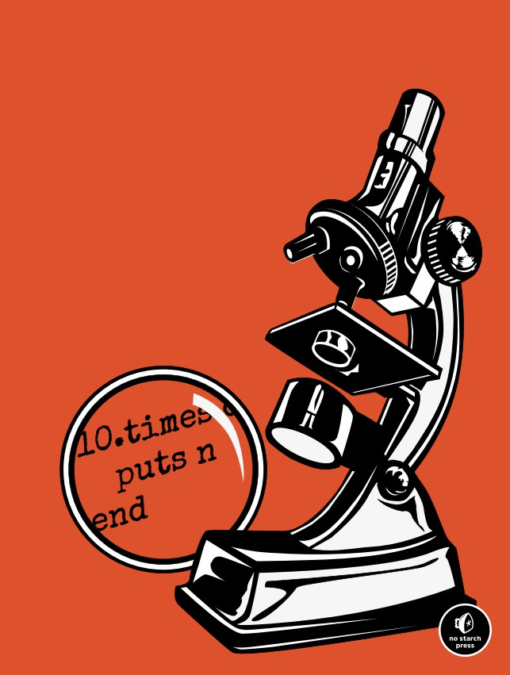
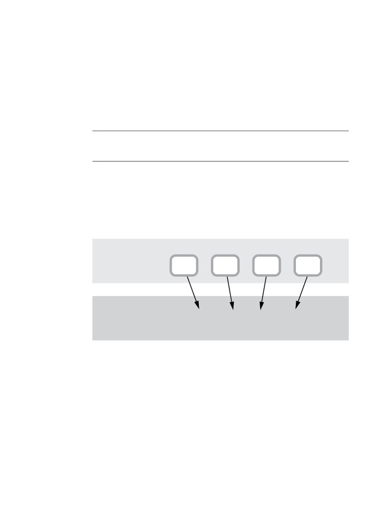
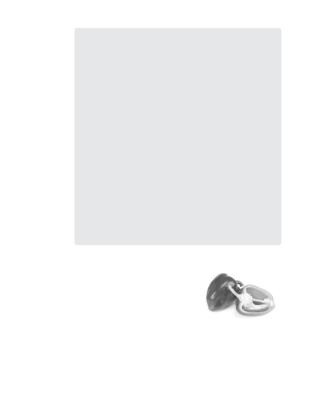
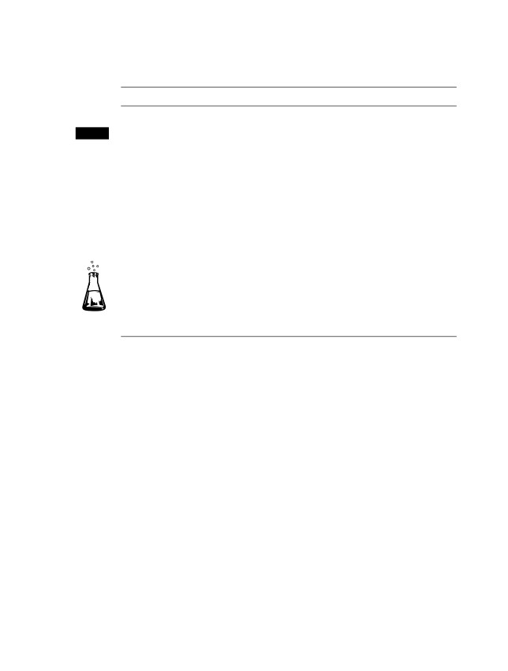

Ruby Under a
Microscope
An Illustrated Guide
to Ruby Internals
Pat Shaughnessy
Praise for Ruby Under a Microscope
Many people have dug into the Ruby source code, but few make it back
out and tell the tale as elegantly as Pat does in Ruby Under a Microscope !
I particularly love the diagramsand there are lots of themas they
make many opaque implementation topics a lot easier to understand,
especially when coupled with Pats gentle narrative. This book is a delight
for language implementation geeks and Rubyists with a penchant for dig-
ging into the guts of their tools.
Peter Cooper (@peterc), Editor of Ruby Inside and Ruby Weekly
Man, this book was missing in the Ruby landscapeawesome content.
Xavier Noria (@fxn), Ruby Hero, Ruby on Rails Core Team Member
Pat Shaughnessy did a tremendous job writing THE book about Ruby
internals. Definitely a must readyou wont find information like this
anywhere else.
Santiago Pastorino (@spastorino), WyeWorks Co-Founder,
Ruby on Rails Core Team Member
I really enjoyed the book and now have a far better understanding of both
Ruby and CS. The writing made very complex topics (at least for me) very
accessible, and I found the book hard to put down. Diagrams were awesome
and are already popping in my head as I code. This is by far one of my top 3
favourite Ruby books.
Vlad Ivanovic (@vladiim), Digital Strategist at Holler Sydney
While Im not usually digging into Ruby Internals, this book was an
absolutely awesome read.
David Deryl Downey (@daviddwdowney), Founder of CyberSpace
Technologies Group
Nearly every Ruby expert will benefit from knowing so much about how
the language and runtime operate.
Dr. Dobbs
Ruby isnt just a black box anymore, but rather a tool that I understand
and feel good using.
Robert Mosolgo, Rails Developer, Planning Center Online
Ruby Under a
Microscope
An Illustrated Guide
to Ruby Internals
Pat Shaughnessy
Ruby Under a Microscope. Copyright 2014 by Patrick Shaughnessy.
All rights reserved. No part of this work may be reproduced or transmitted in any form or by any means, elec-
tronic or mechanical, including photocopying, recording, or by any information storage or retrieval system,
without the prior written permission of the copyright owner and the publisher.
Printed on demand in USA
ISBN-10: 1-59327-527-7
ISBN-13: 978-1-59327-527-3
Publisher: William Pollock
Production Editor: Riley Hoffman
Cover Illustration: Charlie Wylie
Interior Design: Octopod Studios
Developmental Editor: William Pollock
Technical Reviewer: Aaron Patterson
Copyeditor: Julianne Jigour
Compositors: Susan Glinert Stevens and Riley Hoffman
Proofreader: Elaine Merrill
For information on distribution, translations, or bulk sales, please contact No Starch Press, Inc. directly:
No Starch Press, Inc.
245 8th Street, San Francisco, CA 94103
phone: 415.863.9900; info@nostarch.com
Library of Congress Cataloging-in-Publication Data
Shaughnessy, Pat.
Ruby under a microscope : an illustrated guide to Ruby internals / by Pat Shaughnessy.
pages cm
Summary: "An under-the-hood look at how the Ruby programming language runs code. Extensively illustrated with
complete explanations and hands-on experiments. Covers Ruby 2.x"-- Provided by publisher.
ISBN 978-1-59327-527-3 (paperback) -- ISBN 1-59327-527-7 (paperback)
1. Ruby (Computer program language) I. Title.
QA76.73.R83S53 2013
005.1'17--dc23
2013030614
No Starch Press and the No Starch Press logo are registered trademarks of No Starch Press, Inc. Other product
and company names mentioned herein may be the trademarks of their respective owners. Rather than use a
trademark symbol with every occurrence of a trademarked name, we are using the names only in an editorial
fashion and to the benefit of the trademark owner, with no intention of infringement of the trademark.
The information in this book is distributed on an As Is basis, without warranty. While every precaution has been
taken in the preparation of this work, neither the author nor No Starch Press, Inc. shall have any liability to any
person or entity with respect to any loss or damage caused or alleged to be caused directly or indirectly by the
information contained in it.
To my wife, Cristina; my daughter, Ana; and my son, Liam
thanks for supporting me all along.
About the Author
Pat Shaughnessy is a Ruby developer working at McKinsey & Co., a
management consulting firm. Pat was originally trained as a physicist
at MIT, but later spent more than 20 years working as a software developer
using C, Java, PHP, and Ruby, among other languages. Writing Ruby Under
a Microscope has given him an excuse to reuse bits of his scientific training
while studying Ruby. A fluent Spanish speaker, Pat frequently visits his wifes
family in northern Spain. He lives outside of Boston with his wife and two
children.
Brief Contents
Foreword by Aaron Patterson
xv
Foreword to the Japanese Edition by Yukihiro Matsumoto
xvi
Acknowledgments
xix
Introduction
xxi
Chapter 1: Tokenization and Parsing
3
Chapter 2: Compilation
31
Chapter 3: How Ruby Executes Your Code
55
Chapter 4: Control Structures and Method Dispatch
83
Chapter 5: Objects and Classes
105
Chapter 6: Method Lookup and Constant Lookup
133
Chapter 7: The Hash Table: The Workhorse of Ruby Internals
167
Chapter 8: How Ruby Borrowed a Decades-Old Idea from Lisp
191
Chapter 9: Metaprogramming
219
Chapter 10: JRuby: Ruby on the JVM
251
Chapter 11: Rubinius: Ruby Implemented with Ruby
273
Chapter 12: Garbage Collection in MRI, JRuby, and Rubinius
295
Appendix: Yet More Ruby Virtual Machines by Koichi Sasada
327
Index
331
Contents in Detail
Foreword by Aaron Patterson
xv
Foreword to the Japanese Edition by Yukihiro Matsumoto
xvi
Acknowledgments
xix
Introduction
xxi
Who This Book Is For
xxii
Using Ruby to Test Itself
xxii
Which Implementation of Ruby?
xxiii
Overview
xxiii
1
Tokenization and Parsing
3
Tokens: The Words That Make Up the Ruby Language
4
The parser_yylex Function
8
Experiment 1-1: Using Ripper to Tokenize Different Ruby Scripts
9
Parsing: How Ruby Understands Your Code
12
Understanding the LALR Parse Algorithm
13
Some Actual Ruby Grammar Rules
20
Reading a Bison Grammar Rule
22
Experiment 1-2: Using Ripper to Parse Different Ruby Scripts
23
Summary
29
2
Compilation
31
No Compiler for Ruby 1.8
32
Ruby 1.9 and 2.0 Introduce a Compiler
33
How Ruby Compiles a Simple Script
34
Compiling a Call to a Block
38
How Ruby Iterates Through the AST
42
Experiment 2-1: Displaying YARV Instructions
44
The Local Table
46
Compiling Optional Arguments
48
Compiling Keyword Arguments
49
Experiment 2-2: Displaying the Local Table
51
Summary
53
3
How Ruby Executes Your Code
55
YARVs Internal Stack and Your Ruby Stack
56
Stepping Through How Ruby Executes a Simple Script
58
Executing a Call to a Block
61
Taking a Close Look at a YARV Instruction
63
Experiment 3-1: Benchmarking Ruby 2.0 and Ruby 1.9 vs. Ruby 1.8
65
Local and Dynamic Access of Ruby Variables
67
Local Variable Access
67
Method Arguments Are Treated Like Local Variables
70
Dynamic Variable Access
71
Climbing the Environment Pointer Ladder in C
74
Experiment 3-2: Exploring Special Variables
75
A Definitive List of Special Variables
79
Summary
81
4
Control Structures and Method Dispatch
83
How Ruby Executes an if Statement
84
Jumping from One Scope to Another
86
Catch Tables
88
Other Uses for Catch Tables
90
Experiment 4-1: Testing How Ruby Implements for Loops Internally
90
The send Instruction: Rubys Most Complex Control Structure
92
Method Lookup and Method Dispatch
92
Eleven Types of Ruby Methods
93
Calling Normal Ruby Methods
95
Preparing Arguments for Normal Ruby Methods
95
Calling Built-In Ruby Methods
97
Calling attr_reader and attr_writer
97
Method Dispatch Optimizes attr_reader and attr_writer
98
Experiment 4-2: Exploring How Ruby Implements Keyword Arguments
99
Summary
103
5
Objects and Classes
105
Inside a Ruby Object
106
Inspecting klass and ivptr
107
Visualizing Two Instances of One Class
108
Generic Objects
109
Simple Ruby Values Dont Require a Structure at All
110
Do Generic Objects Have Instance Variables?
111
Reading the RBasic and RObject C Structure Definitions
112
Where Does Ruby Save Instance Variables for Generic Objects?
113
Experiment 5-1: How Long Does It Take to Save a New Instance Variable?
113
Whats Inside the RClass Structure?
115
Inheritance
118
Class Instance Variables vs. Class Variables
120
Getting and Setting Class Variables
122
x Contents in Detail
Constants
124
The Actual RClass Structure
125
Reading the RClass C Structure Definition
127
Experiment 5-2: Where Does Ruby Save Class Methods?
127
Summary
131
6
Method Lookup and Constant Lookup
133
How Ruby Implements Modules
135
Modules Are Classes
135
Including a Module into a Class
136
Rubys Method Lookup Algorithm
138
A Method Lookup Example
139
The Method Lookup Algorithm in Action
140
Multiple Inheritance in Ruby
141
The Global Method Cache
142
The Inline Method Cache
143
Clearing Rubys Method Caches
143
Including Two Modules into One Class
144
Including One Module into Another
145
A Module#prepend Example
146
How Ruby Implements Module#prepend
150
Experiment 6-1: Modifying a Module After Including It
151
Classes See Methods Added to a Module Later
152
Classes Dont See Submodules Included Later
152
Included Classes Share the Method Table with the Original Module
153
A Close Look at How Ruby Copies Modules
154
Constant Lookup
155
Finding a Constant in a Superclass
156
How Does Ruby Find a Constant in the Parent Namespace?
157
Lexical Scope in Ruby
158
Creating a Constant for a New Class or Module
159
Finding a Constant in the Parent Namespace Using Lexical Scope
160
Rubys Constant Lookup Algorithm
162
Experiment 6-2: Which Constant Will Ruby Find First?
162
Rubys Actual Constant Lookup Algorithm
163
Summary
165
7
The Hash Table: The Workhorse of Ruby Internals
167
Hash Tables in Ruby
169
Saving a Value in a Hash Table
169
Retrieving a Value from a Hash Table
171
Experiment 7-1: Retrieving a Value from Hashes of Varying Sizes
172
How Hash Tables Expand to Accommodate More Values
174
Hash Collisions
174
Rehashing Entries
175
How Does Ruby Rehash Entries in a Hash Table?
176
Experiment 7-2: Inserting One New Element into Hashes of Varying Sizes
177
Where Do the Magic Numbers 57 and 67 Come From?
180
Contents in Detail
xi
How Ruby Implements Hash Functions
181
Experiment 7-3: Using Objects as Keys in a Hash
183
Hash Optimization in Ruby 2.x
187
Summary
189
8
How Ruby Borrowed a Decades-Old Idea from Lisp
191
Blocks: Closures in Ruby
192
Stepping Through How Ruby Calls a Block
194
Borrowing an Idea from 1975
196
The rb_block_t and rb_control_frame_t Structures
198
Experiment 8-1: Which Is Faster: A while Loop or Passing a Block to each?
200
Lambdas and Procs: Treating a Function as a First-Class Citizen
203
Stack vs. Heap Memory
204
A Closer Look at How Ruby Saves a String Value
204
How Ruby Creates a Lambda
207
How Ruby Calls a Lambda
209
The Proc Object
211
Experiment 8-2: Changing Local Variables After Calling lambda
214
Calling lambda More Than Once in the Same Scope
216
Summary
217
9
Metaprogramming
219
Alternative Ways to Define Methods
221
Rubys Normal Method Definition Process
221
Defining Class Methods Using an Object Prefix
223
Defining Class Methods Using a New Lexical Scope
224
Defining Methods Using Singleton Classes
226
Defining Methods Using Singleton Classes in a Lexical Scope
227
Creating Refinements
228
Using Refinements
229
Experiment 9-1: Who Am I? How self Changes with Lexical Scope
231
self in the Top Scope
231
self in a Class Scope
232
self in a Metaclass Scope
233
self Inside a Class Method
234
Metaprogramming and Closures: eval, instance_eval, and binding
236
Code That Writes Code
236
Calling eval with binding
238
An instance_eval Example
240
Another Important Part of Ruby Closures
241
instance_eval Changes self to the Receiver
242
instance_eval Creates a Singleton Class for a New Lexical Scope
243
How Ruby Keeps Track of Lexical Scope for Blocks
244
Experiment 9-2: Using a Closure to Define a Method
246
Using define_method
246
Methods Acting as Closures
247
Summary
248
xii Contents in Detail
10
JRuby: Ruby on the JVM
251
Running Programs with MRI and JRuby
252
How JRuby Parses and Compiles Your Code
254
How JRuby Executes Your Code
255
Implementing Ruby Classes with Java Classes
257
Experiment 10-1: Monitoring JRubys Just-in-Time Compiler
260
Experiment Code
260
Using the -J-XX:+PrintCompilation Option
261
Does JIT Speed Up Your JRuby Program?
262
Strings in JRuby and MRI
263
How JRuby and MRI Save String Data
264
Copy-on-Write
265
Experiment 10-2: Measuring Copy-on-Write Performance
267
Creating a Unique, Nonshared String
267
Experiment Code
268
Visualizing Copy-on-Write
269
Modifying a Shared String Is Slower
270
Summary
271
11
Rubinius: Ruby Implemented with Ruby
273
The Rubinius Kernel and Virtual Machine
274
Tokenization and Parsing
276
Using Ruby to Compile Ruby
277
Rubinius Bytecode Instructions
278
Ruby and C++ Working Together
279
Implementing Ruby Objects with C++ Objects
280
Experiment 11-1: Comparing Backtraces in MRI and Rubinius
281
Backtraces in Rubinius
282
Arrays in Rubinius and MRI
284
Arrays Inside of MRI
285
The RArray C Structure Definition
286
Arrays Inside of Rubinius
286
Experiment 11-2: Exploring the Rubinius Implementation of Array#shift
288
Reading Array#shift
288
Modifying Array#shift
289
Summary
292
12
Garbage Collection in MRI, JRuby, and Rubinius
295
Garbage Collectors Solve Three Problems
297
Garbage Collection in MRI: Mark and Sweep
297
The Free List
297
MRIs Use of Multiple Free Lists
298
Marking
299
How Does MRI Mark Live Objects?
299
Sweeping
300
Lazy Sweeping
300
Contents in Detail
xiii
The RVALUE Structure
301
Disadvantages of Mark and Sweep
302
Experiment 12-1: Seeing MRI Garbage Collection in Action
302
Seeing MRI Perform a Lazy Sweep
303
Seeing MRI Perform a Full Collection
304
Interpreting a GC Profile Report
305
Garbage Collection in JRuby and Rubinius
309
Copying Garbage Collection
309
Bump Allocation
310
The Semi-Space Algorithm
311
The Eden Heap
312
Generational Garbage Collection
313
The Weak Generational Hypothesis
313
Using the Semi-Space Algorithm for Young Objects
314
Promoting Objects
314
Garbage Collection for Mature Objects
315
References Between Generations
316
Concurrent Garbage Collection
317
Marking While the Object Graph Changes
317
Tricolor Marking
319
Three Garbage Collectors in the JVM
320
Experiment 12-2: Using Verbose GC Mode in JRuby
321
Triggering Major Collections
323
Further Reading
324
Summary
325
Appendix
Yet More Ruby Virtual Machines by Koichi Sasada
327
YARV: Yet Another Ruby VM
328
Design Principles of YARV
328
YARV Development Prehistory
329
Yet More Ruby Virtual Machines
330
Index
331
xiv Contents in Detail
Foreword
Oh, hi! I didnt see you come in. I dont want to be too forward, but let me
preface this by saying you should buy this book!
My name is Aaron Patterson, but my Internet friends call me tenderlove.
I am on both the Ruby core team and the Ruby on Rails core team, and I
did the technical review of this book. Does that mean you should listen
to me? No. Well, maybe.
Actually, when Pat approached me to do the technical review of this
book, I was so excited that my top hat fell off and I dropped my monocle in
my coffee! I knew about Pats previous work on Ruby Under a Microscope, and
the idea of making an updated and print version available made me really
happy. I think many developers are intimidated by Rubys internals and are
afraid to dive in. Quite often people ask me how they can learn about how
Ruby works under the hood or where to get started hacking on Ruby inter-
nals. Unfortunately I didnt have a good answer for peopleuntil now.
Pats style of writing, in combination with experimentation, makes Ruby
internals very approachable. The experiments are combined with explana-
tions of Rubys internals such that you can easily understand why Ruby acts
the way it does with regard to behavior and performance. Next time you
encounter some behavior in your Ruby code, whether it be with perfor-
mance, local variables and your environment, or even garbage collection,
this book wont just tell you why your code behaves the way it does, but will
even tell you how.
If youre someone who wants to start hacking on Rubys internals, or if
you just want to understand why Ruby acts the way it does without any hand-
waving, this is the book for you. I enjoyed this book, and I hope you will too.
Aaron Patterson
<3 <3 <3 <3
Foreword to
the Japanese Edition
The science fiction novel A Connecticut Yankee in King
Arthurs Court by Mark Twain1 is one of the books I still
remember reading from my elementary school days.
It is the story of an American living in the 1880s who accidentally travels
through time to King Arthur-era Britain and nonetheless survives, taking
advantage of his knowledge from the modern (1880) era. Surely you would
be very powerful in the 5th century if you had knowledge of telephones,
bicycles, and guns. But if we travelled from the 21st century to the 5th cen-
tury, how much of our knowledge could we utilize? Bicycles are okay, but
how about computers? It seems almost impossible to build computers and
networks from scratch by ourselves. Modern technology products are too
advanced for individuals to reproduce. We dont know how technologies
work even when we use them in our everyday lives.
Ruby is one such technology. Even though we use it every day, few of
us know what it looks like on the inside, how it runs internally, or how one
could re-create such a programming language. Ruby Under a Microscope
sheds light on this and reveals the mystery of Ruby internals.
1. Mark Twain, A Connecticut Yankee in King Arthurs Court (Kameyama Nagarjuna translation,
Iwasaki Bookstore, 1971).
This book explains the software architecture of Ruby, the structure of
its object system, and tips for performance improvement. In addition to that,
it covers not only CRuby but also JRuby and Rubinius. I know of few books
where you can find this type of knowledge. Though we have Minero Aokis
Ruby Hacking Guide2 in Japan, its been difficult to obtain a copy for a long
time. It explains a version of Ruby as old as 1.7 and naturally does not cover
newer technologies like YARV. I believe Ruby Under a Microscope will contrib-
ute to a wider understanding of Ruby internals.
In the future someone inspired by this book may join the development
of Ruby. It may be you. We will definitely welcome that. Or, someone may
begin creating a next-generation programming language. I hope to see that
happen.
Yukihiro Matsumoto
Matsue, Japan
October 2014
2. Minero Aoki, Ruby Source Code Kanzen Kaisetsu, known as the Ruby Hacking Guide (Impress,
Acknowledgments
I could never have finished a project like this without
the support of many different people!
First of all, thanks to Satty Bhens and everyone else at McKinsey for
giving me the flexibility to write a book and keep my day job at a great
company. Alex Rothenberg and Daniel Higginbotham gave me invalu-
able advice, suffered through reading many early drafts, and helped me
throughout the process. Special thanks to Xavier Noria, who took an
interest in the project early on, gave me fantastic feedback on the entire
rough draft, and was also the inspiration behind Experiment 6-1. Santiago
Pastorino reviewed the rough draft as well. Jill Caporrimo, Prajakta Thakur,
Yvannova Montalvo, Divya Ganesh, and Yanwing Wong were my proofread-
ing SWAT team. Self-publishing would have been much harder without
your help. Finally, without the constant encouragement and support Peter
Cooper has given me this year, I probably never would have attempted to
write this book. Thank you, Peter.
Thanks to everyone at No Starch Press for helping me bring an
expanded, updated version of Ruby Under a Microscope to print. The result is
a book Im proud of and one the Ruby internals topic deserves. Thanks to
Julianne Jigour, my copyeditor. My writing has never been so clear and easy
to follow. Thank you, Riley Hoffman and Alison Law, for your editing advice
and for beautifully reproducing hundreds of diagrams for print. Youve been
a pleasure to work with. Thanks to Charles Nutter for the technical help and
advice on JVM garbage collection. Special thanks to Aaron Patterson: This
is a more interesting and accurate book because of your great suggestions
and technical review. Finally, thanks to Bill Pollock for reading and edit-
ing every single line of text in the book. Your guidance and expertise have
allowed me to write a book I could never have dreamed of writing on my own.
What seems complex from
a distance is often quite
simple when you look
closely enough.
Introduction
At first glance, learning how to use Ruby can seem
fairly simple. Developers around the world find Rubys
syntax to be graceful and straightforward. You can
express algorithms in a very natural way, and then its
just a matter of typing ruby at the command line and
pressing enter, and your Ruby script is running.
However, Rubys syntax is deceptively simple; in fact, Ruby employs
sophisticated ideas from complex languages like Lisp and Smalltalk.
On top of this, Ruby is dynamic; using metaprogramming, Ruby programs
can inspect and change themselves. Beneath this thin veneer of simplicity,
Ruby is a very complex tool.
By looking very closely at Rubyby learning how Ruby itself works
internallyyoull discover that a few important computer science concepts
underpin Rubys many features. By studying these, youll gain a deeper
understanding of what is happening under the hood as you use the lan-
guage. In the process, youll learn how the team that built Ruby intends for
you to use the language.
Ruby Under a Microscope will show you what happens inside Ruby when
you run a simple program. Youll learn how Ruby understands and executes
your code, and with the help of extensive diagrams, youll build a mental
model of what Ruby does when you create an object or call a block.
Who This Book Is For
Ruby Under a Microscope is not a beginners guide to learning Ruby. I assume
you already know how to program in Ruby and that you use it daily. There
are already many great books that teach Ruby basics; the world doesnt
need another one.
Although Ruby itself is written in C, a confusing, low-level language,
no C programming knowledge is required to read this book. Ruby Under a
Microscope will give you a high-level, conceptual understanding of how Ruby
works without your having to understand how to program in C. Inside this
book, youll find hundreds of diagrams that make the low-level details of
Rubys internal implementation easy to understand.
Note
Readers familiar with C will find a few snippets of C code that give a more concrete
sense of whats going on inside Ruby. Ill also tell you where the code derives from,
making it easier for you to start studying the C code yourself. If youre not interested
in the C code details, just skip over these sections.
Using Ruby to Test Itself
It doesnt matter how beautiful your theory is, it doesnt matter
how smart you are. If it doesnt agree with experiment, its wrong.
Richard Feynman
Imagine that the entire world functioned like a large computer program.
To explain natural phenomena or experimental results, physicists like
Richard Feynman would simply consult this program. (A scientists dream
come true!) But of course, the universe is not so simple.
Fortunately, to discover how Ruby works, all we need to do is read its
internal C source code: a kind of theoretical physics that describes Rubys
behavior. Just as Maxwells equations explain electricity and magnetism,
Rubys internal C source code explains what happens when you pass an
argument to a method or include a module in a class.
Like scientists, however, we need to perform experiments to be sure our
hypotheses are correct. After learning about each part of Rubys internal
implementation, well perform an experiment and use Ruby to test itself!
Well run small Ruby test scripts to see whether they produce the expected
output or run as quickly or as slowly as we expect. Well find out if Ruby
actually behaves the way theory says it should. And since these experiments
are written in Ruby, you can try them yourself.
xxii
Introduction
Which Implementation of Ruby?
Ruby was invented by Yukihiro Matz Matsumoto in 1993, and the original,
standard version of Ruby is often known as Matzs Ruby Interpreter (MRI).
Most of this book will discuss how MRI works; essentially, well learn how
Matz implemented his own language.
Over the years many alternative implementations of Ruby have been
written. Some, like RubyMotion, MacRuby, and IronRuby, were designed to
run on specific platforms. Others, like Topaz and JRuby, were built using
programming languages other than C. One version, Rubinius, was built
using Ruby itself. And Matz himself is now working on a smaller version
of Ruby called mruby, designed to run inside another application.
I explore the Ruby implementations JRuby and Rubinius in detail in
Chapters 10, 11, and 12. Youll learn how they use different technologies
and philosophies to implement the same language. As you study these alter-
native Rubies, youll gain additional perspective on MRIs implementation.
Overview
In Chapter 1: Tokenization and Parsing, youll learn how Ruby parses
your Ruby program. This is one of the most fascinating areas of computer
science: How can a computer language be smart enough to understand the
code you give it? What does this intelligence really consist of?
Chapter 2: Compilation explains how Ruby uses a compiler to convert
your program into a different language before running it.
Chapter 3: How Ruby Executes Your Code looks at the virtual machine
Ruby uses to run your program. Whats inside this machine? How does it
work? Well look deep inside this virtual machine to find out.
Chapter 4: Control Structures and Method Dispatch continues the
description of Rubys virtual machine, looking at how Ruby implements
control structures such as if...else statements and while...end loops. It also
explores how Ruby implements method calls.
Chapter 5: Objects and Classes discusses Rubys implementation of
objects and classes. How are objects and classes related? What would we
find inside a Ruby object?
Chapter 6: Method Lookup and Constant Lookup examines Ruby
modules and their relationship to classes. Youll learn how Ruby finds
methods and constants in your Ruby code.
Chapter 7: The Hash Table: The Workhorse of Ruby Internals
explores Rubys implementation of hash tables. As it turns out, MRI uses
hash tables for much of its internal data, not only for data you save in
Ruby hash objects.
Chapter 8: How Ruby Borrowed a Decades-Old Idea from Lisp reveals
that one of Rubys most elegant and useful features, blocks, is based on an
idea originally developed for Lisp.
In Chapter 9: Metaprogramming tackles one of the most difficult
topics for Ruby developers. By studying how Ruby implements metapro-
gramming internally, youll learn how to use metaprogramming effectively.
Introduction
xxiii
Chapter 10: JRuby: Ruby on the JVM introduces JRuby, an alternative
version of Ruby implemented with Java. Youll learn how JRuby uses the Java
Virtual Machine (JVM) to run your Ruby programs faster.
Chapter 11: Rubinius: Ruby Implemented with Ruby looks at one of
the most interesting and innovative implementations of Ruby: Rubinius.
Youll learn how to locateand modifythe Ruby code in Rubinius to see
how a particular Ruby method works.
Chapter 12: Garbage Collection in MRI, JRuby, and Rubinius con-
cludes with a look at garbage collection (GC), one of the most mysterious
and confusing topics in computer science. Youll see how Rubinius and
JRuby use very different GC algorithms from those used by MRI.
By studying all of these aspects of Rubys internal implementation,
youll acquire a deeper understanding of what happens when you use
Rubys complex feature set. Just as Antonie van Leeuwenhoek first saw
microbes and cells looking through early microscopes in the 1600s, by
looking inside of Ruby youll discover a wide array of interesting struc-
tures and algorithms. Join me on a fascinating behind-the-scenes look at
what brings Ruby to life!
xxiv
Introduction
Your code has a long
road to take before
Ruby ever runs it.
1
Tokenization and Parsing
How many times do you think Ruby reads and trans-
forms your code before running it? Once? Twice?
The correct answer is three times. Whenever you run a Ruby script
whether its a large Rails application, a simple Sinatra website, or a back-
ground worker jobRuby rips your code apart into small pieces and then
puts them back together in a different format three times! Between the time
you type ruby and the time you start to see actual output on the console,
your Ruby code has a long road to takea journey involving a variety of
different technologies, techniques, and open source tools.
Figure 1-1 shows what this journey looks like at a high level.
Your
YARV
Ruby Code
Tokenize
Parse
Compile
Instructions
tokens
AST
nodes
Figure 1-1: Your codes journey through Ruby
First, Ruby tokenizes your code, which means it reads the text characters
in your code file and converts them into tokens, the words used in the Ruby
language. Next, Ruby parses these tokens; that is, it groups the tokens into
meaningful Ruby statements just as one might group words into sentences.
Finally, Ruby compiles these statements into low-level instructions that it
can execute later using a virtual machine.
Ill cover Rubys virtual machine, called Yet Another Ruby Virtual
Machine (YARV), in Chapter 3. But first, in this chapter, Ill describe the
tokenizing and parsing processes that Ruby uses to understand your code.
After that, in Chapter 2, Ill show you how Ruby compiles your code by
translating it into a completely different language.
note
Throughout most of this book well learn about the original, standard implementa-
tion of Ruby, known as Matzs Ruby Interpreter (MRI) after Yukihiro Matsumoto,
who invented Ruby in 1993. There are many other implementations of Ruby avail-
able in addition to MRI, including Ruby Enterprise Edition, MagLev, MacRuby,
RubyMotion, mruby, and many, many others. Later, in Chapters 10, 11, and 12,
well look at two of these alternative Ruby implementations: JRuby and Rubinius.
Roadmap
Tokens: The Words That Make Up the Ruby Language
4
The parser_yylex Function
8
Experiment 1-1: Using Ripper to Tokenize Different Ruby Scripts
9
Parsing: How Ruby Understands Your Code
12
Understanding the LALR Parse Algorithm
13
Some Actual Ruby Grammar Rules
20
Reading a Bison Grammar Rule
22
Experiment 1-2: Using Ripper to Parse Different Ruby Scripts
23
Summary
29
Tokens: The Words That Make Up the Ruby Language
Suppose you write a simple Ruby program and save it in a file called
simple.rb, shown in Listing 1-1.
10.times do |n|
puts n
end
Listing 1-1: A very simple Ruby program (simple.rb)
4
Chapter 1
Listing 1-2 shows the output you would see after executing the program
from the command line.
$ ruby simple.rb
0
1
2
3
--snip--
Listing 1-2: Executing Listing 1-1
What happens after you type ruby simple.rb and press enter? Aside
from general initialization, processing your command line parameters,
and so on, the first thing Ruby does is open simple.rb and read in all the
text from the code file. Next, it needs to make sense of this text: your Ruby
code. How does it do this?
After reading in simple.rb, Ruby encounters the series of text characters
shown in Figure 1-2. (To keep things simple, Im showing only the first line
of text here.)
1
0
t
i
m
e
s
d
o
|
n
|
Figure 1-2: The first line of text in simple.rb
When Ruby sees these characters, it tokenizes them. That is, it con-
verts them into a series of tokens or words that it understands by stepping
through the characters one at a time. In Figure 1-3, Ruby starts scanning at
the first characters position.
1
0
t
i
m
e
s
d
o
|
n
|
Figure 1-3: Ruby starts to tokenize your code.
The Ruby C source code contains a loop that reads in one character at
a time and processes it based on what that character is.
To keep things simple, Im describing tokenization as an independent
process. In fact, the parsing engine I describe next calls this C tokenize code
whenever it needs a new token. Tokenization and parsing are separate pro-
cesses that actually occur at the same time. For now, lets just continue to
see how Ruby tokenizes the characters in your Ruby file.
Ruby realizes that the character 1 is the start of a number and contin-
ues to iterate over the characters that follow until it finds a nonnumeric
character. First, in Figure 1-4, it finds a 0.
Tokenization and Parsing
5
1
0
t
i
m
e
s
d
o
|
n
|
Figure 1-4: Ruby steps to the second text character.
And stepping forward again, in Figure 1-5, Ruby finds a period
character.
1
0
t
i
m
e
s
d
o
|
n
|
Figure 1-5: Ruby finds a period character.
Ruby actually considers the period character to be numeric because it
might be part of a floating-point value. In Figure 1-6, Ruby steps to the next
character, t.
1
0
t
i
m
e
s
d
o
|
n
|
Figure 1-6: Ruby finds the first nonnumeric character.
Now Ruby stops iterating because it has found a nonnumeric charac-
ter. Because there are no more numeric characters after the period, Ruby
considers the period to be part of a separate token, and it steps back one, as
shown in Figure 1-7.
1
0
t
i
m
e
s
d
o
|
n
|
Figure 1-7: Ruby steps back one character.
Finally, in Figure 1-8, Ruby converts the numeric characters that it
found into the first token from your program, called tINTEGER.
tINTEGER
t
i
m
e
s
d
o
|
n
|
10
Figure 1-8: Ruby converts the first two text characters into a tINTEGER token.
6
Chapter 1
Ruby continues to step through the characters in your code file, con-
verting them into tokens and grouping characters as necessary. The second
token, shown in Figure 1-9, is a single character: a period.
tINTEGER
t
i
m
e
s
d
o
|
n
|
10
Figure 1-9: Ruby converts the period character into a token.
Next, in Figure 1-10, Ruby encounters the word times and creates an
identifier token.
tINTEGER
tIDENTIFIER
d
o
|
n
|
10
times
Figure 1-10: Ruby tokenizes the word times.
Identifiers are words in your Ruby code that are not reserved words.
Identifiers usually refer to variable, method, or class names.
Next, Ruby sees do and creates a reserved word token, as indicated by
keyword_do in Figure 1-11.
tINTEGER
tIDENTIFIER
keyword_do
|
n
|
10
times
Figure 1-11: Ruby creates a reserved word token: keyword_do.
Reserved words are keywords that carry significant meaning in Ruby
because they provide the structure, or framework, of the language. They
are called reserved words because you cant use them as normal identifiers,
although you can use them as method names, global variable names (such
as $do), or instance variable names (for example, @do or @@do).
Internally, the Ruby C code maintains a constant table of reserved
words. Listing 1-3 shows the first few, in alphabetical order.
alias
and
begin
break
case
class
Listing 1-3: The first few reserved words, listed alphabetically
Tokenization and Parsing
7
The parser_yylex Function
If youre familiar with C and are interested in learning more about the detailed way
in which Ruby tokenizes your code file, see the parse.y file in your version of Ruby.
The .y extension indicates that parse.y is a grammar rule fileone that contains a
series of rules for the Ruby parser engine. (Ill discuss these in the next section.)
parse.y is an extremely large and complex file with over 10,000 lines of code!
For now, ignore the grammar rules, and search for a C function called parser_
yylex, about two-thirds of the way down the file, around line 6500. This complex C
function contains the code that actually tokenizes your code. Look closely and you
should see a very large switch statement that starts with the code shown in Listing 1-4.
u retry:
v last_state = lex_state;
w switch (c = nextc()) {
Listing 1-4: The C code inside Ruby that reads in each character from your code file
The nextc() function w returns the next character in the code file text stream.
Think of this function as the arrow in the previous diagrams. The lex_state variable
v keeps information about what state or type of code Ruby is processing at the
moment.
The large switch statement inspects each character of your code file and takes
a different action based on what it is. For example, the code shown in Listing 1-5
looks for whitespace characters and ignores them by jumping back up to the retry
label u just above the switch statement in Listing 1-4.
/* white spaces */
case ' ': case '\t': case '\f': case '\r':
case '\13': /* '\v' */
space_seen = 1;
--snip--
goto retry;
Listing 1-5: This C code checks for whitespace characters in your code and ignores them.
Rubys reserved words are defined in the file called defs/keywords. If you open
this file, youll see a complete list of all of Rubys reserved words (see a partial list
in Listing 1-3). The keywords file is used by an open source package called gperf to
produce C code that can quickly and efficiently look up strings in a tablein this
case, a table of reserved words. You can find the generated C code that looks up
reserved words in lex.c, which defines a function named rb_reserved_word, called
from parse.y.
One final detail about tokenization: Ruby doesnt use the Lex tokenization tool
that C programmers commonly use in conjunction with a parser generator like Yacc
or Bison. Instead, the Ruby core team wrote the Ruby tokenization code by hand for
performance reasons.
8
Chapter 1
Finally, as shown in Figure 1-12, Ruby converts the remaining charac-
ters to tokens.
tINTEGER
tIDENTIFIER
tIDENTIFIER
keyword_do
|
|
10
times
n
Figure 1-12: Ruby finishes tokenizing the first line of text.
Ruby continues to step through your code until it has tokenized the
entire Ruby script. At this point, it has processed your code for the first
time, ripping it apart and putting it back together again in a completely
different way. Your code began as a stream of text characters, and Ruby
converted it to a stream of tokens, words that it will later combine into
sentences.
Experiment 1-1: Using Ripper to Tokenize Different
Ruby Scripts
Now that weve learned the basic idea behind tokenization, lets look at how
Ruby actually tokenizes different Ruby scripts. After all, how else will you
know that the previous explanation is actually correct?
As it turns out, a tool called Ripper makes it very easy to see what tokens
Ruby creates for different code files. Shipped with Ruby 1.9 and Ruby 2.x,
the Ripper class allows you to call the same tokenization and parsing code
that Ruby uses to process text from code files. (Ripper is not available in
Ruby 1.8.)
Listing 1-6 shows how simple using Ripper is.
require 'ripper'
require 'pp'
code = <<STR
10.times do |n|
puts n
end
STR
puts code
u pp Ripper.lex(code)
Listing 1-6: An example of how to call Ripper.lex (lex1.rb)
After requiring the Ripper code from the standard library, you call it by
passing some code as a string to the Ripper.lex method u. Listing 1-7 shows
the output from Ripper.
$ ruby lex1.rb
10.times do |n|
puts n
end
u [[[1, 0], :on_int, "10"],
Tokenization and Parsing
9
[[1, 2], :on_period, "."],
v [[1, 3], :on_ident, "times"],
[[1, 8], :on_sp, " "],
[[1, 9], :on_kw, "do"],
[[1, 11], :on_sp, " "],
[[1, 12], :on_op, "|"],
[[1, 13], :on_ident, "n"],
[[1, 14], :on_op, "|"],
[[1, 15], :on_ignored_nl, "\n"],
[[2, 0], :on_sp, " "],
[[2, 2], :on_ident, "puts"],
[[2, 6], :on_sp, " "],
[[2, 7], :on_ident, "n"],
[[2, 8], :on_nl, "\n"],
[[3, 0], :on_kw, "end"],
[[3, 3], :on_nl, "\n"]]
Listing 1-7: The output generated by Ripper.lex
Each line corresponds to a single token that Ruby found in your code
string. On the left, we have the line number (1, 2, or 3 in this short example)
and the text column number. Next, we see the token itself displayed as a
symbol, such as :on_int u or :on_ident v. Finally, Ripper displays the text
characters that correspond to each token.
The token symbols that Ripper displays are somewhat different from
the token identifiers I used in Figures 1-2 through 1-12 that showed Ruby
tokenizing the 10.times do code. I used the same names you would find in
Rubys internal parse code, such as tIDENTIFIER, while Ripper used :on_ident
instead.
Regardless, Ripper will still give you a sense of what tokens Ruby finds
in your code and how tokenization works.
Listing 1-8 shows another example of using Ripper.
$ ruby lex2.rb
10.times do |n|
puts n/4+6
end
--snip--
[[2, 2], :on_ident, "puts"],
[[2, 6], :on_sp, " "],
[[2, 7], :on_ident, "n"],
[[2, 8], :on_op, "/"],
[[2, 9], :on_int, "4"],
[[2, 10], :on_op, "+"],
[[2, 11], :on_int, "6"],
[[2, 12], :on_nl, "\n"],
--snip--
Listing 1-8: Another example of using Ripper.lex
10
Chapter 1
This time Ruby converts the expression n/4+6 into a series of tokens in a
very straightforward way. The tokens appear in exactly the same order they
did inside the code file.
Listing 1-9 shows a third, slightly more complex example.
$ ruby lex3.rb
array = []
10.times do |n|
array << n if n < 5
end
p array
--snip--
[[3, 2], :on_ident, "array"],
[[3, 7], :on_sp, " "],
u [[3, 8], :on_op, "<<"],
[[3, 10], :on_sp, " "],
[[3, 11], :on_ident, "n"],
[[3, 12], :on_sp, " "],
[[3, 13], :on_kw, "if"],
[[3, 15], :on_sp, " "],
[[3, 16], :on_ident, "n"],
[[3, 17], :on_sp, " "],
v [[3, 18], :on_op, "<"],
[[3, 19], :on_sp, " "],
[[3, 20], :on_int, "5"],
--snip--
Listing 1-9: A third example of running Ripper.lex
As you can see, Ruby is smart enough to distinguish between << and <
in the following line: array << n if n < 5. The characters << are converted to
a single operator token u, while the single < character that appears later is
converted into a simple less-than operator v. Rubys tokenize code is smart
enough to look ahead for a second < character when it finds one <.
Finally, notice that Ripper has no idea whether the code you give it is
valid Ruby or not. If you pass in code that contains a syntax error, Ripper.lex
will just tokenize it as usual and not complain. Its the parsers job to check
syntax.
Suppose you forget the | symbol after the block parameter n u, as
shown in Listing 1-10.
require 'ripper'
require 'pp'
code = <<STR
u 10.times do |n
puts n
end
STR
puts code
pp Ripper.lex(code)
Listing 1-10: This code contains a syntax error.
Tokenization and Parsing
11
Running this, you get the output shown in Listing 1-11.
$ ruby lex4.rb
10.times do |n
puts n
end
--snip--
[[[1, 0], :on_int, "10"],
[[1, 2], :on_period, "."],
[[1, 3], :on_ident, "times"],
[[1, 8], :on_sp, " "],
[[1, 9], :on_kw, "do"],
[[1, 11], :on_sp, " "],
[[1, 12], :on_op, "|"],
[[1, 13], :on_ident, "n"],
[[1, 14], :on_nl, "\n"],
--snip--
Listing 1-11: Ripper does not detect syntax errors.
Parsing: How Ruby Understands Your Code
Once Ruby converts your code into a series of tokens, what does it do next?
How does it actually understand and run your program? Does Ruby simply
step through the tokens and execute each one in order?
No. Your code still has a long way to go before Ruby can run it. The
next step on its journey through Ruby is called parsing, where words or
tokens are grouped into sentences or phrases that make sense to Ruby.
When parsing, Ruby takes into account the order of operations, methods,
blocks, and other larger code structures.
But how can Ruby actually understand what youre telling it with your
code? Like many programming languages, Ruby uses a parser generator. Ruby
uses a parser to process tokens, but the parser itself
is generated with a parser generator. Parser gen-
erators take a series of grammar rules as input that
describe the expected order and patterns in which
the tokens will appear.
The most widely used and well-known parser
generator is Yacc (Yet Another Compiler Compiler),
but Ruby uses a newer version of Yacc called Bison.
The grammar rule file for Bison and Yacc has a
.y extension. In the Ruby source code, the gram-
mar rule file is parse.y (introduced earlier). The
parse.y file defines the actual syntax and grammar
that you have to use while writing your Ruby code;
its really the heart and soul of Ruby and where the
Ruby uses an LALR parser
language itself is actually defined!
generator called Bison.
12
Chapter 1
Ruby uses Bison when building Ruby itself, and not to directly process
tokens. In effect, there are two separate steps to the parsing process, shown
in Figure 1-13.
Before you run your Ruby program, the Ruby build process uses Bison
to generate the parser code (parse.c) from the grammar rule file (parse.y).
Later, at run time, this generated parser code parses the tokens returned by
Rubys tokenizer code.
Ruby Build Time
Grammar
Generate
Parser Code
Rules
Parser
(parse.c)
(parse.y)
(Bison)
Ruby Code
YARV
(.rb files)
Tokenize
Parse
Compile
Instructions
tokens
AST
nodes
Run Time
Figure 1-13: The Ruby build process runs Bison ahead of time.
Because the parse.y file and the generated parse.c file also contain
the tokenization code, Figure 1-13 has a diagonal arrow from parse.c to the
tokenize process on the lower left. (In fact, the parse engine Im about
to describe calls the tokenization code whenever it needs a new token.)
The tokenization and parsing processes actually occur simultaneously.
Understanding the LALR Parse Algorithm
How does the parser code analyze and process the incoming tokens?
With an algorithm known as LALR, or Look-Ahead Left Reversed Rightmost
Derivation. Using the LALR algorithm, the parser code processes the token
stream from left to right, trying to match their order and the pattern in
which they appear against one or more of the grammar rules from parse.y.
The parser code also looks ahead when necessary to decide which gram-
mar rule to match.
The best way to become familiar with the way Ruby grammar rules
work is with an example. To keep things simple for now, well look at an
abstract example. Later on, Ill show that Ruby actually works in precisely
the same way when it parses your code.
Tokenization and Parsing
13

Suppose you want to translate from the Spanish:
Me gusta el Ruby.
[Phrase 1]
to the English:
I like Ruby.
And suppose that to translate Phrase 1, you use Bison to generate a C
language parser from a grammar file. Using the Bison/Yacc grammar rule
syntax, you can write the simple grammar shown in Listing 1-12, with the
rule name on the left and the matching tokens on the right.
SpanishPhrase : me gusta el ruby {
printf("I like Ruby\n");
}
Listing 1-12: A simple grammar rule matching the Spanish Phrase 1
This grammar rule says the following: If the token stream is equal to me,
gusta, el, and rubyin that orderwe have a match. If theres a match, the
Bison generated parser will run the given C code, and the printf statement
(similar to puts in Ruby) will print the translated English phrase.
Figure 1-14 shows the parsing process in action.
Tokens
me
gusta
el
ruby
Grammar Rule
SpanishPhrase:
me gusta el
ruby
Figure 1-14: Matching tokens with a grammar rule
There are four input tokens at the top, and the grammar rule is under-
neath. It should be clear that theres a match because each input token cor-
responds directly to one of the terms on the right side of the grammar rule.
We have a match on the SpanishPhrase rule.
Now lets improve on this example. Suppose you need to enhance your
parser to match Phrase 1 and Phrase 2:
Me gusta el Ruby.
[Phrase 1]
and:
Le gusta el Ruby.
[Phrase 2]
In English, Phrase 2 means She/He/It likes Ruby.
14
Chapter 1
The modified grammar file in Listing 1-13 can parse both Spanish
phrases.
SpanishPhrase: VerbAndObject el ruby {
printf("%s Ruby\n", $1);
};
VerbAndObject: SheLikes | ILike {
$$ = $1;
};
SheLikes: le gusta {
$$ = "She likes";
}
ILike: me gusta {
$$ = "I like";
}
Listing 1-13: These grammar rules match both Phrase 1 and Phrase 2.
As you can see, there are four grammar rules here instead of just
one. Also, youre using the Bison directive $$ to return a value from a
child grammar rule to a parent and $1 to refer to a childs value from
a parent.
Unlike with Phrase 1, the parser cant immediately match Phrase 2 with
any of the grammar rules.
In Figure 1-15, we can see the el and ruby tokens match the SpanishPhrase
rule, but le and gusta do not. (Ultimately, well see that the child rule
VerbAndObject does match le gusta, but never mind that for now.) With four
grammar rules, how does the parser know which other rules to try to match
against? And against which tokens?
Tokens
le
gusta
el
ruby
?
Grammar Rule
SpanishPhrase:
VerbAndObject
el
ruby
Figure 1-15: The first two tokens dont match.
This is where the intelligence of the LALR parser comes in. As I men-
tioned earlier, the acronym LALR stands for Look-Ahead LR parser, and it
Tokenization and Parsing
15
describes the algorithm the parser uses to find matching grammar rules.
Well get to the look ahead part in a minute. For now, lets start with LR:
L (left) means the parser moves from left to right while processing the
token stream. In this example, that would be le, gusta, el, and ruby, in
that order.
R (reversed rightmost derivation) means the parser takes a bottom-up
strategy, using a shift/reduce technique, to find matching grammar
rules.
Heres how the algorithm works for Phrase 2. First, the parser takes the
input token stream, shown again in Figure 1-16.
Tokens
le
gusta
el
ruby
Figure 1-16: The input stream of tokens
Next, it shifts the tokens to the left, creating what Ill call the grammar
rule stack, as shown Figure 1-17.
Grammar Rule Stack
Tokens
shift
le
gusta
el
ruby
Figure 1-17: The parser moves the first token onto the grammar rule stack.
Because the parser has processed only the token le, it places this token
in the stack alone for the moment. The term grammar rule stack is a bit of an
oversimplification; while the parser uses a stack, instead of grammar rules,
it pushes numbers onto its stack to indicate which grammar rule it has just
parsed. These numbers, or states, help the parser keep track of which gram-
mar rules it has matched as it processes tokens.
Next, as shown in Figure 1-18, the parser shifts another token to
the left.
Grammar Rule Stack
Tokens
shift
le gusta
el
ruby
Figure 1-18: The parser moves another token onto the stack.
16
Chapter 1
Now there are two tokens in the stack on the left. At this point, the
parser stops to search the different grammar rules for a match. Figure 1-19
shows the parser matching the SheLikes rule.
Grammar Rule Stack
Tokens
SheLikes
el
ruby
reduce
Figure 1-19: The parser matches the SheLikes rule and reduces.
This operation is called reduce because the parser is replacing the pair
of tokens with a single matching rule. The parser looks through the avail-
able rules and reduces, or applies the single matching rule.
Now the parser can reduce again because theres another matching
rule: VerbAndObject! The VerbAndObject rule matches because its use of the
OR (|) operator matches either the SheLikes or ILike child rules.
You can see in Figure 1-20 that the parser replaces SheLikes with
VerbAndObject.
Grammar Rule Stack
Tokens
VerbAndObject
el
ruby
reduce
Figure 1-20: The parser reduces again, matching the VerbAndObject rule.
But think about this: How did the parser know to reduce and not
continue to shift tokens? Also, if in the real world there are actually many
matching rules, how does the parser know which one to use? How does
it decide whether to shift or reduce? And if it reduces, how does it decide
which grammar rule to reduce with?
In other words, suppose at this point in the process multiple matching
rules included le gusta. How would the parser know which rule to apply
or whether to shift in the el token first before looking for a match? (See
Figure 1-21.)
Grammar Rule Stack
Tokens
le gusta
el
ruby
Figure 1-21: How does the parser know to shift or reduce?
Tokenization and Parsing
17
Heres where the look ahead portion of LALR comes in. In order to find
the correct matching rule, the parser looks ahead at the next token. The
arrow in Figure 1-22 shows the parser looking ahead at the el token.
Grammar Rule Stack
Tokens
le gusta
el
ruby
?
Figure 1-22: Looking ahead at the next token in the input stream
Additionally, the parser maintains a state table of possible outcomes
depending on what the next token is and which grammar rule was just
parsed. In this case, the table would contain a series of states, describing
which grammar rules have been parsed so far and which states to move
to next depending on the next token. (LALR parsers are complex state
machines that match patterns in the token stream. When you use Bison to
generate the LALR parser, Bison calculates what this state table should con-
tain based on the grammar rules you provided.)
In this example, the state table would contain an entry indicating that
if the next token was el, the parser should first reduce using the SheLikes
rule before shifting a new token.
Rather than waste your time with the details of what a state table looks
like (youll find the actual LALR state table for Ruby in the generated
parse.c file), lets continue the shift/reduce operations for Phrase 2, Le
gusta el Ruby. After matching the VerbAndObject rule, the parser would shift
another token to the left, as shown in Figure 1-23.
Grammar Rule Stack
Tokens
shift
VerbAndObject el
ruby
Figure 1-23: The parser shifts another token onto the stack.
At this point, no rules would match, and the state machine would shift
another token to the left (see Figure 1-24).
Grammar Rule Stack
shift
VerbAndObject el ruby
Figure 1-24: The parser shifts another token onto the stack.
18
Chapter 1
Figure 1-25 shows how the parent grammar rule SpanishPhrase would
match after a final reduce operation.
Grammar Rule Stack
SpanishPhrase
reduce and match!
Figure 1-25: The parser matches the SpanishPhrase ruleand the
entire input stream!
Ive shown you this Spanish-to-English example because Ruby parses
your program in exactly the same way! Inside the Ruby parse.y source code
file, youll see hundreds of rules that define the structure and syntax of
the Ruby language. There are parent and child rules, and the child rules
return values the parent rules can refer to in exactly the same way our
SpanishPhrase grammar rules do, using the symbols $$, $1, $2, and so on. The
only real difference is scale: Our SpanishPhrase grammar example is trivial,
really. In contrast, Rubys grammar is very complex; its an intricate series
of interrelated parent and child grammar rules, which sometimes refer to
each other in circular, recursive patterns. But this complexity just means
that the generated state table in parse.c is quite large. The basic LALR algo-
rithm, which describes how the parser processes tokens and uses the state
table, is the same in our Spanish example as it is in Ruby.
To get a sense of just how complex the state table is for Ruby, you can
try using Rubys -y option, which displays internal debug information every
time the parser jumps from one state to another. Listing 1-14 shows a small
portion of the output generated when you run the 10.times do example from
Listing 1-1.
$ ruby -y simple.rb
Starting parse
Entering state 0
Reducing stack by rule 1 (line 850):
-> $$ = nterm @1 ()
Stack now 0
Entering state 2
Reading a token: Next token is token tINTEGER ()
Shifting token tINTEGER ()
Entering state 41
Reducing stack by rule 498 (line 4293):
$1 = token tINTEGER ()
-> $$ = nterm numeric ()
Stack now 0 2
Entering state 109
--snip--
Listing 1-14: Ruby optionally displays debug information, showing how the parser jumps
from one state to another.
Tokenization and Parsing
19
Some Actual Ruby Grammar Rules
Lets look at some actual Ruby grammar rules from parse.y. Listing 1-15 con-
tains the simple example Ruby script from Listing 1-1 on page 4.
10.times do |n|
puts n
end
Listing 1-15: The simple Ruby program from Listing 1-1.
Figure 1-26 shows how Rubys parsing process works with this script.
Ruby Code
Grammar Rules
10.times do |n| program: top_compstmt
puts n
top_compstmt: top_stmts opt_terms
end
top_stmts: ... | top_stmt | ...
top_stmt: stmt | ...
stmt: ... | expr
expr: ... | arg
arg: ... | primary
primary: ... | method_call brace_block | ...
Figure 1-26: The grammar rules on the right match the Ruby code on the left.
On the left is the code that Ruby is trying to parse. On the right are the
actual matching grammar rules from the Ruby parse.y file, shown simplified.
The first rule, program: top_compstmt, is the root grammar rule that matches
every Ruby program in its entirety.
As you go down the list, you see a complex series of child rules that
also match the entire Ruby script: top statements, a single statement, an
expression, an argument, and, finally, a primary value. Once Rubys parse
reaches the primary grammar rule, it encounters a rule with two matching
child rules: method_call and brace_block. Lets look at method_call first (see
Figure 1-27).
Ruby Code
Grammar Rules
10.times
method_call: ... | primary_value '.' operation2 | ...
Figure 1-27: 10.times matches the method_call grammar rule.
The method_call rule matches the 10.times portion of the Ruby code
that is, where we call the times method on the 10 Fixnum object. You can
20
Chapter 1
see that the method_call rule matches another primary value, followed by a
period character, followed by an operation2 rule.
Figure 1-28 shows that the primary_value rule first matches the value 10.
Ruby Code
Grammar Rules
10
primary_value: primary
primary: literal | ...
Figure 1-28: The value 10 matches the
primary_value grammar rule.
Then, in Figure 1-29, the operation2 rule matches the method
name times.
Ruby Code
Grammar Rules
times
operation2: identifier | ...
Figure 1-29: The times method name matches the
operation2 grammar rule.
How does Ruby parse the contents of the do ... puts ... end block
thats passed to the times method? It uses the brace_block rule we saw in
Figure 1-26. Figure 1-30 shows the definition of the brace_block rule.
Ruby Code
Grammar Rules
do |n|
brace_block: ... | keyword_do opt_block_param compstmt keyword_end | ...
puts n
end
Figure 1-30: The entire block matches the brace_block rule.
I dont have space here to go through all the remaining child gram-
mar rules, but you can see how this rule, in turn, contains a series of other
matching child rules:
keyword_do matches the do reserved keyword.
opt_block_param matches the block parameter |n|.
compstmt matches the contents of the block itself, puts n.
keyword_end matches the end reserved keyword.
Tokenization and Parsing
21
Reading a Bison Grammar Rule
To give you a taste of the actual Ruby parse.y source code, take a look at
Listing 1-16, which shows part of the method_call u grammar rule definition.
u method_call
:
--snip--
primary_value '.' operation2
{
/*%%%*/
$<num>$ = ruby_sourceline;
/*% %*/
}
opt_paren_args
{
/*%%%*/
$$ = NEW_CALL($1, $3, $5);
nd_set_line($$, $<num>4);
/*%
$$ = dispatch3(call, $1, ripper_id2sym('.'), $3);
$$ = method_optarg($$, $5);
%*/
}
Listing 1-16: Rubys actual method_call grammar rule from parse.y
As with the preceding Spanish-to-English example grammar file, you can see
that there are snippets of complex C code after each of the terms in the grammar
rule. Listing 1-17 shows one example of this.
$$ = NEW_CALL($1, $3, $5);
nd_set_line($$, $<num>4);
Listing 1-17: Ruby calls this C code when the opt_paren_args grammar rule matches.
The Bison-generated parser will execute one of these snippets when theres
a match for a rule on the tokens found in the target Ruby script. However, these C
code snippets also contain Bison directives, such as $$ and $1, that allow the code to
create return values and to refer to values returned by other grammar rules. We end
up with a confusing mix of C and Bison directives.
To make things worse, Ruby uses a trick during its build process to divide these
C/Bison code snippets into separate pieces. Some of these pieces are used by
Ruby, while others are used only by the Ripper tool from Experiment 1-1. Heres how
that trick works:
The C code that appears between the /*%%%*/ line and the /*% line in
Listing 1-16 is actually compiled into Ruby during the Ruby build process.
The C code between /*% and %*/ in Listing 1-16 is dropped when Ruby is built.
This code is used only by the Ripper tool, which is built separately during the
Ruby build process.
22
Chapter 1
Ruby uses this very confusing syntax to allow the Ripper tool and Ruby itself to
share the same grammar rules inside parse.y.
What are these snippets actually doing? As you might guess, Ruby uses the
Ripper code snippets to allow the Ripper tool to display information about what Ruby
is parsing. (Well try that next, in Experiment 1-2.) Theres also some bookkeeping
code: Ruby uses the ruby_sourceline variable to keep track of which source code line
corresponds to each portion of the grammar.
But more importantly, the snippets Ruby actually uses at run time when pars-
ing your code create a series of nodes, or temporary data structures, that form an
internal representation of your Ruby code. These nodes are saved in a tree structure
called an abstract syntax tree (AST) (more about this in Experiment 1-2). You can see
one example of creating an AST node in Listing 1-17, where Ruby calls the NEW_CALL
C macro/function. This call creates a new NODE_CALL node, which represents a method
call. (In Chapter 2 well see how Ruby eventually compiles this into bytecode that
can be executed by a virtual machine.)
Experiment 1-2: Using Ripper to Parse Different
Ruby Scripts
In Experiment 1-1, you learned how to use Ripper to display the tokens that
Ruby converts your code into, and weve just seen how the Ruby grammar
rules in parse.y are also included in the Ripper tool. Now lets learn how
to use Ripper to display information about how Ruby parses your code.
Listing 1-18 shows how to do it.
require 'ripper'
require 'pp'
code = <<STR
10.times do |n|
puts n
end
STR
puts code
u pp Ripper.sexp(code)
Listing 1-18: An example of how to call Ripper.sexp
This is exactly the same code from Experiment 1-1, except that we call
Ripper.sexp u instead of Ripper.lex. Running this gives the output shown in
Listing 1-19.
[:program,
[[:method_add_block,
[:call,
[:@int, "10", [1, 0]], :".",
[:@ident, "times", [1, 3]]],
Tokenization and Parsing
23
[:do_block,
[:block_var,
[:params, [[:@ident, "n", [1, 13]]],
nil, nil, nil, nil, nil, nil],
false],
[[:command,
[:@ident, "puts", [2, 2]],
[:args_add_block, [[:var_ref, [:@ident, "n", [2, 7]]]],
false]]]]]]]
Listing 1-19: The output generated by Ripper.sexp
You can see some bits and pieces from the Ruby script in this cryptic
text, but what do all of the other symbols and arrays mean?
It turns out that the output from Ripper is a textual representation of
your Ruby code. As Ruby parses your code, matching one grammar rule
after another, it converts the tokens in your code file into a complex inter-
nal data structure called an abstract syntax tree (AST). (You can see some
of the C code that produces this structure in Reading a Bison Grammar
Rule on page 22.) The AST is used to record the structure and syntacti-
cal meaning of your Ruby code.
To see what I mean, look at Figure 1-31, which shows a graphical view of
part of the output that Ripper generated for us: the puts n statement inside
the block.
puts n
command
identifier
args add
puts
block
var ref
identifier
n
Figure 1-31: The portion of the AST corresponding to puts n
24
Chapter 1
This diagram corresponds to the last three lines of the Ripper output,
repeated here in Listing 1-20.
[[:command,
u
[:@ident, "puts", [2, 2]],
[:args_add_block, [[:var_ref, [:@ident, "n", [2, 7]]]],
false]]]
Listing 1-20: The last three lines of the Ripper.sexp output
As in Experiment 1-1, when we displayed token information from Ripper,
you can see that the source code file line and column information are dis-
played as integers. For example, [2, 2] u indicates that Ripper found the
puts call on line 2 at column 2 of the code file. You can also see that Ripper
outputs an array for each of the nodes in the ASTwith [:@ident, "puts",
[2, 2]] u, for example.
Now your Ruby program is beginning to make sense to Ruby. Instead
of a simple stream of tokens, which could mean anything, Ruby now has a
detailed description of what you meant when you wrote puts n. You see a
function call (a command), followed by an identifier node that indicates
which function to call.
Ruby uses the args_add_block node because you could pass a block to a
command/function call like this. Even though youre not passing a block
in this case, the args_add_block node is still saved into the AST. (Notice, too,
how the n identifier is recorded as a :var_ref, or variable reference node, not
as a simple identifier.)
Figure 1-32 represents more of the Ripper output.
... do |n|
puts n
end
do block
block var
puts n
params
identifier
n
Figure 1-32: The portion of the AST corresponding to the entire block
Tokenization and Parsing
25
You can see that Ruby now understands that do |n| ... end is a block,
with a single block parameter called n. The puts n box on the right repre-
sents the other part of the AST shown earlierthe parsed version of the
puts call.
Finally, Figure 1-33 shows the entire AST for the sample Ruby code.
10.times do |n|
puts n
program
end
method
add block
call
... do |n|
puts n
end
integer
identifier
period
10
times
Figure 1-33: The AST for the entire Ruby program
Here, method add block means that youre calling a method, but with a
block parameter: 10.times do. The call tree node obviously represents the
actual method call 10.times. This is the NODE_CALL node that we saw earlier in
the C code snippet. Rubys understanding of what you meant with your code
is saved in the way the nodes are arranged in the AST.
To clarify things, suppose you pass the Ruby expression 2 + 2 to Ripper,
as shown in Listing 1-21.
require 'ripper'
require 'pp'
code = <<STR
2 + 2
STR
puts code
pp Ripper.sexp(code)
Listing 1-21: This code will display the AST for 2 + 2.
26
Chapter 1
Running this code gives the output in Listing 1-22.
[:program,
[[:binary,
[:@int, "2", [1, 0]],
:+,
[:@int, "2", [1, 4]]]]]
Listing 1-22: The output of Ripper.sexp for 2 + 2
As you can see in Figure 1-34 below, the + is represented with an AST
node called binary.
2 + 2
program
binary
integer
integer
plus
2
2
Figure 1-34: The AST for 2 + 2
But see what happens when I pass the expression 2 + 2 * 3 into Ripper,
as in Listing 1-23.
require 'ripper'
require 'pp'
code = <<STR
2 + 2 * 3
STR
puts code
pp Ripper.sexp(code)
Listing 1-23: Code to display the AST for 2 + 2 * 3
Listing 1-24 shows that you get a second binary node for the * operator
at u.
Tokenization and Parsing
27
[:program,
[[:binary,
[:@int, "2", [1, 0]],
:+,
u
[:binary,
[:@int, "2", [1, 4]],
:*,
[:@int, "3", [1, 8]]]]]]
Listing 1-24: The output of Ripper.sexp for 2 + 2 * 3
Figure 1-35 shows what that looks like.
2 + 2 * 3
program
binary
integer
plus
binary
2
integer
integer
multiply
2
3
Figure 1-35: The AST for 2 + 2 * 3
Ruby was smart enough to realize that multiplication has a higher pre-
cedence than addition, but whats really interesting is how the AST tree
structure captures the information about the order of operations. The
token stream 2 + 2 * 3 simply indicates what you wrote in your code file.
But the parsed version thats saved to the AST structure now contains the
meaning of your codethat is, all of the information Ruby will need later
to execute it.
28
Chapter 1
One final note: Ruby actually contains some debug code that can dis-
play information about the AST node structure. To use it, run your Ruby
script with the parsetree option (see Listing 1-25).
$ ruby --dump parsetree your_script.rb
Listing 1-25: Display debug information about your codes AST using the parsetree option.
This will display the same information weve just seen, but instead of
showing symbols, the parsetree option should show the actual node names
from the C source code. (In Chapter 2, Ill also use the actual node names.)
Summary
In Chapter 1, we looked at one of the most fascinating areas of computer
science: how Ruby can understand the text that you give ityour Ruby pro-
gram. In order to do this, Ruby converts your code into two different for-
mats. First, it converts the text in your Ruby program into a series of tokens.
Next, it uses an LALR parser to convert the input stream of tokens into a
data structure called an abstract syntax tree.
In Chapter 2, well see that Ruby converts your code into a third format:
a series of bytecode instructions that are later used when your program is actu-
ally executed.
Tokenization and Parsing
29
The code Ruby actually
runs looks nothing like
your original code.
2
Compilation
Now that Ruby has tokenized and parsed your code,
is it ready to run it? Will it finally get to work and iter-
ate through the block 10 times in my simple 10.times do
example? If not, what else could Ruby possibly have to
do first?
Starting with version 1.9, Ruby compiles your code before executing
it. The word compile means to translate your code from one program-
ming language to another. Your programming language is easy for you
to understand, while usually the target language is easy for the computer to
understand.
For example, when you compile a C program, the compiler translates
C code to machine language, a language your computers microprocessor
hardware understands. When you compile a Java program, the compiler
translates Java code to Java bytecode, a language the Java Virtual Machine
understands.
Rubys compiler is no different. It translates your Ruby code into
another language that Rubys virtual machine understands. The only dif-
ference is that you dont use Rubys compiler directly; unlike in C or Java,
Rubys compiler runs automatically without you ever knowing. Here in
Chapter 2, Ill explain how Ruby does this and what language it translates
your code into.
Roadmap
No Compiler for Ruby 1.8
32
Ruby 1.9 and 2.0 Introduce a Compiler
33
How Ruby Compiles a Simple Script
34
Compiling a Call to a Block
38
How Ruby Iterates Through the AST
42
Experiment 2-1: Displaying YARV Instructions
44
The Local Table
46
Compiling Optional Arguments
48
Compiling Keyword Arguments
49
Experiment 2-2: Displaying the Local Table
51
Summary
53
No Compiler for Ruby 1.8
Ruby
The Ruby core team introduced a
compiler with version 1.9. Ruby 1.8
and earlier versions of Ruby dont
Code You Write
Tokens
contain a compiler. Instead, Ruby 1.8
immediately executes your code
after the tokenizing and parsing
AST Nodes
processes are finished. It does this
by walking through the nodes in
the AST tree and executing each
Interpret
one. Figure 2-1 shows another way
of looking at the Ruby 1.8 tokeniz-
ing and parsing processes.
C
Code the
The top of Figure 2-1 shows
Ruby Core Team
your Ruby code. Below this are the
Writes
Machine
different internal formats Ruby con-
Language
verts your Ruby code into. These
are the tokens and AST nodes we
Figure 2-1: In Ruby 1.8, your code is
saw in Chapter 1the different
converted into AST nodes and then
interpreted.
32
Chapter 2
forms your code takes when you run it using Ruby. The lower section of the
diagram shows the code the Ruby core team wrote: the C source code for
the Ruby language and the machine language it is converted into by the C
compiler.
The dotted line between the two code sections indicates that Ruby
interprets your code. The Ruby C code, the lower section, reads and exe-
cutes your code, the top section. Ruby 1.8 doesnt compile or translate your
code into any form beyond AST nodes. After converting it into AST nodes,
it proceeds to iterate over the nodes in the AST, taking whatever action
each node represents as it executes each node.
The gap in the middle of the diagram shows that your code is never
completely compiled into machine language. If you were to disassemble
and inspect the machine language that your CPU actually runs, you would
not see instructions that directly map to your original Ruby code. Instead,
you would find instructions that tokenize, parse, and execute your code,
or, in other words, that implement the Ruby interpreter.
Ruby 1.9 and 2.0 Introduce a Compiler
If youve upgraded to Ruby 1.9 or 2.0, Ruby is still not quite ready to run
your code. It needs to compile it first.
With Ruby 1.9, Koichi Sasada and the Ruby core team introduced Yet
Another Ruby Virtual Machine (YARV), which actually executes your Ruby
code. At a high level, this is the same idea behind the Java Virtual Machine
( JVM) used by Java and many other languages. (Ill cover YARV in more
detail in Chapters 3 and 4.)
When using YARV (as with the JVM), you first compile your code into
bytecode, a series of low-level instructions that the virtual machine under-
stands. The only differences between YARV and the JVM are the following:
Ruby doesnt expose the compiler to you as a separate tool. Instead,
it automatically compiles your Ruby code into bytecode instructions
internally.
Ruby never compiles your Ruby code all the way to machine language.
As you can see in Figure 2-2, Ruby interprets the bytecode instruc-
tions. The JVM, on the other hand, can compile some of the bytecode
instructions all the way into machine language using its hotspot or
just-in-time ( JIT) compiler.
Figure 2-2 shows how Ruby 1.9 and 2.0 handle your code.
Compilation
33
Notice that this time, unlike
in the process shown in Figure 2-1,
Ruby
your code is translated into a third
format. After parsing the tokens and
producing the AST, Ruby 1.9 and
Tokens
2.0 continue to compile your code
Code You Write
into a series of low-level instructions
AST Nodes
called YARV instructions.
The primary reason for using
YARV is speed: Ruby 1.9 and 2.0
YARV
run much faster than Ruby 1.8
Instructions
due to the use of YARV instruc-
tions. Like Ruby 1.8, YARV is an
Interpret
interpreterjust a faster one. Your
Ruby code ultimately is still not
converted directly into machine
C
Code the
language by Ruby 1.9 or 2.0. There
Ruby Core Team
is still a gap in Figure 2-2 between
Writes
Machine
the YARV instructions and Rubys
Language
C code.
Figure 2-2: Ruby 1.9 and 2.0 compile the
AST nodes into YARV instructions before
interpreting them.
How Ruby Compiles a Simple Script
In this section, well look at the last step along your codes journey through
Ruby: how Ruby compiles your code into the instructions that YARV expects.
Lets explore how Rubys compiler works by stepping through an example
compilation. Listing 2-1 shows a simple Ruby script that calculates 2 + 2 = 4.
puts 2+2
Listing 2-1: A one-line Ruby program we will compile as an example
Figure 2-3 shows the AST structure that Ruby will create after tokeniz-
ing and parsing this simple program. (This is a more detailed view of the
AST than you would get from the Ripper tool that we saw in Experiment 1-2
on page 23.)
Note
The technical names shown in Figure 2-3 (NODE_SCOPE, NODE_FCALL, and so on) are
taken from the actual Ruby C source code. To keep things simple, Im omitting some
AST nodesspecifically, ones that represent arrays of the arguments to each method
call, which in this simple example would be arrays of only one element.
34
Chapter 2
puts 2+2
NODE_SCOPE
table: [ none ]
args: [ none ]
NODE_FCALL
method id:
puts
NODE_CALL
method id:
+
receiver
args
NODE_LIT
NODE_LIT
2
2
Figure 2-3: The AST Ruby produces after parsing the code in Listing 2-1
Before we cover the details of how Ruby compiles the puts 2+2 script,
lets look at one very important attribute of YARV: Its a stack-oriented virtual
machine. That means when YARV executes your code, it maintains a stack
of valuesmainly arguments and return values for the YARV instructions.
(Ill explain this in more detail in Chapter 3.) Most of YARVs instructions
either push values onto the stack or operate on the values that they find on
the stack, leaving a result value on the stack as well.
In order to compile the puts 2+2 AST structure into YARV instructions,
Ruby will iterate over the tree recursively from the top down, converting
each AST node into instructions. Figure 2-4 shows how this works, begin-
ning with NODE_SCOPE.
YARV instructions
NODE_SCOPE
table: [ none ]
args: [ none ]
Figure 2-4: Ruby starts the compile process at the root of the AST.
NODE_SCOPE tells the Ruby compiler that it is starting to compile a new
scope, or section of Ruby code, which, in this case, is a whole new program.
Compilation
35
This scope is indicated on the right with an empty box. (The table and args
values are both empty, so well ignore them for now.)
Next, the Ruby compiler steps down the AST tree and encounters
NODE_FCALL, as shown in Figure 2-5.
YARV instructions
NODE_SCOPE
table: [ none ]
putself
args: [ none ]
NODE_FCALL
method id:
puts
Figure 2-5: To compile a function call, Ruby first creates an instruction to push the
receiver.
NODE_FCALL represents a function callin this case, the call to puts.
(Function and method calls are very important and very common in Ruby
programs.) Ruby compiles function calls for YARV according to the follow-
ing pattern:
Push receiver.
Push arguments.
Call the method/function.
In Figure 2-5, the Ruby compiler first creates a YARV instruction called
putself to indicate that the function call uses the current value of the self
pointer as the receiver. Because I call puts from the top-level scopethat
is, the top sectionof this simple script, self is set to point to the top self
object. (The top self object is an instance of the Object class that is auto-
matically created when Ruby starts up. One purpose of top self is to serve
as the receiver for function calls like this one in the top-level scope.)
note
In Ruby all functions are actually methods. That is, functions are always associated
with a Ruby class; there is always a receiver. Inside of Ruby, however, Rubys parser
and compiler distinguish between functions and methods: Method calls have an
explicit receiver, while function calls assume the receiver is the current value of self.
Next, Ruby needs to create instructions to push the arguments of the
puts function call. But how? The argument to puts is 2+2, which is the result
of another method call. Although 2+2 is a simple expression, puts could
instead be operating on some extremely complex Ruby expression involv-
ing many operators, method calls, and so on. How can Ruby know which
instructions to create here?
36
Chapter 2
The answer lies in the structure of the AST. By simply following the tree
nodes down recursively, Ruby can take advantage of all the parsers earlier
work. In this case, it can now just step down to the NODE_CALL node, as shown
in Figure 2-6.
YARV instructions
NODE_FCALL
method id:
putself
puts
putobject
2
putobject
2
send
<callinfo!mid:+, argc:1, ...
NODE_CALL
method id:
+
Figure 2-6: Next, Ruby writes instructions for calculating 2+2, the argument to puts.
Here Ruby will compile the + method call, which theoretically is the
process of sending the + message to the 2 integer object. Again, following
the same receiver, arguments, method call pattern, Ruby performs these
actions in order:
1. Creates a YARV instruction to push the receiver onto the stack (the
object 2 in this case).
2. Creates a YARV instruction to push the argument or arguments onto
the stack (again, 2 in this example).
3. Creates a method call YARV instruction send <callinfo!mid:+, argc:1,
ARGS_SKIP> that means send the + message to the receiver, which is the
object previously pushed onto the YARV stack (in this case, the first
Fixnum 2 object). mid:+ means method id = + and is the name of the
method we want to call. The argc:1 parameter tells YARV there is one
argument to this method call (the second Fixnum 2 object). ARGS_SKIP
indicates the arguments are simple values (not blocks or arrays of
unnamed arguments), allowing YARV to skip some work it would have
to do otherwise.
When Ruby executes the send <callinfo!mid:+... instruction it adds 2+2,
fetching those arguments from the stack, and leaves the result, 4, as a new
value on top of the stack. Whats fascinating about this is that YARVs stack-
oriented nature also helps Ruby compile the AST nodes more easily, as you
can see when it finishes compiling the NODE_FCALL, as shown in Figure 2-7.
Now Ruby can assume that the return value of the 2+2 operation
that is, 4will be left at the top of the stack, just where it needs to be as the
argument to the puts function call. Rubys stack-oriented virtual machine
goes hand in hand with the way that it recursively compiles the AST
nodes! As you can see at the right of Figure 2-7, Ruby has added the send
<callinfo!mid:puts, argc:1 instruction, which calls puts and indicates that
there is one argument to puts.
Compilation
37
YARV instructions
NODE_SCOPE
table: [ none ]
putself
args: [ none ]
putobject
2
putobject
2
send
<callinfo!mid:+, argc:1, ...
send
<callinfo!mid:puts, argc:1, ...
NODE_FCALL
method id:
puts
Figure 2-7: Finally, Ruby can write an instruction for the call to puts.
As it turns out, Ruby further modifies these YARV instructions before
executing them as part of an optimize step. One of its optimizations is to
replace some YARV instructions with specialized instructions, which are YARV
instructions that represent commonly used, primitive operations, such as
size, not, less than, greater than, and so on. One such instruction, opt_plus, is
used for adding two numbers together. During optimization, Ruby replaces
send <callinfo!mid:+... with opt_plus, as shown in Figure 2-8.
YARV instructions
NODE_SCOPE
table: [ none ]
putself
args: [ none ]
putobject
2
putobject
2
opt_plus
opt_send_simple
<callinfo!mid:puts,
argc:1...
NODE_FCALL
method id:
puts
Figure 2-8: Ruby replaces some instructions with specialized instructions.
As you can see in Figure 2-8, Ruby also replaces the second send with
opt_send_simple, which runs a bit faster when none of the arguments needs
special treatment, such as expansion.
Compiling a Call to a Block
Next, lets compile my 10.times do example from Listing 1-1 in Chapter 1
(see Listing 2-2).
10.times do |n|
puts n
end
Listing 2-2: A simple script that calls a block
38
Chapter 2
Notice that this example contains a block parameter to the times
method. This is interesting because it will give us a chance to see how the
Ruby compiler handles blocks. Figure 2-9 shows the AST for the 10.times do
example again, using the actual node names rather than the simplified out-
put from Ripper.
10.times do |n|
puts n
NODE_SCOPE
end
table: [ none ]
args: [ none ]
... do |n|
puts n
NODE_ITER
end
NODE_SCOPE
table: n
args: 1
NODE_CALL
method id:
times
etc.
receiver
NODE_LIT
10
Figure 2-9: The AST for the call to 10.times, passing a block
This looks very different than puts 2+2, mostly because of the inner
block shown at the right. (Ruby handles the inner block differently, as
well see shortly.)
Lets break down how Ruby compiles the main portion of the script
shown on the left of Figure 2-9. As before, Ruby starts with the first
NODE_SCOPE and creates a new snippet of YARV instructions, as shown in
Figure 2-10.
YARV instructions
NODE_SCOPE
table: [ none ]
args: [ none ]
Figure 2-10: Each NODE_SCOPE is compiled into a new snippet of YARV instructions.
Compilation
39
Next, Ruby steps down the AST nodes to NODE_ITER, as shown in
Figure 2-11.
YARV instructions
NODE_SCOPE
table: [ none ]
args: [ none ]
NODE_ITER
Figure 2-11: Ruby stepping through an AST
At this point, there is still no code generated, but notice in Figure 2-9
that two arrows lead from NODE_ITER: one to NODE_CALL, which represents the
10.times call, and another to the inner block. Ruby will first continue down
the AST and compile the nodes corresponding to the 10.times code. The
resulting YARV code, following the same receiver-arguments-message pat-
tern we saw in Figure 2-6, is shown in Figure 2-12.
YARV instructions
NODE_ITER
putobject
10
send
<callinfo!mid:times, argc:0,
block:block in <compiled>>
NODE_CALL
method id:
times
Figure 2-12: Ruby compiles the 10.times method call.
Notice that the new YARV instructions shown in Figure 2-12 push the
receiver (the integer object 10) onto the stack first, after which Ruby gener-
ates an instruction to execute the times method call. But notice, too, the
block:block in <compiled> argument in the send instruction. This indicates
that the method call also contains a block argument: my do |n| puts n end
block. In this example, NODE_ITER has caused the Ruby compiler to include
this block argument because the AST above shows an arrow from NODE_ITER
to the second NODE_SCOPE.
40
Chapter 2
Ruby continues by compiling the inner block, beginning with the sec-
ond NODE_SCOPE shown at right in Figure 2-9. Figure 2-13 shows what the AST
for that inner block looks like.
This looks simple enoughjust a single function call and a single
argument n. But notice the value for table and args in NODE_SCOPE. These
values were empty in the parent NODE_SCOPE, but theyre set here in the inner
NODE_SCOPE. As you might guess, these values indicate the presence of the
block parameter n.
10.times do |n|
puts n
end
NODE_ITER
... do |n|
puts n
NODE_SCOPE
etc.
end
table: n
args: 1
NODE_FCALL
method id:
puts
NODE_DVAR
variable id:
n
Figure 2-13: The branch of the AST for the contents of the block
Also notice that the Ruby parser created NODE_DVAR instead of NODE_LIT,
which we saw earlier in Figure 2-9. This is the case because n is not just a
literal string; its a block parameter passed in from the parent scope.
From a relatively high level, Figure 2-14 shows how Ruby compiles the
inner block.
Compilation
41
How Ruby Iterates Through the AST
Lets look more closely at how Ruby actually iterates through the AST structure, con-
verting each node into YARV instructions. The MRI C source code file that imple-
ments the Ruby compiler is called compile.c. To learn how the code in compile.c works,
we first look for the function iseq_compile_each. Listing 2-3 shows the beginning of
that function.
/**
compile each node
self: InstructionSequence
node: Ruby compiled node
poped: This node will be poped
*/
static int
iseq_compile_each(rb_iseq_t *iseq, LINK_ANCHOR *ret, NODE * node,
int poped)
{
Listing 2-3: This C function compiles each node in the AST.
This function is very long, with a very, very long switch statement that runs to
thousands of lines! The switch statement branches based on the type of the current
AST node and generates the corresponding YARV code. Listing 2-4 shows the start
of the switch statement v.
u type = nd_type(node);
--snip--
v switch (type) {
Listing 2-4: This C switch statement looks at the type of each AST node.
In this statement, node u is a parameter passed into iseq_compile_each, and
nd_type is a C macro that returns the type from the given node structure.
Now well look at how Ruby compiles function or method call nodes into YARV
instructions using the receiver-arguments-function call pattern. First, search compile.c
for the C case statement shown in Listing 2-5.
case NODE_CALL:
case NODE_FCALL:
case NODE_VCALL:{
/* VCALL: variable or call */
/*
call: obj.method(...)
fcall: func(...)
vcall: func
*/
Listing 2-5: This case of the switch compiles method calls in your Ruby code.
NODE_CALL represents a real method call (like 10.times), NODE_FCALL is a function call
(like puts), and NODE_VCALL is a variable or function call. Skipping over some of the C
42
Chapter 2
code details (including the optional SUPPORT_JOKE code used for implementing the goto
statement), Listing 2-6 shows what Ruby does next to compile these AST nodes.
/* receiver */
if (type == NODE_CALL) {
u COMPILE(recv, "recv", node->nd_recv);
}
else if (type == NODE_FCALL || type == NODE_VCALL) {
v ADD_CALL_RECEIVER(recv, nd_line(node));
}
Listing 2-6: This C code compiles the receiver value for a method call.
Here, Ruby calls either COMPILE or ADD_CALL_RECEIVER as follows:
In the case of real method calls (like NODE_CALL), Ruby calls COMPILE u to recur-
sively call into iseq_compile_each again, processing the next AST node down the
tree that corresponds to the receiver of the method call or message. This will
create YARV instructions to evaluate whatever expression was used to specify
the target object.
If there is no receiver (NODE_FCALL or NODE_VCALL), Ruby calls ADD_CALL_RECEIVER v,
which creates a putself YARV instruction.
Next, as shown in Listing 2-7, Ruby creates YARV instructions to push each argu-
ment of the method/function call onto the stack.
/* args */
if (nd_type(node) != NODE_VCALL) {
u argc = setup_args(iseq, args, node->nd_args, &flag);
}
else {
v argc = INT2FIX(0);
}
Listing 2-7: This snippet of C code compiles the arguments to every Ruby method call.
For NODE_CALL and NODE_FCALL, Ruby calls into the setup_args function u, which
will recursively call into iseq_compile_each again as needed in order to compile each
argument to the method/function call. For NODE_VCALL, there are no arguments, so
Ruby simply sets argc to 0 v.
Finally, Ruby creates YARV instructions to execute the actual method or function
call, as shown here:
ADD_SEND_R(ret, nd_line(node), ID2SYM(mid),
argc, parent_block, LONG2FIX(flag));
This C macro will create the new send YARV instruction, which will cause the
actual method call to occur when YARV executes it.
Compilation
43
YARV instructions
NODE_SCOPE
table: [ none ]
putobject
10
args: [ none ]
send
<callinfo!mid:times,
argc:0,
block:block in <compiled>>
YARV instructions
NODE_SCOPE
putself
getlocal
2
table: n
opt_send_simple
<callinfo!mid:puts,
args: 1
argc:1, ...
Figure 2-14: How Ruby compiles a call to a block
You can see the parent NODE_SCOPE at the top, along with the YARV code
from Figure 2-12. Below that Ive listed the YARV code compiled from the
inner blocks AST.
The key point here is that Ruby compiles each distinct scope in your
Ruby programmethods, blocks, classes, or modules, for exampleinto
a separate snippet of YARV instructions.
Experiment 2-1: Displaying YARV Instructions
One easy way to see how Ruby compiles your code is with RubyVM::
InstructionSequence, which gives you access to Rubys YARV engine from
your Ruby program! Like the Ripper tool, its use is very straightforward,
as you can see in Listing 2-8.
code = <<END
puts 2+2
END
puts RubyVM::InstructionSequence.compile(code).disasm
Listing 2-8: How to view the YARV instructions for puts 2+2
The challenge lies in understanding what the output actually means.
For example, Listing 2-9 shows the output for puts 2+2.
==
disasm: <RubyVM::InstructionSequence:<compiled>@<compiled>>==========
u 0000 trace
1
(
1)
0002 putself
0003 putobject
2
0005 putobject
2
0007 opt_plus
<callinfo!mid:+, argc:1, ARGS_SKIP>
0009 opt_send_simple
<callinfo!mid:puts, argc:1, FCALL|ARGS_SKIP>
v 0011 leave
Listing 2-9: The YARV instructions for puts 2+2
44
Chapter 2
As you can see in Listing 2-9, the output contains all of the same
instructions from Figures 2-5 to 2-8 and two new ones: trace u and leave v.
The trace instruction is used to implement the set_trace_func feature,1 which
will call a given function for each Ruby statement executed in your pro-
gram. The leave function is like a return statement. The line numbers on
the left show the position of each instruction in the bytecode array that the
compiler actually produces.
RubyVM::InstructionSequence makes it easy to explore how Ruby compiles
different Ruby scripts. For example, Listing 2-10 shows how to compile my
10.times do example.
code = <<END
10.times do |n|
puts n
end
END
puts RubyVM::InstructionSequence.compile(code).disasm
Listing 2-10: Displaying the YARV instructions for a call to a block
The output that I get now is shown below in Listing 2-11. Notice that the
send <callinfo!mid:times YARV instruction shows block:block in <compiled> v,
which indicates that Im passing a block to the 10.times method call.
u == disasm: <RubyVM::InstructionSequence:<compiled>@<compiled>>==========
==
catch table
| catch type: break st: 0002 ed: 0006 sp: 0000 cont: 0006
|------------------------------------------------------------------------
0000 trace
1
(
1)
0002 putobject
10
v 0004 send
<callinfo!mid:times, argc:0, block:block in <compiled>>
0006 leave
w == disasm: <RubyVM::InstructionSequence:block in <compiled>@<compiled>>=
==
catch table
| catch type: redo st: 0000 ed: 0011 sp: 0000 cont: 0000
| catch type: next st: 0000 ed: 0011 sp: 0000 cont: 0011
|------------------------------------------------------------------------
local table (size: 2, argc: 1 [opts: 0, rest: -1, post: 0, block: -1] s3)
[ 2] n<Arg>
0000 trace
256
(
1)
0002 trace
1
(
2)
0004 putself
0005 getlocal_OP__WC__0 2
0007 opt_send_simple
<callinfo!mid:puts, argc:1, FCALL|ARGS_SKIP>
0009 trace
512
(
3)
0011 leave
(
2)
Listing 2-11: The YARV instructions for a call to a block and for the block itself
1. For Ruby 2.x, the Ruby core team recommends using TracePoint instead of set_trace_func.
Compilation
45
As you can see, Ruby displays the two YARV instruction snippets sepa-
rately. The first corresponds to the global scope u and the second to the
inner block scope w.
The Local Table
In Figures 2-3 through 2-14, you may have noticed that each NODE_SCOPE ele-
ment in the AST contained information I labeled table and args. These
values in the inner NODE_SCOPE structure contain information about the
blocks parameter n (see Figure 2-9 on page 39).
Ruby generated the information about this block parameter during the
parsing process. As I discussed in Chapter 1, Ruby parses the block param-
eter along with the rest of my Ruby code using grammar rules. In fact, I
showed the specific rule for parsing block parameters back in Figure 1-30
(page 21): opt_block_param.
Once Rubys compiler runs, however, the information about the block
parameter is copied out of the AST and into another data structure called
the local table, saved nearby the newly generated YARV instructions. Each
snippet of YARV instructions, each scope in your Ruby program, has its own
local table.
Figure 2-15 shows the local table attached to the YARV instructions that
Ruby generated for the sample block code from Listing 2-2.
... do |n|
puts n
end
YARV instructions
Local Table
putself
[ 2] n<Arg>
getlocal
2
opt_send_simple
<callinfo!mid:puts...
Figure 2-15: A snippet of YARV instructions with a local table
Notice on the right side of Figure 2-15 that Ruby has associated the
number 2 with the block parameter n. As well see in Chapter 3, the YARV
instructions that refer to n will use this index 2. The getlocal instruction is
an example of this. The <Arg> notation indicates that this value is an argu-
ment to the block.
As it turns out, Ruby also saves information about local variables in this
table, hence the name local table. Figure 2-16 shows the YARV instructions
and local table Ruby will generate when compiling a method that uses one
local variable and takes two arguments.
46
Chapter 2
def add_two(a, b)
sum = a+b
end
YARV instructions
Local Table
getlocal
4
[ 2] sum
getlocal
3
[ 3] b<Arg>
opt_plus
<callinfo!mid:+...
[ 4] a<Arg>
dup
setlocal
2
Figure 2-16: This local table contains one local variable and two arguments.
Here, you can see that Ruby lists all three values in the local table.
As well see in Chapter 3, Ruby treats local variables and method argu-
ments in the same way. (Notice that the local variable sum does not have
the <Arg> label.)
Think of the local table as a key to help you understand what the
YARV instructions do, similar to the legend on a map. As you can see in
Figure 2-16, local variables have no label, but Ruby uses the following
labels to describe different types of method and block arguments:
<Arg> A standard method or block argument
<Rest> An array of unnamed arguments that are passed together using
a * (splat) operator
<Post> A standard argument that appears after the splat array
<Block> A Ruby proc object that is passed using the & operator
<Opt=i> A parameter defined with a default value. Internally, this
value is a pointer to YARV instructions that set the default
value. The local table does not contain the actual default
values.
Understanding the information displayed by the local table can help
you understand how Rubys complex argument syntax works and how to
take full advantage of the language.
To help you understand what I mean, lets look at how Ruby com-
piles a method call that uses an array of unnamed arguments, as shown
Listing 2-12.
Compilation
47
def complex_formula(a, b, *args, c)
a + b + args.size + c
end
Listing 2-12: A method that takes standard arguments and an array of unnamed
arguments
Here a, b, and c are standard arguments, and args is an array of other
arguments that appear between b and c. Figure 2-17 shows how the local
table saves all of this information.
As in Figure 2-16, <Arg> refers to a standard argument. But now Ruby
uses <Rest> to indicate that value 3 contains the rest of the arguments and
<Post> to indicate that value 2 contains the argument that appears after the
unnamed array, the last one.
def complex_formula (a, b, *args, c)
a + b + args.size + c
end
YARV instructions
Local Table
getlocal
5
[ 2] c<Post>
getlocal
4
[ 3] args<Rest>
opt_plus
<callinfo!mid:+...
[ 4] b<Arg>
getlocal
3
[ 5] a<Arg>
opt_size
<callinfo!mid:size...
opt_plus
<callinfo!mid:+...
getlocal
2
opt_plus
<callinfo!mid:+...
Figure 2-17: Ruby saves information about special arguments in the local table.
Compiling Optional Arguments
As you probably know, you can make an argument optional by specifying
a default value for it in the argument list. Later, Ruby will use the default
value if you dont provide a value for that argument when you call the
method or block. Listing 2-13 shows a simple example.
def add_two_optional(a, b = 5)
sum = a+b
end
Listing 2-13: A method that takes an optional argument
48
Chapter 2
If you provide a value for b, the method will use that value as follows:
puts add_two_optional(2, 2)
=> 4
But if you dont, Ruby will assign the default value of 5 to b:
puts add_two_optional(2)
=> 7
Ruby has a bit more work to do in this situation. Where does the default
value go? Where does the Ruby compiler put it? Figure 2-18 shows how Ruby
generates a few extra YARV instructions during the compile process that set
the default value.
def add_two_optional (a, b = 5)
sum = a+b
end
YARV instructions
Local Table
putobject
5
[ 2] sum
setlocal
3
[ 3] b<Opt=0>
getlocal
4
[ 4] a<Arg>
getlocal
3
opt_plus
<callinfo!mid:+...
dup
setlocal
2
Figure 2-18: Rubys compiler generates extra code to handle optional arguments.
Rubys compiler generates the bolded YARV instructions, putobject and
setlocal, to set the value of b to 5 when you call the method. (As well see
in Chapter 3, YARV will call these instructions if you dont provide a value
for b but skip them if you do.) You can also see that Ruby lists the optional
argument b in the local table as b<Opt=0>. The 0 here refers to YARV instruc-
tions that set the default value.
Compiling Keyword Arguments
In Ruby 2.x, we can specify a name along with a default value for each
method or block argument. Arguments written this way are known as
keyword arguments. For example, Listing 2-14 shows the same argument b
declared using Ruby 2.0s new keyword argument syntax.
Compilation
49
def add_two_keyword(a, b: 5)
sum = a+b
end
Listing 2-14: A method that takes a keyword argument
Now to provide a value for b, I need to use its name:
puts add_two_keyword(2, b: 2)
=> 4
Or, if I dont specify b at all, Ruby will use the default value:
puts add_two_keyword(2)
=> 7
How does Ruby compile keyword arguments? Figure 2-19 shows Ruby
needs to add quite a bit of additional code to the methods YARV snippet.
def add_two_keyword (a, b: 5)
sum = a+b
end
YARV instructions
Local Table
getlocal
3
[ 2] sum
dup
[ 3] ?
putobject
:b
[ 4] b
opt_send_simple
<callinfo!mid:key?...
[ 5] a<Arg>
branchunless
18
dup
putobject
:b
opt_send_simple
<callinfo!mid:delete...
setlocal
4
jump
22
putobject
5
setlocal
4
pop
getlocal
5
getlocal
4
opt_plus
<callinfo!mid:+...
dup
setlocal
2
Figure 2-19: The Ruby compiler generates many more instructions to handle
keyword arguments.
50
Chapter 2
The Ruby compiler generates all of the YARV instructions in bold
13 new instructionsto implement the keyword argument b. In Chapters 3
and 4, Ill cover how YARV works in detail and what these instructions actu-
ally mean, but for now, we can guess whats going on here:
In the local table, we can see a new mystery value shown as [ 3]?.
To the left of Figure 2-19, new YARV instructions call the key? and
delete methods.
Which Ruby class contains the key? and delete methods? The Hash.
Figure 2-19 shows evidence that Ruby must implement keyword arguments
using an internal, hidden hash object. All of these additional YARV instruc-
tions automatically add some logic to my method that checks this hash for
the argument b. If Ruby finds the value of b in the hash, it uses it. If not, it
uses the default value of 5. The mystery element [3]? in the local table must
be this hidden hash object.
Experiment 2-2: Displaying the Local Table
Along with YARV instructions, RubyVM::InstructionSequence will also dis-
play the local table associated with each YARV snippet or scope. Finding
and understanding the local table for your code will help you to under-
stand what the corresponding YARV instructions do. In this experiment,
well look at where the local table appears in the output generated by the
RubyVM::InstructionSequence object.
Listing 2-15 repeats Listing 2-10 from Experiment 2-1.
code = <<END
10.times do |n|
puts n
end
END
puts RubyVM::InstructionSequence.compile(code).disasm
Listing 2-15: Displaying the YARV instructions for a call to a block
And Listing 2-16 repeats the output we saw earlier in Experiment 2-1.
==
disasm: <RubyVM::InstructionSequence:<compiled>@<compiled>>==========
==
catch table
| catch type: break st: 0002 ed: 0006 sp: 0000 cont: 0006
|------------------------------------------------------------------------
0000 trace
1
(
1)
0002 putobject
10
0004 send
<callinfo!mid:times, argc:0, block:block in <compiled>>
0006 leave
==
disasm: <RubyVM::InstructionSequence:block in <compiled>@<compiled>>=
Compilation
51
==
catch table
| catch type: redo st: 0000 ed: 0011 sp: 0000 cont: 0000
| catch type: next st: 0000 ed: 0011 sp: 0000 cont: 0011
|------------------------------------------------------------------------
u local table (size: 2, argc: 1 [opts: 0, rest: -1, post: 0, block: -1] s3)
v [ 2] n<Arg>
0000 trace
256
(
1)
0002 trace
1
(
2)
0004 putself
0005 getlocal_OP__WC__0 2
0007 opt_send_simple
<callinfo!mid:puts, argc:1, FCALL|ARGS_SKIP>
0009 trace
512
(
3)
0011 leave
(
2)
Listing 2-16: Along with the YARV instructions, RubyVM::InstructionSequence displays the
local table.
Just above the YARV snippet for the inner scopethe blockwe see
information about its local table at u. This displays the total size of the
table (size: 2), the argument count (argc: 1), and other information about
the types of parameters (opts: 0, rest: -1, post: 0).
The second line v shows the actual contents of the local table. In this
example, we have just one argument, n.
Listing 2-17 shows how to use RubyVM::InstructionSequence in the same
way to compile my unnamed arguments example from Listing 2-12.
code = <<END
def complex_formula(a, b, *args, c)
a + b + args.size + c
end
END
puts RubyVM::InstructionSequence.compile(code).disasm
Listing 2-17: This method uses unnamed arguments with a splat operator.
And Listing 2-18 shows the output.
u == disasm: <RubyVM::InstructionSequence:<compiled>@<compiled>>==========
0000 trace
1
(
1)
0002 putspecialobject 1
0004 putspecialobject 2
0006 putobject
:complex_formula
0008 putiseq
complex_formula
v 0010 opt_send_simple
<callinfo!mid:core#define_method, argc:3, ARGS_SKIP>
0012 leave
==
disasm: <RubyVM::InstructionSequence:complex_formula@<compiled>>=====
w local table (size: 5, argc: 2 [opts: 0, rest: 2, post: 1, block: -1] s0)
x [ 5] a<Arg>
[ 4] b<Arg>
[ 3] args<Rest> [ 2] c<Post>
0000 trace
8
(
1)
0002 trace
1
(
2)
52
Chapter 2
0004 getlocal_OP__WC__0 5
0006 getlocal_OP__WC__0 4
0008 opt_plus
<callinfo!mid:+, argc:1, ARGS_SKIP>
0010 getlocal_OP__WC__0 3
0012 opt_size
<callinfo!mid:size, argc:0, ARGS_SKIP>
0014 opt_plus
<callinfo!mid:+, argc:1, ARGS_SKIP>
0016 getlocal_OP__WC__0 2
0018 opt_plus
<callinfo!mid:+, argc:1, ARGS_SKIP>
0020 trace
16
(
3)
0022 leave
(
2)
Listing 2-18: Displaying the YARV instructions for a call to a block
The top YARV scope, around u, shows the instructions YARV uses to
define a new method. Notice the call to core#define_method at v, an internal
C function that YARV uses to create new Ruby methods. This corresponds
to calling def complex_formula in my script. (Ill discuss how Ruby implements
methods in more detail in Chapters 5, 6, and 9.)
Notice the local table for the lower YARV snippet at w. This line now
shows more information about the unnamed arguments (rest: 2) and the
last standard argument following them (post: 1). Finally, the line at x
shows the contents of the local table that I showed back in Figure 2-17.
Summary
In this chapter, we learned how Ruby compiles our code. You may think of
Ruby as a dynamic scripting language, but, in fact, it uses a compiler just
like C, Java, and many other programming languages. The obvious dif-
ference is that Rubys compiler runs automatically behind the scenes; you
never need to worry about compiling your Ruby code.
Weve learned that Rubys compiler works by iterating through the AST
produced by the tokenizing and parsing processes, generating a series of
bytecode instructions along the way. Ruby translates your code from Ruby
into a language tailored for the YARV virtual machine, and it compiles
every scope or section of your Ruby program into a different snippet or set
of these YARV instructions. Every block, method, lambda, or other scope in
your program has a corresponding set of bytecode instructions.
Weve also seen how Ruby handles different types of arguments. We
were able to use the local table as a key or legend for understanding which
YARV instructions accessed which arguments or local variables. And we
saw how Rubys compiler generates additional, special YARV instructions
to handle optional and keyword parameters.
In Chapter 3, Ill begin to explain how YARV executes the instructions
produced by the compilerthat is, how YARV executes your Ruby program.
Compilation
53
YARV is not just a
stack machineits a
double-stack machine!
3
How Ruby Executes
Your Code
Now that Ruby has tokenized, parsed, and compiled
your code, its finally ready to execute it. But just how
does it do that? Weve seen how the Ruby compiler
creates YARV (Yet Another Ruby Virtual Machine)
instructions, but how does YARV actually run them?
How does it track variables and return values and
arguments? How does it implement if statements and
other control structures?
Koichi Sasada and the Ruby core team designed YARV to use a stack
pointer and a program counterthat is, to function like your computers
actual microprocessor. In this chapter, Ill examine the basics of YARV
instructions; namely, how they pop arguments off of and push return
values onto an internal stack. Well also see how YARV keeps track of
your Ruby call stack along with its own internal stack. Ill explain how
Ruby accesses local variables and how it can find variables farther down
your call stack using dynamic access. Well finish with a look at how Ruby
implements special variables. In Chapter 4 Ill continue the discussion
of YARV by examining how it implements control structures and method
dispatch.
Roadmap
YARVs Internal Stack and Your Ruby Stack
56
Stepping Through How Ruby Executes a Simple Script
58
Executing a Call to a Block
61
Taking a Close Look at a YARV Instruction
63
Experiment 3-1: Benchmarking Ruby 2.0 and Ruby 1.9 vs. Ruby 1.8 . .
65
Local and Dynamic Access of Ruby Variables
67
Local Variable Access
67
Method Arguments Are Treated Like Local Variables
70
Dynamic Variable Access
71
Climbing the Environment Pointer Ladder in C
74
Experiment 3-2: Exploring Special Variables
75
A Definitive List of Special Variables
79
Summary
81
YARVs Internal Stack and Your Ruby Stack
As well see in a moment, YARV uses a stack internally to track intermedi-
ate values, arguments, and return values. YARV is a stack-oriented virtual
machine.
In addition to its own internal stack, YARV keeps track of your Ruby
programs call stack, recording which methods call which other methods,
functions, blocks, lambdas, and so on. In fact, YARV is not just a stack
machineits a double-stack machine! It has to track the arguments and
return values not only for its own internal instructions but also for your
Ruby program.
Figure 3-1 shows YARVs basic registers and internal stack.
56
Chapter 3
YARV instructions
trace
putself
YARV
rb_control_frame_t
putobject
2
internal
putobject
2
pc
opt_plus
stack
opt_send_simple <callinfo!mid:puts...
PC
sp
leave
SP
2
self
2
type
self
Figure 3-1: Some of YARVs internal registers, including the program counter and stack
pointer
YARVs internal stack is on the left.
rb_control_frame_t
The SP label is the stack pointer, or the
location of the top of the stack. On the
[METHOD]
CFP
right are the instructions that YARV is
executing. PC is the program counter, or the
rb_control_frame_t
location of the current instruction.
[BLOCK]
You can see the YARV instructions
that Ruby compiled from the puts 2+2
rb_control_frame_t
example on the right side of Figure 3-1.
[METHOD]
YARV stores both the SP and PC registers
in a C structure called rb_control_frame_t,
rb_control_frame_t
along with a type field, the current value
of Rubys self variable, and some other
[EVAL]
values not shown here.
At the same time, YARV maintains
another stack of these rb_control_frame_t
etc...
structures, as shown in Figure 3-2.
This second stack of rb_control_
Figure 3-2: YARV keeps track of
frame_t structures represents the path
your Ruby call stack using a series
that YARV has taken through your Ruby
of rb_control_frame_t structures.
program, and YARVs current location.
In other words, this is your Ruby call
stackwhat you would see if you ran
puts caller.
The CFP pointer indicates the control frame pointer. Each stack frame in
your Ruby program stack contains, in turn, a different value for the self, PC,
and SP registers, as shown in Figure 3-1. The type field in each rb_control_
frame_t structure indicates the type of code running at this level in your
Ruby call stack. As Ruby calls into the methods, blocks, or other structures
in your program, the type might be set to METHOD, BLOCK, or one of a few other
values.
How Ruby Executes Your Code
57
Stepping Through How Ruby Executes a Simple Script
In order to help you understand this a bit better, here are a couple of
examples. Ill begin with the simple 2+2 example from Chapters 1 and 2,
shown again in Listing 3-1.
puts 2+2
Listing 3-1: A one-line Ruby program that well execute as an example
This one-line Ruby script doesnt have a Ruby call stack, so Ill focus on
the internal YARV stack for now. Figure 3-3 shows how YARV will execute
this script, beginning with the first instruction, trace.
trace
putself
PC
putobject
2
putobject
2
opt_plus
opt_send_simple
<callinfo!mid:puts,
argc:1...
leave
SP
Figure 3-3: On the left is YARVs internal stack, and on the right is the compiled version of
my puts 2+2 program.
As you can see in Figure 3-3, YARV starts the program counter (PC)
at the first instruction, and initially the stack is empty. Now YARV will
execute the trace instruction, incrementing the PC register, as shown in
Figure 3-4.
trace
putself
putobject
2
PC
putobject
2
opt_plus
opt_send_simple
<callinfo!mid:puts,
argc:1...
leave
SP
Figure 3-4: Ruby executes the first instruction, trace.
Ruby uses the trace instruction to support the set_trace_func feature. If
you call set_trace_func and provide a function, Ruby will call it each time it
executes a line of Ruby code.
Next, YARV executes putself and pushes the current value of self onto
the stack, as shown in Figure 3-5.
58
Chapter 3
trace
putself
putobject
2
PC
putobject
2
opt_plus
opt_send_simple
<callinfo!mid:puts,
argc:1...
SP
leave
self
Figure 3-5: putself pushes the top self value onto the stack.
Because this simple script contains no Ruby objects or classes, the
self pointer is set to the default top self object. This is an instance of the
Object class that Ruby automatically creates when YARV starts. It serves
as the receiver for method calls and the container for instance variables in
the top-level scope. The top self object contains a single, predefined to_s
method, which returns the string main. You can call this method by running
the following command in the console:
$ ruby -e 'puts self'
=> main
YARV will use this self value on the stack when it executes the opt_send_
simple instruction: self is the receiver of the puts method because I didnt
specify a receiver for this method call.
Next, YARV executes putobject 2. It pushes the numeric value 2 onto the
stack and increments the PC again, as shown in Figure 3-6.
trace
putself
putobject
2
putobject
2
SP
PC
opt_plus
opt_send_simple
<callinfo!mid:puts,
2
argc:1...
leave
self
Figure 3-6: Ruby pushes the value 2 onto the stack, the receiver of the + method.
This is the first step of the receiver (arguments) operation pattern
described in How Ruby Compiles a Simple Script on page 34. First,
Ruby pushes the receiver onto the internal YARV stack. In this example,
the Fixnum object 2 is the receiver of the message/method +, which takes a
single argument, also a 2. Next, Ruby pushes the argument 2, as shown in
Figure 3-7.
How Ruby Executes Your Code
59
trace
putself
SP
putobject
2
2
putobject
2
opt_plus
PC
opt_send_simple
<callinfo!mid:puts,
2
argc:1...
leave
self
Figure 3-7: Ruby pushes another value 2 onto the stack, the argument of the + method.
Finally, Ruby executes the + operation. In this case, opt_plus is an opti-
mized instruction that will add two values: the receiver and the argument,
as shown in Figure 3-8.
trace
putself
putobject
2
putobject
2
SP
opt_plus
opt_send_simple
<callinfo!mid:puts,
4
PC
argc:1...
leave
self
Figure 3-8: The opt_plus instruction calculates 2 + 2 = 4.
As you can see in Figure 3-8, the opt_plus instruction leaves the result, 4,
at the top of the stack. Now Ruby is perfectly positioned to execute the puts
function call: The receiver self is first on the stack, and the single argu-
ment, 4, is at the top of the stack. (Ill describe how method lookup works
in Chapter 6.)
Next, Figure 3-9 shows what happens when Ruby executes the puts
method call. As you can see, the opt_send_simple instruction leaves the return
value, nil, at the top of the stack. Finally, Ruby executes the last instruction,
leave, which finishes the execution of our simple, one-line Ruby program.
Of course, when Ruby executes the puts call, the C code implementing the
puts function will actually display the value 4 in the console output.
trace
putself
putobject
2
putobject
2
opt_plus
opt_send_simple
<callinfo!mid:puts,
argc:1...
SP
leave
nil
PC
Figure 3-9: Ruby calls the puts method on the top self object.
60
Chapter 3
Executing a Call to a Block
Now lets see how the Ruby call stack works. In Listing 3-2, a slightly more
complicated example, you see a simple Ruby script that calls a block 10
times, printing out a string.
10.times do
puts "The quick brown fox jumps over the lazy dog."
end
Listing 3-2: This example program calls a block 10 times.
Lets skip over a few steps and start where YARV is about to call the
times method, as shown in Figure 3-10.
trace
putobject
10
rb_control_frame_t
send
<callinfo!mid:times, argc:0,
block:block in <compiled>>
[EVAL]
CFP
leave
rb_control_frame_t
[TOP]
Figure 3-10: Every Ruby program starts with these two control frames.
On the left side of the diagram are the YARV instructions that Ruby is
executing. On the right, you see two control frame structures.
At the bottom of the stack, you see a control frame with the type set to
TOP. Ruby always creates this frame first when starting a new program. At
the top of the stack, at least initially, a frame of type EVAL corresponds to the
top level or main scope of the Ruby script.
Next, Ruby calls the times message on the Fixnum object 10the receiver
of the times message. When it does so, it adds a new level to the control frame
stack, as shown in Figure 3-11.
rb_control_frame_t
[ C function - int_dotimes ]
[CFUNC]
CFP
rb_control_frame_t
trace
[EVAL]
putobject
10
send
<callinfo!mid:times, argc:0,
rb_control_frame_t
block:block in <compiled>>
leave
[TOP]
Figure 3-11: Ruby uses the CFUNC frame when you call built-in functions implemented in C.
How Ruby Executes Your Code
61
This new entry (at the right of Figure 3-11) represents a new level in the
programs Ruby call stack, and the CFP pointer has moved up to point at the
new control frame structure. Also, notice that because the Integer#times
method is built into Ruby, there are no YARV instructions for it. Instead,
Ruby will call some internal C code to pop the argument 10 off the stack
and call the provided block 10 times. Ruby gives this control frame a type
of CFUNC.
Finally, Figure 3-12 shows what the YARV and control frame stacks will
look like if we interrupt the program inside the inner block.
trace
putself
putstring
"The quick brown fox..."
opt_send_simple
<callinfo!mid:puts,
argc:1...
leave
rb_control_frame_t
[BLOCK]
CFP
rb_control_frame_t
[ C function - int_dotimes ]
[CFUNC]
rb_control_frame_t
[EVAL]
trace
putobject
10
rb_control_frame_t
send
<callinfo!mid:times, argc:0,
block:block in <compiled>>
[TOP]
leave
Figure 3-12: The CFP stack when we pause the code from Listing 3-2 inside the block
There will now be four entries, as follows, in the control frame stack on
the right:
The TOP and EVAL frames that Ruby always starts with
The CFUNC frame for the call to 10.times
A BLOCK frame at the top of the stack that corresponds to the code run-
ning inside the block
62
Chapter 3
Taking a Close Look at a YARV Instruction
As it does with most other things, Ruby implements all YARV instructions, like putobject
or send, using C code that is then compiled into machine language and executed
directly by your hardware. Strangely, however, you wont find the C source code for
each YARV instruction in a C source file. Instead, the Ruby core team put the YARV-
instruction C code in a single large file called insns.def. Listing 3-3 shows a small
snippet from insns.def, where Ruby implements the putself YARV instruction internally.
/**
@c put
@e put self.
@j self
*/
DEFINE_INSN
putself
()
()
(VALUE val)
{
u val = GET_SELF();
}
Listing 3-3: The definition of the putself YARV instruction
This doesnt look like C at all and, in fact, most of it is not. Instead, what
you see here is a bit of C code (val = GET_SELF()) at u that appears below a call
to DEFINE_INSN.
Its not hard to figure out that DEFINE_INSN stands for define instruction. In fact,
Ruby processes and converts the insns.def file into real C code during the Ruby build
process, similar to the way that Bison converts the parse.y file into parse.c, as shown
in Figure 3-13.
YARV Instruction
YARV C Code
Definitions
Pre-Process
(vm.inc file)
(insns.def file)
Ruby Build Time
Figure 3-13: Ruby compiles the YARV-instruction definition script insns.def into C code during
the Ruby build process.
continued
How Ruby Executes Your Code
63
Ruby processes the insns.def file using Ruby: The build process first uses Ruby1
to generate vm.inc and a few similar files. Then it uses these C source code files to
compile Miniruby, a small version of Ruby, which later helps compile the complete
version of Ruby. The other generated C files are related to encodings and C exten-
sion libraries.
Listing 3-4 shows what the snippet for putself looks like in vm.inc once Ruby has
processed it.
INSN_ENTRY(putself){
{
VALUE val;
DEBUG_ENTER_INSN("putself");
u ADD_PC(1+0);
PREFETCH(GET_PC());
#define CURRENT_INSN_putself 1
#define INSN_IS_SC()
0
#define INSN_LABEL(lab)
LABEL_putself_##lab
#define LABEL_IS_SC(lab) LABEL_##lab##_##t
COLLECT_USAGE_INSN(BIN(putself));
{
#line 282 "insns.def"
v val = GET_SELF();
#line 408 "vm.inc"
CHECK_VM_STACK_OVERFLOW(REG_CFP, 1);
w PUSH(val);
#undef CURRENT_INSN_putself
#undef INSN_IS_SC
#undef INSN_LABEL
#undef LABEL_IS_SC
END_INSN(putself);}}}
Listing 3-4: The definition of putself is transformed into this C code during the Ruby build
process.
The single line val = GET_SELF() appears in the middle of the listing at v. Above
and below this line, Ruby calls a few different C macros to do various things, like
add 1 to the program counter (PC) register at u and push the val value onto the
YARV internal stack at w. If you look through vm.inc, youll see this same C code
repeated over and over again for the definition of each YARV instruction.
The vm.inc C source code file, in turn, is included by the vm_exec.c file, which
contains the primary YARV instruction loop that steps through the YARV instruc-
tions in your program one after another and calls the C code corresponding to
each one.
1. That is, Ruby is required to build Ruby. This design is based on the assumption that Ruby developers
have Ruby in their development environments. The public source distribution includes the generated
vm.inc, so you do not need Ruby if you use it.
64
Chapter 3
Experiment 3-1: Benchmarking Ruby 2.0 and
Ruby 1.9 vs. Ruby 1.8
The Ruby core team introduced the YARV virtual machine with Ruby 1.9.
Earlier versions of Ruby executed programs by directly stepping through
the nodes of the abstract syntax tree (AST). There was no compile step: Ruby
just tokenized, parsed, and then immediately executed your code.
Ruby 1.8 worked just fine. In fact, for years it was the most commonly
used version. Then why did the Ruby core team do all of the extra work
required to write a compiler and a new virtual machine? Speed. Executing
a compiled Ruby program using YARV is much faster than walking through
the AST directly.
How much faster is YARV? Lets take a look! In this experiment, well
measure how much faster Ruby 2.0 and 1.9 are compared to Ruby 1.8 by
executing the very simple Ruby script shown in Listing 3-5.
i = 0
while i < ARGV[0].to_i
i += 1
end
Listing 3-5: A simple test script for benchmarking Ruby 2.0 and Ruby 1.9 vs. Ruby 1.8
This script receives a count value from the command line via the ARGV
array and then just iterates in a while loop counting up to that value. This
Ruby script is very, very simple: By measuring the time it takes to execute
this script for different values of ARGV[0], we should get a good sense of
whether executing YARV instructions is actually faster than iterating over
AST nodes. (There are no database calls or other external code involved.)
We can use the Unix time command to measure how long it takes Ruby
to iterate one time:
$ time ruby benchmark1.rb 1
ruby benchmark1.rb 1
0.02s user 0.00s system 92% cpu 0.023 total
ten times:
$ time ruby benchmark1.rb 10
ruby benchmark1.rb 10
0.02s user 0.00s system 94% cpu 0.027 total
and so on.
Figure 3-14 shows a plot of the measured times on a logarithmic scale
for Ruby 1.8.7, 1.9.3, and 2.0.
How Ruby Executes Your Code
65
100
10
1
0.1
Ruby 1.8.7
0.01
Ruby 1.9.3
Ruby 2.0
0.001
10
100
1000
10,000
100,000
1 million
10 million
100 million
Number of Iterations
Figure 3-14: Performance of Ruby 1.8.7 vs. Ruby 1.9.3 and Ruby 2.0; time (in seconds) vs.
number of iterations on a logarithmic scale
Looking at the chart, you can see that for short-lived processes, such
as loops with a small number of iterations (see the left side of Figure 3-14),
Ruby 1.8.7 is actually faster than Ruby 1.9.3 and 2.0 because there is no
need to compile the Ruby code into YARV instructions. Instead, after
tokenizing and parsing the code, Ruby 1.8.7 immediately executes it. The
time difference between Ruby 1.8.7 and Ruby 1.9.3 and 2.0 at the left side
of the chart, about 0.01 seconds, tells us how long it takes Ruby 1.9.3 or
2.0 to compile the script into YARV instructions. You can also see that
Ruby 2.0 is actually a bit slower than Ruby 1.9.3 for short loops.
However, after about 11,000 iterations, Ruby 1.9.3 and 2.0 are faster.
This crossover occurs when the additional speed provided by executing
YARV instructions begins to pay off and make up for the additional time
spent compiling. For long-lived processes, such as loops with a large number
of iterations (see the right side of Figure 3-14), Ruby 1.9 and 2.0 are about
4.25 times faster! Also, we can see that Ruby 2.0 and 1.9.3 execute YARV
instructions at exactly the same speed for many iterations.
This speed up doesnt look like much on the logarithmic chart in
Figure 3-14, but notice what happens if we redraw the right side of this
chart using a linear scale instead, as shown in Figure 3-15.
66
Chapter 3
64
60
55
50
45
40
Ruby 1.8.7
Ruby 1.9.3
35
Ruby 2.0
30
25
20
15
10
5
0
10 million
100 million
Number of Iterations
Figure 3-15: Performance of Ruby 1.8.7 vs. Ruby 1.9.3 vs. Ruby 2.0; time (in seconds) for
10 or 100 million iterations on a linear scale
The difference is dramatic! Executing this simple Ruby script using
Ruby 1.9.3 or Ruby 2.0 with YARV is about 4.25 times faster than it is
using Ruby 1.8.7 without YARV.
Local and Dynamic Access of Ruby Variables
In the previous section, we saw how Ruby maintained an internal stack used
by YARV as well as your Ruby programs call stack. But something obvious
was missing from both of the code examples: variables. Neither script used
any Ruby variables. A more realistic example program would have used vari-
ables many times. How does Ruby handle variables internally? And where
are they stored?
Ruby stores all of the values you save in variables on YARVs stack,
along with the parameters to and return values from the YARV instruc-
tions. However, accessing these variables is not so simple. Internally, Ruby
uses two very different methods for saving and retrieving a value you save
in a variable: local access and dynamic access.
Local Variable Access
Whenever you make a method call, Ruby sets aside some space on the YARV
stack for any local variables declared inside the method you are calling.
How Ruby Executes Your Code
67
Ruby knows how many variables you are using by consulting the local table
created for each method during the compilation step discussed in The
Local Table on page 46.
For example, suppose we write the silly Ruby function you see in
Figure 3-16.
def display_string
str = "Local access."
puts str
SP
end
special
svar/cref
Variables
str
Figure 3-16: An example Ruby script that uses a local variable
The Ruby code is at the left of the figure; on the right is a diagram
showing the YARV stack and stack pointer. You can see that Ruby stores the
variables on the stack just under the stack pointer. (Notice that a space is
reserved for the str value on the stack, three slots under SP, at SP-3.)
Ruby uses svar/cref to contain one of two things: either a pointer to a
table of the special variables in the current method (values such as $! for
last exception message or $& for last regular expression match) or to the current
lexical scope. In this context, lexical scope indicates which class or module
you are currently adding methods to. (In Experiment 3-2 well explore
special variables in more detail, and Ill discuss lexical scope further in
Chapter 6.) Ruby uses the first slotthe special variableto track informa-
tion related to blocks. (More in a moment when we discuss dynamic vari-
able access.)
When the example code saves a value into str, Ruby just needs to write
the value into that space on the stack, as shown in Figure 3-17.
def display_string
str = Local access.
puts str
SP
end
special
EP
svar/cref
str
Figure 3-17: Ruby saves local variables on its stack near the
environment pointer (EP).
To implement this internally, YARV uses another pointer similar to the
stack pointer, called the EP or environment pointer. This points to where the
local variables for the current method are located on the stack. Initially, EP
is set to SP-1. Later on, the value of SP will change as YARV executes instruc-
tions, while the EP value will normally remain constant.
Figure 3-18 shows the YARV instructions that Ruby compiled my
display_string function into.
68
Chapter 3
SP
putstring
"Local access."
setlocal_OP__WC__0
2
"Local access."
putself
special
EP
getlocal_OP__WC__0
2
svar/cref
opt_send_simple
<callinfo!mid:puts,
argc:1
str
Figure 3-18: The display_string method compiled into YARV instructions
Ruby uses the setlocal YARV instruction to set the value of a local
variable. However, instead of setlocal in Figure 3-18, I show an instruction
called setlocal_OP__WC__0.
As it turns out, beginning with version 2.0, Ruby uses an optimized
instruction with this confusing name instead of the simple setlocal. The
difference is that Ruby 2.0 includes one of the parameters of the instruc-
tion, 0, in the instruction name itself.
Internally, Ruby 2.0 calls this the operand optimization. (In the opti-
mized instruction name, OP stands for operand and WC for wildcard.) In
other words, getlocal_OP__WC__0 is equivalent to getlocal *, 0, and setlocal_
OP__WC__0 is the same as setlocal *, 0. The instruction now requires only one
parameter, as indicated by *. This trick allows Ruby 2.0 to save a bit of time
because it doesnt need to pass the 0 argument separately.
But to keep things simple, lets ignore the operand optimization.
Figure 3-19 repeats the YARV instructions for my example but shows
getlocal and setlocal with the second operand listed normally.
putstring
"Local access."
SP
setlocal
2, 0
"Local access."
putself
special
EP
getlocal
2, 0
svar/cref
opt_send_simple
<callinfo!mid:puts,
argc:1
str
Figure 3-19: The compiled version of display_string shown without operand optimization
This a bit easier to understand. As you can see, first the putstring instruc-
tion saves the Local access string on top of the stack, incrementing the SP
pointer. Then, YARV uses the setlocal instruction to get the value at the top
of the stack and save it in the space allocated on the stack for the str local
variable. The two dashed arrows on the left side of Figure 3-19 show the
setlocal instruction copying the value. This type of operation is called local
variable access.
How Ruby Executes Your Code
69
To determine which variable to set, setlocal uses the EP pointer and
the numerical index provided as the first parameter. In this example, that
would be address of str = EP-2. Well discuss what the second parameter, 0,
means in Dynamic Variable Access on page 71.
Next, for the call to puts str, Ruby uses the getlocal instruction, as
shown in Figure 3-20.
"Local access."
SP
self
putstring
"Local access."
special
EP
setlocal
2, 0
svar/cref
putself
getlocal
2, 0
str
opt_send_simple
<callinfo!mid:puts,
argc:1
Figure 3-20: Getting the value of a local variable using getlocal
Here, Ruby has pushed the string value back onto the top of the stack,
where it can be used as an argument for the call to the puts function. Again,
the first parameter to getlocal, 2, indicates which local variable to access.
Ruby uses the local table for this snippet at compile time to find out 2 cor-
responds to the variable str.
Method Arguments Are Treated Like Local Variables
Passing in a method argument works the same way as accessing a local vari-
able, as shown in Figure 3-21.
def display_string(str)
puts str
end
SP
Variables
Arguments
Figure 3-21: Ruby stores method arguments on the stack just like
local variables.
Method arguments are essentially the same as local variables. The only
difference between the two is that the calling code pushes the arguments
onto the stack before the method call even occurs. In this example there
are no local variables, but the single argument appears on the stack just like
a local variable, as shown in Figure 3-22.
70
Chapter 3
def display_string(str)
puts str
end
SP
special
EP
svar/cref
str
Figure 3-22: The calling code saves the argument values before the
method is called.
Dynamic Variable Access
Now lets see how dynamic variable access works and what that special value
is. Ruby uses dynamic access when you use a variable thats defined in a dif-
ferent scopefor example, when you write a block that references values in
the surrounding code. Listing 3-6 shows an example.
def display_string
str = "Dynamic access."
10.times do
puts str
end
end
Listing 3-6: The code inside the block accesses str in the surrounding method.
Here, str is a local variable in display_string. As you can see in
Figure 3-23, Ruby will save str using the setlocal instruction in just
the same way we saw in Figure 3-18.
def display_string
str = "Dynamic access."
10.times do
SP
puts str
special
end
end
svar/cref
str
Figure 3-23: Ruby saves the value of the str local variable on the
stack as usual.
Next, Ruby will call the 10.times method, passing a block in as an argu-
ment. Lets step through the process of calling a method with a block.
How Ruby Executes Your Code
71
Figure 3-24 shows the same process we saw in Figures 3-10, 3-11, and 3-12
but with more details about YARVs internal stack.
def display_string
SP
str = Dynamic access."
special
rb_block_t
10.times do
svar/cref
puts str
end
10
end
special
svar/cref
str
Figure 3-24: When Ruby calls a method passing in a block, it saves a pointer to a new
rb_block_t structure as the special value in the new stack frame.
Notice the value 10 on the stack: This is the actual receiver of the times
method. Notice too that Ruby has created a new stack frame with svar/cref
and special above the value 10 for the C code that implements Integer#times
to use. Because we passed a block into the method call, Ruby saves a
pointer to this block in the special variable in the new stack frame. Each
frame on the YARV stack corresponding to a method call tracks whether
there was a block argument using this special variable. (Ill discuss blocks
and the rb_block_t structure in more detail in Chapter 8.)
Now the Integer#times method yields to or calls the blocks code 10 times.
Figure 3-25 shows how the YARV stack appears when Ruby is executing the
code inside the block.
SP
special
EP
def display_string
str = Dynamic access."
svar/cref
10.times do
special
puts str
svar/cref
end
end
10
special
Previous EP
svar/cref
str
Figure 3-25: How YARVs stack would appear if we halted execution
inside the block
Just as we saw in Figures 3-17 through 3-22, Ruby sets EP to point to the
location of the special value in each stack frame. Figure 3-25 shows one
72
Chapter 3
value of EP for the new stack frame used by the block near the top of the
stack and a second value of EP in the original methods stack frame near
the bottom. In Figure 3-25 this second pointer is labeled Previous EP.
Now, what happens when Ruby executes the puts str code inside the
block? Ruby needs to obtain the value of the local variable str and pass it
to the puts function as an argument. But notice in Figure 3-25 that str is
located farther down the stack. Its not a local variable inside the block;
rather, its a variable in the surrounding method, display_string. How does
Ruby obtain the value from farther down the stack while executing code
inside the block?
This is where dynamic variable access comes in and why Ruby needs
those special values in each stack frame. Figure 3-26 shows how dynamic
variable access works.
SP
putself
getlocal
2, 1
"Dynamic access."
opt_send_simple
self
special
EP
svar/cref
special
svar/cref
putstring "Dynamic access."
setlocal 2, 0
10
putobject 10
special
Previous EP
send <callinfo!mid:times,
argc:0,
svar/cref
block:block in display_string
str
etc...
Figure 3-26: Ruby using dynamic variable access to obtain the value of str from farther
down the stack
The dashed arrows indicate dynamic variable access: The getlocal
YARV instruction copies the value of str from the lower stack frame (from
the parent or outer Ruby scope) to the top of the stack, where the block can
access it. Notice how the EP pointers form a kind of ladder that Ruby can
climb to access the local variables in the parent scope, the grandparent
scope, and so on.
In the getlocal 2, 1 call in Figure 3-26, the second parameter, 1, tells
Ruby where to find the variable. In this example, Ruby will follow the lad-
der of EP pointers one level down the stack to find str. That is, 1 means step
once from the blocks scope to the surrounding methods scope.
How Ruby Executes Your Code
73
Listing 3-7 shows another example of dynamic variable access.
def display_string
str = "Dynamic access."
10.times do
10.times do
puts str
end
end
end
Listing 3-7: In this example, Ruby would step two levels down the stack to find str using
dynamic variable access.
If I had two nested blocks, as in Listing 3-7, Ruby would have used
getlocal 2, 2 instead of getlocal 2, 1.
Climbing the Environment Pointer Ladder in C
Lets look at the actual C implementation of getlocal. As it does with most YARV
instructions, Ruby implements getlocal in the insns.def code file, using the code
shown in Listing 3-8.
/**
@c variable
@e Get local variable (pointed by `idx' and `level').
'level' indicates the nesting depth from the current block.
@j level, idx
level
*/
DEFINE_INSN
getlocal
(lindex_t idx, rb_num_t level)
()
(VALUE val)
{
int i, lev = (int)level;
u VALUE *ep = GET_EP();
for (i = 0; i < lev; i++) {
v
ep = GET_PREV_EP(ep);
}
w val = *(ep - idx);
}
Listing 3-8: The C implementation of the getlocal YARV instruction
First, the GET_EP macro u returns the EP from the current scope. (This macro is
defined in the vm_insnhelper.h file along with a number of other macros related to
74
Chapter 3
YARV instructions.) Next, Ruby iterates over the EP pointers, moving from the current
to the parent scope and then from the parent to the grandparent scope by repeatedly
dereferencing the EP pointers. Ruby uses the GET_PREV_EP macro at v (also defined in
vm_insnhelper.h) to move from one EP to another. The level parameter tells Ruby how
many times to iterate or how many rungs of the ladder to climb.
Finally, Ruby obtains the target variable using the idx parameter at w, which is
the index of the target variable. As a result, this line of code gets the value from the
target variable.
val = *(ep - idx);
This code means the following:
Start from the address of the EP for the target scope ep, obtained previously
from the GET_PREV_EP iterations.
Subtract idx from this address. The integer value idx gives getlocal the index of
the local variable that you want to load from the local table. In other words, it
tells getlocal how far down the stack the target variable is located.
Get the value from the YARV stack at the adjusted address.
Therefore, in the call to getlocal in Figure 3-26, YARV will take the EP from the
scope one level down on the YARV stack and subtract the index value str (in this
case, 2) to obtain a pointer to the str variable.
getlocal 2, 1
Experiment 3-2: Exploring Special Variables
In Figures 3-16 through 3-26, I showed you a value called svar/cref in the
EP-1 position on the stack. What are these two values, and how can Ruby
save two values in one location on the stack? For that matter, why does it
do this? Lets find out.
Usually, the EP-1 slot in the stack will contain the svar value, which is
a pointer to a table of any special variables defined in this stack frame. In
Ruby the term special variables refers to values that Ruby automatically cre-
ates as a matter of convenience, based on the environment or on recent
operations. For example, Ruby sets $* to the ARGV array and $! to the last
exception raised.
All special variables begin with the dollar sign ($) character, which usu-
ally indicates a global variable. Does that mean that special variables are
global variables? If so, then why does Ruby save a pointer to them on the
stack?
How Ruby Executes Your Code
75
To answer this question, lets create a simple Ruby script to match a
string using a regular expression.
/fox/.match("The quick brown fox jumped over the lazy dog.\n")
puts "Value of $& in the top level scope: #{$&}"
Here I match the word fox in the string using a regex, and then I print
the matching string using the $& special variable. Heres the output I get
running this at the console.
$ ruby regex.rb
Value of $& in the top level scope: fox
Listing 3-9 shows another example, this time searching for the same
string twice: first in the top-level scope and then again from inside a
method call.
str = "The quick brown fox jumped over the lazy dog.\n"
u /fox/.match(str)
def search(str)
v
/dog/.match(str)
w
puts "Value of $& inside method: #{$&}"
end
search(str)
x puts "Value of $& in the top level scope: #{$&}"
Listing 3-9: Referring to $& from two different scopes
This is simple Ruby code, but it still may be a bit confusing. Heres how
this works:
We search the string in the top scope for fox at u. This matches and
saves fox into the $& special variable.
We call the search method and search for dog at v. I immediately print
the match using the same $& variable inside the method at w.
Finally, we return to the top-level scope and print the value of $&
again at x.
Running this test gives the following output.
$ ruby regex_method.rb
Value of $& inside method: dog
Value of $& in the top level scope: fox
76
Chapter 3
This is what we expect, but consider the following for a moment. The
$& variable is obviously not global because it has different values at different
places in my Ruby script. Ruby preserves the value of $& from the top-level
scope when executing the search method, which allows me to print the match-
ing word fox from the original search. Ruby provides for this behavior by
saving a separate set of special variables at each level of the stack using the
svar value, as shown in Figure 3-27.
special
EP
Method
svar
$& ="dog"
etc...
Scope
str
special
Previous EP
Top-Level
svar
$& ="fox"
etc...
Scope
str
Figure 3-27: Each stack frame has its own set of special variables.
Notice that Ruby saved the fox string in a table referred to by the svar
pointer for the top-level scope and saved the dog string in a different table
for the inner-method scope. Ruby finds the proper special variable table
using the EP pointer for each stack frame.
Ruby saves actual global variables (variables you define using a dol-
lar sign prefix) in a single, global hash table. Regardless of where you save
or retrieve the value of a normal global variable, Ruby accesses the same
global hash table.
Now for one more test: What if I perform the search inside a block and
not a method? Listing 3-10 shows this new search.
str = "The quick brown fox jumped over the lazy dog.\n"
/fox/.match(str)
2.times do
/dog/.match(str)
puts "Value of $& inside block: #{$&}"
end
puts "Value of $& in the top-level scope: #{$&}"
Listing 3-10: Displaying the value of $& from inside a block
How Ruby Executes Your Code
77
Heres the output I get at the console this time.
$ ruby regex_block.rb
Value of $& inside block: dog
Value of $& inside block: dog
Value of $& in the top-level scope: dog
Notice that now Ruby has overwritten the value of $& in the top scope
with the matching word dog from the search I performed inside the block!
This is by design: Ruby considers the top-level and inner-block scope to be
the same with regard to special variables. This is similar to how dynamic
variable access works; we expect variables inside the block to have the same
values as those in the parent scope.
Figure 3-28 shows how Ruby implements this behavior.
special
EP
Block
cref
Lexical Scope
Scope
special
svar
special
Previous EP
Top-Level
svar
$& ="dog"
etc...
Scope
str
Figure 3-28: Ruby uses the EP-1 stack position for cref in blocks and for svar
otherwise.
As you can see in Figure 3-28, Ruby has just a single special variable
table for the top-level scope. It finds the special variables using the previ-
ous EP pointer, which points to the top-level scope. Inside the block scope
(because there is no need for a separate copy of the special variables),
Ruby takes advantage of the EP-1 open slot and saves the value cref there
instead. Ruby uses the cref value to keep track of which lexical scope this
block belongs to. Lexical scope refers to a section of code within the syntac-
tical structure of your program and is used by Ruby to look up constant
values. (See Chapter 6 for more on lexical scope.) Specifically, Ruby uses
the cref value here to implement metaprogramming API calls, such as eval
and instance_eval. The cref value indicates whether the given block should
be executed in a different lexical scope compared to the parent scope.
(See instance_eval Creates a Singleton Class for a New Lexical Scope on
page 243.)
78
Chapter 3
A Def initive List of Special Variables
One place to find an accurate list of all the special variables that Ruby supports is
the C source itself. For example, Listing 3-11 is a piece of Rubys C source code that
tokenizes your Ruby program, as snipped from the parser_yylex function located in
parse.y:
u case '$':
lex_state = EXPR_END;
newtok();
c = nextc();
v switch (c) {
w case '_':
/* $_: last read line string */
c = nextc();
if (parser_is_identchar()) {
tokadd('$');
tokadd('_');
break;
}
pushback(c);
c = '_';
/* fall through */
x case '~':
/* $~: match-data */
case '*':
/* $*: argv */
case '$':
/* $$: pid */
case '?':
/* $?: last status */
case '!':
/* $!: error string */
case '@':
/* $@: error position */
case '/':
/* $/: input record separator */
case '\\':
/* $\: output record separator */
case ';':
/* $;: field separator */
case ',':
/* $,: output field separator */
case '.':
/* $.: last read line number */
case '=':
/* $=: ignorecase */
case ':':
/* $:: load path */
case '<':
/* $<: reading filename */
case '>':
/* $>: default output handle */
case '\"':
/* $": already loaded files */
tokadd('$');
tokadd(c);
tokfix();
set_yylval_name(rb_intern(tok()));
return tGVAR;
Listing 3-11: Consulting parse.y is a good way to find a definitive list of Rubys many special
variables.
Notice at u that Ruby matches a dollar sign character ($). This is part of the
large C switch statement that tokenizes your Ruby codethe process I discussed
in Tokens: The Words That Make Up the Ruby Language on page 4. This is
continued
How Ruby Executes Your Code
79
followed by an inner switch statement at v that matches on the following character.
Each of these characters and each of the case statements that follow (at w and
after x) correspond to one of Rubys special variables.
Just a bit farther down in the function, more C code (see Listing 3-12) parses
other special variable tokens that you write in your Ruby code, such as $& and
related special variables.
u case '&':
/* $&: last match */
case '`':
/* $`: string before last match */
case '\'':
/* $': string after last match */
case '+':
/* $+: string matches last paren. */
if (last_state == EXPR_FNAME) {
tokadd('$');
tokadd(c);
goto gvar;
}
set_yylval_node(NEW_BACK_REF(c));
return tBACK_REF;
Listing 3-12: These case statements correspond to Rubys regex-related special variables.
At u you can see four more case statements corresponding to the special vari-
ables $&, $`, $/, and $+, all related to regular expressions.
Finally, the code in Listing 3-13 tokenizes $1, $2, and so on, producing the
special variables that return the nth back reference from the last regular expression
operation.
u case '1': case '2': case '3':
case '4': case '5': case '6':
case '7': case '8': case '9':
tokadd('$');
v do {
tokadd(c);
c = nextc();
} while (c != -1 && ISDIGIT(c));
pushback(c);
if (last_state == EXPR_FNAME) goto gvar;
tokfix();
set_yylval_node(NEW_NTH_REF(atoi(tok()+1)));
return tNTH_REF;
Listing 3-13: This C code tokenizes Rubys nth back reference special variables: $1, $2, and so
forth.
The case statements at u match the numerical digits 1 through 9, while the C
do...while loop at v continues to process digits until an entire number is read in.
This allows you to create special variables with multiple digits, such as $12.
80
Chapter 3
Summary
Weve covered a lot of ground in this chapter. We began by looking at how
Ruby keeps track of two stacks: an internal stack YARV uses and your Ruby
call stack. Next, we saw how YARV executed two simple Ruby programs:
one that calculated 2 + 2 = 4 and another that called a block 10 times. In
Experiment 3-1 we learned that executing YARV instructions in Ruby 2.0
and 1.9 is almost four times faster than in Ruby 1.8, which executes your
program directly from the AST.
We moved on to look at how Ruby saves variables on the internal YARV
stack using two methods: local and dynamic variable access. We also saw
how method arguments are handled by Ruby in just the same way as local
variables. In Experiment 3-2 we finished with a look at how Ruby handles
special variables.
When you run any Ruby program, you are actually using a virtual
machine designed specifically to execute Ruby programs. By examining
how this machine works on a detailed level, weve acquired a deeper under-
standing of how the Ruby language works and, for example, what happens
when you call a method or save a value in a local variable. In Chapter 4 well
continue to explore this virtual machine by looking at how control struc-
tures work and at YARVs method dispatch process.
How Ruby Executes Your Code
81
YARV uses its own internal set
of control structures, like the
structures you use in Ruby.
4
Control Structures and
Method Dispatch
In Chapter 3 I explained how YARV uses a stack while
executing its instruction set and how it can access
variables locally or dynamically. Controlling the flow
of execution is another fundamental requirement for
any programming language, and Ruby has a rich set
of control structures, too. How does YARV implement
control structures?
Like Ruby, YARV has its own control structures, albeit at a much lower
level. Instead of if or unless statements, YARV uses two low-level instruc-
tions called branchif and branchunless. Instead of using control structures
such as while...end or until...end loops, YARV has a single low-level function
called jump that allows it to change the program counter and move through
your compiled program. By combining the branchif or branchunless instruc-
tion with the jump instruction, YARV can execute most of Rubys simple con-
trol structures.
When your code calls a method, YARV uses the send instruction. This
process is known as method dispatch. You can consider send to be another one
of Rubys control structuresthe most complex and sophisticated one of all.
In this chapter well learn more about YARV by exploring how it con-
trols execution flow in your program. Well also look at the method dis-
patch process as we learn how Ruby categorizes methods into types, calling
each method type differently.
Roadma p
How Ruby Executes an if Statement
84
Jumping from One Scope to Another
86
Catch Tables
88
Other Uses for Catch Tables
90
Experiment 4-1: Testing How Ruby Implements for Loops Internally
90
The send Instruction: Rubys Most Complex Control Structure
92
Method Lookup and Method Dispatch
92
Eleven Types of Ruby Methods
93
Calling Normal Ruby Methods
95
Preparing Arguments for Normal Ruby Methods
95
Calling Built-In Ruby Methods
97
Calling attr_reader and attr_writer
97
Method Dispatch Optimizes attr_reader and attr_writer
98
Experiment 4-2: Exploring How Ruby Implements Keyword Arguments
99
Summary
103
How Ruby Executes an if Statement
In order to understand how YARV controls execution flow, lets see how the
if...else statement works. The left side of Figure 4-1 shows a simple Ruby
script that uses both if and else. On the right side of the figure, you can
see the corresponding snippet of compiled YARV instructions. Reading the
YARV instructions, you see that Ruby follows a pattern for implementing
the if...else statement. It goes like this:
1. Evaluate condition
2. Jump to false code if condition is false
3. True code; jump past false code
4. False code
84
Chapter 4
i = 0
0000 trace
1
0002 putobject
0
if i < 10
0003 setlocal
2, 0
puts "small"
0005 trace
1
else
0007 getlocal
2, 0
0009 putobject
10
puts "large"
0011 opt_lt
<callinfo!mid:<, argc:1
end
0013 branchunless
25
puts "done"
0015 trace
1
0017 putself
0018 putstring
"small"
0020 opt_send_simple
<callinfo!mid:puts, argc:1
0022 pop
0023 jump
33
0025 trace
1
0027 putself
0028 putstring
"large"
0030 opt_send_simple
<callinfo!mid:puts, argc:1
0032 pop
0033 trace
1
0035 putself
0036 putstring
"done"
0038 opt_send_simple
<callinfo!mid:puts, argc:1
0040 leave
Figure 4-1: How Ruby compiles an if...else statement
This pattern should be a bit easier to follow in the flowchart shown
in Figure 4-2 on the next page. The branchunless instruction in the center
of the figure is the key to how Ruby implements if statements. It works as
follows:
1. Ruby evaluates the condition of the if statement, i < 10, using the opt_lt
(optimized less-than) instruction. This evaluation leaves either a true
or false value on the stack.
2. branchunless jumps down to the else code if the condition is false. That
is, it branches unless the condition is true. Ruby uses branchunless, not
branchif, for if...else conditions because the positive case is compiled
to appear right after the condition code. Therefore, YARV needs to
jump if the condition is false.
3. If the condition is true, Ruby does not branch and just continues to
execute the positive case code. Once its finished, it jumps down to the
instructions following the if...else statement using the jump instruction.
4. Whether or not it branches, Ruby continues to execute the
subsequent code.
YARV implements the unless statement similarly to how it implements
if, except that the positive and negative code snippets are in reverse order.
For looping control structures like while...end and until...end, YARV uses
the branchif instruction instead, but the idea is the same: Calculate the
loop condition, execute branchif to jump as necessary, and then use jump
statements to implement the loop.
Control Structures and Method Dispatch
85
0002 putobject
0
0003 setlocal
2, 0
0007 getlocal
2, 0
0009 putobject
10
0011 opt_lt
Jump if
condition is false.
0013 branchunless 25
0017 putself
0018 putstring
"small"
0020 opt_send_simple
<callinfo!mid:puts, argc:1
0022 pop
0023 jump
33
0025 trace
1
0027 putself
0028 putstring
"large"
0030 opt_send_simple
<callinfo!mid:puts, argc:1
0032 pop
0033 trace
1
0035 putself
0036 putstring
"done"
0038 opt_send_simple
<callinfo!mid:puts, argc:1
0040 leave
Figure 4-2: This flowchart shows the pattern Ruby uses to compile
if...else statements.
Jumping from One Scope to Another
One of the challenges YARV has in implementing some control structures
is that, as with dynamic variable access, Ruby can jump from one scope to
another. For example, break can be used to exit a simple loop like the one
in Listing 4-1.
86
Chapter 4
i = 0
while i<10
puts i
i += 1
break
end
Listing 4-1: break used to exit a simple loop
And it can also be used to exit a block iteration, like the one in Listing 4-2.
10.times do |n|
puts n
break
end
puts "continue from here"
Listing 4-2: break used to exit a block
In the first listing, YARV can exit the while loop using simple jump instruc-
tions. But exiting a block like the one in the second listing is not so simple:
In this case, YARV needs to jump to the parent scope and continue execution
after the call to 10.times. How does YARV know where to jump to? And how
does it adjust both its internal stack and your Ruby call stack in order to
continue execution properly in the parent scope?
To implement jumping from one place to another in the Ruby call stack
(that is, outside the current scope), Ruby uses the throw YARV instruction.
This instruction resembles the Ruby throw method: It sends, or throws, the
execution path back up to a higher scope. For example, Figure 4-3 shows
how Ruby compiles Listing 4-2, with the block containing a break statement.
The Ruby code is on the left, and the compiled version is on the right.
10.times do |n|
putself
puts n
getlocal
2, 0
break
opt_send_simple
<callinfo!mid:puts, argc:1
pop
end
putnil
puts "continue from here"
throw
2
leave
putobject
10
send
<callinfo!mid:times, argc:0
pop
putself
putstring
"continue from here"
opt_send_simple
<callinfo!mid:puts, argc:1
leave
Figure 4-3: How Ruby compiles a break statement used inside a block
Control Structures and Method Dispatch
87
Catch Tables
At the top right of Figure 4-3, the throw 2 in the compiled code for the
block throws an exception at the YARV instruction level using a catch table, or a
table of pointers that may be attached to any YARV code snippet. Conceptually,
a catch table might look like Figure 4-4.
YARV instructions
Catch Table
putobject
10
send
<callinfo!mid:times, argc:0
pop
BREAK
putself
putstring
"continue from here"
opt_send_simple
<callinfo!mid:puts, argc:1
leave
Figure 4-4: Each snippet of YARV code can contain a catch table.
This catch table contains just a single pointer to the pop statement,
where execution would continue after an exception. Whenever you use a
break statement in a block, Ruby compiles the throw instruction into the
blocks code. And whenever you call a block or write a loop using while, for,
and so on, Ruby adds the BREAK entry into the parent scopes catch table. If
you wrote a nested loop, Ruby would add the BREAK entry to the outer loop
scopes catch table.
Later, when YARV executes the throw instruction, it checks to see whether
theres a catch table containing a break pointer for the current YARV instruc-
tion sequence, as shown in Figure 4-5.
Catch
YARV instructions
rb_control_frame_t
Table
Break
CFP
pointer?
rb_control_frame_t
rb_control_frame_t
Figure 4-5: While executing a throw instruction, YARV starts iterating down
the Ruby call stack.
If it doesnt find a catch table, Ruby starts to iterate down through the
stack of rb_control_frame_t structures in search of a catch table containing a
break pointer, as shown in Figure 4-6.
88
Chapter 4
rb_control_frame_t
Catch
YARV instructions
rb_control_frame_t
Table
Break
CFP
pointer?
rb_control_frame_t
Figure 4-6: Ruby continues to iterate down the call stack looking for a catch
table with a break pointer.
As you can see in Figure 4-7, Ruby continues to iterate until it finds a
catch table with a break pointer.
rb_control_frame_t
rb_control_frame_t
Catch
YARV instructions
rb_control_frame_t
Table
Break
CFP
pointer?
Figure 4-7: Ruby keeps iterating until it finds a catch table with a break pointer
or reaches the end of the call stack.
In this simple example, there is only one level of block nesting, so Ruby
finds the catch table and break pointer after just one iteration, as shown in
Figure 4-8.
10.times do |n|
YARV instructions
puts n
putself
break
getlocal
2, 0
end
opt_send_simple
<callinfo!mid:puts, argc:1
puts "continue from here"
pop
putnil
throw
2
leave
YARV instructions
Catch Table
putobject
10
send
<callinfo!mid:times, argc:0
pop
BREAK
putself
putstring
"continue from here"
opt_send_simple
<callinfo!mid:puts, argc:1
leave
Figure 4-8: Ruby finds a catch table with a break pointer.
Control Structures and Method Dispatch
89
Once Ruby finds the catch table pointer, it resets both the Ruby call
stack (the CFP pointer) and the internal YARV stack to reflect the new pro-
gram execution point. YARV continues to execute your code from there
that is, it resets the internal PC and SP pointers as needed.
NOTE
Ruby uses a process similar to raising and rescuing an exception internally in order
to implement a very commonly used control structure: the break keyword. In other
words, what in more verbose languages is an exceptional occurrence becomes in Ruby
a common, everyday action. Ruby has wrapped up a confusing, unusual syntax
the raising/rescuing of exceptionsinto a simple keyword, break, and made it very
easy to understand and use. (Of course, Ruby needs to use exceptions because of the
way blocks work. On the one hand, theyre like separate functions or subroutines, but
on the other, theyre just part of the surrounding code.)
Other Uses for Catch Tables
The return keyword is another ordinary Ruby control structure that also
uses catch tables. Whenever you call return from inside a block, Ruby raises
an internal exception that it rescues with a catch table pointer in the same
way it does when you call break. In fact, break and return are implemented
with the same YARV instructions with one exception: For return, Ruby
passes a 1 to the throw instruction (for example, throw 1), while for break,
it passes a 2 (throw 2). The return and break keywords are really two sides of
the same coin.
Besides break, Ruby uses the catch table to implement the control struc-
tures rescue, ensure, retry, redo, and next. For example, when you explicitly
raise an exception in your Ruby code using the raise keyword, Ruby imple-
ments the rescue block using the catch table, but with a rescue pointer. The
catch table is simply a list of event types that can be caught and handled by
that sequence of YARV instructions, just as you would use a rescue block in
your Ruby code.
Experiment 4-1: Testing How Ruby Implements
for Loops Internally
I had always known that Rubys for loop control structure worked essentially
the same way as a block with the each method of the Enumerable module. That
is, I knew that this code:
for i in 0..5
puts i
end
90
Chapter 4
worked like this code:
(0..5).each do |i|
puts i
end
But I never suspected that internally Ruby actually implements for loops
using each! In other words, Ruby has no for loop control structure. Instead,
the for keyword is really just syntactical sugar for calling each with a range.
To prove this, simply inspect the YARV instructions produced by Ruby
when you compile a for loop. In Listing 4-3, lets use the same RubyVM::
InstructionSequence.compile method to display the YARV instructions.
code = <<END
for i in 0..5
puts i
end
END
puts RubyVM::InstructionSequence.compile(code).disasm
Listing 4-3: This code will display how Ruby compiles a for loop.
Running this code gives the output shown in Listing 4-4.
==
disasm: <RubyVM::InstructionSequence:<compiled>@<compiled>>==========
==
catch table
| catch type: break st: 0002 ed: 0006 sp: 0000 cont: 0006
|------------------------------------------------------------------------
local table (size: 2, argc: 0 [opts: 0, rest: -1, post: 0, block: -1] s1)
[ 2] i
0000 trace
1
(
1)
0002 putobject
0..5
0004 send
<callinfo!mid:each, argc:0, block:block in <compiled>>
0006 leave
==
disasm: <RubyVM::InstructionSequence:block in <compiled>@<compiled>>=
==
catch table
| catch type: redo st: 0004 ed: 0015 sp: 0000 cont: 0004
| catch type: next st: 0004 ed: 0015 sp: 0000 cont: 0015
|------------------------------------------------------------------------
local table (size: 2, argc: 1 [opts: 0, rest: -1, post: 0, block: -1] s3)
[ 2] ?<Arg>
0000 getlocal_OP__WC__0 2
(
3)
0002 setlocal_OP__WC__1 2
(
1)
0004 trace
256
0006 trace
1
(
2)
0008 putself
0009 getlocal_OP__WC__1 2
0011 opt_send_simple
<callinfo!mid:puts, argc:1, FCALL|ARGS_SKIP>
0013 trace
512
(
3)
0015 leave
Listing 4-4: The output generated by Listing 4-3
Control Structures and Method Dispatch
91
Figure 4-9 shows the Ruby code on the left and YARV instructions on
the right. (Ive removed some of the technical details, like the trace state-
ments, in order to simplify things a bit.)
for i in 0..5
putobject
0..5
puts i
send
<callinfo!mid:each, argc:0
leave
end
getlocal
2, 0
setlocal
2, 1
putself
getlocal
2, 1
opt_send_simple
<callinfo!mid:puts, argc:1
leave
Figure 4-9: A simplified display of the YARV instructions in Listing 4-4
Notice that there are two separate YARV code blocks: The outer scope
calls each on the range 0..5, and an inner block makes the puts i call. The
getlocal 2, 0 instruction in the inner block loads the implied block param-
eter value, and the setlocal instruction that follows saves it into the local
variable i, located back in the parent scope using dynamic variable access.
In effect, Ruby has automatically done the following:
Converted the for i in 0..5 code into (0..5).each do
Created a block parameter to hold each value in the range
Copied the block parameter, or the iteration counter, back into the
local variable i each time around the loop
The send Instruction: Rubys Most Complex Control Structure
Weve seen how YARV controls the execution flow of our Ruby program
using low-level instructions such as branchunless and jump. However, the most
commonly used and important YARV instruction for controlling Ruby pro-
gram execution flow is the send instruction. The send instruction tells YARV
to jump to another method and start executing it.
Method Lookup and Method Dispatch
How does send work? How does YARV know which method to call, and how
does it actually call the method? Figure 4-10 shows a high-level overview of
the process.
This seems very simple, but the algorithm Ruby uses to find and call
the target method is actually very complex. First, in method lookup, Ruby
searches for the method your code actually should call. This involves loop-
ing through the classes and modules that make up the receiver object.
92
Chapter 4
YARV
calls send
Search for the right
Method lookup
method to call
Method dispatch
Actually call the method
YARV
executes target
method
Figure 4-10: Ruby uses method lookup to find which
method to call, and uses method dispatch to call it.
Once Ruby finds the method your code is trying to call, it uses method
dispatch to actually execute the method call. This involves preparing the
arguments to the method, pushing a new frame onto YARVs internal stack,
and changing YARVs internal registers in order to actually start executing
the target method. Like method lookup, method dispatch is a complex pro-
cess because of the way Ruby categorizes your methods.
During the rest of this chapter Ill discuss the method dispatch process.
Well see how method lookup works in Chapter 6, once we have learned
more about how Ruby implements objects, classes, and modules.
Eleven Types of Ruby Methods
Internally, Ruby categorizes your methods into 11 different types! During
the method dispatch process, Ruby determines which type of method your
code is trying to call. It then calls each type of method differently depend-
ing on its type, as shown in Figure 4-11.
Most methodsincluding all methods you write with Ruby code in
your programare referred to as ISEQ, or instruction sequence methods, by
YARVs internal source code because Ruby compiles your code into a series
of YARV bytecode instructions. But internally, YARV uses 10 other method
types as well. These other method types are required because Ruby needs
to call certain methods in a special way in order to speed up method dis-
patch, because these methods are implemented with C code or for various
internal, technical reasons.
Control Structures and Method Dispatch
93
ISEQ
CFUNC
Switch on
and 7 other
YARV calls send
method type
internal types
ATTRSET
IVAR
Figure 4-11: While executing send, YARV switches on the type of the target method.
Heres a quick description of all 11 method types. Well explore some of
these in more detail in the following sections.
ISEQ A normal method that you write using Ruby code, this is the
most common method type. ISEQ stands for instruction sequence.
CFUNC Using C code included directly inside the Ruby executable,
these are the methods that Ruby implements rather than you. CFUNC
stands for C function.
ATTRSET A method of this type is created by the attr_writer method.
ATTRSET stands for attribute set.
IVAR Ruby uses this method type when you call attr_reader. IVAR
stands for instance variable.
BMETHOD Ruby uses this method type when you call define_method
and pass in a proc object. Because the method is represented internally
by a proc, Ruby needs to handle this method type in a special way.
ZSUPER Ruby uses this method type when you set a method to be
public or private in a particular class or module when it was actually
defined in some superclass. This method is not commonly used.
UNDEF Ruby uses this method type internally when it needs to
remove a method from a class. Also, if you remove a method using
undef_method, Ruby creates a new method of the same name using the
UNDEF method type.
NOTIMPLEMENTED Like UNDEF, Ruby uses this method type
to mark certain methods as not implemented. This is necessary, for
example, when you run Ruby on a platform that doesnt support a
particular operating system call.
OPTIMIZED Ruby speeds up some important methods using this
type, like the Kernel#send method.
94
Chapter 4
MISSING Ruby uses this method type if you ask for a method object
from a module or class using Kernel#method and the method is missing.
REFINED Ruby uses this method type in its implementation of
refinements, a new feature introduced in version 2.0.
Now lets focus on the most important and frequently used method
types: ISEQ, CFUNC, ATTRSET, and IVAR.
Calling Normal Ruby Methods
Most methods in your Ruby code are identified by the constant VM_METHOD_
TYPE_ISEQ inside Rubys source code. This means that they consist of a
sequence of YARV instructions.
You define standard Ruby methods in your code with the def keyword,
as shown here.
def display_message
puts "The quick brown fox jumps over the lazy dog."
end
display_message
display_message is a standard method because its created using the def
keyword followed by normal Ruby code. Figure 4-12 shows how Ruby calls
the display_message method.
putself
putstring
"The quick brown fox jumps..."
rb_control_frame_t
opt_send_simple
<callinfo!mid:puts, argc:1,
[METHOD]
FCALL|ARGS_SKIP>
CFP
rb_control_frame_t
opt_send_simple
<callinfo!mid:display_message,
argc:0, FCALL|VCALL|ARGS_SKIP>
Figure 4-12: A normal method is comprised of YARV instructions.
On the left are two snippets of YARV code: the calling code at the bot-
tom and the target method at the top. On the right you can see that Ruby
created a new stack frame using a new rb_control_frame_t structure, set to
type METHOD.
The key idea in Figure 4-12 is that both the calling code and the tar-
get method are comprised of YARV instructions. When you call a standard
method, YARV creates a new stack frame and then starts executing the
instructions in the target method.
Preparing Arguments for Normal Ruby Methods
When Ruby compiles your code, it creates a table of local variables and
arguments for each method. Each argument listed in the local table is
Control Structures and Method Dispatch
95
labeled as standard (<Arg>) or as one of a few different special types, such
as block, optional, and so on. Ruby records the type of each methods argu-
ments in this way so it can tell whether any additional work is required when
your code calls the method. Listing 4-5 shows a single Ruby method that
uses each type of argument.
def five_argument_types(a, b = 1, *args, c, &d)
puts "Standard argument #{a.inspect}"
puts "Optional argument #{b.inspect}"
puts "Splat argument array #{args.inspect}"
puts "Post argument #{c.inspect}"
puts "Block argument #{d.inspect}"
end
five_argument_types(1, 2, 3, 4, 5, 6) do
puts "block"
end
Listing 4-5: Rubys argument types (argument_types.rb)
Listing 4-6 shows the result when we call the example method with the
numbers 1 through 6 and a block.
$ ruby argument_types.rb
Standard argument 1
Optional argument 2
Splat argument array [3, 4, 5]
Post argument 6
Block argument #<Proc:0x007ff4b2045ac0@argument_types.rb:9>
Listing 4-6: The output generated by Listing 4-5
To make this behavior possible, YARV does some additional processing
on each type of argument when you call a method:
Block arguments When you use the & operator in an argument list,
Ruby needs to convert the provided block into a proc object.
Optional arguments Ruby adds additional code to the target method
when you use an optional argument with a default value. This code sets
the default value into the argument. When you later call a method with
an optional argument, YARV resets the program counter or PC register
to skip this added code when a value is provided.
Splat argument array For these, YARV creates a new array object and
collects the provided argument values into it. (See the array [3, 4, 5]
in Listing 4-6.)
Standard and post arguments Because these need no special treat-
ment, YARV has no additional work to do.
96
Chapter 4
Then there are keyword arguments. Whenever Ruby calls a
method that uses keyword arguments, YARV has even more work to do.
(Experiment 4-2: Exploring How Ruby Implements Keyword Arguments
on page 99 explores this in more detail.)
Calling Built-In Ruby Methods
Many of the methods built into the Ruby language are CFUNC methods
(VM_METHOD_TYPE_CFUNC in Rubys C source code). Ruby implements these using
C code rather than Ruby code. For example, consider the Integer#times
method from Executing a Call to a Block on page 61. The Integer class
is included in the Ruby interpreter, and the times method is implemented
by C code in the file numeric.c.
The classes you use every day have many examples of CFUNC methods,
such as String, Array, Object, Kernel, and so on. For example, the String#upcase
method is implemented by C code in string.c, and Struct#each is implemented
by C code in struct.c.
When Ruby calls a built-in CFUNC method, it doesnt need to prepare
the method arguments in the same way it does with normal ISEQ methods;
it simply creates a new stack frame and calls the target method, as shown in
Figure 4-13.
[ C function - int_dotimes ]
numeric.c
rb_control_frame_t
[CFUNC]
CFP
rb_control_frame_t
opt_send_simple
<callinfo!mid:times, argc:0,
block:block in <compiled>
Figure 4-13: Ruby implements CFUNC methods using C code in one of Rubys C
source files.
As we saw with ISEQ methods in Figure 4-12, calling a CFUNC
method involves creating a new stack frame. This time, however, Ruby
uses a rb_control_frame_t structure with type CFUNC instead.
Calling attr_reader and attr_writer
Ruby uses two special method types, IVAR and ATTRSET, to speed up the
process of accessing and setting instance variables in your code. Before I
explain what these method types mean and how method dispatch works
with them, have a look at Listing 4-7, which retrieves and sets the value of
an instance variable.
Control Structures and Method Dispatch
97
class InstanceVariableTest
u def var
@var
end
v def var=(val)
@var = val
end
end
Listing 4-7: A Ruby class with an instance variable and accessor methods
In this listing, the class InstanceVariableTest contains an instance vari-
able, @var, and two methods, var u and var= v. Because I wrote these
methods using Ruby code, both will be standard Ruby methods with the
type set to VM_METHOD_TYPE_ISEQ. As you can see, they allow you to get or set
the value of @var.
Ruby actually provides a shortcut for creating these methods: attr_
reader and attr_writer. The following code shows a shorter way of writing
the same class, using these shortcuts.
class InstanceVariableTest
attr_reader :var
attr_writer :var
end
Here, attr_reader automatically defines the same var method, and attr_
writer automatically defines the var= method, both from Listing 4-7.
And heres an even simpler, more concise way of defining the same two
methods using attr_accessor.
class InstanceVariableTest
attr_accessor :var
end
As you can see, attr_accessor is shorthand for calling attr_reader and
attr_writer together for the same instance variable.
Method Dispatch Optimizes attr_reader and attr_writer
Since Ruby developers use attr_reader and attr_writer so often, YARV uses
two special method types, IVAR and ATTRSET, to speed up method dispatch
and make your program run faster.
Lets begin with the ATTRSET method type. Whenever you define
a method using attr_writer or attr_accessor, Ruby marks the generated
method with the VM_METHOD_TYPE_ATTRSET method type internally. When Ruby
executes the code and calls the method, it uses a C function, vm_setivar, to
set the instance variable in a fast, optimized manner. Figure 4-14 shows how
YARV calls the generated var= method to set var.
98
Chapter 4
opt_send_simple
<callinfo!mid:var=, argc:1, ARGS_SKIP>
[ C function - vm_setivar ]
Figure 4-14: VM_METHOD_TYPE_ATTRSET methods call vm_setivar directly.
Notice that this figure is similar to Figure 4-13. In both cases, Ruby calls
an internal C function when executing our code. But notice in Figure 4-14
that when executing an ATTRSET method, Ruby doesnt even create a new
stack frame. It doesnt need to because the method is so short and simple.
Also, because the generated var= method will never raise an exception, Ruby
doesnt need a new stack frame to display in error messages. The vm_setivar
C function can very quickly set the value and return.
The IVAR method type works similarly. When you define a method
using attr_reader or attr_accessor, Ruby marks the generated method with
the VM_METHOD_TYPE_IVAR method type internally. When it executes IVAR
methods, Ruby calls an internal C function called vm_getivar to get and
return the instance variables value quickly, as shown in Figure 4-15.
opt_send_simple
<callinfo!mid:var, argc:0, ARGS_SKIP>
[ C function - vm_getivar ]
Figure 4-15: VM_METHOD_TYPE_IVAR methods call vm_getivar directly.
Here, the opt_send_simple YARV instruction on the left calls the vm_getivar
C function on the right. As in Figure 4-14, when calling vm_setivar, Ruby
doesnt need to create a new stack frame or execute YARV instructions. It
simply returns the value of var immediately.
Experiment 4-2: Exploring How Ruby Implements
Keyword Arguments
Beginning with Ruby 2.0, you can specify labels for method arguments.
Listing 4-8 shows a simple example.
u def add_two(a: 2, b: 3)
a+b
end
v puts add_two(a: 1, b: 1)
=> 2
Listing 4-8: A simple example of using keyword arguments
We use the labels a and b for the keyword arguments to add_two u.
When we call the function v, we get the result 2. I hinted in Chapter 2 that
Ruby uses a hash to implement keyword arguments. Lets prove this is the
case using Listing 4-9.
Control Structures and Method Dispatch
99
class Hash
u def key?(val)
v puts "Looking for key #{val}"
false
end
end
def add_two(a: 2, b: 3)
a+b
end
puts add_two (a: 1, b: 1)
Listing 4-9: Demonstrating that Ruby uses a hash to implement keyword arguments
We override the key? method u of the Hash class, which displays a
message v and then returns false. Heres the output we get when we
run Listing 4-9.
Looking for key a
Looking for key b
5
As you can see, Ruby is calling Hash#key? twice: once to find the key a
and a second time to find the key b. For some reason, Ruby has created
a hash even though we never used a hash in the code. Also, Ruby is now
ignoring the values we pass into add_two. Instead of 2, we get 5. It looks like
Ruby is using the default values for a and b, not the values we provided. Why
did Ruby create a hash, and what does it contain? And why did Ruby ignore
my parameter values when I overrode Hash#key??
To learn how Ruby implements keyword arguments and to explain the
results we see running Listing 4-9, we can examine the YARV instructions
generated by Rubys compiler for add_two. Running Listing 4-10 displays the
YARV instructions that correspond to Listing 4-9.
code = <<END
def add_two(a: 2, b: 3)
a+b
end
puts add_two(a: 1, b: 1)
END
puts RubyVM::InstructionSequence.compile(code).disasm
Listing 4-10: Displaying the YARV instructions for the code in Listing 4-9
Figure 4-16 shows a simplified version of the output generated by
Listing 4-10.
100
Chapter 4
def add_two(a: 2, b: 3)
putself
a+b
putself
end
putspecialobject 1
putobject
[:a, 1, :b, 1]
puts add_two(a: 1, b: 1)
opt_send_simple
<callinfo!
mid:core#hash_from_ary, argc:1
opt_send_simple
<callinfo!mid:add_two, argc:1
opt_send_simple
<callinfo!mid:puts, argc:1
Figure 4-16: Part of the output generated by Listing 4-10
On the right of Figure 4-16, you can see that Ruby first pushes an
array onto the stack: [:a, 1, :b, 1]. Next, it calls the internal C function
hash_from_ary, which we can guess will convert the [:a, 1, :b, 1] array into a
hash. Finally, Ruby calls the add_two method to add the numbers and the puts
method to display the result.
Now lets look at the YARV instructions for the add_two method itself,
shown in Figure 4-17.
YARV instructions
Local Table
0000 getlocal 2, 0
0002 dup
0003 putobject :a
[ 2] ?
0005 opt_send_simple <callinfo!mid:key?...
[ 3] b
0007 branchunless 18
def add_two(a: 2, b: 3)
0009 dup
[ 4] a
a+b
0010 putobject :a
0012 opt_send_simple <callinfo!mid:delete...
end
0014 setlocal 4, 0
0016 jump 22
puts add_two(a: 1, b: 1)
0018 putobject 2
0020 setlocal 4, 0
0022 dup
etc...
Figure 4-17: The YARV instructions compiled from the beginning of the add_two method
What are these YARV instructions doing? The Ruby method add_two
didnt contain any code similar to this! (All add_two does is add a and b
together and return the sum.)
To find out, lets walk through Figure 4-17. On the left side, we see the
Ruby add_two method, and on the right, the YARV instructions for add_two.
On the far right, you see the local table for add_two. Notice that there are
three values listed there: [ 2] ?, [ 3] b, and [ 4] a. It should be clear that
a and b correspond to the two arguments to add_two, but what does [ 2] ?
mean? This appears to be some sort of mystery value.
The mystery value is the hash we saw created in Figure 4-16! In order to
implement keyword arguments, Ruby has created this third, hidden argu-
ment to add_two.
Control Structures and Method Dispatch
101
The YARV instructions in Figure 4-17 show that getlocal 2, 0 followed
by dup places this hash onto the stack as a receiver. Next, putobject :a puts
the symbol :a onto the stack as a method parameter, and opt_send_simple
<callinfo!mid:key? calls the key? method on the receiver, which is the hash.
These YARV instructions are equivalent to the following line of Ruby
code. Ruby is querying the hidden hash object to see whether it contains
the key :a.
hidden_hash.key?(:a)
Reading the rest of the YARV instructions from Figure 4-17, we see that
if the hash contains the key, Ruby calls the delete method, which removes
the key from the hash and returns the corresponding value. Next, setlocal 4,
0 saves this value into the a argument. If the hash didnt contain the key :a,
Ruby would call putobject 2 and setlocal 4, 0 to save the default value 2 into
the argument.
To summarize, all of the YARV instructions shown in Figure 4-17 imple-
ment the snippet of Ruby code shown in Listing 4-11.
if hidden_hash.key?(:a)
a = hidden_hash.delete(:a)
else
a = 2
end
Listing 4-11: The YARV instructions shown in Figure 4-17 are equivalent to this Ruby code.
Now we can see that Ruby stores the keyword arguments and their values
in the hidden hash argument. When the method starts, it first loads each
arguments value from the hash or uses the default value if there is none.
The behavior indicated by the Ruby code in Figure 4-14 explains the results
we saw when running Listing 4-9. Remember that we changed the Hash#key?
method to always return false. If hidden_hash.key? always returns false, Ruby
will ignore the value of each argument and use the default value instead,
even if a value was provided.
One last detail about keyword arguments: Whenever you call any
method and use keyword arguments, YARV checks to see whether the
keyword arguments you provide are expected by the target method.
Ruby raises an exception if there is an unexpected argument, as shown
in Listing 4-12.
102
Chapter 4
def add_two(a: 2, b: 3)
a+b
end
puts add_two(c: 9)
=> unknown keyword: c (ArgumentError)
Listing 4-12: Ruby throws an exception if you pass an unexpected keyword argument.
Because the argument list for add_two didnt include the letter c, Ruby
throws an exception when we try to call the method with c. This special
check happens during the method dispatch process.
Summary
This chapter began with a look at how YARV controls the execution flow of
your Ruby program using a series of low-level control structures. By display-
ing the YARV instructions produced by Rubys compiler, we saw some of
YARVs control structures and learned how they work. In Experiment 4-1, we
discovered that Ruby implements for loops internally using the each method
with a block.
We also learned that internally Ruby categorizes methods into 11 types.
We saw that Ruby creates a standard ISEQ method when you write a method
using the def keyword and that Ruby labels its own built-in methods as
CFUNC methods because they are implemented using C code. We learned
about the ATTRSET and IVAR method types and saw how Ruby switches on
the type of the target method during the method dispatch process.
Finally, in Experiment 4-2, we looked at how Ruby implements keyword
arguments, and we discovered along the way that Ruby uses a hash to track
the argument labels and default values.
In Chapter 5 well switch gears and explore objects and classes. Well
return to YARV internals again in Chapter 6 when we look at how the method
lookup process works and discuss the concept of lexical scope.
Control Structures and Method Dispatch
103
Every Ruby object is the
combination of a class
pointer and an array of
instance variables.
5
Objects and Classes
We learn early on that Ruby is an object-oriented
language, descended from languages like Smalltalk
and Simula. Every value is an object, and all Ruby pro-
grams consist of a set of objects and the messages sent
between them. Typically, we learn about object-oriented programming by
looking at how to use objects and what they can do: how they can group
together data values and behavior related to those values; how each class
should have a single responsibility or purpose; and how different classes
can be related to each other through encapsulation or inheritance.
But what are Ruby objects? What information does an object contain?
If we were to look at a Ruby object through a microscope, what would we
see? Are there any moving parts inside? And what about Ruby classes?
What exactly is a class?
Ill answer these questions in this chapter by exploring how Ruby works
internally. By looking at how Ruby implements objects and classes, youll
learn how to use them and how to write object-oriented programs using Ruby.

Roadmap
Inside a Ruby Object
106
Inspecting klass and ivptr
107
Visualizing Two Instances of One Class
108
Generic Objects
109
Simple Ruby Values Dont Require a Structure at All
110
Do Generic Objects Have Instance Variables?
111
Reading the RBasic and RObject C Structure Definitions
112
Where Does Ruby Save Instance Variables for Generic Objects?
113
Experiment 5-1: How Long Does It Take to Save a
New Instance Variable?
113
Whats Inside the RClass Structure?
115
Inheritance
118
Class Instance Variables vs. Class Variables
120
Getting and Setting Class Variables
122
Constants
124
The Actual RClass Structure
125
Reading the RClass C Structure Definition
127
Experiment 5-2: Where Does Ruby Save Class Methods?
127
Summary
131
Inside a Ruby Object
Ruby saves each of your custom objects
in a C structure called RObject, which
looks like Figure 5-1 in Ruby 1.9
and 2.0.
At the top of the figure is a pointer
to the RObject structure. (Internally,
Ruby always refers to any value with a
VALUE pointer.) Below this pointer, the
RObject structure contains an inner
If I could slice open a Ruby object,
RBasic structure and information spe-
what would I see?
cific to custom objects. The RBasic
section contains information that all
objects use: a set of Boolean values
called flags that store a variety of inter-
nal technical values, and a class pointer
called klass. The class pointer indicates
106
Chapter 5
which class an object is an instance of.
VALUE
In the RObject section, Ruby saves an array
of instance variables that each object con-
tains, using numiv, the instance variable
count, and ivptr, a pointer to an array of
RObject
values.
If we were to define the Ruby object
RBasic
structure in technical terms, we could say
flags
Every Ruby object is the com-
klass
bination of a class pointer and
an array of instance variables.
At first glance, this definition doesnt
numiv
seem very useful because it doesnt help
us understand the meaning or purpose
ivptr
behind objects or how to use them in a
Ruby program.
Figure 5-1: The RObject structure
Inspecting klass and ivptr
To understand how Ruby uses RObject in programs, well create a simple
Ruby class and then inspect an instance of this class using IRB. For example,
suppose I have the simple Ruby class shown in Listing 5-1.
class Mathematician
attr_accessor :first_name
attr_accessor :last_name
end
Listing 5-1: A simple Ruby class
Ruby needs to save the class pointer in RObject because every object
must track the class you used to create it. When you create an instance of a
class, Ruby internally saves a pointer to that class inside RObject, as shown in
Listing 5-2.
$ irb
> euler = Mathematician.new
u => #<Mathematician:0x007fbd738608c0>
Listing 5-2: Creating an object instance in IRB
By displaying the class name #<Mathematician at u, Ruby displays the
value of the class pointer for the euler object. The hex string that follows is
actually the VALUE pointer for the object. (This will differ for every instance
of Mathematician.)
Ruby also uses the instance variable array to track the values you save in
an object, as shown in Listing 5-3.
Objects and Classes
107
> euler.first_name = 'Leonhard'
=> "Leonhard"
> euler.last_name
= 'Euler'
=> "Euler"
> euler
u => #<Mathematician:0x007fbd738608c0 @first_name="Leonhard", @last_name="Euler">
Listing 5-3: Inspecting instance variables in IRB
As you can see, in IRB Ruby also displays the instance variable array for
euler at u. Ruby needs to save this array of values in each object because
every object instance can have different values for the same instance vari-
ables, as shown at u in Listing 5-4.
> euclid = Mathematician.new
> euclid.first_name = 'Euclid'
> euclid
u => #<Mathematician:0x007fabdb850690 @first_name="Euclid">
Listing 5-4: A different instance of the Mathematician class
Visualizing Two Instances of One Class
Lets look at Rubys C structures in a bit more detail. When you run the
Ruby code shown in Figure 5-2, Ruby creates one RClass structure and two
RObject structures.
class Mathematician
RClass
attr_accessor :first_name
Mathematician
attr_accessor :last_name
end
euler = Mathematician.new
RObject
euler.first_name = 'Leonhard'
euler
euler.last_name = 'Euler'
RObject
euclid = Mathematician.new
euclid
euclid.first_name = 'Euclid'
Figure 5-2: Creating two instances of one class
Ill discuss how Ruby implements classes with the RClass structure in the
next section. For now, lets look at Figure 5-3, which shows how Ruby saves
the Mathematician information in the two RObject structures.
108
Chapter 5
RClass
Mathematician
RObject
RObject
klass
klass
numiv: 2
numiv: 1
ivptr
ivptr
Leonhard
Euclid
Euler
Figure 5-3: Visualizing two instances of one class
As you can see, each klass value points to the Mathematician RClass struc-
ture, and each RObject structure has a separate array of instance variables.
Both arrays contain VALUE pointersthe same pointer that Ruby uses to
refer to the RObject structure. (Notice that one of the objects contains two
instance variables, while the other contains only one.)
Generic Objects
Now you know how Ruby saves custom classes, like the Mathematician class, in
RObject structures. But remember that every Ruby valueincluding basic data
types such as integers, strings, and symbolsis an object. The Ruby source
code internally refers to these built-in types as generic types. How does
Ruby store these generic objects? Do they also use the RObject structure?
The answer is no. Internally, Ruby uses a different C structure, not
RObject, to save values for each of its generic data types. For example, Ruby
saves string values in RString structures, arrays in RArray structures, regular
expressions in RRegexp structures, and so on. Ruby uses RObject only to save
instances of custom object classes that you create and a few custom object
classes that Ruby creates internally. However, all of these different struc-
tures share the same RBasic information that we saw in RObject, as shown in
Figure 5-4.
Since the RBasic structure contains the class pointer, each of these
generic data types is also an object. Each is an instance of some Ruby class,
as indicated by the class pointer saved inside RBasic.
Objects and Classes
109
VALUE
VALUE
VALUE
RString
RArray
RRegexp
RBasic
RBasic
RBasic
flags
flags
flags
klass
klass
klass
String info...
Array info...
Regex info...
Figure 5-4: Different Ruby object structures all use the RBasic structure.
Simple Ruby Values Dont Require
a Structure at All
As a performance optimization,
Integer value
Flags
Ruby saves small integers, symbols,
and a few other simple values with-
VALUE
out any structure at all, placing
them right inside the VALUE pointer,
Figure 5-5: Ruby saves integers in the
as shown in Figure 5-5.
VALUE pointer.
These VALUEs are not pointers at
all; theyre values themselves. For
FIXNUM_FLAG
these simple data types, there is no
class pointer. Instead, Ruby remem-
bers the class using a series of bit
Integer value
1
flags saved in the first few bits of the
VALUE
VALUE. For example, all small integers
have the FIXNUM_FLAG bit set, as shown
Figure 5-6: FIXNUM_FLAG indicates this is
in Figure 5-6.
an instance of the Fixnum class.
Whenever the FIXNUM_FLAG is set,
Ruby knows that this VALUE is really
a small integer, an instance of the
Fixnum class, and not a pointer to a value structure. (A similar bit flag indi-
cates whether the VALUE is a symbol, and values such as nil, true, and false
also have their own flags.)
Its easy to see that integers, strings, and other generic values are all
objects by using IRB, as you can see in Listing 5-5.
110
Chapter 5
$ irb
> "string".class
=> String
> 1.class
=> Fixnum
> :symbol.class
=> Symbol
Listing 5-5: Inspecting classes for some generic values
Here, we see that Ruby saves a class pointer or the equivalent bit flag for
all values by calling the class method on each. In turn, the class method
returns the class pointer, or at least the name of the class that each klass
pointer refers to.
Do Generic Objects Have Instance Variables?
Lets go back to our definition of a Ruby object:
Every Ruby object is the combination of a class pointer and an
array of instance variables.
What about instance variables for generic objects? Do integers, strings,
and other generic data values have instance variables? That would seem
odd, but if integers and strings are objects, this must be true! And if it is true,
where does Ruby save these values if it doesnt use the RObject structure?
Using the instance_variables method, shown in Listing 5-6, you can see
that each of these basic values can also contain an array of instance variables,
strange as that may seem.
$ irb
> str = "some string value"
=> "some string value"
> str.instance_variables
=> []
> str.instance_variable_set("@val1", "value one")
=> "value one"
> str.instance_variables
=> [:@val1]
> str.instance_variable_set("@val2", "value two")
=> "value two"
> str.instance_variables
=> [:@val1, :@val2]
Listing 5-6: Saving instance variables in a Ruby string object
Repeat this exercise using symbols, arrays, or any Ruby value, and youll
find that every Ruby value is an object and every object contains a class
pointer and an array of instance variables.
Objects and Classes
111
Reading the RBasic and RObject C Structure Definitions
Listing 5-7 shows the definitions of the RBasic and RObject C structures. (You can find
this code in the include/ruby/ruby.h header file.)
struct RBasic {
u VALUE flags;
v const VALUE klass;
};
#define ROBJECT_EMBED_LEN_MAX 3
struct RObject {
w struct RBasic basic;
union {
struct {
x long numiv;
y VALUE *ivptr;
z struct st_table *iv_index_tbl;
{
} heap;
|
VALUE ary[ROBJECT_EMBED_LEN_MAX];
} as;
};
Listing 5-7: The definitions of the RBasic and RObject C structures
At the top, you see the definition of RBasic. This definition contains the two val-
ues: flags u and klass v. Below, you see the RObject definition. Notice that it con-
tains a copy of the RBasic structure at w. Following this, the union keyword contains
a structure called heap at {, followed by an array called ary at |.
The heap structure at { contains the following values:
First, the value numiv at x tracks the number of instance variables contained in
this object.
Next, ivptr at y is a pointer to an array containing the values of this objects
instance variables. Notice that the names, or IDs, of the instance variables are
not stored here; only the values are stored.
iv_index_tbl at z points to a hash table that maps between the name, or ID,
of each instance variable and its location in the ivptr array. This value is actu-
ally stored in the RClass structure for this objects class; this pointer is simply
a cache, or shortcut, that Ruby uses to obtain that hash table quickly. (The
st_table type refers to Rubys implementation of hash tables, which Ill discuss
in Chapter 7.)
The last member of the RObject structure, ary at |, occupies the same memory
space as all previous values because of the union keyword at the top. Using this ary
value, Ruby can save all of the instance variables right inside the RObject structure
if theyll fit. This eliminates the need to call malloc to allocate extra memory to hold
the instance variable value array. (Ruby also uses this sort of optimization for the
RString, RArray, RStruct, and RBignum structures.)
112
Chapter 5
Where Does Ruby Save Instance Variables for Generic Objects?
Internally, Ruby uses a bit of a hack to save instance variables for generic
objectsthat is, for objects that dont use an RObject structure. When you
save an instance variable in a generic object, Ruby saves it in a special hash
called generic_iv_tbl. This hash maintains a map between generic objects
and pointers to other hashes that contain each objects instance variables.
Figure 5-7 shows how this would look for the str string example in Listing 5-6.
generic_iv_tbl
str => hash
etc...
etc...
@val1 => "value one"
@val2 => "value two"
RString
"some string value"
Figure 5-7: generic_iv_tbl stores instance variables for generic objects.
Experiment 5-1: How Long Does It Take to Save a
New Instance Variable?
To learn more about how Ruby saves instance variables internally, lets mea-
sure how long it takes Ruby to save one in an object. To do this, Ill create a
large number of test objects, as shown in Listing 5-8.
ITERATIONS = 100000
u GC.disable
v obj = ITERATIONS.times.map { Class.new.new }
Listing 5-8: Creating test objects using Class.new
Here, Im using Class.new at v to create a unique class for each new
object in order to make sure theyre all independent. Ive also disabled gar-
bage collection at u to avoid skewing the results with GC operations. Then,
in Listing 5-9, I add instance variables to each.
Benchmark.bm do |bench|
20.times do |count|
bench.report("adding instance variable number #{count+1}") do
ITERATIONS.times do |n|
obj[n].instance_variable_set("@var#{count}", "value")
Objects and Classes
113
end
end
end
end
Listing 5-9: Adding instance variables to each test object
Listing 5-9 iterates 20 times, repeatedly saving one more new instance
variable to each of the objects. Figure 5-8 shows the time that it takes
Ruby 2.0 to add each variable: The first bar on the left is the time it takes to
save the first instance variable in all the objects, and each subsequent bar is
the additional time taken to save one more instance variable in each object.
0.20
0.18
0.16
0.14
0.12
0.10
0.08
0.06
0.04
0.02
1
2
3
4
5
6
7
8
9
10
11
12
13
14
15
16
17
18
19
20
Instance Variable Count
Figure 5-8: Time to add one more instance variable (in seconds x 100,000) vs. instance
variable count
Figure 5-8 shows a strange pattern. Sometimes it takes Ruby longer to
add a new instance variable. Whats going on here?
The reason for this behavior has to do with the ivptr array where Ruby
stores the instance variables, as shown in Figure 5-9.
RObject
ivptr
Leonhard
Euler
Figure 5-9: Two instance variables saved in an object
114
Chapter 5
In Ruby 1.8 this array is a hash table containing both the variable names
(the hash keys) and the values, which will automatically expand to accom-
modate any number of elements.
Ruby 1.9 and later save memory by storing the values in a simple array.
The instance variable names are saved in the objects class instead, because
theyre the same for all instances of a class. As a result, Ruby 1.9 and 2.0
need to either preallocate a large array to handle any number of instance
variables or repeatedly increase the size of this array as you save more
variables.
In fact, as you can see in Figure 5-8, Ruby 1.9 and 2.0 repeatedly
increase the array size. For example, suppose you have seven instance
variables in a given object, as shown in Figure 5-10.
RObject
ivptr
1
2
3
4
5
6
7
Figure 5-10: Seven instance variables in an object
When you add the eighth variablebar 8 in Figure 5-8Ruby 1.9
and 2.0 increase the array size by three, anticipating that you will soon add
more variables, as shown in Figure 5-11.
RObject
ivptr
1
2
3
4
5
6
7
8
Figure 5-11: Adding an eighth value allocates extra space.
Allocating more memory takes extra time, which is why bar 8 is higher.
Now if you add two more instance variables, Ruby 1.9 and 2.0 wont need to
reallocate memory for this array because the space will already be available.
This explains the shorter times for bars 9 and 10.
Whats Inside the RClass Structure?
Every object remembers its class by sav-
ing a pointer to an RClass structure.
What information does each RClass
structure contain? What would we see
if we could look inside a Ruby class?
Lets build a model of the information
that must be present in RClass. This
model will give us a technical definition
Two objects, one class
of what a Ruby class is, based on what
we know classes can do.
Objects and Classes
115
Every Ruby developer knows how to write a class: You type the class key-
word, specify a name for the new class, and then type in the classs methods.
Listing 5-10 shows a familiar example.
class Mathematician
attr_accessor :first_name
attr_accessor :last_name
end
Listing 5-10: The same simple Ruby class we saw in Listing 5-1
attr_accessor is shorthand for defining get and set methods for
an attribute. (The methods defined by attr_accessor also check for nil
values). Listing 5-11 shows a more verbose way of defining the same
Mathematician class.
class Mathematician
def first_name
@first_name
end
def first_name=(value)
@first_name = value
end
def last_name
@last_name
end
def last_name=(value)
@last_name = value
end
end
Listing 5-11: The same class written without attr_accessor
It appears that this classand every Ruby classis just a group of method
definitions. You can assign behavior to an object by adding methods to its
class, and when you call a method on an object, Ruby looks for the method
in the objects class. This leads to our first definition of a Ruby class:
A Ruby class is a group of method definitions.
Therefore, the RClass structure for Mathematician must save a list of all
the methods defined in the class, as shown in Figure 5-12.
Notice in Listing 5-11 that Ive also created two instance variables:
@first_name and @last_name. We saw earlier how Ruby stores these values in
each RObject structure, but you may have noticed that only the values of
these variables are stored in RObject, not their names. (Ruby 1.8 does store
the names in RObject.) Ruby must store the attribute names in RClass, which
makes sense because the names will be the same for every Mathematician
instance.
116
Chapter 5
RClass
method table:
first_name
first_name=
last_name
last_name=
Figure 5-12: Ruby classes contain a method table.
Lets redraw RClass again and include a table of attribute names this
time, as shown in Figure 5-13.
RClass
method table:
attribute names:
first_name
@first_name
first_name=
@last_name
last_name
last_name=
Figure 5-13: Ruby classes also contain a table of attribute names.
Now our definition of a Ruby class is as follows:
A Ruby class is a group of method definitions and a table of
attribute names.
At the beginning of this chapter, I mentioned that every value in Ruby
is an object. This might be true for classes, too. Lets prove this using IRB.
> p Mathematician.class
=> Class
As you can see, Ruby classes are all instances of the Class class; therefore,
classes are also objects. Now to update our definition of a Ruby class again:
A Ruby class is a Ruby object that also contains method definitions
and attribute names.
Objects and Classes
117
Because Ruby classes are objects, we know that the RClass structure
must also contain a class pointer and an instance variable array, the values
that we know every Ruby object contains, as shown in Figure 5-14.
RClass
instance-level
method table:
attribute names:
class pointer:
RClass
first_name
@first_name
klass
Class
first_name=
@last_name
class-level
last_name
instance variables:
last_name=
@value1
@value2
Figure 5-14: Ruby classes also contain a class pointer and instance variables.
As you can see, Ive added a pointer to the Class class, which is in theory
the class of every Ruby class object. However, in Experiment 5-2 on page 127,
Ill show that this diagram is in fact not accuratethat klass actually points
to something else! Ive also added a table of instance variables.
Not e
These are the class-level instance variables. Dont confuse these with the table of attri-
bute names for the object-level instance variables.
This is rapidly getting out of control! The RClass structure seems to be
much more complex than the RObject structure. But dont worrywere
getting close to an accurate picture of the RClass structure. Next we need
to consider two more important types of information contained in each
Ruby class.
Inheritance
Inheritance is an essential feature of object-oriented programming. Ruby
implements single inheritance by allowing us to optionally specify one
superclass when we create a class. If we dont specify a superclass, Ruby
assigns the Object class as the superclass. For example, we could rewrite the
Mathematician class using a superclass like this:
class Mathematician < Person
--snip--
Now every instance of Mathematician will include the same methods
that instances of Person have. In this example, we might want to move the
first_name and last_name accessor methods into Person. We could also move
118
Chapter 5
the @first_name and @last_name attributes into the Person class. Every instance
of Mathematician will contain these methods and attributes, even though we
moved them to the Person class.
The Mathematician class must contain a reference to the Person class (its
superclass) so that Ruby can find any methods or attributes defined in
the superclass.
Lets update our definition again, assuming that Ruby tracks the super-
class using another pointer similar to klass:
A Ruby class is a Ruby object that also contains method definitions,
attribute names, and a superclass pointer.
And lets redraw the RClass structure to include the new superclass
pointer, as shown in Figure 5-15.
RClass
instance-level
method table:
attribute names:
class pointer:
RClass
first_name
@first_name
klass
Class
first_name=
@last_name
class-level
last_name
instance variables:
last_name=
@value1
@value2
superclass:
RClass
super
Person
Figure 5-15: Ruby classes also contain a superclass pointer.
At this point, it is critical to understand the difference between the
klass pointer and the super pointer. The klass pointer indicates which class
the Ruby class object is an instance of. This will always be the Class class:
> p Mathematician.class
=> Class
Ruby uses the klass pointer to find the methods of the Mathematician
class object, such as the new method that every Ruby class implements.
However, the super pointer records the classs superclass:
> p Mathematician.superclass
=> Person
Objects and Classes
119
Ruby uses the super pointer to help find methods contained in each
Mathematician instance, such as first_name= or last_name. As well see next,
Ruby also uses the super pointer when getting or setting class variables.
Class Instance Variables vs. Class Variables
One confusing bit of Ruby syntax is the concept of class variables. You might
think that these are simply the instance variables of a class (the class-level
instance variables from Figure 5-14), but class instance variables and class
variables are distinctly different.
To create a class instance variable, you simply create an instance vari-
able using the @ symbol, but in the context of a class rather than an object.
For example, Listing 5-12 shows how we could use an instance variable of
Mathematician to indicate a branch of mathematics this class corresponds to.
We create the @type instance variable at u.
class Mathematician
u
@type = "General"
def self.type
@type
end
end
puts Mathematician.type
=> General
Listing 5-12: Creating a class-level instance variable
In contrast, to create a class variable, you would use the @@ notation.
Listing 5-13 shows the same example, with the class variable @@type u
created.
class Mathematician
u
@@type = "General"
def self.type
@@type
end
end
puts Mathematician.type
=> General
Listing 5-13: Creating a class variable
Whats the difference? When you create a class variable, Ruby creates
a single value for you to use in that class and in any subclasses you might
define. On the other hand, using a class instance variable causes Ruby to cre-
ate a separate value for each class or subclass.
120
Chapter 5
Lets review Listing 5-14 to see how Ruby handles these two types of
variables differently. First, I define a class instance variable called @type in
the Mathematician class and set its value to the string General. Next, I create
a second class called Statistician, which is a subclass of Mathematician, and
change the value of @type to the string Statistics.
class Mathematician
@type = "General"
def self.type
@type
end
end
class Statistician < Mathematician
@type = "Statistics"
end
puts Statistician.type
u => Statistics
puts Mathematician.type
v => General
Listing 5-14: Each class and subclass has its own instance variables.
Notice that the values of @type in Statistician at u and Mathematician at v
are different. Each class has its own separate copy of @type.
However, if I use a class variable instead, Ruby shares that value between
Mathematician and Statistician, as demonstrated in Listing 5-15.
class Mathematician
@@type = "General"
def self.type
@@type
end
end
class Statistician < Mathematician
@@type = "Statistics"
end
puts Statistician.type
u => Statistics
puts Mathematician.type
v => Statistics
Listing 5-15: Ruby shares class variables among a class and all of its subclasses.
Here, Ruby shows the same value for @@type in Statistician at u and in
Mathematician at v.
Objects and Classes
121
Internally, however, Ruby actually saves
RClass
both class variables and class instance
class-level
variables in the same table inside the
instance variables:
RClass structure. Figure 5-16 shows how the
@type
Mathematician class would save the @type and
@@type values if you created both of them.
@@type
The extra @ symbol in the name allows Ruby
to distinguish between the two types of
variables.
Figure 5-16: Ruby saves class
variables and class instance
variables in the same table.
Getting and Setting Class Variables
Its true: Ruby saves both class variables and class instance variables in the
same table. However, the ways Ruby gets or sets these two types of variables
are quite different.
When you get or set a class instance variable, Ruby looks up the variable
in the RClass structure corresponding to the target class and either saves or
retrieves the value. Figure 5-17 shows how Ruby saves the class instance vari-
ables from Listing 5-14.
RClass: Mathematician
class-level
instance variables:
class Mathematician
@type = "General"
"General"
end
etc...
RClass: Statistician
class-level
instance variables:
class Statistician
@type = "Statistics"
"Statistics"
end
etc...
Figure 5-17: Ruby saves class instance variables in the RClass
structure of the target class.
122
Chapter 5
At the top of the figure, you can see a line of code that saves a class
instance variable in Mathematician. Below that is a similar line of code that
saves a value in Statistician. In both cases, Ruby saves the class instance
variable in the RClass structure for the current class.
Ruby uses a more complex algorithm for class variables. To produce the
behavior we saw in Listing 5-15, Ruby needs to search through all the super-
classes to see whether any of them define the same class variable. Figure 5-18
shows an example.
RClass: Mathematician
class-level
instance variables:
class var
"General"
present?
super
RClass: Statistician
class-level
class Statistician
instance variables:
@@type = "Statistics"
class var
present?
end
Figure 5-18: Before saving it, Ruby checks whether the class variable exists in the
target class or any of its superclasses.
When you save a class variable, Ruby looks in the target class and
all of its superclasses for an existing variable. It will find @@type in the
highest superclass. In Figure 5-18 you can see Ruby checks both the
Statistician and Mathematician classes when saving the @@type class vari-
able in Statistician. Because I already saved the same class variable in
Mathematician (Listing 5-15), Ruby will use that and overwrite it with the
new value, as shown in Figure 5-19.
Objects and Classes
123
RClass: Mathematician
class-level
instance variables:
"Statistics"
super
RClass: Statistician
class-level
instance variables:
class Statistician
@@type = "Statistics"
end
Figure 5-19: Ruby uses the class variable copy found in the highest superclass.
Constants
We have one more feature of Ruby classes to cover: constants. As you may
know, Ruby allows you to define constant values inside a class, like this:
class Mathematician < Person
AREA_OF_EXPERTISE = "Mathematics"
--snip--
Constant values must start with a capital letter, and they are valid
within the scope of the current class. (Curiously, Ruby allows you to change
a constant value, but it will display a warning when you do so.) Lets add a
constant table to our RClass structure, because Ruby must save these values
inside each class, as shown in Figure 5-20.
Now we can write a complete, technical definition of a Ruby class:
A Ruby class is a Ruby object that also contains method definitions,
attribute names, a superclass pointer, and a constants table.
Granted, this isnt as concise as the simple definition we had for a Ruby
object, but each Ruby class contains much more information than each
Ruby object. Ruby classes are obviously fundamental to the language.
124
Chapter 5
RClass
instance-level
method table:
attribute names:
class pointer:
RClass
first_name
@first_name
klass
Class
first_name=
@last_name
class-level
last_name
instance variables:
last_name=
@value1
@value2
constant table:
AREA_OF_EXPERTISE
superclass:
RClass
etc...
super
Person
Figure 5-20: Ruby classes also contain a constants table.
The Actual RClass Structure
Having built up a conceptual model for what information must be stored in
RClass, lets look at the actual structure that Ruby uses to represent classes,
as shown in Figure 5-21.
As you can see, Ruby uses two separate structures to represent each
class: RClass and rb_classext_struct. But these two structures act as one
large structure because each RClass always contains a pointer (ptr) to a cor-
responding rb_classext_struct. You might guess that the Ruby core team
decided to use two different structures because there are so many different
values to save, but in fact they probably created rb_classext_struct to save
internal values that they didnt want to expose in the public Ruby C exten-
sion API.
Like RObject, RClass has a VALUE pointer (shown on the left of Figure 5-21).
Ruby always accesses classes using these VALUE pointers. The right side of the
figure shows the technical names for the fields:
flags and klass are the same RBasic values that every Ruby value contains.
m_tbl is the method table, a hash whose keys are the names, or IDs, of
each method and whose values are pointers to the definition of each
method, including the compiled YARV instructions.
iv_index_tbl is the attribute names table, a hash that maps each instance
variable name to the index of the attributes value in each RObject
instance variable array.
super is a pointer to the RClass structure for this classs superclass.
Objects and Classes
125
RClass
RBasic
flags
Class pointer
klass
VALUE
m_tbl
Method table
Instance-level
iv_index_tbl
attribute names
ptr
rb_classext_struct
super
Superclass pointer
Class-level
iv_tbl
instance variables
const_tbl
Constants table
Used by
origin
Module#prepend
Used to implement
refined_class
refinements
Used to allocate memory
allocator
for new objects
Figure 5-21: How Ruby actually represents a class
iv_tbl contains the class-level instance variables and class variables,
including both their names and values.
const_tbl is a hash containing all of the constants (names and values)
defined in this classs scope. You can see that Ruby implements iv_tbl
and const_tbl in the same way: Class-level instance variables and con-
stants are almost the same thing.
Ruby uses origin to implement the Module#prepend feature. Ill discuss
what prepend does and how Ruby implements it in Chapter 6.
Ruby uses the refined_class pointer to implement the new experimental
refinements feature, which Ill discuss further in Chapter 9.
Finally, Ruby uses allocator internally to allocate memory for new
instances of this class.
126
Chapter 5
Reading the RClass C Structure Definition
Now for a quick look at the actual RClass structure definition, as shown in Listing 5-16.
typedef struct rb_classext_struct rb_classext_t;
struct RClass {
struct RBasic basic;
rb_classext_t *ptr;
struct st_table *m_tbl;
struct st_table *iv_index_tbl;
};
Listing 5-16: The definition of the RClass C structure
Like the RObject definition we saw in Listing 5-7, this structure definitionincluding
all of the values shown in Figure 5-21can be found in the include/ruby/ruby.h file.
The rb_classext_struct structure definition, on the other hand, can be found in
the internal.h C header file, as shown in Listing 5-17.
struct rb_classext_struct {
VALUE super;
struct st_table *iv_tbl;
struct st_table *const_tbl;
VALUE origin;
VALUE refined_class;
rb_alloc_func_t allocator;
};
Listing 5-17: The definition of the rb_classext_struct C structure
Again, you can see the values from Figure 5-21. Notice that the st_table C
type appears four times in Listings 5-16 and 5-17; this is Rubys hash table data struc-
ture. Internally, Ruby saves much of the information for each class using hash tables:
the attribute names table, the method table, the class-level instance variable table,
and the constants table.
Experiment 5-2: Where Does Ruby Save Class
Methods?
Weve seen how each RClass structure saves all methods defined in a certain
class. In this example, Ruby stores information about the first_name method
inside the RClass structure for Mathematician using the method table:
class Mathematician
def first_name
@first_name
end
end
Objects and Classes
127
But what about class methods? Its common in Ruby to save methods in
a class directly, using the syntax shown in Listing 5-18.
class Mathematician
def self.class_method
puts "This is a class method."
end
end
Listing 5-18: Defining a class method using def self
Alternatively, you can use the syntax shown in Listing 5-19.
class Mathematician
class << self
def class_method
puts "This is a class method."
end
end
end
Listing 5-19: Defining a class method using class << self
Are they saved in the RClass structure along with the normal methods
for each class, perhaps with a flag to indicate they are class methods and
not normal methods? Or are they saved somewhere else? Lets find out!
Its easy to see where class methods are not saved. They are obviously
not saved in the RClass method table along with normal methods, because
instances of Mathematician cannot call them, as demonstrated here:
> obj = Mathematician.new
> obj.class_method
=> undefined method `class_method' for
#< Mathematician:0x007fdd8384d1c8 (NoMethodError)
Now, keeping in mind that Mathematician is also a Ruby object, recall the
following definition:
A Ruby class is a Ruby object that also contains method defini-
tions, attribute names, a superclass pointer, and a constants table.
We assume that Ruby should save methods for Mathematician just as it saves
them for any object: in the method table for the objects class. In other words,
Ruby should get Mathematicians class using the klass pointer and save the
method in the method table in that RClass structure, as shown in Figure 5-22.
128
Chapter 5
Mathematician
Class
"class_method"
RClass
RClass
klass
m_tbl
etc...
Figure 5-22: Shouldnt Ruby save class methods in the method table for the classs class?
But Ruby doesnt actually do this, as you can discover by creating another
class and trying to call the new method:
> class AnotherClass; end
> AnotherClass.class_method
=> undefined method `class_method' for AnotherClass:Class (NoMethodError)
If Ruby had added the class method to the method table in the Class
class, all classes in your application would have the method. Obviously
this isnt what we intended by writing a class method, and thankfully Ruby
doesnt implement class methods this way.
Then where do the class methods go? For a clue, use the method
ObjectSpace.count_objects, shown in Listing 5-20:
$ irb
u > ObjectSpace.count_objects[:T_CLASS]
v => 859
> class Mathematician; end
=> nil
> ObjectSpace.count_objects[:T_CLASS]
w => 861
Listing 5-20: Using ObjectSpace.count_objects with :T_CLASS
ObjectSpace.count_objects at u returns the number of objects of a given
type that exist. In this test, Im passing the :T_CLASS symbol to get the count
of class objects that exist in my IRB session. Before I create Mathematician,
there are 859 classes at v. After I declare Mathematician, there are 861 at w
two more. Thats odd. I declared one new class, but Ruby actually created
two! What is the second one for and where is it?
It turns out that whenever you create a new class, internally Ruby cre-
ates two classes! The first class is your new class: Ruby creates a new RClass
structure to represent your class, as described above. But internally Ruby
also creates a second, hidden class called the metaclass. Why? To save any
class methods that you might later create for your new class. In fact, Ruby
sets the metaclass to be the class of your new class: It sets the klass pointer
of your new RClass structure to point to the metaclass.
Objects and Classes
129
Without writing C code, theres no easy way to see the metaclass or the
klass pointer value, but you can obtain the metaclass as a Ruby object like this:
class Mathematician
end
p Mathematician
=> Mathematician
p Mathematician.singleton_class
=> #<Class:Mathematician>
The first print statement displays the objects class, while the second dis-
plays the objects metaclass. The odd #<Class:Mathematician> syntax indicates
that the second class is the metaclass for Mathematician. This is the second
RClass structure that Ruby automatically created for me when I declared the
Mathematician class. And this second RClass structure is where Ruby saves my
class method, as shown in Figure 5-23.
euler
Mathematician
#<Class:Mathematician>
RClass
RClass
RObject
RBasic
RBasic
klass
klass
klass
m_tbl
m_tbl
first_name=
class_method
first_name
last_name=
last_name
Figure 5-23: An object, its class, and its metaclass
If we now display the methods for the metaclass, well see all
the methods of the Class class, along with the new class method for
Mathematician:
p obj.singleton_class.methods
=> [ ... :class_method, ...
]
130
Chapter 5
Summary
In this chapter weve seen how Ruby represents objects and classes inter-
nally: Ruby uses the RObject structure to represent instances of any custom
classes you define in your code and of some classes predefined by Ruby
itself. The RObject structure is remarkably simple, containing just a pointer
to the objects class and a table of instance variable values, along with a
count of the variables. The simplicity of its structure leads us to a very simple
definition of a Ruby object:
Every Ruby object is the combination of a class pointer and an
array of instance variables.
This definition is powerful and useful because everything in Ruby is
an object: Whenever you use a value in your Ruby program, regardless of
what it is, remember that it will be an object and will therefore have a class
pointer and instance variables.
We also saw that Ruby uses special C structures to represent instances
of many commonly used, built-in Ruby classes called generic objects. For
example, Ruby uses the RString structure to represent an instance of the
String class, RArray for an instance of the Array class, or RRegexp for an
instance of the Regexp class. While these structures are different, Ruby
also saves a class pointer and an array of instance variables for each of these
generic objects. Finally, we saw that Ruby saves some simple values, such as
small integers and symbols, without using a C structure at all. Ruby saves
these values right inside the VALUE pointers that otherwise would point to
the structure holding the value.
While Ruby objects are simple, we learned in this chapter that Ruby
classes arent quite so simple. The RClass structure working with the
rb_classext_struct structure saves a large set of information. Learning
this forced us to write a more complex definition for Ruby classes:
A Ruby class is a Ruby object that also contains method definitions,
attribute names, a superclass pointer, and a constants table.
Looking inside RClass and rb_classext_struct, we saw that Ruby classes
are also Ruby objects, which therefore also contain instance variables and
a class pointer. We looked at the difference between a classs instance vari-
ables and class variables and learned that Ruby saves both of these variable
types in the same hash table. We discovered how classes also contain a
series of hash tables that store their methods, the names of the object-level
instance variables, and constants defined within the class. Finally, we saw
how each Ruby class records its superclass using the super pointer.
Objects and Classes
131
Inside of Ruby,
modules are classes.
6
Method Lookup and
Constant Lookup
As we saw in Chapter 5, classes play an important role
in Ruby, holding method definitions and constant
values, among other things. We also learned how
Ruby implements inheritance using the super pointer
in each RClass structure.
In fact, as your program grows, you might imagine it organized by class
and superclass, creating a kind of giant tree structure. At the base is the
Object class (or, actually, the internal BasicObject class). This class is Rubys
default superclass, and all of your classes appear somewhere higher up in
the tree, branching out in different directions. In this chapter well study
how Ruby uses this superclass tree to look up methods. When you write
code that calls a method, Ruby looks through this tree in a very precise
manner. Well step through a concrete example to see the method lookup
process in action.
Later in this chapter well learn another way to visualize your Ruby
code. Every time you create a new class or module, Ruby adds a new scope
to a different tree, a tree based on the syntactical structure of your pro-
gram. The trunk of this tree is the top-level scope, or the beginning of your
Ruby code file where you start typing. As you define more and more highly
nested modules and classes, this tree would grow higher and higher as well.
Well learn how this syntax, or namespace, tree allows Ruby to find constant
definitions, just as the superclass tree allows Ruby to find methods.
But before we get to method and constant lookup, lets get started with
a look at Ruby modules. What are modules? How are they different from
classes? What happens when you include a module into a class?
Roadmap
How Ruby Implements Modules
135
Modules Are Classes
135
Including a Module into a Class
136
Rubys Method Lookup Algorithm
138
A Method Lookup Example
139
The Method Lookup Algorithm in Action
140
Multiple Inheritance in Ruby
141
The Global Method Cache
142
The Inline Method Cache
143
Clearing Rubys Method Caches
143
Including Two Modules into One Class
144
Including One Module into Another
145
A Module#prepend Example
146
How Ruby Implements Module#prepend
150
Experiment 6-1: Modifying a Module After Including It
151
Classes See Methods Added to a Module Later
152
Classes Dont See Submodules Included Later
152
Included Classes Share the Method Table with the
Original Module
153
A Close Look at How Ruby Copies Modules
154
134
Chapter 6
Constant Lookup
155
Finding a Constant in a Superclass
156
How Does Ruby Find a Constant in the Parent Namespace?
157
Lexical Scope in Ruby
158
Creating a Constant for a New Class or Module
159
Finding a Constant in the Parent Namespace Using
Lexical Scope
160
Rubys Constant Lookup Algorithm
162
Experiment 6-2: Which Constant Will Ruby Find First?
162
Rubys Actual Constant Lookup Algorithm
163
Summary
165
How Ruby Implements Modules
As you may know, modules are very similar to classes in Ruby. You can create
a module just as you create a classby typing the module keyword followed
by a series of method definitions. But while modules are similar to classes,
they are handled differently by Ruby in three important ways:
Ruby doesnt allow you to create objects directly from modules. In prac-
tice this means that you cant call the new method on a module because
new is a method of Class, not of Module.
Ruby doesnt allow you to specify a superclass for a module.
In addition, you can include a module into a class using the include
keyword.
But what are modules exactly? How does Ruby represent them internally?
Does it use an RModule structure? And what does it mean to include a mod-
ule into a class?
Modules Are Classes
As it turns out, internally Ruby implements modules as classes. When you
create a module, Ruby creates another RClass/rb_classext_struct structure
pair, just as it would for a new class. For example, suppose we define a new
module like this.
module Professor
end
Internally, Ruby would create a class, not a module! Figure 6-1 shows
how Ruby represents a module internally.
Method Lookup and Constant Lookup
135
RClass: module
RBasic
flags
klass
Class pointer
VALUE
m_tbl
Method table
ptr
rb_classext_struct
super
Superclass pointer
Class-level
iv_tbl
instance variables
const_tbl
Constants table
Used by
origin
Module#prepend
Figure 6-1: The portion of Rubys class structures thats used for modules
In this figure I show Rubys RClass structure again. However, Ive
removed some of the values from the diagram because modules dont use
all of them. Most importantly, I removed iv_index_tbl because you cant
create object instances of a modulein other words, you cant call the new
method on a module. This means there are no object-level attributes to
keep track of. I also removed the refined_class and allocator values because
modules dont use them either. Ive left the super pointer because modules
do have superclasses internally even though you arent allowed to specify
them yourself.
A technical definition of a Ruby module (ignoring the origin value for
now) might look like this:
A Ruby module is a Ruby object that also contains method defini-
tions, a superclass pointer, and a constants table.
Including a Module into a Class
The real magic behind modules happens when you include a module into a
class, as shown in Listing 6-1.
module Professor
end
136
Chapter 6
class Mathematician < Person
include Professor
end
Listing 6-1: Including a module into a class
When we run Listing 6-1, Ruby creates a copy of the RClass structure
for the Professor module and uses it as the new superclass for Mathematician.
Rubys C source code refers to this copy of the module as an included class.
The superclass of the new copy of Professor is set to the original superclass
of Mathematician, which preserves the superclass, or ancestor chain. Figure 6-2
summarizes this somewhat confusing state of affairs.
Ruby saves your classs ancestors
using a linked list of super pointers:
RClass
When you include a module,
Mathematician
super
Ruby inserts a copy of the module
into your classs superclass linked list:
RClass
RClass
super
super
copy
Included
Professor
RClass
class
Person
super
Another
RClass
Superclass
super
RClass
Object
super
Figure 6-2: Including a module into a class
You can see the Mathematician class at the top-left corner of Figure 6-2.
Below it and along the left side, you see its superclass chain: Mathematicians
superclass is Person, whose superclass is Another Superclass, and so on. The
super pointer in each RClass structure (actually, each rb_classext_struct
structure) points down to the next superclass.
Now to the Professor module on the right side of Figure 6-2. When
we include this module into the Mathematician class, Ruby changes the
super pointer of Mathematician to point to a copy of Professor and the super
pointer of this copy of Professor to point to Person, the original superclass
of Mathematician.
Method Lookup and Constant Lookup
137
NOTE
Ruby implements extend in exactly the same way, except the included class becomes
the superclass of the target classs class, or metaclass. Thus, extend allows you to add
class methods to a class.
Rubys Method Lookup Algorithm
Whenever you call a method, whenever you send a message to a receiver
to use object-oriented programming jargon, Ruby needs to determine
which class implements that method. Sometimes this is obvious: The
receivers class might implement the target method. However, this isnt
often the case. It might be that some other module or class in your system
implements the method. Ruby uses a very precise algorithm to search
through the modules and classes in your program in a particular order to
find the target method. An understanding of this process is essential for
every Ruby developer, so lets take a close look at it.
The flowchart in Figure 6-3 gives you a graphical picture of Rubys
method lookup algorithm.
set current
class to
receiver
look through
method table in
current class
not
found
set current
method
class to
found?
superclass of
current class
found
call method
Figure 6-3: Rubys method lookup algorithm
This algorithm is remarkably simple, isnt it? As you can see, Ruby simply
follows the super pointers until it finds the class or module that contains
138
Chapter 6
the target method. You might imagine that Ruby would have to distinguish
between modules and classes using some special logicthat it would have
to handle the case where there are multiple included modules, for example.
But no, its just a simple loop on the super pointer linked list.
A Method Lookup Example
In a moment well walk through this algorithm to be sure we understand it
thoroughly. But first, lets set up an example we can use that has a class, a
superclass, and a module. This will allow us to see how classes and modules
work together inside of Ruby.
Listing 6-2 shows the Mathematician class with the accessor methods
first_name and last_name.
class Mathematician
attr_accessor :first_name
attr_accessor :last_name
end
Listing 6-2: A simple Ruby class, repeated from Listing 5-1
Now lets introduce a superclass. In Listing 6-3, at u we set Person as the
superclass of Mathematician.
class Person
end
u class Mathematician < Person
attr_accessor :first_name
attr_accessor :last_name
end
Listing 6-3: Person is the superclass of Mathematician.
Well move the name attributes to the Person superclass because not only
mathematicians have names. We end up with the code shown in Listing 6-4.
class Person
attr_accessor :first_name
attr_accessor :last_name
end
class Mathematician < Person
end
Listing 6-4: Now the name attributes are in the Person superclass.
Finally, well include the Professor module into the Mathematician class
at u. Listing 6-5 shows the completed example.
Method Lookup and Constant Lookup
139
class Person
attr_accessor :first_name
attr_accessor :last_name
end
module Professor
def lectures; end
end
class Mathematician < Person
u include Professor
end
Listing 6-5: Now we have a class that includes a module and has a superclass.
The Method Lookup Algorithm in Action
Now that we have our example set up, were ready to see how Ruby finds a
method we call. Every time you call any method in one of your programs,
Ruby follows the same process were about to see here.
To kick things off, lets call a method. Using this code, we create a new
mathematician object and set its first name:
ramanujan = Mathematician.new
ramanujan.first_name = "Srinivasa"
To execute this code, Ruby needs to find the first_name= method. Where
is this method? How does Ruby find it exactly?
First, Ruby gets the class from the ramanujan object via the klass pointer,
as shown in Figure 6-4.
Mathematician
RObject
RClass
ramanujan
klass
m_tbl
Figure 6-4: Ruby first looks for the first_name= method in the objects class.
Next, Ruby checks to see whether Mathematician implements first_name=
directly by looking through its method table, as shown in Figure 6-5.
Mathematician
RClass
m_tbl
[ empty ]
Figure 6-5: Ruby first looks for first_name= in the classs
method table.
140
Chapter 6
Because weve moved all of the methods down into the Person super-
class, the first_name= method is no longer there. Ruby continues through
the algorithm and gets the superclass of Mathematician using the super
pointer, as shown in Figure 6-6.
Copy of
Mathematician
Professor module
RClass
RClass
super
m_tbl
lectures
Figure 6-6: The superclass of Mathematician is the copy of the Professor module.
Remember, this is not the Person class; its the included class, which is
a copy of the Professor module. This copy refers to the same method table
as the original module, which Ruby now searches. Recall from Listing 6-5
that Professor contains only the single method lectures. Ruby wont find the
first_name= method.
NOTE
Notice that because Ruby inserts modules above the original superclass in the super-
class chain, methods in an included module override methods present in a superclass.
In this case, if Professor also had a first_name= method, Ruby would call it and not
the method in Person.
Because Ruby doesnt find first_name= in Professor, it continues to iterate
over the super pointers, but this time it uses the super pointer in Professor, as
shown in Figure 6-7.
Copy of
Professor module
Person
first_name=
RClass
RClass
first_name
super
m_tbl
last_name=
last_name
Figure 6-7: The Person class is the superclass of the included copy of the Professor module.
Note that the superclass of the Professor moduleor more precisely,
the superclass of the included copy of the Professor moduleis the Person
class. This was the original superclass of Mathematician. Finally, Ruby sees the
first_name= method in the method table for Person. Because it has identified
which class implements first_name=, Ruby can now call the method using the
method dispatch process we learned about in Chapter 4.
Multiple Inheritance in Ruby
What is most interesting here is that internally, Ruby implements module
inclusion using class inheritance. Essentially, there is no difference between
including a module and specifying a superclass. Both procedures make new
Method Lookup and Constant Lookup
141
methods available to the target class, and both use the classs super pointer
internally. Including multiple modules into a Ruby class is equivalent to
specifying multiple superclasses.
Still, Ruby keeps things simple by enforcing a single list of ancestors.
While including multiple modules does create multiple superclasses inter-
nally, Ruby maintains them in a single list. The result? As a Ruby developer,
you get the benefits of multiple inheritance (adding new behavior to a class
from as many different modules as you would like) while keeping the sim-
plicity of the single inheritance model.
Ruby benefits from this simplicity as well! By enforcing this single list
of superclass ancestors, its method lookup algorithm can be very simple.
Whenever you call a method on an object, Ruby simply has to iterate through
the superclass linked list until it finds the class or module that contains the
target method.
The Global Method Cache
Depending on the number of superclasses in the chain, method lookup
can be time consuming. To alleviate this, Ruby caches the result of a
lookup for later use. It records which class or module implemented the
method that your code called in two caches: a global method cache and
an inline method cache.
Lets learn about the global method cache first. Ruby uses the global
method cache to save a mapping between the receiver and implementer
classes, as shown in Table 6-1.
Table 6-1: An Example of What the Global Method Cache Might Contain
klass
defined_class
Fixnum#times
Integer#times
Object#puts
BasicObject#puts
etc...
etc...
The left column in Table 6-1, klass, shows the receiver class; this is the
class of the object you call a method on. The right column, defined_class,
records the result of the method lookup. This is the implementer class, or
the class that implements the method Ruby was looking for.
Lets take the first row of Table 6-1 as an example; it reads Fixnum#times
and Integer#times. In the global method cache, this information means
that Rubys method lookup algorithm started to look for the times method
in the Fixnum class but actually found it in the Integer class. In a similar way,
the second row of Table 6-1 means that Ruby started to look for the puts
method in the Object class but actually found it in the BasicObject class.
The global method cache allows Ruby to skip the method lookup pro-
cess the next time your code calls a method listed in the first column of the
global cache. After your code has called Fixnum#times once, Ruby knows that
it can execute the Integer#times method, regardless of from where in your
program you call times.
142
Chapter 6
The Inline Method Cache
Ruby uses another type of cache, called an inline method cache, to speed up
method lookup even more. The inline cache saves information alongside
the compiled YARV instructions that Ruby executes (see Figure 6-8).
putobject 10
send
<callinfo!mid:times, argc:0,
block:block in <compiled>>
Integer#times
Figure 6-8: The YARV instructions on the left should call the implementation of
Integer#times on the right.
On the left side of this figure, we see the compiled YARV instructions
that correspond to the code 10.times do... end. First, putobject 10 pushes
the Fixnum object 10 onto YARVs internal stack. This is the receiver of the
times method call. Next, send calls the times method, as indicated by the text
between the angle brackets.
The rectangle on the right side of the figure represents the Integer#times
method, which Ruby found using its method lookup algorithm (after look-
ing up the times method among the Fixnum class and its superclasses). Rubys
inline cache enables it to save the mapping between the times method
call and the Integer#times implementation right in the YARV instructions.
Figure 6-9 shows how the inline cache might look.
putobject 10
send
Integer#times
Integer#times
Figure 6-9: The inline cache saves the result of method lookup next to the send
instruction that needs to call the method.
If Ruby executes this line of code again, it will immediately execute
Integer#times without having to call the method lookup algorithm.
Clearing Rubys Method Caches
Because Ruby is a dynamic language, you can define new methods when
you like. In order for you to be able to do so, Ruby must clear the global and
inline method caches, because the results of method lookups might change.
For example, if we add a new definition of the times method to the Fixnum
or Integer classes, Ruby would need to call the new times method, not the
Integer#times method that it was previously using.
In effect, whenever you create or remove (undefine) a method, include
a module into a class, or perform a similar action, Ruby clears the global
and inline method caches, forcing a new call to the method lookup code.
Ruby also clears the cache when you use refinements or employ other types
Method Lookup and Constant Lookup
143
of metaprogramming. In fact, clearing the cache happens quite frequently
in Ruby. The global and inline method caches might remain valid for only a
short time.
Including Two Modules into One Class
While Rubys method lookup algorithm may be simple, the code that it
uses to include modules is not. As we saw above, when you include a mod-
ule into a class, Ruby inserts a copy of the module into the classs ancestor
chain. This means that if you include two modules, one after the other, the
second module appears first in the ancestor chain and is found first by Rubys
method lookup logic.
For example, suppose we include two modules into Mathematician, as
shown in Listing 6-6.
class Mathematician < Person
include Professor
include Employee
end
Listing 6-6: Including two modules into one class
Now Mathematician objects have methods from the Professor module, the
Employee module, and the Person class. But which methods does Ruby find
first and which methods override which?
Figures 6-10 and 6-11 show the order of precedence. Because we include
the Professor module first, Ruby inserts the included class corresponding
to the Professor module as a superclass first.
RClass
Mathematician
super
RClass
RClass
super
super
copy
Included
Professor
RClass
class
Person
super
Figure 6-10: In Listing 6-6 we include the Professor module first.
Now, when we include the Employee module, the included class for the
Employee module is inserted above the included class for the Professor mod-
ule, as shown in Figure 6-11.
144
Chapter 6
RClass
Mathematician
super
RClass
RClass
super
super
copy
Included class
Employee
Included class
RClass
for Employee
for Professor
super
RClass
Person
super
Figure 6-11: In Listing 6-6 we include the Employee module second, after including
Professor.
Because Employee appears above Professor in the superclass chain, as
shown along the left side of Figure 6-11, methods from Employee override
methods from Professor, which in turn override methods from Person, the
actual superclass.
Including One Module into Another
Modules dont allow you to specify superclasses. For example, we cant write
the following:
module Professor < Employee
end
But we can include one module into another, as shown in Listing 6-7.
module Professor
include Employee
end
Listing 6-7: One module including another module
What if we include Professor, a module with other modules included
into it, into Mathematician? Which methods will Ruby find first? As shown in
Figure 6-12, when we include Employee into Professor, Ruby creates a copy of
Employee and sets it as the superclass of Professor.
Method Lookup and Constant Lookup
145
Professor
RClass
super
RClass
RClass
super
super
copy
Included class
Employee
for Employee
Figure 6-12: When you include one module
into another, Ruby sets it as the superclass
of the target module.
Modules cant have a superclass in your code, but they can inside Ruby
because Ruby represents modules with classes internally!
Finally, when we include Professor into Mathematician, Ruby iterates over
the two modules and inserts them both as superclasses of Mathematician, as
shown in Figure 6-13.
RClass
Mathematician
Included class
super
for Professor
Professor
RClass
RClass
super
super
copy
RClass
RClass
RClass
super
super
super
copy
copy
Included
Included class
Employee
RClass
class #2
for Employee
Person
super
for Employee
Figure 6-13: Including two modules into a class at the same time
Now Ruby will find the methods in Professor first and Employee second.
A Module#prepend Example
In Figure 6-2 we saw how Ruby includes a module into a class. Specifically,
we saw how Ruby inserts a copy of the modules RClass structure into the
superclass chain for the target class, between the class and its superclass.
146
Chapter 6
Beginning with version 2.0, Ruby now allows you to prepend a mod-
ule into a class. Well use the Mathematician class to explain, as shown in
Listing 6-8.
class Mathematician
u attr_accessor :name
end
poincar = Mathematician.new
poincar.name = "Henri Poincar"
v p poincar.name
=> "Henri Poincar"
Listing 6-8: A simple Ruby class with a name attribute
First, we define the Mathematician class with just the single attribute name
at u. Then, we create an instance of Mathematician, set its name, and display
it at v.
Now suppose we make all of our mathematicians professors by includ-
ing the Professor module into the Mathematician class again, as shown at u in
Listing 6-9.
module Professor
end
class Mathematician
attr_accessor :name
u include Professor
end
Listing 6-9: Including the Professor module into the Mathematician class
Figure 6-14 shows the superclass chain for Mathematician and Professor.
RClass
Mathematician
super
Included class
RClass
for Professor
super
RClass
Object
super
Figure 6-14: Professor is a superclass
of Mathematician.
Method Lookup and Constant Lookup
147
If we decide to display the title Prof. in front of each mathematicians
name, we can just add that behavior to the Mathematician class, as shown in
Listing 6-10.
module Professor
end
class Mathematician
attr_writer :name
include Professor
u def name
"Prof. #{@name}"
end
end
Listing 6-10: An ugly way to display the Prof. title before each mathematicians name
But this is a very ugly solution: The Mathematician class has to do the work
of displaying the professor title at u. What if other classes include Professor?
Shouldnt they display the Prof. title also? If Mathematician contains the code
for showing Prof., then any other classes that include Professor would be
missing this code.
It makes more sense to include the code for displaying the title in
the Professor module, as shown in Listing 6-11. This way every class that
includes Professor will be able to display the title Prof. along with its
class name.
module Professor
u def name
"Prof. #{super}"
end
end
class Mathematician
attr_accessor :name
v include Professor
end
poincar = Mathematician.new
poincar.name = "Henri Poincar"
w p poincar.name
=> "Henri Poincar"
Listing 6-11: How can we get Ruby to call the modules name method?
At u we define a name method inside Professor that will display the Prof.
title before the actual name (assuming that name is defined in a superclass).
At v we include Professor into Mathematician. Finally, at w we call the name
method, but we get the name Henri Poincar without the Prof. title. What
went wrong?
148
Chapter 6
The problem, as shown in Figure 6-14, is that Professor is a super-
class of Mathematician, not the other way around. This means when I
call poincar.name at w in Listing 6-11, Ruby finds the name method from
Mathematician, not from Professor. Figure 6-15 shows visually what Rubys
method lookup algorithm finds when I call poincar.name.
RClass
attr_accessor :name
Mathematician
super
RClass
def name
Included class
"Prof. #{super}"
for Professor
super
end
RClass
Object
super
Figure 6-15: Ruby calls the attr_accessor method before finding
the name method from Professor.
When we call name at w in Listing 6-11, Ruby finds the first name method
that it sees in the superclass chain starting from the top and moving down.
As you can see in Figure 6-15, the first name method is the simple attr_accessor
method in Mathematician.
However, if we prepend Professor instead of including it, we get the
behavior we were hoping for, as shown in Listing 6-12.
module Professor
def name
"Prof. #{super}"
end
end
class Mathematician
attr_accessor :name
u prepend Professor
end
poincar = Mathematician.new
poincar.name = "Henri Poincar"
v p poincar.name
=> "Prof. Henri Poincar"
Listing 6-12: Using prepend, Ruby finds the modules name method first.
The only difference here is the use of prepend at u.
Method Lookup and Constant Lookup
149
How Ruby Implements Module#prepend
When you prepend a module to a class, Ruby places it before the class in
the superclass chain, as shown in Figure 6-16.
def name
RClass
Included class
"Prof. #{super}"
super
for Professor
end
RClass
Mathematician
attr_accessor :name
super
RClass
Object
super
Figure 6-16: Using prepend, Ruby places the module before the
target class in the superclass chain.
But there is something odd here. When we call name on a mathematician
object, how does Ruby find the modules method? That is, at v in Listing 6-12,
were calling name on the Mathematician class, not on the Professor module.
Ruby should find the simple attr_accessor method, not the version from the
module, but thats not the case. Does Ruby look backward up the superclass
chain to find the module? If so, how does it do this when the super pointers
point down?
The secret is that internally Ruby uses a trick to make it seem as if
Mathematician is the superclass of Professor when its not, as shown in Figure 6-17.
Prepending a module is like including a module. Mathematician is at the top
of the superclass chain, and moving down the chain, we see that Ruby still
sets the included class for Professor to be the superclass of Mathematician.
But below Professor in Figure 6-17 we see something new, the origin class
for Mathematician. This is a new copy of Mathematician that Ruby creates to
make prepend work.
When you prepend a module, Ruby creates a copy of the target class
(called the origin class internally) and sets it as the superclass of the prepended
module. Ruby uses the origin pointer that we saw in the rb_classext_struct
structure in Figures 6-1 and 6-2 to track this new origin copy of the class.
In addition, Ruby moves all of the methods from the original class to the
origin class, which means that those methods may now be overridden by
methods with the same name in the prepended module. In Figure 6-17 you
can see that Ruby moved the attr_accessor method down from Mathematician
to the origin class.
150
Chapter 6
RClass
origin
Mathematician
super
def name
Included class
RClass
"Prof. #{super}"
for Professor
super
end
Mathematician
RClass
attr_accessor :name
origin class
super
RClass
Object
super
Figure 6-17: Ruby creates a copy of the target class and sets it as
the superclass of the prepended module.
Experiment 6-1: Modifying a Module After
Including It
Following a suggestion by Xavier Noria, this experiment will explore what
happens when you modify a module once its been included into a class.
Well use the same Mathematician class and the Professor module but with dif-
ferent methods, as shown in Listing 6-13.
module Professor
def lectures; end
end
class Mathematician
u attr_accessor :first_name
attr_accessor :last_name
v include Professor
end
Listing 6-13: Another example of including a module into a class
Method Lookup and Constant Lookup
151
This time the Mathematician class contains the accessor methods at u for
@first_name and @last_name, and weve included the Professor module again
at v. If we inspect the methods of a mathematician object, as shown in
Listing 6-14, we should see the attribute methods, such as first_name= and
the lectures method from Professor.
fermat = Mathematician.new
fermat.first_name = 'Pierre'
fermat.last_name = 'de Fermat'
p fermat.methods.sort
=> [ ... :first_name, :first_name=, ... :last_name, :last_name=, :lectures ... ]
Listing 6-14: Inspecting the methods of a mathematician object
No surprise; we see all the methods.
Classes See Methods Added to a Module Later
Now lets add some new methods to the Professor module after including it
into the Mathematician class. Does Ruby know that the new methods should
be added to Mathematician as well? Lets find out by running Listing 6-15
right after Listing 6-14 finishes.
module Professor
def primary_classroom; end
end
p fermat.methods.sort
u => [ ... :first_name, :first_name=, ... :last_name, :last_name=, :lectures,
... :primary_classroom, ... ]
Listing 6-15: Adding a new method to Professor after including it into Mathematician
As you can see, at u we get all the methods, including the new
primary_classroom method that was added to Professor after it was included
into Mathematician. No surprise here either. Ruby is one step ahead of us.
Classes Dont See Submodules Included Later
Now for one more test. What if we reopen the Professor module and include
yet another module into it using Listing 6-16?
module Employee
def hire_date; end
end
module Professor
include Employee
end
Listing 6-16: Including a new module into Professor after it was included into Mathematician
152
Chapter 6
This is getting confusing, so lets review what we did in Listings 6-13
and 6-16:
In Listing 6-13 we included the Professor module into the Mathematician
class.
Then, in Listing 6-16 we included the Employee module into the Professor
module. Therefore, the methods of the Employee module should now be
available on a mathematician object.
Lets see whether Ruby works as expected:
p fermat.methods.sort
=> [ ... :first_name, :first_name=, ... :last_name, :last_name=, :lectures ... ]
It didnt work! The hire_date method is not available in the fermat object.
Including a module into a module already included into a class does not
affect that class.
As weve learned how Ruby implements modules, this fact shouldnt
be too hard to understand. Including Employee into Professor changes the
Professor module, not the copy of Professor that Ruby created when we
included it into Mathematician, as shown in Figure 6-18.
Mathematician
RClass
super
Professor
(copied earlier)
RClass
RClass
super
super
Included class
for Professor
RClass
RClass
super
super
copy
Included class
Employee
for Employee
Figure 6-18: The Employee module is included into the original Professor module,
not the included copy used by Mathematician.
Included Classes Share the Method Table with the Original Module
But what about the primary_classroom method we added in Listing 6-15? How
was Ruby able to include the primary_classroom method into Mathematician
even though we added it to Professor after we included Professor into
Mathematician? Figure 6-18 shows that Ruby created a copy of the Professor
module before we added the new method to it. But how does the fermat
object get the new method?
Method Lookup and Constant Lookup
153
As it turns out, when you include a module, Ruby copies the RClass
structure, not the underlying method table, as shown in Figure 6-19.
RClass
Mathematician
super
Included
Professor
class
RClass
RClass
super
super
copy
m_tbl
m_tbl
RClass
Superclass
super
lectures
primary_classroom
Method table
(not copied)
Figure 6-19: Ruby doesnt copy the method table when you include a module.
Ruby doesnt copy the method table for Professor. Instead, it simply sets
m_tbl in the new copy of Professor, the included class, to point to the same
method table. This means that modifying the method table by reopening
the module and adding new methods will change both the module and any
classes into which it was already included.
A Close Look at How Ruby Copies Modules
By looking at Rubys C source code directly, youll gain a precise understanding
of how Ruby copies modules when you include them and why Ruby behaves as
youll see in this experiment. Youll find the C function that Ruby uses to make a
copy of a module in the class.c file. Listing 6-17 shows a portion of the function
rb_include_class_new.
VALUE
u rb_include_class_new(VALUE module, VALUE super)
{
v VALUE klass = class_alloc(T_ICLASS, rb_cClass);
--snip--
w RCLASS_IV_TBL(klass) = RCLASS_IV_TBL(module);
RCLASS_CONST_TBL(klass) = RCLASS_CONST_TBL(module);
x RCLASS_M_TBL(klass) = RCLASS_M_TBL(RCLASS_ORIGIN(module));
y RCLASS_SUPER(klass) = super;
--snip--
return (VALUE)klass;
}
Listing 6-17: A portion of the rb_include_class_new C function, from class.c
154
Chapter 6
At u Ruby passes in module (the target module to copy) and super (the super-
class to use for the new copy of module). By specifying a particular superclass, Ruby
inserts the new copy into the superclass chain at a particular place. If you search
class.c for rb_include_class_new, youll find that Ruby calls it from another C function,
include_modules_at, which handles the complex internal logic that Ruby uses to
include modules.
At v Ruby calls class_alloc to create a new RClass structure and saves a refer-
ence to it in klass. Notice the first parameter to class_alloc is the value T_ICLASS,
which identifies the new class as an included class. Ruby uses T_ICLASS throughout its
C source code when dealing with included classes.
At w Ruby copies a series of pointers from the original modules RClass structure
over to the new copy using three C macros that operate on RClass.
RCLASS_IV_TBL gets or sets a pointer to the instance variable table.
RCLASS_CONST_TBL gets or sets a pointer to the constant variable table.
RCLASS_M_TBL gets or sets a pointer to the method table.
For example, RCLASS_IV_TBL(klass) = RCLASS_IV_TBL(module) sets the instance
variable table pointer in klass (the new copy) to the instance variable pointer from
module (the target module to copy). Now klass and module use the same instance
variables. In the same way, klass shares constant and method tables with module.
Because they share the same method table, adding a new method to module also
adds it to klass. This explains the behavior we saw in Experiment 6-1: Adding a
method to a module also adds it to each class that includes that module.
Also note at x Ruby uses RCLASS_ORIGIN(module), not module. Normally
RCLASS_ORIGIN(module) is the same as module; however, if you have earlier used
prepend in module, then RCLASS_ORIGIN(module) instead returns the origin class for
module. Recall that when you call Module#prepend, Ruby makes a copy (the origin
class) of the target module and inserts the copy into the superclass chain. By using
RCLASS_ORIGIN(module), Ruby gets the original modules method table, even if you
prepended it with a different module.
Finally, at y Ruby sets the superclass pointer of klass to the specified superclass
and returns it.
Constant Lookup
Weve learned about Rubys method lookup algorithm and how it searches
through the superclass chain to find the right method to call. Now well
turn our attention to a related process: Rubys constant lookup algorithm,
or the process Ruby uses to find a constant value that you refer to in your code.
Clearly method lookup is central to the language, but why study con-
stant lookup? As Ruby developers, we dont use constants very often in our
codecertainly not as often as we use classes, modules, variables, and blocks.
Method Lookup and Constant Lookup
155
One reason is that constants, like modules and classes, are central to
the way Ruby works internally and to the way we use Ruby. Whenever you
define a module or class, you also define a constant. And whenever you refer
to or use a module or class, Ruby has to look up the corresponding constant.
The second reason has to do with the way Ruby finds a constant that
you refer to in your code. As you may know, Ruby finds constants defined
in a superclass, but it also finds constants in the surrounding namespace
or syntactical scope of your program. Studying how Ruby handles syntacti-
cal scope leads us to some important discoveries about how Ruby works
internally.
Lets begin by reviewing how constants work in Ruby.
Finding a Constant in a Superclass
One way that Ruby searches for the definition of a constant you refer to
is by using the superclass chain just as it would look for a method defini-
tion. Listing 6-18 shows an example of one class finding a constant in its
superclass.
class MyClass
u SOME_CONSTANT = "Some value..."
end
v class Subclass < MyClass
p SOME_CONSTANT
end
Listing 6-18: Ruby finds constants you define in a superclass.
In Listing 6-18 we define MyClass with a single constant, SOME_CONSTANT
at u. Then we create Subclass and set MyClass as a superclass at v. When we
print the value of SOME_CONSTANT, Ruby uses the same algorithm it uses to find
a method, as shown in Figure 6-20.
RClass: MyClass
constants:
class MyClass
SOME_CONSTANT
SOME_CONSTANT = "Some value..."
etc...
end
RClass: Subclass
class Subclass < MyClass
superclass:
p SOME_CONSTANT
MyClass
end
Figure 6-20: Ruby searches for constants using the superclass chain,
just as it does with methods.
156
Chapter 6
Here, on the right, you see the code from Listing 6-18 and, on the left,
the RClass structures that correspond to each of the two classes we created.
At the top left of the figure, you see MyClass, which contains the value of
SOME_CONSTANT in its constants table. Below that is Subclass. When we refer
to SOME_CONSTANT from inside Subclass, Ruby uses the super pointer to find
MyClass and the value of SOME_CONSTANT.
How Does Ruby Find a Constant in the Parent Namespace?
Listing 6-19 shows another way to define a constant.
u module Namespace
v SOME_CONSTANT = "Some value..."
w class Subclass
x p SOME_CONSTANT
end
end
Listing 6-19: Using a constant defined in the surrounding namespace
Using idiomatic Ruby style, we create a module called Namespace at u.
Then, inside this module, we declare the same SOME_CONSTANT value at v.
Next, we declare Subclass inside Namespace at w, and were able to refer to
and print the value of SOME_CONSTANT, just as in Listing 6-18.
But how does Ruby find SOME_CONSTANT in Listing 6-19 when we display it
at x? Figure 6-21 shows the problem.
RClass: Namespace module
constants:
SOME_CONSTANT
etc...
module Namespace
SOME_CONSTANT = "Some value..."
class Subclass
?
p SOME_CONSTANT
end
end
RClass: Subclass
superclass:
Object
Figure 6-21: How does Ruby find constants in the surrounding namespace?
Method Lookup and Constant Lookup
157
On the left side of this figure are two RClass structures, one for the
Namespace module and one for Subclass. Notice that Namespace is not a super-
class of Subclass; the super pointer in Subclass refers to the Object class, Rubys
default superclass. Then how does Ruby find SOME_CONSTANT when we refer to
it inside of Subclass? Somehow Ruby allows you to search up the namespace
chain to find constants. This behavior is called using lexical scope to find
a constant.
Lexical Scope in Ruby
Lexical scope refers to a section of code within the syntactical structure of
your program, rather than within the superclass hierarchy or some other
scheme. For example, suppose we use the class keyword to define MyClass,
as shown in Listing 6-20.
class MyClass
SOME_CONSTANT = "Some value..."
end
Listing 6-20: Defining a class with the class keyword
This code tells Ruby to create a new copy of the RClass structure, but
it also defines a new scope or syntactical section of your program. This
is the area between the class and end keywords, as shown with shading in
Figure 6-22.
class MyClass
SOME_CONSTANT = "Some value..."
end
Figure 6-22: The class keyword creates
a class and a new lexical scope.
Think of your Ruby program as a series of scopes, one for each module
or class that you create and another for the default, top-level lexical scope.
To keep track of where this new scope lies inside your programs lexical
structure, Ruby attaches a couple of pointers to the YARV instruction snip-
pet corresponding to the code it compiles inside this new scope, as shown
in Figure 6-23.
158
Chapter 6
Lexical Scope:
top level
class MyClass
RClass: MyClass
nd_next
SOME_CONSTANT =
constants:
"Some value..."
nd_clss
SOME_CONSTANT
end
etc...
Figure 6-23: For each snippet of compiled code, Ruby uses pointers to track
the parent lexical scope and the current class or module.
This figure shows the lexical scope information attached to the right
side of the Ruby code. There are two important values here:
First, the nd_next pointer is set to the parent or surrounding lexical
scopethe default or top-level scope in this case.
Next, the nd_clss pointer indicates which Ruby class or module corre-
sponds to this scope. In this example, because we just defined MyClass
using the class keyword, Ruby sets the nd_clss pointer to the RClass
structure corresponding to MyClass.
Creating a Constant for a New Class or Module
Whenever you create a class or module, Ruby automatically creates a corre-
sponding constant and saves it in the class or module for the parent lexical
scope.
Lets return to the namespace example from Listing 6-19. Figure 6-24
shows what Ruby does internally when you create MyClass inside Namespace.
Lexical Scope:
top level
module Namespace
RClass: Namespace
SOME_CONSTANT =
nd_next
module
"Some value..."
constants:
nd_clss
class MyClass
SOME_CONSTANT
end
MyClass
end
RClass: MyClass
Figure 6-24: When you declare a new class, Ruby creates a new RClass
structure and defines a new constant set to the new classs name.
Method Lookup and Constant Lookup
159
The dashed arrows in this figure show what actions Ruby takes when
you create a new class or module:
First, Ruby creates a new RClass structure for the new module or class,
as shown at the bottom.
Then, Ruby creates a new constant using the new module or class name
and saves it inside the class corresponding to the parent lexical scope.
Ruby sets the value of the new constant to be a reference or pointer to
the new RClass structure. In Figure 6-24 you can see that the MyClass
constant appears in the constants table for the Namespace module.
The new class also gets its own new lexical scope, as shown in Figure 6-25.
Lexical Scope:
top level
module Namespace
RClass: Namespace
module
nd_next
SOME_CONSTANT =
constants:
"Some value..."
nd_clss
SOME_CONSTANT
MyClass
class MyClass
nd_next
nd_clss
RClass: MyClass
end
end
Figure 6-25: A new class also gets its own lexical scope, shown here as the second
shaded rectangle.
This figure shows a new shaded rectangle for the new scope. Its nd_clss
pointer is set to the new RClass structure for MyClass, and its nd_next pointer
is set to the parent scope that corresponds to the Namespace module.
Finding a Constant in the Parent Namespace Using Lexical Scope
In Listing 6-21 lets return to the example from Listing 6-19, which prints
the value of SOME_CONSTANT.
module Namespace
SOME_CONSTANT = "Some value..."
class Subclass
u p SOME_CONSTANT
end
end
Listing 6-21: Finding a constant in the parent lexical scope (repeated from Listing 6-19)
160
Chapter 6
In Figure 6-20 we saw how Ruby iterates over super pointers to find a
constant from a superclass. But in Figure 6-21 we saw that Ruby couldnt use
super pointers to find SOME_CONSTANT in this example because Namespace is not a
superclass of MyClass. Instead, as Figure 6-26 shows, Ruby can use the nd_next
pointers to iterate up through your programs lexical scopes in search of
constant values.
Lexical Scope:
top level
module Namespace
RClass: Namespace
nd_next
module
SOME_CONSTANT =
constants:
"Some value..."
nd_clss
SOME_CONSTANT
MyClass
class MyClass
nd_next
p SOME_CONSTANT
nd_clss
RClass: MyClass
end
end
Figure 6-26: Ruby can find SOME_CONSTANT in the parent lexical scope using the
nd_next and nd_clss pointers.
By following the arrows in this figure, you can see how the p SOME_CONSTANT
command at u in Listing 6-21 works:
First, Ruby looks for the value of SOME_CONSTANT in the current
scopes class, MyClass. In Figure 6-26 the current scope contains the
p SOME_CONSTANT code. You can see how Ruby finds the current scopes
class on the right using the nd_clss pointer. Here, MyClass has no con-
stants table.
Next, Ruby finds the parent lexical scope using the nd_next pointer,
moving up Figure 6-26.
Ruby repeats the process, searching the current scopes class using
the nd_clss pointer. This time the current scopes class is the Namespace
module, at the top right of Figure 6-26. Now Ruby finds SOME_CONSTANT
in Namespaces constants table.
Method Lookup and Constant Lookup
161
Rubys Constant Lookup Algorithm
The flowchart in Figure 6-27 summarizes how Ruby iterates over the lexical
scope chain while looking for constants.
set cref to
current lexical
scope
look through
constant table
for crefs class
not
found
constant
set cref parent
found?
lexical scope
found
done
Figure 6-27: Part of Rubys constant lookup algorithm
Notice that this figure is very similar to Figure 6-3. Ruby iterates over
the linked list formed by the nd_next pointers in each lexical scope while
looking for a constant, just as it iterates over the super pointers while look-
ing for a method. Ruby uses superclasses to find methods and parent lexical
scopes to find constants.
However, this is just part of Rubys constant lookup algorithm. As we saw
earlier in Figure 6-20, Ruby also looks through superclasses for constants.
Experiment 6-2: Which Constant Will Ruby Find First?
Weve just learned that Ruby iterates over a linked list of lexical scopes in
order to look up constant values. However, we saw earlier in Figure 6-20
that Ruby also uses the superclass chain to look up constants. Lets use
Listing 6-22 to see how this works in more detail.
class Superclass
u FIND_ME = "Found in Superclass"
end
162
Chapter 6
module ParentLexicalScope
v FIND_ME = "Found in ParentLexicalScope"
module ChildLexicalScope
class Subclass < Superclass
p FIND_ME
end
end
end
Listing 6-22: Does Ruby search the lexical scope chain first? Or does it search the super-
class chain first? (find-constant.rb)
Notice here that Ive defined the constant FIND_ME twiceat u and at v.
Which constant will Ruby find first? Will Ruby first iterate over the lexical
scope chain and find the constant at v? Or will it iterate over the superclass
chain and find the constant value at u?
Lets find out! When we run Listing 6-22, we get the following:
$ ruby find-constant.rb
"Found in ParentLexicalScope"
You can see that Ruby looks through the lexical scope chain first.
Now lets comment out the second definition at v in Listing 6-22 and
try the experiment again:
module ParentLexicalScope
v
#FIND_ME = "Found in ParentLexicalScope"
When we run the modified Listing 6-22, we get the following:
$ ruby find-constant.rb
"Found in Superclass"
Because now there is only one definition of FIND_ME, Ruby finds it by iter-
ating over the superclass chain.
Rubys Actual Constant Lookup Algorithm
Unfortunately, things arent quite so simple; there are some other quirks in
Rubys behavior with regard to constants. Figure 6-28 is a simplified flow-
chart showing Rubys entire constant lookup algorithm.
Method Lookup and Constant Lookup
163
search through
lexical scope chain
for each scopes
class, check for
autoload
search through
superclass chain
for each superclass,
check for autoload
call
const_missing
Figure 6-28: A high-level summary of Rubys
constant lookup algorithm
At the top, you can see that Ruby begins by iterating up the lexical
scope chain, as we saw in Listing 6-22. Ruby always finds constants, includ-
ing classes or modules, that are defined in a parent lexical scope. However,
as Ruby iterates up the scope chain, it looks to see whether you used the
autoload keyword, which instructs it to open and read in a new code file if
a given constant is undefined. (The Rails framework uses autoload to allow
you to load models, controllers, and other Rails objects without having to
use require explicitly.)
If Ruby loops through the entire lexical scope chain without finding
the given constant or a corresponding autoload keyword, it then iterates
up the superclass chain, as we saw in Listing 6-18. This allows you to load
constants defined in a superclass. Ruby once again honors any autoload key-
word that might exist in any of those superclasses, loading an additional file
if necessary.
Finally, if all else fails and the constant still isnt found, Ruby calls the
const_missing method on your module if you provided one.
164
Chapter 6
Summary
In this chapter weve learned two very different ways to look at your Ruby
program. On the one hand, you can organize your code by class and super-
class, and on the other, you can organize it by lexical scope. We saw how
internally Ruby uses different sets of C pointers to keep track of these two
trees as it executes your program. The super pointers found in the RClass
structures form the superclass tree, while the nd_next pointers from the lexi-
cal scope structures form the namespace or lexical scope tree.
We studied two important algorithms that use these trees: how Ruby
looks up methods and constants. Ruby uses the class tree to find the methods
that your code (and Rubys own internal code) calls. Similarly, Ruby uses
both the lexical scope tree and the superclass hierarchy to find constants
that your code refers to. Understanding the method and constant lookup
algorithms is essential. They allow you to design your program and organize
your code using these two trees in a way that is appropriate for the problem
you are trying to solve.
At first glance, these two organizational schemes seem completely
orthogonal, but in fact they are closely related by the way Rubys classes
behave. When you create a class or module, you add both to the superclass
and lexical scope hierarchy, and when you refer to a class or superclass, you
instruct Ruby to look up a particular constant using the lexical scope tree.
Method Lookup and Constant Lookup
165
Ruby stores much of
its own internal data
in hash tables.
7
The Hash Table:
The Workhorse of
Ruby Internals
Experiment 5-1 showed us how in Ruby 1.9 and 2.0
the ivptr member of the RObject structure pointed to a
simple array of instance variable values. We learned
that adding a new value was usually very fast but that
Ruby was somewhat slower while saving every third or
fourth instance variable because it had to allocate a
larger array.
Taking a broader look across Rubys C source code base, we find that
this technique is unusual. Instead, Ruby often uses a data structure called
a hash table. Unlike the simple array we saw in Experiment 5-1, hash tables
can automatically expand to accommodate more values; the client of a hash
table doesnt need to worry about how much space is available or about allo-
cating more memory for it.
Among other things, Ruby uses a hash table to hold the data you save in
the hash objects you create in your Ruby script. Ruby also saves much of its
internal data in hash tables. Every time you create a method or a constant,
Ruby inserts a new value in a hash table, and Ruby saves many of the special
variables we saw in Experiment 3-2 in hash tables. Additionally, Ruby saves
instance variables for generic objects, such as integers or symbols, in hash
tables. Thus, the hash table is the workhorse of Ruby internals.
In this chapter Ill begin by explaining how hash tables work: what
happens inside the table when you save a new value with a key and what
happens when you later retrieve that value using the same key. Ill also
explain how hash tables automatically expand to accommodate more val-
ues. Finally, well look at how hash functions work in Ruby.
Roadmap
Hash Tables in Ruby
169
Saving a Value in a Hash Table
169
Retrieving a Value from a Hash Table
171
Experiment 7-1: Retrieving a Value from Hashes of Varying Sizes
172
How Hash Tables Expand to Accommodate More Values
174
Hash Collisions
174
Rehashing Entries
175
How Does Ruby Rehash Entries in a Hash Table?
176
Experiment 7-2: Inserting One New Element into Hashes of
Varying Sizes
177
Where Do the Magic Numbers 67 and 57 Come From?
180
How Ruby Implements Hash Functions
181
Experiment 7-3: Using Objects as Keys in a Hash
183
Hash Optimization in Ruby 2.x
187
Summary
189
168
Chapter 7
Hash Tables in Ruby
Hash tables are a commonly used, well-
known, age-old concept in computer
science. They organize values into
groups, or bins, based on an integer
value calculated from each valuea
hash. When you need to find a value,
you can figure out which bin its in by
recalculating its hash value, thus speed-
Every time you write a method, Ruby
ing up the search.
creates an entry in a hash table.
Saving a Value in a Hash Table
Figure 7-1 shows a single hash object and its hash table.
st_table
type
RHash
num_bins
tbl
num_entries
bins
0
1
2
3
4
5
6
7
8
9
10
Figure 7-1: A Ruby hash object with an empty hash table
On the left is the RHash (short for Ruby hash) structure. On the right,
you see the hash table used by this hash, represented by the st_table struc-
ture. This C structure contains the basic information about the hash table,
including the number of entries saved in the table, the number of bins,
and a pointer to the bins. Each RHash structure contains a pointer to a cor-
responding st_table structure. The empty bins on the lower right are there
because Ruby 1.8 and 1.9 initially create 11 bins for a new, empty hash.
(Ruby 2.0 and later work somewhat differently; see Hash Optimization in
Ruby 2.x on page 187.)
The best way to understand how a hash table works is by stepping
through an example. Suppose I add a new key/value to a hash called my_hash:
my_hash[:key] = "value"
While executing this line of code, Ruby creates a new structure called
an st_table_entry that it will save into the hash table for my_hash, as shown in
Figure 7-2.
The Hash Table: The Workhorse of Ruby Internals
169
st_table
type
RHash
num_bins
tbl
num_entries
bins
0
1
2
3
4
5
6
7
8
9
10
st_table_entry
:key => "value"
Figure 7-2: A Ruby hash object containing a single value
Here you can see Ruby saved the new key/value pair under the third
bucket, number 2. Ruby did this by taking the given keyin this example,
the symbol :keyand passing it to an internal hash function that returns a
pseudorandom integer:
some_value = internal_hash_function(:key)
Next, Ruby takes the hash valuein this example, some_valueand
calculates the modulus by the number of bins, which is the remainder after
dividing by the number of bins.
some_value % 11 = 2
NOTE
In Figure 7-2, I assume that the actual hash value for :key divided by 11 leaves a
remainder of 2. Later in this chapter, Ill explore in more detail the hash functions
that Ruby actually uses.
Now lets add a second element to the hash:
my_hash[:key2] = "value2"
This time lets imagine that the hash value of :key2 divided by 11 yields
a remainder of 5.
internal_hash_function(:key2) % 11 = 5
Figure 7-3 shows that Ruby places a second st_table_entry structure
under bin number 5, the sixth bin.
170
Chapter 7
st_table
type
RHash
num_bins
tbl
num_entries
bins
0
1
2
3
4
5
6
7
8
9
10
st_table_entry
:key => "value"
st_table_entry
:key2 => "value2"
Figure 7-3: A Ruby hash object containing two values
Retrieving a Value from a Hash Table
The benefit of using a hash table becomes clear when you ask Ruby to
retrieve the value for a given key. For example:
p my_hash[:key]
=> "value"
If Ruby had saved all of the keys and values in an array or linked list, it
would have to iterate over all the elements in that array or list, looking for
:key. This might take a very long time, depending on the number of elements.
But using a hash table, Ruby can jump straight to the key it needs to find by
recalculating the hash value for that key.
To recalculate the hash value for a particular key, Ruby simply calls the
hash function again:
some_value = internal_hash_function(:key)
Then, it redivides the hash value by the number of bins to get the
remainder, or the modulus.
some_value % 11 = 2
The Hash Table: The Workhorse of Ruby Internals
171

At this point, Ruby knows to look in bin number 2 for the entry with
the key of :key. Ruby can later find the value for :key2 by repeating the same
hash calculation.
internal_hash_function(:key2) % 11 = 5
NOTE
The C library used by Ruby to implement hash tables was written in the 1980s by
Peter Moore from the University of California, Berkeley. Later, it was modified by
the Ruby core team. You can find Moores hash table code in the C code files st.c and
include/ruby/st.h. All of the function and structure names in that code use the
naming convention st_. The definition of the RHash structure that represents every
Ruby Hash object is in the include/ruby/ruby.h file. Along with RHash, this file con-
tains all of the other primary object structures used in the Ruby source code: RString,
RArray, and so on.
Experiment 7-1: Retrieving a Value from Hashes of
Varying Sizes
This experiment will create hashes of wildly different sizes, from 1 to
1 million elements, and then measure how long it takes to find and return
a value from each of these hashes. Listing 7-1 shows the experiment code.
require 'benchmark'
u 21.times do |exponent|
target_key = nil
v size = 2**exponent
hash = {}
w
(1..size).each do |n|
index = rand
x target_key = index if n > size/2 && target_key.nil?
y hash[index] = rand
end
GC.disable
Benchmark.bm do |bench|
bench.report("retrieving an element
from a hash with #{size} elements 10000 times") do
10000.times do
z
val = hash[target_key]
end
end
end
172
Chapter 7
GC.enable
end
Listing 7-1: Measuring how long it takes to retrieve an element from hashes of wildly
different sizes
At u the outer loop iterates over powers of two, calculating different
values for size at v. These sizes will vary from 1 to about 1 million. Next,
the inner loop at w inserts that number of elements into a new empty
hash at .
After disabling garbage collection to avoid skewing the results,
Experiment 7-1 uses the benchmark library to measure how long it takes
to retrieve a value 10,000 times from each hash at z. The line of code at x
saves one of the random key values to use below at z as target_key.
The results in Figure 7-4 show that Ruby can find and return a value
from a hash containing over 1 million elements just as fast as it can return
one from a small hash.
1.4
1.2
1
0.8
0.6
0.4
0.2
0
10
100
1,000
10,000
100,000
1 million
Hash Size
Figure 7-4: Time to retrieve 10,000 values (ms) vs. hash size for Ruby 2.0
Clearly Rubys hash function is very fast, and once Ruby identifies the
bin containing the target key, it can very quickly find the corresponding value
and return it. Whats remarkable here is that the chart is more or less flat.
The Hash Table: The Workhorse of Ruby Internals
173
How Hash Tables Expand to Accommodate More Values
If there are millions of st_table_entry structures, why does distributing
them among 11 bins help Ruby search quickly? Because even if the hash
function is fast, and even if Ruby distributes the values evenly among the
11 bins in the hash table, Ruby still has to search among almost 100,000
elements in each bin to find the target key if there are 1 million elements
overall.
Something else must be going on here. It seems that Ruby must add
more bins to the hash table as more and more elements are added. Lets
look again at how Rubys internal hash table code works. Continuing with
the example from Figures 7-1 through 7-3, suppose I keep adding more and
more elements to my hash.
my_hash[:key3] = "value3"
my_hash[:key4] = "value4"
my_hash[:key5] = "value5"
my_hash[:key6] = "value6"
As we add more elements, Ruby continues to create more st_table_entry
structures and add them to different bins.
Hash Collisions
Eventually two or more elements might be saved into the same bin.
When this happens, we have a hash collision. This means that Ruby is no
longer able to uniquely identify and retrieve a key based solely on the
hash function.
Figure 7-5 shows the linked list Ruby uses to track the entries in each
bin. Each st_table_entry structure contains a pointer to the next entry in the
same bin. As you add more entries to the hash, the linked lists get longer
and longer.
0
1
2
3
4
5
6
7
8
9
10
entry
entry
entry
entry
entry
entry
entry
entry
entry
entry
entry
entry
entry
entry
entry
entry
entry
entry
entry
entry
entry
entry
entry
entry entry
entry
entry
entry entry
entry
entry
entry
entry
entry
entry entry entry
entry entry entry
entry
entry
entry
entry
Figure 7-5: A hash table containing 44 values
174
Chapter 7
To retrieve a value, Ruby needs to iterate over the linked list and com-
pare each key with the target. This isnt a serious problem as long as the
number of entries in a single bin doesnt grow too large. For integers or
symbols, which are typically used as hash keys, this is a simple numerical
comparison. However, if you use a more complex data type, such as a cus-
tom object, Ruby calls the eql? method on the keys to check whether each
key in the list is the target. As you might guess, eql? returns true if two values
are equal and false if they are not.
Rehashing Entries
To keep these linked lists from growing out of control, Ruby measures the
density, or average number of entries per bin. In Figure 7-5 you can see that
the average number of entries per bin is about 4. This means that the hash
value modulus 11 has started to return repeated values for different keys
and hash values; thus, there have been some hash collisions.
Once the density exceeds 5, a constant value in Rubys C source code,
Ruby allocates more bins and then rehashes, or redistributes, the existing
entries across the new bin set. If we keep adding more key/value pairs, for
example, Ruby eventually discards the array of 11 bins and allocates an
array of 19 bins, as shown in Figure 7-6.
0
1
2
3
4
5
6
7
8
9
10
11
12
13
14
15
16
17
18
entry
entry
entry
entry
entry
entry
entry
entry
entry
entry
entry
entry
entry
entry
entry
entry
entry
entry
entry
entry
entry
entry
entry
entry
entry
entry
entry
entry
entry
entry
entry
entry
entry
entry
entry
entry
entry
entry
entry
entry
entry
entry
entry
entry
entry
entry
entry
entry
entry
entry
entry
entry
entry
entry
entry
entry
entry
entry
entry entry entry
entry entry
entry
entry
Figure 7-6: A hash table containing 65 values
In this figure the bin density has dropped to about 3.
By monitoring bin density, Ruby guarantees that the linked lists remain
short and that retrieving a hash element is always fast. After calculating the
hash value, Ruby just needs to step through one or two elements to find the
target key.
The Hash Table: The Workhorse of Ruby Internals
175
How Does Ruby Rehash Entries in a Hash Table?
You can find the rehash function (the code that loops through the st_table_entry
structures and recalculates which bin to put the entry into) in the st.c source file. To
keep things simple, Listing 7-2 shows the version of rehash from Ruby 1.8.7. While
Ruby 1.9 and 2.0 work largely the same way, their C rehash code is somewhat more
complex.
static void
rehash(table)
register st_table *table;
{
register st_table_entry *ptr, *next, **new_bins;
int i, old_num_bins = table->num_bins, new_num_bins;
unsigned int hash_val;
u new_num_bins = new_size(old_num_bins+1);
new_bins = (st_table_entry**)Calloc(new_num_bins,
sizeof(st_table_entry*));
v for(i = 0; i < old_num_bins; i++) {
ptr = table->bins[i];
while (ptr != 0) {
next = ptr->next;
w
hash_val = ptr->hash % new_num_bins;
x
ptr->next = new_bins[hash_val];
new_bins[hash_val] = ptr;
ptr = next;
}
}
y free(table->bins);
table->num_bins = new_num_bins;
table->bins = new_bins;
}
Listing 7-2: The C code inside Ruby 1.8.7 that rehashes a hash table
In this listing, the new_size method call at u returns the new bin count. Once
Ruby has the new bin count, it allocates the new bins and then iterates over all the
existing st_table_entry structures (all the key/value pairs in the hash) beginning at v.
For each st_table_entry Ruby recalculates the bin position using the same modulus
formula at w: hash_val = ptr->hash % new_num_bins. Then, Ruby saves each entry in
the linked list for that new bin at x. Finally, Ruby updates the st_table structure and
frees the old bins at y.
176
Chapter 7
Experiment 7-2: Inserting One New Element into
Hashes of Varying Sizes
One way to test whether this rehashing, or redistribution, of entries really
occurs is to measure the amount of time Ruby takes to save one new element
into existing hashes of different sizes. As we add more elements to the same
hash, we should eventually see evidence that Ruby is taking extra time to
rehash the elements.
The code for this experiment is shown in Listing 7-3.
require 'benchmark'
u 100.times do |size|
hashes = []
v
10000.times do
hash = {}
(1..size).each do
hash[rand] = rand
end
hashes << hash
end
GC.disable
Benchmark.bm do |bench|
bench.report("adding element number #{size+1}") do
10000.times do |n|
w
hashes[n][size] = rand
end
end
end
GC.enable
end
Listing 7-3: Adding one more element to hashes of different sizes
At u the outer loop iterates over hash sizes from 0 to 100, and at v the
inner loop creates 10,000 hashes of the given size. After disabling garbage
collection, this experiment uses the benchmark library to measure how
long it takes Ruby to insert a single new value at w into all 10,000 hashes of
the given size.
The results are surprising! Figure 7-7 shows the results for Ruby 1.8.
The Hash Table: The Workhorse of Ruby Internals
177
30
29
28
27
26
25
24
23
22
21
20
19
18
17
16
15
14
13
12
11
10
9
8
7
6
5
4
3
2
1
0
0
10
20
30
40
50
60
70
80
90
100
Hash Size
Figure 7-7: Time to add 10,000 key/value pairs vs. hash size (Ruby 1.8)
Interpreting these data values from left to right, we see the following:
It takes about 7 ms to insert the first element into an empty hash
(10,000 times).
As the hash size increases from 2 to 3 and then up to about 60 or 65,
the amount of time required to insert a new element slowly increases.
It takes around 11 to 12 ms to insert each new key/value pair into a
hash that contains 64, 65, or 66 elements (10,000 times).
A huge spike! Inserting the 67th key/value pair takes over twice as
much time: about 26 ms instead of 11 ms for 10,000 hashes!
After inserting the 67th element, the time required to insert additional
elements drops to about 10 ms or 11 ms and then slowly increases again
from there.
178
Chapter 7
Whats going on here? Well, Ruby spends the extra time required
to insert that 67th key/value pair reallocating the bin array from 11 to
19 bins and then reassigning the st_table_entry structures to the new
bin array.
Figure 7-8 shows the same graph for Ruby 2.0. This time the bin density
threshold is different. Instead of taking extra time to reallocate the elements
into bins on the 67th insert, Ruby 2.0 does it when the 57th element is
inserted. Later Ruby 2.0 performs another reallocation after the 97th ele-
ment is inserted.
30
29
28
27
26
25
24
23
22
21
20
19
18
17
16
15
14
13
12
11
10
9
8
7
6
5
4
3
2
1
0
0
10
20
30
40
50
60
70
80
90
100
Hash Size
Figure 7-8: Time required to add 10,000 key/value pairs vs. hash size (Ruby 2.0)
The two smaller spikes on the 1st and 7th insert in this figure are curi-
ous. While not as pronounced as the spikes at the 57th and 97th elements,
these smaller spikes are nonetheless noticeable. As it turns out, Ruby 2.0
contains another optimization that speeds up hash access even more for
small hashes that contain less than 7 elements. Ill discuss this further in
Hash Optimization in Ruby 2.x on page 187.
The Hash Table: The Workhorse of Ruby Internals
179
Where Do the Magic Numbers 57 and 67 Come From?
To see where these magic numbers come from (57, 67, and so on), look at the top
of the st.c code file for your version of Ruby. You should find a list of prime numbers
like the ones shown in Listing 7-4.
/*
Table of prime numbers 2^n+a, 2<=n<=30.
*/
static const unsigned int primes[] = {
u
8 + 3,
v
16 + 3,
w
32 + 5,
64 + 3,
128 + 3,
256 + 27,
512 + 9,
--snip--
Listing 7-4: Ruby uses an algorithm based on prime numbers to determine the number of buckets
required in each hash table.
This C array lists some prime numbers that occur near powers of 2. Peter Moores
hash table code uses this table to decide how many bins to use in the hash table. For
example, the first prime number in the list above is 11 at u, which is why Ruby hash
tables start with 11 bins. Later, as the number of elements increases, the number of
bins increases to 19 at v, then to 37 at w, and so on.
Ruby always sets the number of hash table bins to a prime number in order to
make it more likely that the hash values will be evenly distributed among the bins.
Mathematically, prime numbers help here because they are less likely to share a
common factor with the hash values, should a poor hash function return not entirely
random values. Remember Ruby divides the hash values by the number of bins
while calculating which bin to place the value into. If the hash values and bin count
shared a factor, or even worse if the hash values were multiples of the bin count, the
bin number (modulus) might always be the same. This would lead to the table entries
being unevenly distributed among the bins.
Elsewhere in the st.c file, you should see this C constant:
#define ST_DEFAULT_MAX_DENSITY 5
This constant defines the maximum allowed density, or the average number of
elements per bin.
Finally, you should see the code that decides when to perform a bin realloca-
tion by finding where the constant ST_DEFAULT_MAX_DENSITY is used in st.c. For Ruby 1.8,
youll find this code:
if (table->num_entries/(table->num_bins) > ST_DEFAULT_MAX_DENSITY) {
rehash(table);
180
Chapter 7
Ruby 1.8 rehashes from 11 to 19 bins when the value num_entries/11 is greater
than 5that is, when it equals 66. As this check is performed before a new ele-
ment is added, the condition becomes true when you add the 67th element because
num_entries would then be 66.
For Ruby 1.9 and Ruby 2.0, youll find this code instead:
if ((table)->num_entries >
ST_DEFAULT_MAX_DENSITY * (table)->num_bins) {
rehash(table);
You can see that Ruby 2.0 rehashes for the first time when num_entries is greater
than 5*11, or when you insert the 57th element.
How Ruby Implements Hash Functions
Now for a closer look at the actual
hash function Ruby uses to assign
keys and values to bins in hash tables.
This function is central to the way
the hash object is implementedif
it works well, Ruby hashes are fast,
but a poor hash function can cause
severe performance problems.
Furthermore, Ruby uses hash tables
internally to store its own informa-
tion, in addition to the data values
you save in hash objects. Clearly
Hash functions allow Ruby to find which
having a good hash function is very
bin contains a given key and value.
important!
Lets review how Ruby uses hash values. Remember that when you save
a new element in a hasha new key/value pairRuby assigns that element
to a bin inside the internal hash table used by that hash object, as shown in
Figure 7-9.
Ruby calculates the modulus of the keys hash value based on the num-
ber of bins.
bin_index = internal_hash_function(key) % bin_count
Using the same example values we used earlier, this formula becomes:
2 = hash(:key) % 11
The Hash Table: The Workhorse of Ruby Internals
181
st_table
type
RHash
num_bins
tbl
num_entries
bins
0
1
2
3
4
5
6
7
8
9
10
st_table_entry
:key => "value"
Figure 7-9: A Ruby hash object containing a single value (repeated from Figure 7-2)
This formula works well because Rubys hash values are basically ran-
dom integers for any given input data. To get a feel for how Rubys hash
function works, call the hash method, as shown in Listing 7-5.
$ irb
> "abc".hash
=> 3277525029751053763
> "abd".hash
=> 234577060685640459
> 1.hash
=> -3466223919964109258
> 2.hash
=> -2297524640777648528
Listing 7-5: Displaying the hash value for different Ruby objects
Here, even similar values have very different hash values. And if we call
hash again, we always get the same integer value for the same input data.
> "abc".hash
=> 3277525029751053763
> "abd".hash
=> 234577060685640459
182
Chapter 7
Heres how Rubys hash function actually works for most Ruby objects:
When you call hash, Ruby finds the default implementation in the Object
class. You can override this if you want to.
The C code used by the Object classs implementation of the hash
method gets the C pointer value for the target objectthat is, the
actual memory address of that objects RValue structure. This is essen-
tially a unique ID for that object.
Ruby passes the pointer value through a complex C function (the hash
function), which scrambles the bits in the value, producing a pseudo
random integer in a repeatable way.
In the case of strings and arrays, Ruby actually iterates through all of
the characters in the string or the elements in the array and calculates a
cumulative hash value. This guarantees that the hash will always be the
same for any instance of a string or array and that it will change if any of
the values in the string or array change. Integers and symbols are another
special case. Ruby just passes their values right to the hash function.
To calculate hashes from values, Ruby 1.9 and 2.0 use a hash function
called MurmurHash, which was invented by Austin Appleby in 2008. The
name Murmur comes from the machine language operations used in the
algorithm: multiply and rotate. (To learn how the Murmur algorithm actually
works, read its C code in the st.c Ruby source code file. Or read Austins web
Ruby 1.9 and 2.0 initialize MurmurHash using a random seed value
that is reinitialized each time you restart Ruby. This means that if you stop
and restart Ruby, youll get different hash values for the same input data. It
also means that if you try this yourself, youll get different values than those
above, but the hash values will always be the same within the same Ruby
process.
Experiment 7-3: Using Objects as Keys in a Hash
Because hash values are evenly distributed, once Ruby divides them by the
bin count, say 11, the remaining values (the modulus values) are random
numbers between 0 and 10. This means that the st_table_entry structures
are evenly distributed over the available bins as they are saved in the hash
table, which ensures that Ruby will be able to quickly find any given key.
The number of entries per bin will always be small.
But what if Rubys hash function didnt return random integers but
rather returned the same integer for every input data value? What would
happen?
In that case, every time you added a key/value to a hash, it would always
be assigned to the same bin. Ruby would end up with all of the entries in
a single long list under that one bin, with no entries in any other bin, as
shown in Figure 7-10.
The Hash Table: The Workhorse of Ruby Internals
183
0
1
2
3
4
5
6
7
8
9
10
entry
entry
entry
entry
entry
entry
entry
entry
entry
entry
etc...
Figure 7-10: A hash table created with a very poor hash function
If you tried to retrieve a value from this hash, Ruby would have to look
through this long list, one element at a time, to find the requested key. In
this scenario, loading a value from the hash would be very, very slow.
To prove this is the caseand to illustrate just how important Rubys
hash function really iswell use objects with poor hash functions as keys
in a hash. Well repeat Experiment 7-1 here, but well use instances of a
class I defined as the key values instead of random numbers. Listing 7-6
shows the code from Experiment 7-1, updated in two places.
require 'benchmark'
u class KeyObject
def eql?(other)
super
end
end
21.times do |exponent|
target_key = nil
size = 2**exponent
hash = {}
(1..size).each do |n|
v index = KeyObject.new
target_key = index if n > size/2 && target_key.nil?
184
Chapter 7
hash[index] = rand
end
GC.disable
Benchmark.bm do |bench|
bench.report("retrieving an element
from a hash with #{size} elements 10000 times") do
10000.times do
val = hash[target_key]
end
end
end
GC.enable
end
Listing 7-6: Measuring how long it takes to retrieve an element from hashes of wildly
different sizes. This is the same as Listing 7-1, but using instances of KeyObject as keys.
At u we define an empty class called KeyObject. Note that I implemented
the eql? method; this allows Ruby to search for the target key properly when
I retrieve a value. However, in this example, I dont have any interesting
data in KeyObject, so I simply call super and use the default implementation
of eql? in the Object class.
Then, at v we use new instances of KeyObject as the keys for my hash
values. Figure 7-11 shows the results of this test.
1.6
1.4
1.2
1
0.8
0.6
0.4
0.2
0
10
100
1,000
10,000
100,000
1 million
Hash Size
Figure 7-11: Time to retrieve 10,000 values vs. hash size, using objects as keys (Ruby 2.0)
The Hash Table: The Workhorse of Ruby Internals
185
As you can see, the results are very similar to those in Figure 7-4. The
chart is more or less flat. It takes about the same amount of time to retrieve
a value from a hash with 1 million elements as it does for a hash with just 1
element. No surprise there; using objects as keys hasnt slowed down Ruby
at all.
Now lets change the KeyObject class and try again. Listing 7-7 shows the
same code with a new hash function added at u.
require 'benchmark'
class KeyObject
def hash
u
4
end
def eql?(other)
super
end
end
21.times do |exponent|
target_key = nil
size = 2**exponent
hash = {}
(1..size).each do |n|
index = KeyObject.new
target_key = index if n > size/2 && target_key.nil?
hash[index] = rand
end
GC.disable
Benchmark.bm do |bench|
bench.report("retrieving an element
from a hash with #{size} elements 10000 times") do
10000.times do
val = hash[target_key]
end
end
end
GC.enable
end
Listing 7-7: KeyObject now has a very poor hash function.
Ive purposefully written a very poor hash function. Instead of return-
ing a pseudorandom integer, the hash function in Listing 7-7 always returns
the integer 4 at u, regardless of which KeyObject object instance you call
it on. Now Ruby will always get 4 when it calculates the hash value. It will
have to assign all of the hash elements to bin number 4 in the internal hash
table, as in Figure 7-10.
186
Chapter 7
Lets try this to see what happens! Figure 7-12 shows the results of run-
ning the code from Listing 7-7.
20,000
18,000
16,000
14,000
12,000
10,000
8000
6000
4000
2000
0
10
100
1000
10,000
100,000
Hash Size
Figure 7-12: Time to retrieve 10,000 values vs. hash size, using a poor hash function
(Ruby 2.0)
Figure 7-12 is very different from Figure 7-11! Notice the scale of the
graph. The y-axis shows milliseconds, and the x-axis shows the number of
elements in the hash on a logarithmic scale. But this time, notice that we
have thousands of millisecondswhich means actual secondson the
y-axis!
With one or a few elements, we can retrieve the 10,000 values very
quicklyso quickly that the time is too small to appear on this graph. In
fact, it takes about the same 1.5 ms. However, when the number of ele-
ments increases past 100 and especially 1,000, the time required to load
the 10,000 values increases linearly with the hash size. For a hash contain-
ing about 10,000 elements, it takes over 1.6 full seconds to load the 10,000
values. If we continued the test with larger hashes, it would take minutes or
even hours to load the values.
Whats happening here is that all of the hash elements are saved into
the same bin, forcing Ruby to search through the list one key at a time.
Hash Optimization in Ruby 2.x
Starting with version 2.0, Ruby introduced a new optimization to make
hashes work even faster. For hashes that contain 6 or fewer elements, Ruby
The Hash Table: The Workhorse of Ruby Internals
187
now avoids calculating the hash value entirely and simply saves the hash
data in an array. These are known as packed hashes. Figure 7-13 shows a
packed hash.
st_table
RHash
type
tbl
real_entries
entries
:key => value
:key2 => value2
:key3 => value3
:key4 => value4
:key5 => value5
:key6 => value6
Figure 7-13: Internally, Ruby 2.x saves small hashes
with 6 or fewer elements as arrays.
Ruby 2.x doesnt use the st_table_entry structure for small hashes, nor
does it create a table of bins. Instead, it creates an array and saves the key/value
pairs directly into this array. The array is large enough to fit 6 key/value pairs;
once you insert a 7th key and value, Ruby discards the array, creates the bin
array, and moves all 7 elements into st_table_entry structures as usual by cal-
culating hash values. This explains the small spike we saw inserting the 7th
element in Figure 7-8 (page 179). real_entries saves the number of values
saved in the array between 0 and 6.
In a packed hash, there are only 6 or fewer elements; thus, its faster for
Ruby to iterate over the key values looking for a target value than it would
be to calculate a hash value and use a bin array. Figure 7-14 shows how Ruby
2.x retrieves an element from a packed hash.
To find the value for a given key of target, Ruby iterates through the
array and calls the eql? method on each key value if the values are objects.
For simple values, such as integers or symbols, Ruby just uses a numerical
comparison. Ruby 2.x never calls the hash function at all for packed hashes.
188
Chapter 7
st_table
RHash
type
tbl
real_entries
entries
:key => value
:key.eql?(target)
:key2 => value2
:key2.eql?(target)
:key3 => value3
:key3.eql?(target)
:key4 => value4
etc...
:key5 => value5
:key6 => value6
Figure 7-14: For small hashes, Ruby 2.x iterates over the array to find
a given key.
Summary
Understanding hash tables is key to understanding how Ruby works inter-
nally because the speed and flexibility of hash tables allow Ruby to use
them in many ways.
At the beginning of this chapter, we learned how hash tables are able
to return values quickly, regardless of how many elements are in the table.
Next, we learned how Ruby automatically increases the size of a hash table
as you add more and more elements to it. The user of the hash table doesnt
need to worry about how fast or large the table is. Hash tables will always be
fast and will automatically expand as necessary.
Finally, we looked at the importance of Rubys hash function. The hash
tables algorithm depends on the underlying hash function. With an effec-
tive hash function, values are evenly distributed across the bins in the hash
table with few collisions, allowing them to be saved and retrieved quickly.
However, with a poor hash function, values would be saved in the same bin,
leading to poor performance.
The Hash Table: The Workhorse of Ruby Internals
189
Blocks are Rubys
implementation of
closures.
8
How Ruby Borrowed a
Decades-Old Idea from Lisp
Blocks are one of the most commonly used and pow-
erful features of Ruby because they allow you to pass
a code snippet to Enumerable methods, such as each,
detect, or inject. Using the yield keyword, you can also
write your own custom iterators or functions that call
blocks for other reasons. Ruby code containing blocks
is often more succinct, elegant, and expressive than
equivalent code in older languages, such as C.
But dont jump to the conclusion that blocks are a new idea! In fact,
blocks are not new to Ruby at all. The computer science concept behind
blocks, called closures, was first invented by Peter J. Landin in 1964, a few
years after the original version of Lisp was created by John McCarthy in
1958. Closures were later adopted by Lisp, ormore preciselya dialect
of Lisp called Scheme, which was invented by Gerald Sussman and Guy Steele
in 1975. Sussman and Steeles use of closures in Scheme brought the idea to
many programmers for the first time.
But what does the word closure actually mean in this context? In other
words, exactly what are Ruby blocks? Are they just the snippet of Ruby code
that appears between the do and end keywords? In this chapter Ill review
how Ruby implements blocks internally and demonstrate how they meet the
definition of closure used by Sussman and Steele back in 1975. Ill also show
how blocks, lambdas, and procs are all different ways of looking at closures.
Roadmap
Blocks: Closures in Ruby
192
Stepping Through How Ruby Calls a Block
194
Borrowing an Idea from 1975
196
The rb_block_t and rb_control_frame_t Structures
198
Experiment 8-1: Which Is Faster: A while Loop or Passing a
Block to each?
200
Lambdas and Procs: Treating a Function as a First-Class Citizen
203
Stack vs. Heap Memory
204
A Closer Look at How Ruby Saves a String Value
204
How Ruby Creates a Lambda
207
How Ruby Calls a Lambda
209
The Proc Object
211
Experiment 8-2: Changing Local Variables After Calling lambda
214
Calling lambda More Than Once in the Same Scope
216
Summary
217
Blocks: Closures in Ruby
rb_block_t
Internally, Ruby represents each block using a C
??
structure called rb_block_t, shown in Figure 8-1.
By learning what Ruby stores in rb_block_t, we can
find out exactly what a block is.
Figure 8-1: Whats
inside the rb_block_t
C structure?
192
Chapter 8
As we did in Chapter 5 with the RClass structure, lets deduce the con-
tents of the rb_block_t structure based on what we know blocks can do in
Ruby. Well begin with the most obvious attribute of blocks. We know that
each block must consist of a piece of Ruby code, or internally a set of com-
piled YARV bytecode instructions. For example, suppose we call a method
and pass a block as a parameter, as shown in Listing 8-1.
10.times do
str = "The quick brown fox jumps over the lazy dog."
puts str
end
Listing 8-1: Superficially, a block is just a snippet of Ruby code.
When executing the 10.times call, Ruby needs to know what code to iter-
ate over. Therefore, the rb_block_t structure must contain a pointer to that
code, as shown in Figure 8-2.
putstring
"The quick brown fox..."
setlocal
2, 0
rb_block_t
putself
iseq
getlocal
2, 0
send
<callinfo!mid:puts, argc:1...
leave
Figure 8-2: The rb_block_t structure contains a pointer to a snippet of YARV instructions.
The value iseq is a pointer to the YARV instructions for the Ruby code
in the block.
Another obvious but often overlooked behavior of blocks is that they
can access variables in the surrounding or parent Ruby scope, as shown in
Listing 8-2.
u str = "The quick brown fox"
v 10.times do
w str2 = "jumps over the lazy dog."
x puts "#{str} #{str2}"
end
Listing 8-2: The code inside the block accesses the variable str from the surrounding code.
Here the puts function call at x refers equally to the str2 variable
inside the block and the str variable defined in the surrounding code at u.
Obviously blocks can access values from the code surrounding them. This
ability is one of the things that makes blocks useful.
How Ruby Borrowed a Decades-Old Idea from Lisp
193
Blocks have in some sense a dual personality. On the one hand, they
behave like separate methods: You can call them and pass them arguments
just as you would any method. On the other hand, theyre part of the sur-
rounding function or method.
Stepping Through How Ruby Calls a Block
How does this work internally? Does Ruby implement blocks as separate
methods or as part of the surrounding method? Lets step through Listing 8-2
to see what happens inside Ruby when you call a block.
When Ruby executes the first line of code from Listing 8-2 at u,
str = "The quick brown fox", YARV stores the local variable str on its inter-
nal stack. YARV tracks the location of str using the EP, or environment
pointer, located in the current rb_control_frame_t structure, as shown in
Figure 8-3.1
YARV internal stack
Stack frame for
top-level scope
rb_control_frame_t
locals: str
EP
Figure 8-3: Ruby saves the local variable str on the stack.
Next, Ruby reaches the 10.times do call at v in Listing 8-2. Before
executing the actual iterationthat is, before calling the times method
Ruby creates and initializes a new rb_block_t structure to represent the
block. Ruby needs to create the block structure now because the block is
really just another argument to the times method. Figure 8-4 shows this
new rb_block_t structure.
When creating the new block structure, Ruby copies the current value
of the EP into the new block. In other words, Ruby saves the location of the
current stack frame in the new block.
1. If the outer code was located inside a function or method, then the EP would point to the
stack frame as shown. But if the outer code was located in the top-level scope of your Ruby
program, then Ruby would use dynamic access to save the variable in the TOPLEVEL_BINDING
environment instead. Regardless, the EP will always indicate the location of the str variable.
194
Chapter 8
rb_block_t
iseq
EP
YARV internal stack
rb_control_frame_t
locals: str
EP
Stack frame for
top-level scope
Figure 8-4: Ruby creates a new rb_block_t structure before calling
the method and passing the block to it.
Next, Ruby calls the times method on the object 10, an instance of the
Fixnum class. While doing this, YARV creates a new frame on its internal
stack. Now we have two stack frames: above, a new stack frame for the
Fixnum.times method, and below, the original stack frame used by the top-
level function (see Figure 8-5).
YARV internal stack
rb_control_frame_t
Stack frame for internal
Fixnum.times C code
locals: str
Figure 8-5: Ruby creates a new stack frame when it executes
the 10.times call.
Ruby implements the times method internally using its own C code.
Although this is a built-in method, Ruby implements it just as you probably
would. Ruby starts to iterate over the numbers 0, 1, 2, and so on, up to 9,
and then it calls yield, calling the block once for each of these integers.
Finally, the code that implements yield internally calls the block each time
it moves through the loop, pushing a third frame onto the top of the stack
for the code inside the block to use. Figure 8-6 shows this third stack frame.
How Ruby Borrowed a Decades-Old Idea from Lisp
195
YARV internal stack
Stack frame for block code
rb_control_frame_t
locals: str2
EP
rb_block_t
iseq
locals: str
EP
Figure 8-6: Ruby creates a third stack frame when the 10.times
method yields to the block.
On the left side of the figure, we now have three stack frames:
On the top is the new stack frame for the block, containing the str2
variable defined at w in Listing 8-2.
In the middle is the stack frame used by the internal C code that imple-
ments the Fixnum#times method.
And at the bottom is the original functions stack frame, containing the
str variable defined at u in Listing 8-2.
While creating the new stack frame, Rubys internal yield code copies the
EP from the block into the new stack frame. Now the code inside the block
can access both its local variables, directly via the rb_control_frame_t structure,
and the variables from the parent scope, indirectly via the EP pointer using
dynamic variable access. Specifically, this allows the puts statement at x in
Listing 8-2 to access the str2 variable from the parent scope.
Borrowing an Idea from 1975
So far weve seen that Rubys rb_block_t structure contains two important
values:
A pointer to a snippet of YARV code instructionsthe iseq pointer
A pointer to a location on YARVs internal stack, the location that was
at the top of the stack when the block was createdthe EP pointer
Figure 8-7 shows these two values in the rb_block_t structure.
196
Chapter 8
putstring
"jumps over the lazy dog."
setlocal
2, 0
putself
getlocal
2, 1
rb_block_t
tostring
iseq
etc...
EP
YARV internal stack
locals: str
Figure 8-7: So far weve seen that Ruby blocks contain a pointer to a YARV instruction
snippet and a location on the YARV stack.
We also saw that Ruby uses the EP
when a block accesses values from the sur-
rounding code. At first, this seems like a
very technical, unimportant detail. This
is obviously a behavior we expect Ruby
blocks to exhibit, and the EP seems to be a
minor, uninteresting part of Rubys inter-
nal implementation of blocks. Or is it?
The EP is actually a profoundly impor-
tant part of Ruby internals. Its the basis
The IBM 704, above, was the first
for Rubys implementation of closures, the
computer to run Lisp, in the early
computer science concept introduced in
1960s. (Credit: NASA)
Lisp long before Ruby was created in the
1990s. Heres how Sussman and Steele
defined the term closure in 1975:
In order to solve this problem we introduce the notion of a closure
[11, 14] which is a data structure containing a lambda expression,
and an environment to be used when that lambda expression is
applied to arguments.2
They define a closure to be the combination of the following:
A lambda expressionthat is, a function that takes a set of arguments
An environment to be used when calling that lambda or function
2. Gerald J. Sussman and Guy L. Steele, Jr., Scheme: An Interpreter for Extended Lambda
Calculus (MIT Artificial Intelligence Laboratory, AI Memo No. 349, December 1975).
How Ruby Borrowed a Decades-Old Idea from Lisp
197
Lets take another look at the internal rb_block_t structure, repeated for
convenience in Figure 8-8.
putstring
"jumps over the lazy dog."
setlocal
2, 0
putself
getlocal
2, 1
rb_block_t
tostring
iseq
etc...
EP
YARV internal stack
locals: str
Figure 8-8: Blocks are the combination of a function and the environment to use when
calling that function.
This structure meets Sussman and Steeles definition of a closure:
iseq is a pointer to a lambda expressiona function or code snippet.
EP is a pointer to the environment to be used when calling that lambda
or functionthat is, a pointer to the surrounding stack frame.
Following this train of thought, we can see that blocks are Rubys imple-
mentation of closures. Ironically, blocksone of the features that makes
Ruby so elegant and modernare based on research and work done at least
20 years before the birth of Ruby!
The rb_block_t and rb_control_frame_t Structures
In Ruby 1.9 and later, youll find the definition of the rb_block_t structure in the
vm_core.h file, as shown in Listing 8-3.
typedef struct rb_block_struct {
u VALUE self;
v VALUE klass;
w VALUE *ep;
x rb_iseq_t *iseq;
y VALUE proc;
} rb_block_t;
Listing 8-3: The definition of rb_block_t from vm_core.h
198
Chapter 8
You can see the iseq x and ep w values described above, along with a few
other values:
self u: The value the self pointer had when the block was first referred to is
also an important part of the closures environment. Ruby executes block code
inside the same object context that the code had outside the block.
klass v: Along with self, Ruby also keeps track of the class of the current
object using this pointer.
proc y: Ruby uses this value when it creates a proc object from a block. As
well see in the next section, procs and blocks are closely related.
Right above the definition of rb_block_t in vm_core.h, we see the definition of the
rb_control_frame_t structure, as shown in Listing 8-4.
typedef struct rb_control_frame_struct {
VALUE *pc;
/* cfp[0] */
VALUE *sp;
/* cfp[1] */
rb_iseq_t *iseq;
/* cfp[2] */
VALUE flag;
/* cfp[3] */
u VALUE self;
/* cfp[4] / block[0] */
VALUE klass;
/* cfp[5] / block[1] */
VALUE *ep;
/* cfp[6] / block[2] */
rb_iseq_t *block_iseq;
/* cfp[7] / block[3] */
v VALUE proc;
/* cfp[8] / block[4] */
const rb_method_entry_t *me;/* cfp[9] */
#if VM_DEBUG_BP_CHECK
VALUE *bp_check;
/* cfp[10] */
#endif
} rb_control_frame_t;
Listing 8-4: The definition of rb_control_frame_t from vm_core.h
Notice that this C structure also contains the same values as the rb_block_t struc-
ture: everything from self at u to proc at v. The fact that these two structures share
the same values is one of the interesting, but confusing, optimizations Ruby uses
internally to speed things up. Whenever you first refer to a block by passing it into a
method call, Ruby needs to create a new rb_block_t structure and copy values such as
the EP from the current rb_control_frame_t structure into it. However, because these
two structures contain the same values in the same order (rb_block_t is a subset of
rb_control_frame_t), Ruby can avoid creating a new rb_block_t structure and instead
set the new block pointer to the common portion of the rb_control_frame_t structure.
In other words, instead of allocating new memory to hold the new rb_block_t struc-
ture, Ruby simply passes a pointer to the middle of the rb_control_frame_t structure.
By doing so, Ruby avoids unnecessary calls to malloc and speeds up the process of
creating blocks.
How Ruby Borrowed a Decades-Old Idea from Lisp
199
Experiment 8-1: Which Is Faster: A while Loop or
Passing a Block to each?
Ruby code containing blocks is often more elegant and succinct than the
equivalent code in older languages, such as C. For example, in C we would
write the simple while loop shown in Listing 8-5 to add up the numbers 1
through 10.
#include <stdio.h>
main()
{
int i, sum;
i = 1;
sum = 0;
while (i <= 10) {
sum = sum + i;
i++;
}
printf("Sum: %d\n", sum);
}
Listing 8-5: Adding up 1 through 10 in C using a while loop
Listing 8-6 shows the same while loop in Ruby.
sum = 0
i = 1
while i <= 10
sum += i
i += 1
end
puts "Sum: #{sum}"
Listing 8-6: Adding up 1 through 10 in Ruby using a while loop
However, most Rubyists would write this code using a range object with
a block, as shown in Listing 8-7.
sum = 0
(1..10).each do |i|
sum += i
end
puts "Sum: #{sum}"
Listing 8-7: Adding up 1 through 10 in Ruby using a range object and a block
Aesthetics aside, is there any performance penalty for using a block
here? Does Ruby slow down significantly in order to create the new
rb_block_t structure, copy the EP value, and create new stack frames?
200
Chapter 8
Well, I wont benchmark the C code because clearly it will be faster than
either option using Ruby. Instead, lets measure how long it takes Ruby,
using a simple while loop, to add up the integers 1 through 10 to obtain 55,
as shown in Listing 8-8.
require 'benchmark'
ITERATIONS = 1000000
Benchmark.bm do |bench|
bench.report("iterating from 1 to 10, one million times") do
ITERATIONS.times do
sum = 0
i = 1
while i <= 10
sum += i
i += 1
end
end
end
end
Listing 8-8: Benchmarking the while loop (while.rb)
Here, Im using the benchmark library to measure the time required to
run the while loop one million times. Admittedly, Im using a block to con-
trol the million iterations (ITERATIONS.times do), but Ill use the same block
in the next test as well. Using Ruby 2.0 on my laptop, I can run through this
code in just under a half second:
$ ruby while.rb
user
system
total
real
iterating from 1 to 10, one million times
0.440000
0.000000
0.440000 (
0.445757)
Now lets measure the time required to run the code shown in Listing 8-9,
which uses each with a block.
require 'benchmark'
ITERATIONS = 1000000
Benchmark.bm do |bench|
bench.report("iterating from 1 to 10, one million times") do
ITERATIONS.times do
sum = 0
(1..10).each do |i|
sum += i
end
end
end
end
Listing 8-9: Benchmarking a call to a block (each.rb)
How Ruby Borrowed a Decades-Old Idea from Lisp
201
This time it takes somewhat longer to run through the loop a million
times, about 0.75 seconds:
$ ruby each.rb
user
system
total
real
iterating from 1 to 10, one million times
0.760000
0.000000
0.760000 (
0.765740)
Ruby requires about 71 percent more time to call the block 10 times, com-
pared to iterating through the simple while loop 10 times (see Figure 8-9).
1
0.9
1 million iterations
0.8
using a block
0.7
0.6
1 million iterations
0.5
using a while loop
0.4
0.3
0.2
0.1
Figure 8-9: Ruby 2.0 uses 71 percent more time calling a block vs. a simple while loop.
The graph shows the time for one million iterations (in seconds).
Using each is slower because internally the Range#each method has to call
or yield to the block each time around the loop. This involves a fairly large
amount of work. In order to yield to a block, Ruby first has to create a new
rb_block_t structure for that block, setting the EP in the new block to the
referencing environment and passing the block into the call to each. Then
each time around the loop Ruby has to create a new stack frame on YARVs
internal stack, call the blocks code, and finally copy the EP from the block
to the new stack frame. Running a simple while loop is faster because Ruby
needs only to reset the PC, or program counter, each time around the loop.
It never calls a method or creates a new stack frame or a new rb_block_t
structure.
Seventy-one percent more time seems like a large performance pen-
alty, and, depending on your work and the context of this while loop, it may
or may not be important. If this loop were part of a time-sensitive, critical
operation that your end users were waiting for, and if there werent other
expensive operations inside the loop, it might be worth writing the iteration
202
Chapter 8
using an old-fashioned C-style while loop. However, the performance of
most Ruby applications, and certainly Ruby on Rails websites, is usually
limited by database queries, network connections, and other factors, not by
Ruby execution speed. Its rare that Rubys execution speed has an immedi-
ate, direct impact on your applications overall performance. (Of course, if
youre using a large framework, such as Ruby on Rails, then your Ruby code
is a very small piece of a very large system. I imagine that Rails uses blocks
and iterators many, many times while processing a simple HTTP request,
apart from the Ruby code you write yourself.)
Lambdas and Procs: Treating a Function as a First-Class Citizen
Now to look at a more convoluted way of printing the quick brown fox string
to the console. Listing 8-10 shows an example of using lambda.
u def message_function
v str = "The quick brown fox"
w lambda do |animal|
x puts "#{str} jumps over the lazy #{animal}."
end
end
y function_value = message_function
z function_value.call('dog')
Listing 8-10: Using lambda in Ruby
Lets step through this code carefully. First, at u we define a method
called message_function. Inside message_function, we create a local vari-
able at v called str. Next, at w we call lambda, and pass it a block. Inside
this block, at x, we print the quick brown fox string again. However,
message_function wont immediately display the string because it doesnt
actually call the block at w. Instead, lambda returns the block we give it as
a data value, which in turn is returned by message_function.
This is an example of treating a function as a first-class citizen, to para-
phrase a commonly used computer science expression. Once the block is
returned from message_function, we save it in the local variable function_value
at y and then call it explicitly, using the call method at z. With the lambda
keywordor the equivalent proc keywordRuby allows you to convert a
block into a data value in this way.
I have lots of questions about Listing 8-10.
rb_lambda_t
What happens when we call lambda? How does Ruby
??
convert the block into a data value, and what does
it mean to treat this block as a first-class citizen?
Does message_function return an rb_block_t structure
Figure 8-10:
directly, or does it return an rb_lambda_t structure?
Does Ruby use
And what information would rb_lambda_t contain
an rb_lambda_t
(see Figure 8-10)?
C structure?
And if so, what
would it contain?
How Ruby Borrowed a Decades-Old Idea from Lisp
203
Stack vs. Heap Memory
Before we can answer these questions, we need to take a closer look at how
Ruby saves your data. Internally, Ruby saves your data in two places: on the
stack or in the heap.
Weve seen the stack before. This is where Ruby saves local variables,
return values, and arguments for each of the methods in your program.
Values on the stack are valid only for as long as that method is running.
When a method returns, YARV deletes its stack frame and all the values
inside it.
Ruby uses the heap to save information that you might need for a while,
even after a particular method returns. Each value in the heap remains
valid for as long as there is a reference to it. Once a value is no longer
referred to by any variable or object in your program, Rubys garbage col-
lection system deletes it, freeing its memory for other uses.
This scheme is not unique to Ruby. In fact, its used by many other pro-
gramming languages, including Lisp and C. And remember, Ruby itself is
a C program. YARVs stack design is based on the way C programs use the
stack, and Rubys heap uses the underlying C heap implementation.
The stack and heap differ in one other important aspect. Ruby saves
only references to data on the stackthat is, the VALUE pointers. For simple
integer values, symbols, and constants such as nil, true, or false, the refer-
ence is the actual value. However, for all other data types, the VALUE is a
pointer to a C structure containing the actual data, such as RObject. If only
the VALUE references go on the stack, where does Ruby save the structures?
In the heap. Lets look at an example to understand this better.
A Closer Look at How Ruby Saves a String Value
Lets look in detail at how Ruby handles the string value str from Listing 8-10.
First, imagine YARV has a stack frame for the outer scope but has yet to call
message_function. Figure 8-11 shows this initial stack frame.
YARV internal stack
Stack frame for
top-level function
rb_control_frame_t
Figure 8-11: To execute the code in Listing 8-11, Ruby starts with an
initial stack frame.
In this figure you can see YARVs internal stack on the left and the
rb_control_frame_t structure on the right. Now suppose Ruby executes the
message_function function call shown at y in Listing 8-10. Figure 8-12 shows
what happens next.
204
Chapter 8
YARV internal stack
rb_control_frame_t
locals: str
Stack frame for
message_function
Figure 8-12: Ruby creates a second stack frame when calling
message_function.
Ruby saves the str local variable in the new stack frame used by
message_function. Lets take a closer look at that str variable and how
Ruby stores the quick brown fox string into it. Ruby stores each of your
objects in a C structure called RObject, each of your arrays in a structure
called RArray, each of your strings in a structure called RString, and so on.
Figure 8-13 shows the quick brown fox string saved with RString.
RString
str
"The quick brown fox"
Figure 8-13: Ruby uses the RString C structure to save
string values.
The actual string structure is shown on the right side of the figure, and
a reference, or pointer, to the string is shown on the left. When Ruby saves a
string value (or any object) onto the YARV stack, it actually places only the
reference to the string on the stack. The actual string structure is saved in
the heap instead, as shown in Figure 8-14 on the next page.
Once there are no longer any pointers referencing a particular object
or value in the heap, Ruby frees that object or value during the next run of
the garbage collection system. To demonstrate, suppose that my example
code didnt call lambda at all but rather immediately returned nil after sav-
ing the str variable, as shown in Listing 8-11.
def message_function
str = "The quick brown fox"
nil
end
Listing 8-11: This code doesnt call lambda.
How Ruby Borrowed a Decades-Old Idea from Lisp
205
YARV internal stack
rb_control_frame_t
locals: str
Stack frame for
message_function
Stack
Heap
RString
"The quick brown fox"
Figure 8-14: The str value on the stack is a reference to the RString structure saved in
the heap.
Once this call to message_function finishes, YARV simply pops the str
value off the stack (as well as any other temporary values saved there) and
returns to the original stack frame, as shown in Figure 8-15.
YARV internal stack
rb_control_frame_t
Outer code
Stack
stack frame
Heap
?
RString
"The quick brown fox"
Will later be freed by GC
Figure 8-15: Now there is no longer a reference to the RString structure.
206
Chapter 8
As you can see in the figure, there is no longer a reference to the RString
structure containing the quick brown fox string. Rubys garbage collec-
tion system is designed to identify values in the heap that dont have any
references to them, like the quick brown fox string here. After it identifies
them, the GC system will free those orphaned values, returning that mem-
ory to the heap.
How Ruby Creates a Lambda
Now that we understand a bit more about the heap and how Ruby uses it,
were ready to learn more about lambdas. Earlier when I used the phrase
treating a function as a first-class citizen, I meant that Ruby allows you to
treat functions or code as a data value, saving them into variables, passing
them as arguments, and so on. Ruby implements this idea using blocks.
The lambda (or proc) keyword converts a block into a data value. But
remember, blocks are Rubys implementation of closures. This means the
new data value must somehow contain both the blocks code and referenc-
ing environment.
To see what I mean, lets return to Listing 8-10, repeated here in
Listing 8-12 with an eye toward its use of lambda.
def message_function
u str = "The quick brown fox"
v lambda do |animal|
w puts "#{str} jumps over the lazy #{animal}."
end
end
function_value = message_function
x function_value.call('dog')
Listing 8-12: Using lambda in Ruby (repeated from Listing 8-10)
Notice at x that when we call the lambda (the block), the puts state-
ment inside the block at w can access the str string variable defined at u
inside message_function. How can this be? Weve just seen how the str refer-
ence to the RString structure is popped off the stack when message_function
returns! Obviously, after calling lambda, the value of str lives on so that the
block can access it later.
When you call lambda, Ruby copies the entire contents of the current
YARV stack frame into the heap, where the RString structure is located.
For example, Figure 8-16 shows how the YARV stack looks just after the
message_function starts at u in Listing 8-12. (To keep things simple, Im not
showing the RString structure, but remember that the RString structure will
also be saved in the heap.)
How Ruby Borrowed a Decades-Old Idea from Lisp
207
YARV internal stack
rb_control_frame_t
locals: str
Stack frame for
message_function
Figure 8-16: Ruby creates a second stack frame when calling
message_function.
Next, Listing 8-12 calls lambda at v. Figure 8-17 shows what happens in
Ruby when you call lambda.
The horizontal stack icon below the dotted line shows that Ruby creates
a new copy of the stack frame for message_function in the heap. Now there
is a second reference to the str RString structure, which means that Ruby
wont free it when message_function returns.
In fact, along with the copy of the stack frame, Ruby creates two other
new objects in the heap:
An internal environment object, represented by the rb_env_t C structure
at the lower left of the figure. Its essentially a wrapper for the heap copy
of the stack. As well see in Chapter 9, you can access this environment
object indirectly in your programs using the Binding class.
A Ruby proc object, represented by the rb_proc_t structure. This
is the actual return value from the lambda keyword; its what the
message_function function returns.
Note that the new proc object, the rb_proc_t structure, contains an
rb_block_t structure, including the iseq and EP pointers. Think of a proc as
a kind of Ruby object that wraps up a block. As with a normal block, these
keep track of the blocks code and the referencing environment for its
closure. Ruby sets the EP in this block to point to the new heap copy of the
stack frame.
Also, notice that the proc object contains an internal value called
is_lambda. This is set to true for this example because we used the lambda
keyword to create the proc. If I had instead created the proc using the
proc keyword, or simply by calling Proc.new, then is_lambda would have been
set to false. Ruby uses this flag to produce the slight behavior differences
between procs and lambdas, though its best to think of procs and lambdas
as essentially the same.
208
Chapter 8
Stack frame for
YARV internal stack
message_function
rb_control_frame_t
locals: str
Stack
Heap
str
rb_proc_t
rb_block_t
iseq
EP
rb_env_t
env
envval
is_lambda
Figure 8-17: When you call lambda, Ruby copies the current stack frame to the heap.
How Ruby Calls a Lambda
Lets go back to our lambda example in Listing 8-13.
def message_function
str = "The quick brown fox"
lambda do |animal|
puts "#{str} jumps over the lazy #{animal}."
end
end
u function_value = message_function
v function_value.call('dog')
Listing 8-13: Using lambda in Ruby (repeated again from Listing 8-10)
How Ruby Borrowed a Decades-Old Idea from Lisp
209
What happens when message_function returns at u? Because the lambda
or proc object is its return value, a reference to the lambda is saved in the
stack frame for the outer scope in the function_value local variable. This pre-
vents Ruby from freeing the proc, the internal environment object, and the
str variable, and there are now pointers referring to all of these values in
the heap (see Figure 8-18).
YARV internal stack
rb_control_frame_t
locals: function_value
Outer code
Stack
stack frame
Heap
rb_proc_t
rb_env_t
str
Figure 8-18: Once message_function returns, the surrounding code holds a reference to
the proc object.
When Ruby executes the call method on the proc object at v, it exe-
cutes its block as well. Figure 8-19 shows what happens in Ruby when you
use the call method on a lambda or proc.
As with any block, when Ruby calls the block inside a proc object it
creates a new stack frame and sets the EP to the blocks referencing envi-
ronment. However, that environment is a copy of a stack frame previously
copied into the heap; the new stack frame contains an EP that points to
the heap. This EP allows the blocks call to puts to access the str value
defined in message_function. Figure 8-19 shows the argument to the proc,
animal, saved in the new stack frame, like any other method or block
argument.
210
Chapter 8
YARV internal stack
rb_control_frame_t
argument:
animal
EP
Stack frame
for Proc.call
Stack
Heap
str
rb_proc_t
rb_block_t
iseq
EP
rb_env_t
env
envval
is_lambda
Figure 8-19: Calling a proc object creates a new stack frame as usual and sets the EP to
point to the heaps referencing environment.
The Proc Object
Weve seen that Ruby really has no structure called rb_lambda_t. In other
words, the structure shown in Figure 8-20 doesnt actually exist.
rb_lambda_t
??
Figure 8-20: Ruby doesnt actually
use a structure called rb_lambda_t.
How Ruby Borrowed a Decades-Old Idea from Lisp
211
Instead, in this example, Rubys lambda keyword created a proc object
really, a wrapper for the block we passed to the lambda or proc keyword.
Ruby represents procs using an rb_proc_t C structure, as you can see in
Figure 8-21.
putself
getlocal
2, 1
tostring
putobject
"jumps over the lazy"
getlocal
2, 0
tostring
rb_proc_t
putobject
"."
concatstrings
4
rb_block_t
opt_send_simple
<callinfo!mid:puts, ...
leave
iseq
EP
envval
Heap copy of stack frame
locals: str
is_lambda
Figure 8-21: Ruby procs are closures; they contain pointers to a function and a referencing
environment.
This is a closure: It contains a function along with the environment that
function was referred to or created in. The environment is a persistent copy
of the stack frame saved in the heap.
A proc is a Ruby object. It contains the same information as other
objects, including the RBasic structure. To save its object-related informa-
tion, Ruby uses a structure called RTypedData, along with rb_proc_t, to repre-
sent instances of the proc object. Figure 8-22 shows how these structures
work together.
You might think of RTypedData as a kind of trick that Rubys C code uses
to create a Ruby object wrapper around a C data structure. In this case, Ruby
uses RTypedData to create an instance of the Proc Ruby class that represents
a single copy of the rb_proc_t structure. The RTypedData structure contains
the same RBasic information as all Ruby objects:
flags Certain internal technical information Ruby needs to track
klass A pointer to the Ruby class that the object is an instance of;
the Proc class in this example
212
Chapter 8
VALUE
RTypedData
RBasic
flags
RClass
klass
[Proc class]
data
rb_proc_t
rb_block_t
iseq
EP
envval
is_lambda
Figure 8-22: Ruby saves the object-related information about
proc objects in the RTypedData structure.
Figure 8-23 takes another look at how Ruby represents a proc object.
The proc object is on the right next to an RString structure.
Notice that Ruby handles the string value and the proc similarly. As
with strings, procs can be saved into variables or passed as arguments to a
function call. Ruby uses the VALUE pointer to the proc whenever you refer to
one or save one into a variable.
VALUE
VALUE
RString
RTypedData
RBasic
RBasic
flags
flags
klass
klass
rb_proc_t
String info...
data
Figure 8-23: Comparing a Ruby string with a proc
How Ruby Borrowed a Decades-Old Idea from Lisp
213
Experiment 8-2: Changing Local Variables After
Calling lambda
Listings 8-10 through 8-13 show how calling lambda copies the current stack
frame in the heap. Now for a slightly different example. Listing 8-14 is basi-
cally the same, except that the line at v changes str after calling lambda.
def message_function
str = "The quick brown fox"
u func = lambda do |animal|
puts "#{str} jumps over the lazy #{animal}."
end
v str = "The sly brown fox"
func
end
function_value = message_function
w function_value.call('dog')
Listing 8-14: Which version of str will lambda copy to the heap (modify_after_lambda.rb)?
Because we call lambda at u before changing str to The sly brown fox
at v, Ruby should have copied the stack frame to the heap, including the
original value of str. That means that when we call the lambda at w, we
should see the original quick brown fox string. However, running the
code, we get the following:
$ ruby modify_after_lambda.rb
The sly brown fox jumps over the lazy dog.
What happened? Ruby somehow copied the new value of str, The sly
brown fox, to the heap so we could access it when we called the lambda at w.
To find out how Ruby did this, lets look more closely at what happens
when you call lambda. Figure 8-24 shows how Ruby copies the stack frame to
the heap, including the value str from Listing 8-14.
Stack frame for
YARV internal stack
message_function
rb_control_frame_t
str = "The quick brown fox"
EP
Stack
Heap
str = "The quick brown fox"
Figure 8-24: When you call lambda, Ruby copies the stack frame to the heap.
214
Chapter 8
Once this copy is made, the code at v in Listing 8-14 changes str to the
sly fox string:
str = "The sly brown fox"
Because Ruby copied the stack frame when we called lambda, we should be
modifying the original copy of str, not the new lambda copy (see Figure 8-25).
Stack frame for
YARV internal stack
message_function
rb_control_frame_t
str = "The sly brown fox"
EP
Stack
Heap
str = "The quick brown fox"
Figure 8-25: Does Ruby continue to use the original stack frame after making a heap copy?
The new heap copy of the string should have remained unmodified,
and calling the lambda later should have given the original quick fox
string, not the modified sly fox one. How does Ruby allow us to modify
the new persistent copy of the stack once its been created by lambda?
As it turns out, once Ruby creates the new heap copy of the stack (the
new rb_env_t structure or internal environment object), it resets the EP in
the rb_control_frame_t structure to point to the copy. Figure 8-26 shows how
Ruby resets the EP after creating a persistent heap copy of a stack frame.
Stack frame for
YARV internal stack
message_function
rb_control_frame_t
str = "The quick brown fox"
EP
Stack
Heap
str = "The sly brown fox"
Figure 8-26: Ruby resets the EP after creating a persistent heap copy of a stack frame.
How Ruby Borrowed a Decades-Old Idea from Lisp
215
The difference here is that the EP now points down to the heap.
Now when we call str = "The sly brown fox" at in Listing 8-14, Ruby will
use the new EP and access the value in the heap, not the original value on
the stack. Notice The sly brown fox appears in the heap at the bottom of
Figure 8-26.
Calling lambda More Than Once in the Same Scope
Another interesting behavior of the lambda keyword is that Ruby avoids mak-
ing copies of the stack frame more than once, as you can see in Listing 8-15.
i = 0
increment_function = lambda do
puts "Incrementing from #{i} to #{i+1}"
i += 1
end
decrement_function = lambda do
i -= 1
puts "Decrementing from #{i+1} to #{i}"
end
Listing 8-15: Calling lambda twice in the same scope
This code expects both lambda functions to operate on the local vari-
able i in the main scope.
But if Ruby made a separate copy of the stack frame for each call to
lambda, each function would operate on a separate copy of i. Look at the
following example in Listing 8-16.
increment_function.call
decrement_function.call
increment_function.call
increment_function.call
decrement_function.call
Listing 8-16: Calling the lambdas created in Listing 8-15
If Ruby used a separate copy of i for each lambda function, the previ-
ous listing would generate the output shown in Listing 8-17.
Incrementing from 0 to 1
Decrementing from 0 to -1
Incrementing from 1 to 2
Incrementing from 2 to 3
Decrementing from -1 to -2
Listing 8-17: The output we would expect if each call to lambda created its own copy of the
stack frame
216
Chapter 8
But we actually see the output shown in Listing 8-18.
Incrementing from 0 to 1
Decrementing from 1 to 0
Incrementing from 0 to 1
Incrementing from 1 to 2
Decrementing from 2 to 1
Listing 8-18: Because the lambda functions share the same heap copy of the stack,
running Listing 8-16 generates this output.
Usually this is what you expect: Each block you pass to the lambdas
accesses the same variable in the parent scope. Ruby achieves this by
checking whether the EP already points to the heap. If so, as with the sec-
ond call to lambda in Listing 8-15, Ruby wont create a second copy; it will
simply reuse the same rb_env_t structure in the second rb_proc_t structure.
Ultimately, both lambdas use the same heap copy of the stack.
Summary
In Chapter 3 we saw how YARV creates a new stack frame whenever you call
a block, just as it does when you call a method. At first glance, Ruby blocks
appear to be a special kind of method that you can call and pass arguments
to. However, as weve seen in this chapter, theres more to blocks than meets
the eye.
Looking closely at the rb_block_t structure, we saw how blocks implement
the computer science concept of closure in Ruby. Blocks are the combina-
tion of a function and an environment to use when calling that function.
We learned that blocks have a curious dual personality in Ruby: They are
similar to methods, but they also become part of the method that you call
them from. The simplicity with which Rubys syntax allows for this dual role
is one of the languages most beautiful and elegant features.
Later we saw how Ruby allows you to treat functions or code as first-
class citizens using the lambda keyword, which converts a block into a data
value that you can pass, save, and reuse. After reviewing the differences
between stack and heap memory, we explored the way that Ruby imple-
ments lambdas and procs, and we saw that Ruby copies the stack frame
to the heap when you call lambda or proc and reuses it when you call the
lambdas block. Finally, we saw how the proc object represents code as a
data object in Ruby.
How Ruby Borrowed a Decades-Old Idea from Lisp
217
Metaprogramming becomes
much easier to understand
once you learn how Ruby
implements it internally.
9
Metaprogramming
One of the most confusing and daunting subjects Ruby
developers face is metaprogramming. Metaprogramming,
as indicated by the prefix meta, literally means to pro-
gram at a different or higher level of abstraction. Ruby
provides many different ways for you to do this, allow-
ing your program to inspect and change itself dynam-
ically. In Ruby, your program can change itself!
Some of Rubys metaprogramming features allow your program to
query for information about itselffor example, information about meth-
ods, instance variables, and superclasses. Other metaprogramming features
allow you to perform normal tasks, such as defining a method or a constant,
in an alternative and more flexible manner. Finally, methods such as eval
allow your program to write new Ruby code from scratch, calling the parser
and compiler at run time.
In this chapter, well focus on two important aspects of metaprogram-
ming. First, well look at how you can alter the standard method definition
process, the most common and practical use for metaprogramming. Well
learn what Ruby normally does to assign a method to a class and how this
is related to lexical scope. Then, well look at alternative ways to define
methods using metaclasses and singleton classes. Well also learn how Ruby
implements the new, experimental refinements feature, allowing you to
define methods and activate them later if you wish.
Roadma p
Alternative Ways to Define Methods
221
Rubys Normal Method Definition Process
221
Defining Class Methods Using an Object Prefix
223
Defining Class Methods Using a New Lexical Scope
224
Defining Methods Using Singleton Classes
226
Defining Methods Using Singleton Classes in a Lexical Scope
227
Creating Refinements
228
Using Refinements
229
Experiment 9-1: Who Am I? How self Changes with Lexical Scope
231
self in the Top Scope
231
self in a Class Scope
232
self in a Metaclass Scope
233
self Inside a Class Method
234
Metaprogramming and Closures: eval, instance_eval, and binding
236
Code That Writes Code
236
Calling eval with binding
238
An instance_eval Example
240
Another Important Part of Ruby Closures
241
instance_eval Changes self to the Receiver
242
instance_eval Creates a Singleton Class for a New Lexical Scope
243
How Ruby Keeps Track of Lexical Scope for Blocks
244
Experiment 9-2: Using a Closure to Define a Method
246
Using define_method
246
Methods Acting as Closures
247
Summary
248
220
Chapter 9
In the second half of this chapter, well see how you can write code that
writes code with the eval method: metaprogramming in its purest form.
Well also see how metaprogramming and closures are related. Like blocks,
lambdas, and procs, eval and its related metaprogramming methods create
a closure when you call them. In fact, well learn how you can use the same
mental model we developed in Chapter 8 for blocks to understand many of
Rubys metaprogramming features.
Alternative Ways to Define Methods
Normally we define methods in Ruby using the def keyword. After def, we
specify a name for the new method followed by the method body. By using
some of Rubys metaprogramming features, however, we can define methods
in alternative ways. We can create class methods instead of normal meth-
ods; we can create methods for a single object instance; and, as well see in
Experiment 9-2, we can create methods that can access the surrounding
environment using a closure.
Next, well look at what happens inside Ruby when you define a method
in each of these ways using metaprogramming. In each case, studying what
Ruby does internally will make Rubys metaprogramming syntax easier to
understand. But before we tackle metaprogramming, lets learn more about
how Ruby normally defines a method. This knowledge will serve as a foun-
dation when we learn alternative ways to define a method.
Rubys Normal Method Definition Process
Listing 9-1 shows a very simple Ruby class containing a single method.
class Quote
def display
puts "The quick brown fox jumped over the lazy dog."
end
end
Listing 9-1: Adding a method to a class using the def keyword
How does Ruby execute this small program? And how does it know to
assign the display method to the Quote class?
When Ruby executes the class keyword, it creates a new lexical scope
for the new Quote class (see Figure 9-1). Ruby sets the nd_clss pointer in the
lexical scope to point to an RClass structure for the new Quote class. Because
its a new class, the RClass structure initially has an empty method table, as
shown on the right side of the figure.
Next, Ruby executes the def keyword, which is used to define the display
method. But how does Ruby create normal methods? What happens inter-
nally when you call def?
Metaprogramming
221
Lexical
Scope:
class Quote
etc.
RClass: Quote
def display
nd_next
method table:
puts
"The quick..."
nd_clss
end
end
Figure 9-1: Ruby creates a new lexical scope when you define a class.
By default, when you use def, you provide just the name of the new
method. (Well see in the next section that you can also specify an object
prefix along with the new method name.) Providing just the name of the
new method with def instructs Ruby to use the current lexical scope to find
the target class, as shown in Figure 9-2.
RClass: Quote
nd_next
method table:
nd_clss
(no object
specified)
def display
--snip--
end
Figure 9-2: By default, Ruby uses the current lexical scope
to find the target class for a new method.
When Ruby initially compiles Listing 9-1, it creates a separate snippet of
YARV code for the display method. Later, when executing the def keyword,
Ruby assigns this code to the target class, Quote, saving the given method
name in the method table (see Figure 9-3).
RClass: Quote
method table:
def display
puts "The quick..."
display
Figure 9-3: Ruby adds new methods to the method table for the target class.
222
Chapter 9
When we execute this method, Ruby looks up the method as described
in Rubys Method Lookup Algorithm on page 138. Because display now
appears in the method table for Quote, Ruby can find the method and
execute it.
In sum, to define new methods in your program using the def keyword,
Ruby follows this three-step process:
1. It compiles each methods body into a distinct snippet of YARV instruc-
tions. (This occurs when Ruby parses and compiles your program.)
2. It uses the current lexical scope to obtain a pointer to a class or module.
(This occurs when Ruby encounters a def keyword while executing your
program.)
3. It saves the new methods nameactually, an integer ID value that
maps to the namein the method table for that class.
Defining Class Methods Using an Object Prefix
Now that we understand how Rubys method definition process normally
works, lets learn alternative ways to define methods using metaprogram-
ming. As we saw in Figure 9-2, Ruby normally assigns new methods to the
class that corresponds to the current lexical scope. However, sometimes
youll decide to add a method to a different classfor example, when you
define a class method. (Remember that Ruby saves class methods in a classs
metaclass.) Listing 9-2 shows an example of creating a class method.
class Quote
u def self.display
puts "The quick brown fox jumped over the lazy dog."
end
end
Listing 9-2: Adding a class method using def self
At u we use def to define the new method, but this time we use a self
prefix. This prefix tells Ruby to add the method to the class of the object you
specify in the prefix rather than using the current lexical scope. Figure 9-4
shows how Ruby does this internally.
This behavior is very different from the standard method definition
process! When you provide an object prefix to def, Ruby uses the following
algorithm to decide where to put the new method:
1. Ruby evaluates the prefix expression. In Listing 9-2 we use the self key-
word. While Ruby is executing code inside the class Quote scope, self
is set to the Quote class. (We could have provided any Ruby expression
here instead of self.) In Figure 9-4, the arrow extending up from self
to the RClass structure indicates the value of self is Quote.
Metaprogramming
223
RClass: metaclass
for Quote
RClass: Quote
method table:
klass
display
def self.display
--snip--
end
Figure 9-4: Providing an object prefix to def instructs Ruby to add
the new method to the objects class.
2. Ruby finds the class of this object. In Listing 9-2, because self is a class
itself (Quote), the class of the object is actually the metaclass for Quote.
Figure 9-4 indicates this with the arrow extending to the right from the
RClass structure for Quote.
3. Ruby saves the new method in that classs method table. In this
case, Ruby places the display method in the metaclass for Quote,
making display a new class method.
NOTE
If you call Quote.class, Ruby will return Class. All classes are officially instances of
the Class class. Metaclasses are an internal concept, normally hidden from your Ruby
program. To see the metaclass for Quote, you can call Quote.singleton_class instead,
which will return #<Class:Quote>.
Defining Class Methods Using a New Lexical Scope
Listing 9-3 shows a different way to assign display as a class method of Quote.
u class Quote
v class << self
def display
puts "The quick brown fox jumped over the lazy dog."
end
end
end
Listing 9-3: Defining a class method using class << self
At v class << self declares a new lexical scope, just as class Quote does
at u. In Rubys Normal Method Definition Process on page 221, we saw
that using def in the scope created by class Quote assigns new methods to
224
Chapter 9
Quote. But what class does Ruby assign methods to inside the scope created
by class << self? The answer is selfs class. Because at v self is set to Quote,
selfs class is the metaclass of Quote.
Figure 9-5 shows how class << self creates a new lexical scope for the
metaclass of Quote.
Lexical
RClass: Quote
Scope:
class Quote
klass
class << self
etc.
def display
nd_next
puts "The quick..."
RClass: metaclass
nd_clss
end
for Quote
method table:
end
display
end
Figure 9-5: Ruby creates a new lexical scope for a classs metaclass when you use
class << self.
In this figure, Rubys class << metaprogramming syntax functions as
follows:
1. Ruby first evaluates the expression that appears after class <<. In
Listing 9-3 this is the expression self, which evaluates to the Quote class,
just as it did using the object prefix syntax in Listing 9-2. The long arrow
extending to the right from self to the RClass structure indicates the
value of self is the Quote class.
2. Ruby finds the class for the object the expression evaluates to. In
Listing 9-3 this will be the class of Quote, or Quotes metaclass, indicated
by the arrow extending down from Quote to the metaclass for Quote on
the right side of the figure.
3. Ruby creates a new lexical scope for this class. In this example, the lexi-
cal scope uses the metaclass of Quote, indicated by the arrow extending
to the right from nd_clss in the new scope.
Now we can use the new lexical scope to define a series of class methods
using def as usual. In Listing 9-3 Ruby will assign the display method directly
to the metaclass of Quote. This is a different way of defining a class method
for Quote. You might find class << self a bit more confusing than def self,
but it is a convenient way to create a series of class methods by declaring
them all inside the inner, metaclass lexical scope.
Metaprogramming
225
Defining Methods Using Singleton Classes
Weve seen how metaprogramming allows you to declare class methods by
adding methods to the classs class or metaclass. Ruby also allows you to add
methods to a single object instance, as shown in Listing 9-4.
u class Quote
end
v some_quote = Quote.new
w def some_quote.display
puts "The quick brown fox jumped over the lazy dog."
end
Listing 9-4: Adding a method to a single object instance
At u we declare the Quote class; then, at v we create an instance of
Quote: some_quote. At w this time, however, we create a new method for the
some_quote instance, not the Quote class. As a result, only some_quote will have
the display method; no other instances of Quote will have it.
Internally, Ruby implements this behavior using a hidden class called
the singleton class, which is like a metaclass for a single object. Heres the
difference:
A singleton class is a special hidden class that Ruby creates internally to
hold methods defined only for a particular object.
A metaclass is a singleton class in the case when that object is itself a class.
All metaclasses are singleton classes, but not all singleton classes are
metaclasses. Ruby automatically creates a metaclass for every class you create
and uses it to hold class methods that you might declare later. On the other
hand, Ruby creates a singleton class only when you define a method on a
single object, as shown in Listing 9-4. Ruby also creates a singleton class
when you use instance_eval or related methods.
NOTE
Most Ruby developers use the terms singleton class and metaclass interchangeably,
and when you call the singleton_class method, Ruby will return either a singleton
class or a metaclass. However, internally Rubys C source code does make a distinc-
tion between singleton classes and metaclasses.
Figure 9-6 shows how Ruby creates a singleton class when execut-
ing Listing 9-4. Ruby evaluates the expression provided as a prefix to
def: some_quote. Because some_quote is an object instance, Ruby creates a
new singleton class for some_quote and then assigns the new method to this
singleton class. Using the def keyword with an object prefix instructs Ruby
either to use a metaclass (if the prefix is a class) or to create a singleton
class (if the prefix is some other object).
226
Chapter 9
RClass: singleton
class for some_quote
RObject: some_quote
method table:
klass
display
def some_quote.display
--snip--
end
Figure 9-6: Providing an object prefix to def instructs Ruby to add the
new method to the objects singleton class.
Defining Methods Using Singleton Classes in a Lexical Scope
You can also declare a new lexical scope for adding methods to a single
object instance using the class << syntax, as shown in Listing 9-5.
class Quote
end
some_quote = Quote.new
u class << some_quote
def display
puts "The quick brown fox jumped over the lazy dog."
end
end
Listing 9-5: Adding a singleton method using class <<
The difference between this code and that in Listing 9-4 appears at u,
when we use the class << syntax with the expression some_quote, which evalu-
ates to a single object instance. As shown in Figure 9-7, class << some_quote
instructs Ruby to create a new singleton class along with a new lexical scope.
On the left side of Figure 9-7, you can see some of the code from
Listing 9-5. Ruby first evaluates the expression some_quote and finds it is an
object, not a class. Figure 9-7 indicates this with the long arrow pointing to
the RObject structure for some_quote. Because it is not a class, Ruby creates a
new singleton class for some_quote and also creates a new lexical scope. Next,
it sets the class for the new scope to be the new singleton class. If a singleton
class for some_quote already exists, Ruby will reuse it.
Metaprogramming
227
Lexical
RObject: some_quote
Scope:
klass
etc.
class << some_quote
def display
nd_next
puts "The quick..."
RClass: singleton
nd_clss
end
class for some_quote
method table:
end
display
Figure 9-7: Ruby creates a new singleton class and lexical scope for some_quote.
Creating Refinements
Ruby 2.0s refinements feature gave us the ability to define methods and add
them to a class later if we wish. To see how this works, well use the same
Quote class and display method we used in Listing 9-1, repeated here for
convenience.
class Quote
def display
puts "The quick brown fox jumped over the lazy dog."
end
end
Now suppose elsewhere in our Ruby application we want to override or
change what display does without changing the Quote class everywhere. Ruby
provides an elegant way to do this, as shown in Listing 9-6.
module AllCaps
refine Quote do
def display
puts "THE QUICK BROWN FOX JUMPED OVER THE LAZY DOG."
end
end
end
Listing 9-6: Refining a class inside a module
In refine Quote do, we use the refine method and pass the Quote class as
a parameter. This defines new behavior for Quote that we can activate later.
Figure 9-8 shows what happens internally when we call refine.
228
Chapter 9
Lexical
Scope:
module AllCaps
refine Quote do
def display
nd_next
RClass:
refinement-module
puts "THE QUICK..."
nd_clss
end
refined_class
end
end
RClass: Quote
method table:
VM_METHOD_TYPE_REFINED
display
Figure 9-8: Ruby creates a special module when you call refine and updates the type of
the target classs methods.
Working our way through Figure 9-8 from the top-left corner down, we
see the following:
The refine method creates a new lexical scope (the shaded rectangle).
Ruby creates a new refinement module and uses that as the class for
this new scope.
Ruby saves a pointer to the Quote class in refined_class inside the new
refinement module.
As you define new methods in the refine block, Ruby saves them in
the refinement module. But it also follows the refined_class pointer and
updates the same methods in the target class to use the method type
VM_METHOD_TYPE_REFINED.
Using Refinements
You can decide to activate these refined methods in a specific part of your
program with the using method, as shown in Listing 9-7.
u Quote.new.display
=> The quick brown...
v using AllCaps
w Quote.new.display
=> THE QUICK BROWN...
Listing 9-7: Activating a refined method
Metaprogramming
229
When we first call display at u, Ruby uses the original method. Then,
at v we activate the refinement with using, which causes Ruby to use the
updated method when we call display again at w.
The using method attaches the refinements from the specified module
to the current lexical scope. As I write this, the current version of Ruby, 2.0,
allows you to use refinements only in the top-level scope, as in this example;
using is a method of the top-level main object. (Future versions may allow
you to use refinements in any lexical scope in your program.) Figure 9-9
shows how Ruby internally associates the refinement with the top-level
lexical scope.
Top-Level
Lexical Scope:
nil
nd_next
nd_clss
[main object]
nd_refinements
using AllCaps
Quote
RClass:
AllCaps module
etc...
Figure 9-9: The using method associates a modules
refinements with the top-level lexical scope.
Notice how each lexical scope contains an nd_refinements pointer,
which tracks the refinements active in that scope. The using method sets
nd_refinements, which would otherwise be nil.
And finally, Figure 9-10 shows how Rubys method dispatch algorithm
finds the updated method when I call it.
Ruby uses a complex method dispatch process when you call methods.
One portion of this algorithm looks for VM_METHOD_TYPE_REFINED methods.
When it encounters a refined method, Ruby looks in the current lexical
scope for any active refinements. If it finds an active refinement, Ruby calls
the refined method; otherwise, it calls the original method.
230
Chapter 9
Quote.new.display
nd_next
nd_clss
RClass: Quote
nd_refinements
method table:
display
VM_METHOD_TYPE_REFINED
module AllCaps
refine Quote do
def display
puts "THE QUICK BROWN..."
end
end
end
Figure 9-10: Ruby looks for a method in the refine block when the original method is
marked with VM_METHOD_TYPE_REFINED.
Experiment 9-1: Who Am I? How self Changes with
Lexical Scope
Weve seen various ways to define methods in Ruby. We created methods in
the usual way using the def keyword. Then, we looked at how to create meth-
ods on a metaclass and on a singleton class and how to use refinements.
While each technique adds the method to a different class, each also
follows a simple rule: Ruby adds the new method to the class corresponding
to the current lexical scope for each technique. (The def keyword, however,
assigns the method to a different class when you use a prefix.) With refine-
ments, the current scopes class is actually the special module created to
hold the refined methods. In fact, this is one of the important roles lexical
scope plays in Ruby: It identifies which class or module we are currently
adding methods to.
We also know that the self keyword returns the current objectthe
receiver of the method currently being executed by Ruby. Recall that YARV
saves the current value of self for each level of your Ruby call stack in the
rb_control_frame_t structure. Is this object the same as the class for the cur-
rent lexical scope?
self in the Top Scope
Lets see how the value of self changes as we run a simple program begin-
ning with Listing 9-8.
p self
=> main
p Module.nesting
=> []
Listing 9-8: A simple Ruby program with only one lexical scope
Metaprogramming
231
To keep things simple, Ive shown the output from the console inline.
You can see that Ruby creates a top self object before it starts to execute
your code. This object serves as the receiver for method calls in the top-
level scope. Ruby represents this object with the string main.
The Module.nesting call returns an array showing the lexical scope stack
that is, which modules are nested until that point in the code. This array
will contain an element for each lexical scope in the lexical scope stack.
Because were at the top level of the script, Ruby returns an empty array.
Figure 9-11 shows the lexical scope stack and the value self for this
simple program.
Lexical
Value of self
Scope Stack:
for Each Scope:
nil
nd_next
nd_clss
RClass: Object
RObject: main
Figure 9-11: At the top level, Ruby sets self to the main object and has a single entry in
the lexical scope stack.
On the right of this figure, you see the main object: the current value of
self. On the left side is the lexical scope stack, which contains just a single
entry for the top-level scope. Ruby sets the class of the top scope to the class
of the main object, which is the Object class.
NOTE
Recall when you declare a new method using the def keyword, Ruby adds the method
to the class for the current lexical scope. Weve just seen the class for the top-level lexical
scope is Object. Therefore, we can conclude that when you define a method at the top
level of your script, outside of any class or module, Ruby adds the method to the Object
class. You can call methods you define at the top level from anywhere because Object is
a superclass of every other class.
self in a Class Scope
Now lets define a new class and see what happens to the value of self and
the lexical scope stack, as shown in Listing 9-9.
p self
p Module.nesting
class Quote
p self
u
=> Quote
232
Chapter 9
p Module.nesting
v
=> [Quote]
end
Listing 9-9: Declaring a new class changes self and creates a new entry in the lexical
scope stack.
The output from the print statements is shown inline. We see at u
that Ruby has changed self to Quotethe new classand we see at v that
theres a new level added to the lexical scope stack. Figure 9-12 shows a
summary.
Lexical
Value of self
Scope Stack:
for Each Scope:
nil
nd_next
nd_clss
RClass: Object
RObject: main
nd_next
nd_clss
RClass: Quote
Figure 9-12: Now self is the same as the class for the current lexical scope.
On the left side of this figure, we see the lexical scope stack. The top
scope is on the top left, and under it we see the new lexical scope created by
the class keyword. Meanwhile, on the right side of the figure, we see how the
value of self changes when we call class. On the top level, self was set to the
main object, but when we call class, Ruby changes self to the new class.
self in a Metaclass Scope
Lets use the class << self syntax to create a new metaclass scope. Listing 9-10
shows the same program with a few more lines of code.
p self
p Module.nesting
class Quote
p self
p Module.nesting
Metaprogramming
233
class << self
p self
u
=> #<Class:Quote>
p Module.nesting
v
=> [#<Class:Quote>, Quote]
end
end
Listing 9-10: Declaring a metaclass scope
At u we see that Ruby has changed the value of self again. The syntax
#<Class:Quote> indicates that self was set to Quotes metaclass. At v we see
that Ruby has also added another level to the lexical scope stack. Figure 9-13
shows the next level in the stack.
Lexical
Value of self
Scope Stack:
for Each Scope:
nd_next
nd_clss
RClass: Quote
nd_next
RClass:
nd_clss
#<Class:Quote>
Figure 9-13: A new lexical scope is created for the metaclass.
On the left, we can see that Ruby created a new scope when it executed
class << self. The right side of the figure shows the value of self in the new
scope, the metaclass for Quote.
self Inside a Class Method
Now for one more test. Suppose we add a class method to the Quote class
and then call it as shown in Listing 9-11. (The output is at the bottom
because the p statements arent called until we call class_method.)
p self
p Module.nesting
class Quote
p self
p Module.nesting
234
Chapter 9
class << self
p self
p Module.nesting
def class_method
p self
p Module.nesting
end
end
end
Quote.class_method
u => Quote
v => [#<Class:Quote>, Quote]
Listing 9-11: Declaring and calling a class method
At u we see that Ruby sets self back to the Quote class when we call
class_method. This makes sense: When we call a method on a receiver, Ruby
always sets self to be the receiver. Because we call a class method in this
case, Ruby sets the receiver to that class.
At v we see that Ruby hasnt changed the lexical scope stack. Its still
set to [#<Class:Quote>, Quote], as shown in Figure 9-14.
Lexical
Value of self
Scope Stack:
for Each Scope:
nd_next
nd_clss
RClass: Quote
nd_next
RClass:
nd_clss
RClass: Quote
#<Class:Quote>
Figure 9-14: When you call a method, Ruby changes self but doesnt create a new scope.
Notice that the lexical scope hasnt changed but self has been changed
to Quote, the receiver of the method call.
Metaprogramming
235
You can use these general rules to keep track of self and lexical scope:
Inside a class or module scope, self will always be set to that class or mod-
ule. Ruby creates a new lexical scope when you use the class or module key-
words and sets the class for that scope to the new class or module.
Inside a method (including a class method), Ruby will set self to the
receiver of that method call.
Metaprogramming and Closures: eval, instance_eval,
and binding
In Chapter 8 we learned that blocks are Rubys implementation of closures,
and we saw how blocks bring together a function with the environment
where that function was referenced. In Ruby, metaprogramming and closures
are closely related. Many of Rubys metaprogramming constructs also act
as closures, giving the code inside them access to the referencing environ-
ment. Well learn about three important metaprogramming features and
how each gives you access to the referencing environment by acting as a
closure in just the way blocks do.
Code That Writes Code
In Ruby, the eval method is metaprogramming in its purest form: You pass
a string to eval, and Ruby immediately parses, compiles, and executes the
code, as shown in Listing 9-12.
str = "puts"
str += " 2"
str += " +"
str += " 2"
eval(str)
Listing 9-12: Parsing and compiling code using eval
We dynamically construct the string puts 2+2 and pass it to eval. Ruby
then evaluates the string. That is, it tokenizes, parses, and compiles it using
the same Bison grammar rules and parse engine that it did when it first
processed the primary Ruby script. Once this process is finished and Ruby
has another new set of YARV bytecode instructions, it executes the new code.
But one very important detail about eval isnt obvious in Listing 9-12.
Specifically, Ruby evaluates the new code string in the same context from
where you called eval. To see what I mean, look at Listing 9-13.
a = 2
b = 3
str = "puts"
str += " a"
str += " +"
236
Chapter 9
str += " b"
u eval(str)
Listing 9-13: It isnt obvious here, but eval accesses the surrounding scope via a closure, too.
You would expect the result from running this code to be 5, but notice
the difference between Listings 9-12 and 9-13. Listing 9-13 refers to the
local variables a and b from the surrounding scope, and Ruby can access
their values. Figure 9-15 shows how YARVs internal stack looks just before
calling eval at u.
YARV internal stack
rb_control_frame_t
locals:
a, b, str
Figure 9-15: Ruby saves the local variables a, b, and str on YARVs internal stack as usual.
As expected, we see that Ruby has saved the values of a, b, and str on
the stack to the left. On the right, we have the rb_control_frame_t structure,
which represents the outer, or main, scope of this script.
Figure 9-16 shows what happens when we call the eval method.
Stack frame for
eval code
rb_control_frame_t
YARV internal stack
EP
Tokenize, Parse,
Compile
locals:
a, b, str
rb_control_frame_t
Stack frame for
original function
Figure 9-16: Calling eval and accessing values from the parent scope
Metaprogramming
237
Calling eval invokes the parser and compiler on the text we pass it. When
the compiler finishes, Ruby creates a new stack frame (rb_control_frame_t) for
use in running the new compiled code (as shown at the top). Notice, how-
ever, that Ruby sets the EP in this new stack frame to point to the lower stack
frame where the variables a and b are. This pointer allows the code passed to
eval to access these values.
Rubys use of EP here should look familiar. Aside from parsing and com-
piling the code dynamically, eval works the same way as if we had passed a
block to some function, as in Listing 9-14.
a = 2
b = 3
10.times do
puts a+b
end
Listing 9-14: Code inside a block can access variables from the surrounding scope.
In other words, the eval method creates a closure: the combination of
a function and the environment where that function was referenced. In
this case, the function is the newly compiled code, and the environment is
where we call eval from.
Calling eval with binding
The eval method can take a second parameter: a binding. A binding is a
closure without a functionthat is, its just the referencing environment.
Think of bindings as a pointer to a YARV stack frame. Passing a binding
value to Ruby indicates that you dont want to use the current context as the
closures environment but instead want to use some other referencing envi-
ronment. Listing 9-15 shows an example.
def get_binding
a = 2
b = 3
u binding
end
v eval("puts a+b", get_binding)
Listing 9-15: Using binding to access variables from some other environment
The function get_binding contains the local variables a and b, but it also
returns a binding at u. At the bottom of the listing, we again want Ruby to
dynamically compile and execute the code string and print out the result.
By passing the binding returned by get_binding to eval, we tell Ruby to evalu-
ate puts a+b in the context of the get_binding function. If we had called eval
without the binding, it would have created new, empty local variables a and b.
Ruby makes a persistent copy of this environment in the heap because
you might call eval long after the current frame has been popped off the
238
Chapter 9
stack. Even though get_binding has already returned in this example, Ruby
can still access the values of a and b when it executes the code parsed and
compiled by eval at v.
Figure 9-17 shows what happens internally when we call binding.
get_binding
YARV internal stack
stack frame
rb_control_frame_t
a, b
Stack
Heap
a, b
rb_binding_t
filename
line_no
rb_env_t
env
env
Figure 9-17: Calling binding saves a copy of the current stack frame in the heap.
This figure resembles what Ruby does when you call lambda (see Figure 8-18
on page 210), except that Ruby creates an rb_binding_t C structure instead
of an rb_proc_t structure. The binding structure is simply a wrapper around
the internal environment structurethe heap copy of the stack frame. The
binding structure also contains the file name and line number of the loca-
tion from where you called binding.
As with the proc object, Ruby uses the RTypedData structure to wrap a
Ruby object around the rb_binding_t C structure (see Figure 9-18).
The binding object allows you to create a closure and then obtain and
treat its environment as a data value. However, the closure created by the
binding doesnt contain any code; it has no function. You might think of
the binding object as an indirect way to access, save, and pass around Rubys
internal rb_env_t structure.
Metaprogramming
239
VALUE
RTypedData
RBasic
flags
RClass
klass
[Binding class]
data
rb_binding_t
filename
line_no
env
Figure 9-18: Ruby uses RTypedData to wrap a Ruby object
around the rb_binding_t structure.
An instance_eval Example
Now for a variation on the eval method: instance_eval is shown in action in
Listing 9-16.
u class Quote
def initialize
v
@str = "The quick brown fox"
end
end
str2 = "jumps over the lazy dog."
w obj = Quote.new
x obj.instance_eval do
y puts "#{@str} #{str2}"
end
Listing 9-16: The code inside instance_eval has access to objs instance variable.
Heres whats going on:
At u we create a Ruby class called Quote that saves the first half of the
string in an instance variable in initialize at v.
240
Chapter 9
At w we create an instance of the Quote class and then call instance_eval
at x, passing a block. The instance_eval method is similar to eval, except
that it evaluates the given string in the context of the receiver, or the
object we call it on. As shown here, we can pass a block to instance_eval
instead of a string if we dont want to dynamically parse and compile code.
The block we pass to instance_eval prints out the string at y, accessing
the first half of the string from the objs instance variable and the sec-
ond half from the surrounding scope, or environment.
How can this possibly work? It seems that the block passed to instance_
eval has two environments: the quote instance and the surrounding code
environment. In other words, the @str variable comes from one place and
str2 from another.
Another Important Part of Ruby Closures
This example highlights another important part of closure environments in
Ruby: the current value of self. Recall that the rb_control_frame_t structure
for each stack frame, or level, in your Ruby call stack contains a self pointer,
along with the PC, SP, and EP pointers and other values (see Figure 9-19).
YARV internal stack
YARV instructions
rb_control_frame_t
trace
putself
pc
SP
putobject
2
2
putobject
2
opt_plus
sp
opt_send_simple <callinfo!mid:puts...
2
PC
leave
self
self
type
Figure 9-19: The rb_control_frame_t structure
The self pointer records the current value of self in your Ruby project; it
indicates which object is the owner of the method Ruby is currently execut-
ing at that time. Each level in your Ruby call stack can contain a different
value for self.
Recall that whenever you create a closure Ruby sets the EP, or environ-
ment pointer, in the rb_block_t structure to the referencing environment,
giving the code inside the block access to the surrounding variables. And,
as it turns out, Ruby also copies the value of self into rb_block_t. This means
that the current object is also a part of closures in Ruby. Figure 9-20 looks
at what closures contain in Ruby.
Metaprogramming
241
putstring "The quick brown fox... "
setdynamic str, 0
rb_block_t
putself
getdynamic str, 0
iseq
send :puts, 1
leave
EP
self
YARV internal stack
locals: str
RObject
klass
ivptr
Figure 9-20: In Ruby, closure environments include both the stack frame and the current
object from the referencing code.
Because the rb_block_t structure contains the value of self from the
referencing environment, code inside a block can access the values and
methods of the object that was active when the closure was created or refer-
enced. This ability probably seems obvious for a block: The current object
before and after you call a block doesnt change. However, if you use a
lambda, proc, or binding, Ruby will remember what the current object was
when you created it. And, as well see shortly with instance_eval, Ruby can
sometimes change self when you create a closure, giving your code access
to a different objects values and methods.
instance_eval Changes self to the Receiver
When you call instance_eval at x in Listing 9-16, Ruby creates both a closure
and a new lexical scope. For example, as you can see in Figure 9-21, the new
stack frame for the code inside instance_eval uses new values for both EP
and self.
On the left of the figure, we see that executing instance_eval creates a
closure. This result should be no surprise. Passing a block to instance_eval
at x in Listing 9-16 creates a new level on the stack and sets EP to the refer-
encing environment, giving the code inside the block access to the variables
str2 and obj.
242
Chapter 9
instance_eval
YARV internal stack
resets self
rb_control_frame_t
EP
EP
self
New value
of self
RObject
klass
locals:
str2, obj
ivptr
Figure 9-21: The stack frame created by running instance_eval has a new value for self.
However, as you can see on the right of the figure, instance_eval also
changes the value of self in the new closure. When the code inside the
instance_eval block runs, self points to the receiver of instance_eval, or obj,
in Listing 9-16. This allows the code inside instance_eval to access the val-
ues inside the receiver. In Listing 9-16, the code at y can access both @str
from inside obj and str2 from the surrounding code.
instance_eval Creates a Singleton Class for a New Lexical Scope
The instance_eval method also creates a new singleton class and sets it as the
class for a new lexical scope, as shown in Figure 9-22.
Lexical
Scope:
obj = Quote.new
obj.instance_eval do
RClass: singleton
puts "#{@str} #{str2}"
nd_next
class for obj
def new_method
method table:
nd_clss
end
new_method
end
Figure 9-22: instance_eval creates a lexical scope for a new singleton class.
While executing instance_eval, Ruby creates a new lexical scope, as
shown by the shaded rectangle inside the instance_eval block. If we had
passed a string to instance_eval, Ruby would have parsed and compiled
the string and then created a new lexical scope in the same way.
Metaprogramming
243
Along with the new lexical scope, Ruby creates a singleton class for the
receiver, obj. The singleton class allows you to define new methods for
the receiver object (see Figure 9-22): The def new_method call inside the
instance_eval block adds new_method to the singleton class for obj. As a single-
ton class, obj will have the new method, but no other objects or classes
in the program will have access to it. (The metaprogramming methods
class_eval and module_eval work in a similar way and also create a new lexical
scope; however, they just use the target class or module for the new scope
and dont create a metaclass or singleton class.)
How Ruby Keeps Track of Lexical Scope for Blocks
Lets take a closer look at how Ruby represents lexical scopes internally. Figure 9-23
shows the lexical scope Ruby creates for the Quote class.
class Quote
etc.
def display
nd_next
puts "The quick..."
RClass:
nd_clss
end
Quote
end
cref
Figure 9-23: Rubys C source code internally uses a separate structure called cref to track lexi-
cal scopes.
You can see the display methods code snippet represented as a rectangle on
the left side of the figure, inside the class Quote declaration. On the right side of the
rectangle, you can see a small arrow pointing to a structure labeled cref, which is the
actual lexical scope. This, in turn, contains a pointer to the Quote class (nd_clss) and to
the parent lexical scope (nd_next).
As indicated by the figure, Rubys C source code internally represents lexical
scopes using these cref structures. The small arrow on the left shows that each piece
of code in your program refers to a cref structure with a pointer. This pointer keeps
track of which lexical scope that piece of code belongs to.
Notice one important detail about Figure 9-23: Both the code snippet and lexi-
cal scope inside the class Quote declaration refer to a single RClass structure. Theres
a one-to-one correspondence between code, lexical scope, and class. Every time
Ruby executes the code inside the class Quote declaration, it uses the same copy of
the RClass structure, the one for Quote. This behavior seems obvious; the code inside
a class declaration always refers to the same class.
For blocks, however, things arent so simple. Using metaprogramming methods
such as instance_eval, you can specify a different lexical scope for the same piece
of codea block, for exampleto use each time it is executed. Figure 9-24 shows
the problem.
244
Chapter 9
etc.
obj.instance_eval do
nd_next
def new_method
RClass:
end
nd_clss
singleton
?
class for obj
cref
end
Figure 9-24: The blocks code cant refer to a single lexical scope because the scopes class
depends on the value of obj.
We learned in the previous section that Ruby creates a singleton class for the
lexical scope created by instance_eval. However, this code might be run many times
for different values of obj. In fact, your program might execute this code at the same
time in different threads. This requirement means that Ruby cant keep a pointer to a
single cref structure for the block as it does for a class definition. This block scope
will refer to different classes at different times.
Ruby solves this problem by saving a pointer to the lexical scope used by
blocks in a different place: as an entry on YARVs internal stack (see Figure 9-25).
etc.
obj.instance_eval do
SP
nd_next
special
EP
def new_method
svar/cref
end
nd_clss
cref
end
Figure 9-25: Ruby tracks lexical scope for blocks using the svar/cref entry on the stack, not
using the blocks code snippet.
On the left side of the figure, you can see the call to instance_eval and the
code snippet for the block inside. In the center of the figure is the cref structure for
the lexical scope. On the right side, you can see YARV saves a pointer to the scope
in the second entry on its stack, labeled svar/cref.
Recall from Chapter 3 that the second entry on YARVs internal stack con-
tains one of two values: svar or cref. As we saw in Experiment 3-2 on page 75,
svar saves a pointer to a table of special variables, such as the result of the last
regular expression match, while executing a method. But while executing a block,
YARV saves the cref value here instead. Usually this value isnt important because
blocks normally use the lexical scope of the surrounding code. But when executing
instance_eval and a few other metaprogramming features, such as module_eval and
instance_exec, Ruby sets cref in this way to the current lexical scope.
Metaprogramming
245
Experiment 9-2: Using a Closure to Define a Method
Another common metaprogramming pattern in Ruby is to dynamically
define methods in a class using define_method. For example, Listing 9-17
shows a simple Ruby class that prints out a string when you call display.
class Quote
def initialize
@str = "The quick brown fox jumps over the lazy dog"
end
def display
puts @str
end
end
Quote.new.display
=> The quick brown fox jumps over the lazy dog
Listing 9-17: A Ruby class that displays a string from an instance variable
This code is similar to that in Listing 9-1, except that we use an instance
variable @str to hold the string value.
Using define_method
We could have used metaprogramming to define display in a more verbose
but dynamic way, as shown in Listing 9-18.
class Quote
def initialize
@str = "The quick brown fox jumps over the lazy dog"
end
u define_method :display do
puts @str
end
end
Listing 9-18: Using define_method to create a method
We call define_method at u instead of the normal def keyword. Because
the name of the new method is passed as the argument :display, we can
dynamically construct the method name from some data values or iterate
over an array of method names, calling define_method for each one.
But there is another subtle difference between def and define_method. For
define_method we provide the body of the method as a block; that is, we use a
do keyword at u. This syntax difference may seem minor, but remember that
blocks are actually closures. Adding do introduces a closure, meaning that the
code inside the new method has access to the environment outside. This is not
the case with the def keyword.
There are no local variables present in Listing 9-18 when we call
define_method, but suppose that another place in our application did have
246
Chapter 9
values that we wanted to use inside our new method. By using a closure, Ruby
makes an internal copy of the surrounding environment on the heap, which
the new method will be able to access.
Methods Acting as Closures
Now for another test. Listing 9-19 stores only the first half of the string in
the instance variable. In a moment, well write a new method for the Quote
class to access this.
class Quote
def initialize
@str = "The quick brown fox"
end
end
Listing 9-19: Now @str has only the first half of the string.
Listing 9-20 shows how we can use a closure to access both the instance
variable and the surrounding environment.
def create_method_using_a_closure
str2 = "jumps over the lazy dog."
u Quote.send(:define_method, :display) do
puts "#{@str} #{str2}"
end
end
Listing 9-20: Using a closure with define_method
Because define_method is a private method in the Module class, we need
to use the confusing send syntax at u. Earlier, at u in Listing 9-18, we
were able to call define_method directly because we used it inside the classs
scope. We cant do that from other places in the application. By using send,
the create_method_using_a_closure method can call a private method that it
wouldnt normally have had access to.
But more importantly, notice that the str2 variable is preserved in the
heap for the new method to use even after create_method_using_a_closure
returns:
create_method_using_a_closure
Quote.new.display
=> The quick brown fox jumps over the lazy dog.
Internally, Ruby treats this as a call to lambda. That is, this code func-
tions the same way as if I had written the code in Listing 9-21.
class Quote
def initialize
@str = "The quick brown fox"
end
Metaprogramming
247
end
def create_method_using_a_closure
str2 = "jumps over the lazy dog."
lambda do
puts "#{@str} #{str2}"
end
end
u Quote.send(:define_method, :display, create_method_using_a_closure)
v Quote.new.display
Listing 9-21: Passing a proc to define_method
Listing 9-21 separates the code that creates the closure and defines
the method. Because at u we pass three arguments to define_method, Ruby
expects the third to be a proc object. While this is an even more verbose
way to write this code, its a bit less confusing because calling lambda makes
it clear that Ruby will create a closure.
Finally, when we call the new method at v, Ruby resets the self pointer
from the closure to receiver object, similar to the way that instance_eval
works. This allows the new method to access @str as you would expect.
Summary
In this chapter weve seen how the concept of closuresthe idea central to
the way blocks, lambdas, and procs work in Rubyalso applies to methods
such as eval, instance_eval, and define_method. The same underlying concept
explains how these different Ruby methods work. In a similar way, the con-
cept of lexical scope underpins all of the ways that Ruby allows you to cre-
ate a method and assign it to a class. Understanding the concept of lexical
scope should make the different uses of Rubys def keyword and class <<
syntax easier to understand.
While metaprogramming might seem complex at first, learning how
Ruby works internally can help us understand what Rubys metaprogram-
ming features actually do. What seems initially like a large set of different,
unrelated methods in a confusing API turn out to be related by a few impor-
tant ideas. Studying Ruby internals allows us to see these concepts and to
understand what they mean.
248
Chapter 9
JRuby is Ruby
implemented on the
Java platform.
10
JRuby: Ruby on the JVM
In Chapters 1 through 9 we learned how the standard
version of Ruby works internally. Because Ruby is writ-
ten in C, its standard implementation is often known
as CRuby. Its also often referred to as Matzs Ruby
Interpreter (MRI), after Yukihiro Matsumoto, who cre-
ated the language in the early 1990s.
In this chapter well see an alternative implementation of Ruby called
JRuby. JRuby is Ruby implemented in Java instead of C. The use of Java allows
Ruby applications to run like any other Java program, using the Java Virtual
Machine (JVM). It also allows your Ruby code to interoperate with thousands
of libraries written in Java and other languages that run on the JVM. Thanks
to the JVMs sophisticated garbage collection (GC) algorithms, just-in-time
( JIT) compiler, and many other technical innovations, using the JVM means
that your Ruby code often runs faster and more reliably.
In the first half of this chapter, well contrast standard Rubythat is,
MRIwith JRuby. Youll learn what happens when you run a Ruby program
using JRuby and how JRuby parses and compiles your Ruby code. In the lat-
ter half of the chapter, well see how JRuby and MRI save your string data
using the String class.
Roadmap
Running Programs with MRI and JRuby
252
How JRuby Parses and Compiles Your Code
254
How JRuby Executes Your Code
255
Implementing Ruby Classes with Java Classes
257
Experiment 10-1: Monitoring JRubys Just-in-Time Compiler
260
Experiment Code
260
Using the -J-XX:+PrintCompilation Option
261
Does JIT Speed Up Your JRuby Program?
262
Strings in JRuby and MRI
263
How JRuby and MRI Save String Data
264
Copy-on-Write
265
Experiment 10-2: Measuring Copy-on-Write Performance
267
Creating a Unique, Nonshared String
267
Experiment Code
268
Visualizing Copy-on-Write
269
Modifying a Shared String Is Slower
270
Summary
271
Running Programs with MRI and JRuby
The normal way to run a Ruby program using standard Ruby is to enter ruby
followed by the name of your Ruby script, as shown in Figure 10-1.
$ ruby block.rb
0101101110101
10.times do
0100110101001
puts n
0101010101010
end
1100010100110
0101010101011
Ruby
Ruby
Executable
Script
Figure 10-1: Running a script at the command line using standard Ruby
252
Chapter 10
As you can see in the rectangle at the left, entering ruby at a terminal
prompt launches a binary executable, the product of compiling Rubys C
source code during the Ruby build process. On the right, you see that the
command line parameter to the ruby command is a text file containing your
Ruby code.
To run your Ruby script using JRuby, you normally enter jruby at your
terminal prompt. (Depending on how you installed JRuby, the standard
ruby command might be remapped to launch JRuby.) Figure 10-2 shows how
this command works at a high level.
$ jruby block.rb
#!/usr/bin/env bash
10.times do
# --------------------------------
puts n
# jruby.bash - Start Script
end
Figure 10-2: The jruby command actually maps to a shell script.
Unlike the ruby command, the jruby command doesnt map to a
binary executable. It refers to a shell script that executes the java com-
mand. Figure 10-3 shows a simplified view of the command JRuby uses to
launch Java.
$ java -Xbootclasspath/a:/path/to/jruby.jar org.jruby.Main block.rb
0101101110101
0101101110101
10.times do
0100110101001
0100110101001
puts n
0101010101010
0101010101010
end
1100010100110
1100010100110
0101010101011
0101010101011
Java
JRuby
Ruby
Executable
Application
Script
Figure 10-3: A simplified version of the command JRuby uses to launch the JVM
Notice in Figure 10-3 that JRuby executes your Ruby script using
a binary executable known as the Java Virtual Machine (JVM). Like the
standard Ruby executable, the JVM is written in C and compiled into a
binary executable. The JVM runs Java applications, while MRI runs Ruby
applications.
Notice, too, that in the center of Figure 10-3 one of the parameters to
the java program, -Xbootclasspath, specifies an additional library, or collec-
tion, of compiled Java code to make available to the new program: jruby.jar.
The JRuby Java application is contained inside jruby.jar. Finally, on the right,
you see the text file containing your Ruby code again.
JRuby: Ruby on the JVM
253
In sum, heres what happens when standard Ruby and JRuby launch
your Ruby programs:
When you run a Ruby script using MRI, you launch a binary executable,
originally written in C, that directly compiles and executes your Ruby
script. This is the standard version of Ruby.
When you run a Ruby script using JRuby, you launch a binary execut-
able, the JVM, which executes the JRuby Java application. This Java
application, in turn, parses, compiles, and executes your Ruby script
while running inside the JVM.
How JRuby Parses and Compiles Your Code
Once you launch JRuby, it needs to parse and compile your code. To do
this, it uses a parser generator, just as MRI does. Figure 10-4 shows a high-
level overview of the JRuby parsing and compiling process.
JRuby Build Time
Grammar
Generate
Parser Code
Rules
Parser
(.java file)
(.y file)
(Jay)
Ruby Code
JVM
(.rb files)
Tokenize
Parse
Compile
Bytecode
tokens
AST
nodes
Run Time
Figure 10-4: JRuby uses a parser generator called Jay.
Just as MRI uses Bison, JRuby uses a parser generator called Jay during
the JRuby build process to create the code that will parse your Ruby code.
Jay is very similar to Bison, except that its written in Java instead of C. At
run time, JRuby tokenizes and parses your Ruby code using the generated
parser. As with MRI, this process produces an abstract syntax tree (AST).
Once JRuby parses your code and produces an AST, it compiles your
code. However, instead of producing YARV instructions as MRI does, JRuby
produces a series of instructions, known as Java bytecode instructions, that
the JVM can execute. Figure 10-5 shows a high-level comparison of how
MRI and JRuby process your Ruby code.
The left side of the figure shows how your Ruby code changes when you
execute it with MRI. MRI converts your code into tokens, then into AST
nodes, and finally into YARV instructions. The Interpret arrow indicates that
254
Chapter 10
the MRI executable reads the YARV instructions and interprets, or executes,
them. (You dont write the C or machine language code; that work is done
for you.)
MRI
JRuby
Ruby
Ruby
Tokens
Tokens
AST Nodes
AST Nodes
YARV
Java
Instructions
Bytecode
Machine
Interpret
Language
C
Machine
Language
Figure 10-5: The different forms your Ruby code
takes inside MRI (left) and JRuby (right)
The high-level overview at the right side of the figure shows how JRuby
handles your Ruby code internally. The boxes in the one large rectangle
show the different forms your code takes as JRuby executes it. You can see
that, like MRI, JRuby first converts your code into tokens and later into AST
nodes. But then MRI and JRuby diverge: JRuby compiles the AST nodes
into Java bytecode instructions, which the JVM can execute. In addition,
the JVM can convert the Java bytecode into machine language using a JIT
compiler, which speeds up your program even more because executing
machine language is faster than executing Java bytecode. (Well look at the
JIT compiler in more detail in Experiment 10-1.)
How JRuby Executes Your Code
Weve seen that JRuby tokenizes and parses your code almost the same way
that MRI does. And just as MRI Ruby 1.9 and 2.0 compile your code into
YARV instructions, JRuby compiles it into Java bytecode instructions.
But thats where the similarity ends: MRI and JRuby use two very differ-
ent virtual machines to execute your code. Standard Ruby uses YARV, but
JRuby uses the JVM to execute your program.
JRuby: Ruby on the JVM
255
The whole point of building a Ruby interpreter with Java is to be able to
execute Ruby programs using the JVM. The ability to use the JVM is impor-
tant for two reasons:
Environmental The JVM allows you to use Ruby on servers, in appli-
cations, and in IT organizations where previously you could not run
Ruby at all.
Technical The JVM is the product of almost 20 years of intense
research and development. It contains sophisticated solutions for
many difficult computer science problems, like garbage collection
and multithreading. Ruby can often run faster and more reliably on
the JVM.
To get a better sense of how this works, lets see how JRuby executes the
simple Ruby script simple.rb in Listing 10-1.
puts 2+2
Listing 10-1: A one-line Ruby program (simple.rb)
First, JRuby tokenizes and parses this Ruby code into an AST node
structure. Next, it iterates through the AST nodes and converts your Ruby
into Java bytecode. Use the --bytecode option, as shown in Listing 10-2, to
see this bytecode for yourself.
$ jruby --bytecode simple.rb
Listing 10-2: JRubys --bytecode option displays the Java bytecode your Ruby code is com-
piled into.
As the output of this command is complex, I wont dig into it here, but
Figure 10-6 summarizes how JRuby compiles and executes this script.
At the left of this figure, you see the code puts 2+2. The large down-
ward pointing arrow indicates that JRuby converts this code into a series
of Java bytecode instructions that implement a Java class called simple
(after the scripts filename). The class simple extends AbstractScript nota-
tion is Java code; here, it declares a new Java class called simple, which uses
AbstractScript as a superclass.
The simple class is a Java version of our Ruby code that adds 2 + 2
and prints the sum. The simple Java class does the same thing using Java.
Inside simple, JRuby creates a Java method called __file__ that executes
the 2+2 code as indicated with the inner __file__ rectangle at the bot-
tom of the figure. The method rectangle <init> is the constructor for
the simple class.
256
Chapter 10
Your Code
JRuby Code
Ruby (simple.rb)
puts 2+2
class RubyFixnum
extends RubyInteger
class simple extends
AbstractScript
op_plus
<init>
Java Bytecode
class RubyIO extends
__file__
RubyObject
puts
Figure 10-6: JRuby converts your Ruby code into Java classes.
At the right of Figure 10-6, you see a small part of JRubys library of
Ruby classes. These are Rubys built-in classes, such as Fixnum, String, and
Array. MRI implements these classes using C. When your code calls a method
from one of these classes, the method dispatch process uses the CFUNC
method type. However, JRuby implements all of the built-in Ruby classes
using Java code. On the right side of Figure 10-6, you see two built-in Ruby
methods that our code calls.
First, your code adds 2 + 2, using the + method of the Ruby Fixnum
class. JRuby implements the Ruby Fixnum class using a Java class called
RubyFixnum. In this example, your code calls the op_plus Java method in
this RubyFixnum class.
To print the sum, the code calls the puts method of the built-in Ruby IO
class (actually via the Kernel module). JRuby implements this in a simi-
lar way, using a Java class called RubyIO.
Implementing Ruby Classes with Java Classes
As you know, standard Ruby is implemented internally using C, which
doesnt support the notion of object-oriented programming. C code cant
use objects, classes, methods, or inheritance the way that Ruby code does.
However, JRuby is implemented in Java, an object-oriented program-
ming language. While not as flexible and powerful as Ruby itself, Java
JRuby: Ruby on the JVM
257
does support writing classes, creating objects as instances of those classes,
and relating one class to another through inheritance, which means that
JRubys implementation of Ruby is also object oriented.
JRuby implements Ruby objects with Java objects. To get a better idea
of what this means, see Figure 10-7, which compares Ruby code with MRI
C structures.
Ruby
C Structures
class Mathematician
RClass
attr_accessor :first_name
Mathematician
attr_accessor :last_name
end
klass
RObject
pythagoras = Mathematician.new
pythagoras
Figure 10-7: MRI implements objects and classes using C structures.
Internally Ruby creates an RClass C structure for each class and an
RObject structure for each object. Ruby tracks the class for each object using
the klass pointer in the RObject structure. Figure 10-7 shows one RClass
for the Mathematician class and one RObject for pythagoras, an instance of
Mathematician.
Figure 10-8 shows that the situation is very similar in JRuby, at least at
first glance.
Ruby
Java Objects
class Mathematician
RubyClass
attr_accessor :first_name
attr_accessor :last_name
Mathematician
end
metaClass
RubyObject
pythagoras = Mathematician.new
pythagoras
Figure 10-8: Internally, JRuby represents objects using the RubyObject Java class
and classes using the RubyClass Java class.
On the left side of the figure, we see the same Ruby code. On the
right are two Java objects, one an instance of the RubyObject Java class and
the other an instance of the RubyClass Java class. JRubys implementation
258
Chapter 10
of Ruby objects and classes closely resembles MRIs, but JRuby uses Java
objects instead of using C structures. JRuby uses the names RubyObject and
RubyClass because these Java objects represent your Ruby object and class.
But when we look a bit closer, things arent so straightforward. Because
RubyObject is a Java class, JRuby can use inheritance to simplify its internal
implementation. In fact, the superclass of RubyObject is RubyBasicObject. This
reflects how the Ruby classes are related, as we can see by calling the ancestors
method on Object.
p Object.ancestors
=> [Object, Kernel, BasicObject]
Calling ancestors returns an array containing all the classes and modules
in the superclass chain for the receiver. Here, we see that Objects superclass
is the Kernel module and its superclass is BasicObject. JRuby uses the same
pattern for its internal Java class hierarchy, as shown in Figure 10-9.
public class RubyBasicObject
public class RubyObject extends RubyBasicObject
Figure 10-9: RubyBasicObject is the superclass of the RubyObject
Java class.
The Kernel module aside, we can see that JRubys internal Java class
hierarchy reflects the Ruby class hierarchy that it implements. This similar-
ity is made possible by Javas object-oriented design.
Now for a second example. Lets use ancestors again to show the super-
classes for the Class Ruby class.
p Class.ancestors
=> [Class, Module, Object, Kernel, BasicObject]
Here, we see that the superclass of Class is Module, its superclass is Object,
and so on. And as we would expect, JRubys Java code uses the same design
internally (see Figure 10-10).
public class RubyBasicObject
public class RubyObject extends RubyBasicObject
public class RubyModule extends RubyObject
public class RubyClass extends RubyModule
Figure 10-10: JRubys internal Java class hierarchy for RubyClass
JRuby: Ruby on the JVM
259
Experiment 10-1: Monitoring JRubys Just-in-Time
Compiler
I mentioned earlier that JRuby can speed up your Ruby code by using a JIT
compiler. JRuby always translates your Ruby program into Java bytecode
instructions, which the JVM can compile into machine language that your
computers microprocessor can execute directly. In this experiment well
see when this happens and measure how much it speeds up your code.
Experiment Code
Listing 10-3 shows a Ruby program that prints out 10 random numbers
between 1 and 100.
u array = (1..100).to_a
v 10.times do
w sample = array.sample
puts sample
end
Listing 10-3: A sample program for testing JRubys JIT behavior (jit.rb)
At u we create an array with 100 elements: 1 through 100. Then, at v
we iterate over the following block 10 times. Inside this block, we use the
sample method at w to pick a random value from the array and print it.
When we run this code, we get the output shown in Listing 10-4.
$ jruby jit.rb
87
88
69
5
38
--snip--
Listing 10-4: The output from Listing 10-3
Now lets remove the puts statement and increase the number of itera-
tions. (Removing the output will make the experiment more manageable.)
Listing 10-5 shows the updated program.
array = (1..100).to_a
1000.times do
u sample = array.sample
end
Listing 10-5: We remove puts and increase the number of iterations to 1,000.
260
Chapter 10
Using the -J-XX:+PrintCompilation Option
Of course, if we run the program now, we wont see any output because
weve removed puts. Lets run the program againthis time using a debug
flag (shown in Listing 10-6) to display information about what the JVMs
JIT compiler is doing.
$ jruby -J-XX:+PrintCompilation jit.rb
101
1
java.lang.String::hashCode (64 bytes)
144
2
java.util.Properties$LineReader::readLine (452 bytes)
173
3
sun.nio.cs.UTF_8$Decoder::decodeArrayLoop (553 bytes)
200
4
java.lang.String::charAt (33 bytes)
--snip--
Listing 10-6: The output generated by the -J-XX:+PrintCompilation option
Here, we use the -J option for JRuby and pass the XX:+PrintCompilation
option to the underlying JVM application. PrintCompilation causes the
JVM to display the information you see in Listing 10-6. The line java.lang
.String::hashCode means that the JVM compiled the hashCode method of the
String Java class into machine language. The other values show technical
information about the JIT process (101 is a time stamp, 1 is a compilation
ID, and 64 bytes is the size of the bytecode snippet that was compiled).
The goal of this experiment is to validate the hypothesis that Listing 10-5
should run faster once the JVMs JIT compiler converts it into machine
language. Notice that Listing 10-5 has just one line of Ruby code inside the
loop at u that calls array.sample. Therefore, we should expect our Ruby pro-
gram to finish noticeably faster once the JIT compiles JRubys implementa-
tion of Array#sample into machine language because Array#sample is called so
many times.
Because the output in Listing 10-6 is quite long and complex, well use
grep to search the output for occurrences of org.jruby.RubyArray.
$ jruby -J-XX:+PrintCompilation jit.rb | grep org.jruby.RubyArray
The result is no output. None of the lines in the PrintCompilation output
match the name org.jruby.RubyArray, which means the JIT compiler is not
converting the Array#sample method into machine language. It doesnt do
this conversion because the JVM only runs the JIT compiler to compile Java
bytecode instructions that your program executes numerous timesareas
of bytecode instructions known as hot spots. The JVM spends extra time
compiling hot spots because they are called so many times. To prove this,
we can increase the number of iterations to 100,000 and repeat our test, as
shown in Listing 10-7.
array = (1..100).to_a
100000.times do
JRuby: Ruby on the JVM
261
sample = array.sample
end
Listing 10-7: Increasing the number of iterations should trigger the JIT compiler to convert
Array#sample to machine language.
When we repeat the same jruby command again with grep, we see the
output shown in Listing 10-8.
u $ jruby -J-XX:+PrintCompilation jit.rb | grep org.jruby.RubyArray
1809 165
org.jruby.RubyArray::safeArrayRef (11 bytes)
1810 166
!
org.jruby.RubyArray::safeArrayRef (12 bytes)
1811 167
org.jruby.RubyArray::eltOk (16 bytes)
1927 203
org.jruby.RubyArray$INVOKER$i$0$2
$sample::call (36 bytes)
v
1928 204
!
org.jruby.RubyArray::sample (834 bytes)
1930 205
org.jruby.RubyArray::randomReal (10 bytes)
Listing 10-8: The output after running Listing 10-7 with -J-XX:+PrintCompilation piped
to grep
Because we used grep org.jruby.RubyArray at u, we see only Java class
names that match the text org.jruby.RubyArray. At v we can see that the
JIT compiler compiled the Array#sample method because we see the text
org.jruby.RubyArray::sample.
Does JIT Speed Up Your JRuby Program?
Now to see if the JIT sped things up. Based on a command-line parameter
ARGV[0]which I save in iterations at u, Listing 10-9 measures the amount
of time it takes to call Array#sample a given number of times.
require 'benchmark'
u iterations = ARGV[0].to_i
Benchmark.bm do |bench|
array = (1..100).to_a
bench.report("#{iterations} iterations") do
iterations.times do
sample = array.sample
end
end
end
Listing 10-9: Sample code for benchmarking JIT performance
By running this listing as shown below, we can measure how long it
takes to execute the loop 100 times, for example.
$ jruby jit.rb 100
262
Chapter 10
Figure 10-11 shows the results for 100 to 100 million iterations using
both JRuby and MRI.
100
10
1
0.1
JRuby
0.01
0.001
MRI
0.0001
100
1,000
10,000
100,000
1 million
10 million
100 million
Iterations
Figure 10-11: JRuby vs. MRI performance. Time is shown in seconds vs. number of
iterations (using JRuby 1.7.5 and Java 1.6; MRI Ruby 2.0).
The graph for MRI is more or less a straight line moving up to the
right. This means it always takes Ruby 2.0 about the same amount of time
to execute the Array#sample method. The results for JRuby, however, are not
so simple. At left you can see that for fewer than 100,000 iterations, JRuby
takes longer to execute Listing 10-9. (The chart uses a logarithmic scale, so
the absolute time differences on the left side are small.) However, once we
reach about 1 million iterations, JRuby speeds up dramatically and starts to
take less time to execute Array#sample.
Ultimately for many, many iterations, JRuby is faster than MRI. But
whats important here is not simply that JRuby might be faster but that its
performance characteristics vary. The longer your code runs, the longer the
JVM has to optimize it, and the faster things will be.
Strings in JRuby and MRI
Weve learned how JRuby executes bytecode instructions, passing control
between your code and a library of Ruby objects implemented with Java.
Now well take a closer look at this library, specifically at how JRuby imple-
ments the String class. How do JRuby and MRI implement strings? Where
JRuby: Ruby on the JVM
263
do they save the string data you use in your Ruby code, and how do their
implementations compare? Lets begin to answer these questions by looking
at how MRI implements strings.
How JRuby and MRI Save String Data
This code saves a famous quote from Pythagoras in a local variable. But
where does this string go?
str = "Geometry is knowledge of the eternally existent."
Recall from Chapter 5 that MRI uses different C structures to imple-
ment built-in classes, such as RRegexp, RArray, and RHash, as well as RString,
which saves your strings. Figure 10-12 shows how MRI represents the
Geometry... string internally.
RString
RBasic
flags
klass
len = 48
ptr
G
e
o
m
e
t
r
etc...
capa = 48
Figure 10-12: Part of the RString C structure
Notice that MRI saves the actual string data in a separate buffer, or sec-
tion of memory, shown on the right. The RString structure itself contains a
pointer to this buffer, ptr. Also notice that RString contains two other integer
values: len, or the length of the string (48 in this example), and capa, or the
capacity of the data buffer (also 48). The size of the data buffer can be lon-
ger than the string, in which case capa would be larger than len. (This would
be the case if you executed code that reduced the length of the string.)
Now lets consider JRuby. Figure 10-13 shows how JRuby represents this
string internally. JRuby uses the Java class RubyString to represent strings in
your Ruby code, following the naming pattern we saw above with RubyObject
and RubyClass. RubyString uses another class to track the actual string data:
ByteList. This lower-level code tracks a separate data buffer (called bytes)
similar to the way that the RString structure does so in MRI. ByteList also
stores the length of the string in the realSize instance variable.
264
Chapter 10
RubyString
value
ByteList
bytes
G
e
o
m
e
t
r
etc...
realSize = 48
Figure 10-13: JRuby uses two Java objects and a data buffer for each string.
Copy-on-Write
Internally, both JRuby and MRI use an optimization called copy-on-write for
strings and other data. This trick allows two identical string values to share
the same data buffer, which saves both memory and time because Ruby
avoids making separate copies of the same string data unnecessarily.
For example, suppose we use the dup method to copy a string.
str = "Geometry is knowledge of the eternally existent."
str2 = str.dup
Does JRuby have to copy the Geometry is... text from one string object
to another? No. Figure 10-14 shows how JRuby shares the string data across
two different string objects.
RubyString
value
ByteList
G
e
o
m
e
t
r
etc...
RubyString
value
ByteList
Figure 10-14: Two JRuby string objects can share the same data buffer.
JRuby: Ruby on the JVM
265
When we call dup, JRuby creates new RubyString and ByteList Java objects,
but it doesnt copy the actual string data. Instead, it sets the second ByteList
object to point to the same data buffer used by the original string. Now we
have two sets of Java objects but only one underlying string value, as shown
on the right of the figure. Because strings can contain thousands of bytes or
more, this optimization can often save a tremendous amount of memory.
MRI uses the same trick, although in a slightly more complex way.
Figure 10-15 shows how standard Ruby shares strings.
RString
shared
ptr
RString
ptr
G
e
o
m
e
t
r
etc...
RString
ptr
shared
Figure 10-15: MRI shares strings by creating a third RString structure.
Like JRuby, MRI shares the underlying string data. However, when you
copy a string in standard MRI Ruby, it creates a third RString structure and
then sets both the original RString and new RString to refer to it using the
shared pointer.
In either case, we have a problem. What if we change one of the string
variables? For example, suppose we convert one of the strings to uppercase
as follows:
str = "Geometry is knowledge of the eternally existent."
u str2 = str.dup
v str2.upcase!
At u in both JRuby and MRI, we have two shared strings, but at v I
change the second string using the upcase! method. Now the two strings dif-
fer, which means that Ruby clearly cant continue to share the underlying
string buffer or upcase! would change both strings. We can see the strings
are now different by displaying the string values.
266
Chapter 10
p str
=> "Geometry is knowledge of the eternally existent."
p str2
=> "GEOMETRY IS KNOWLEDGE OF THE ETERNALLY EXISTENT."
At some point, Ruby must have separated these two strings, creating a
new data buffer. This is what the phrase copy-on-write means: Both MRI and
JRuby create a new copy of the string data buffer when you write to one of
the strings.
Experiment 10-2: Measuring Copy-on-Write
Performance
In this experiment well collect evidence that this extra copy operation
really occurs when we write to a shared string. First, well create a simple,
nonshared string and write to it. Then well create two shared strings and
write to one of them. If copy-on-write really occurs, then writing to a shared
string should take a bit longer because Ruby has to create a new copy of
the string before writing.
Creating a Unique, Nonshared String
Lets begin by creating our example string again, str. Initially Ruby cant
possibly share str with anything else because there is only one string. Well
use str for our baseline performance measurement.
str = "Geometry is knowledge of the eternally existent."
But as it turns out, Ruby shares str immediately! To see why, well exam-
ine the YARV instructions that MRI uses to execute this code, as shown in
Listing 10-10.
code = <<END
str = "Geometry is knowledge of the eternally existent."
END
puts RubyVM::InstructionSequence.compile(code).disasm
==
disasm: <RubyVM::InstructionSequence:<compiled>@<compiled>>==========
local table (size: 2, argc: 0 [opts: 0, rest: -1, post: 0, block: -1] s1)
u [ 2] str
0000 trace
1
(
1)
v 0002 putstring
"Geometry is knowledge of the eternally existent."
w 0004 dup
x 0005 setlocal_OP__WC__0 2
0007 leave
Listing 10-10: MRI Ruby uses a dup YARV instruction internally when you use a literal
string constant.
JRuby: Ruby on the JVM
267
Reading the YARV instructions above carefully, we see at v that Ruby
puts the string onto the stack using putstring. This YARV instruction
internally copies the string argument to the stack, creating a shared copy
already. At w Ruby uses dup to create yet another shared copy of the string
to use as an argument for setlocal. Finally, at x setlocal_OP__WC__0 2 saves
this string into the str variable, shown as [2] in the local table u.
Figure 10-16 summarizes this process.
RString
ptr
putstring "Geometry is..."
G
e
o
dup
etc...
RString
ptr
setlocal 2, 0
str
Figure 10-16: Executing putstring and dup creates shared strings in MRI.
On the left are the YARV instructions putstring, dup, and setlocal. On the
right are the RString structures that these instructions create, as well as the
underlying shared string data. As I just mentioned, putstring in fact copies
the string constant from a third RString left off the diagram, meaning the
string is actually shared a third time.
Because Ruby initially shares strings created from constant values, we
need to create our string differently by concatenating two strings together
as follows:
str = "This string is not shared" + " and so can be modified faster."
The result of this concatenation will be a new, unique string. Ruby will
not share its string data with any other string objects.
Experiment Code
Lets take some measurements. Listing 10-11 shows the code for this
experiment.
268
Chapter 10
require 'benchmark'
ITERATIONS = 1000000
Benchmark.bm do |bench|
bench.report("test") do
ITERATIONS.times do
u
str = "This string is not shared" + " and so can be modified faster."
v
str2 = "But this string is shared" + " so Ruby will need to copy it
before writing to it."
w
str3 = str2.dup
x
str3[3] = 'x'
end
end
end
Listing 10-11: Measuring a delay for copy-on-write
Before we run this test, lets walk through this code. At u we create a
unique, unshared string by concatenating two strings. This is str. Then at v
we create a second unshared string, str2. But at w we use dup to create a copy
of this string, str3, and now str2 and str3 share the same value.
Visualizing Copy-on-Write
At x in Listing 10-11 we change the fourth character in str3 using the code
str3[3] = 'x'. But here Ruby cant change the character in str3 without
changing str2 as well, as shown in Figure 10-17.
str3[3] = 'x'
RString: str3
ptr
?
B
u
t
t
h
i
etc...
RString:
str2
ptr
Figure 10-17: Ruby cant change str3 without also changing str2.
JRuby: Ruby on the JVM
269
Ruby has to make a separate copy of str3 first, as shown in Figure 10-18.
str3[3] = 'x'
RString: str3
ptr
B
u
t
x
t
h
i
etc...
copy
RString: str2
ptr
B
u
t
t
h
i
etc...
Figure 10-18: Ruby copies the string into a new buffer for str3 before writing to it.
Now Ruby can write into the new buffer for str3 without affecting str2.
Modifying a Shared String Is Slower
When we execute Listing 10-11, the benchmark library measures how long it
takes to run the inner block 1 million times. This block creates str, str2,
and str3 and then modifies str3. On my laptop, benchmark yields a measure-
ment of about 1.87 seconds.
Next, lets change str3[3] = 'x' at x to modify str instead.
#str3[3] = 'x'
str[3] = 'x'
Now were modifying the unshared, unique string instead of the shared
string. Running the test again yields a result of about 1.69 seconds, or about
9.5 percent less than the time benchmark reported for the shared string. As
expected, it takes slightly less time to modify a unique string than it does to
modify a shared one.
The graph in Figure 10-19 shows my cumulative results averaged over
10 different observations for both MRI and JRuby. On the left side of the
graph are my average measurements for MRI. The bar on the far left rep-
resents the time required to modify the shared string, str3, and the right
MRI bar shows how long it took to modify the unique string, str. The two
bars on the right side exhibit the same pattern for JRuby, but the difference
in the height of the bars is much less. Apparently, the JVM can make a new
copy of the string faster than MRI.
But theres more: Notice that overall JRuby ran the experiment code
in 60 percent less time. That is, it was 2.5 times faster than MRI! Just as in
Experiment 10-1, we must be seeing the JVM optimizations, such as JIT
compilation, speed up JRuby when compared to MRI.
270
Chapter 10
2
MRI
1.8
1.6
1.4
shared
unshared
1.2
1
0.8
JRuby
0.6
0.4
shared
unshared
0.2
Figure 10-19: Both MRI and JRuby show a delay for copy-on-write (seconds).
Summary
In this chapter we took a look at JRuby, a version of Ruby written in Java.
We saw how the jruby command launches the JVM, passing jruby.jar as a
parameter. We explored how JRuby parses and compiles our code, and
learned in Experiment 10-1 how the JVM can compile hot spots, or fre-
quently executed snippets of Java bytecode, into machine language. Our
results from Experiment 10-1 showed that compiling hot spots dramati-
cally improves performance, allowing JRuby to run even faster than MRI
in some cases.
In the second half of this chapter, we learned how MRI and JRuby
represent our string data internally. We discovered that both versions of
Ruby use copy-on-write optimization, sharing string data between differ-
ent string objects when possible. Finally, in Experiment 10-2 we proved
that copy-on-write actually occurred in both JRuby and MRI.
JRuby is a very powerful and clever implementation of Ruby: By run-
ning your Ruby code using the Java platform, you can benefit from the
many years of research, development, tuning, and testing that have been
invested in the JVM. The JVM is one of the most popular, mature, and pow-
erful software platforms in use today. Its being used not only by Java and
JRuby but also by many other software languages, such as Clojure, Scala,
and Jython, to name a few. By using this shared platform, JRuby can take
advantage of the speed, robustness, and diversity of the Java platformand
it can do this for free!
JRuby is a groundbreaking piece of technology with which every Ruby
developer should be familiar.
JRuby: Ruby on the JVM
271
Rubinius uses Ruby to
implement Ruby.
11
Rubinius:
Ruby Implemented with Ruby
Like JRuby, Rubinius is an alternative implementa-
tion of Ruby. Much of Rubiniuss internal source code
is written in Ruby itself instead of in only C or Java.
Rubinius implements built-in classes, such as Array,
String, and Integer, just as you wouldwith Ruby code!
This design offers a unique opportunity for you to learn about Ruby inter-
nals. If you arent sure how a particular Ruby feature or method works, you
can read the Ruby code inside Rubinius to find out, without special knowl-
edge of C or Java programming.
Rubinius also includes a sophisticated virtual machine written in C++.
This machine executes your Ruby program and, like JRuby, supports JIT and
true concurrency and uses a sophisticated garbage collection algorithm.
This chapter starts with a high-level overview of Rubinius and an example
of how to use backtrace output to dig through the Rubinius source code.
Later in the chapter, well learn how Rubinius and MRI implement the Array
class, including how Ruby saves data into an array and what happens when
you remove an element from an array.
Roadmap
The Rubinius Kernel and Virtual Machine
274
Tokenization and Parsing
276
Using Ruby to Compile Ruby
277
Rubinius Bytecode Instructions
278
Ruby and C++ Working Together
279
Implementing Ruby Objects with C++ Objects
280
Experiment 11-1: Comparing Backtraces in MRI and Rubinius
281
Backtraces in Rubinius
282
Arrays in Rubinius and MRI
284
Arrays Inside of MRI
285
The RArray C Structure Definition
286
Arrays Inside of Rubinius
286
Experiment 11-2: Exploring the Rubinius Implementation of
Array#shift
288
Reading Array#shift
288
Modifying Array#shift
289
Summary
292
The Rubinius Kernel and Virtual Machine
To run a Ruby program using Rubinius (see Figure 11-1), you typically use
the ruby command (as with MRI) or rbx because the ruby command is actu-
ally a symbolic link to the executable rbx in Rubinius.
274
Chapter 11
$ ruby block.rb
$ rbx block.rb
0101101110101
10.times do
Rubinius
0100110101001
puts n
Virtual Machine
0101010101010
end
(C++)
1100010100110
0101010101011
Ruby
Script
class String
Rubinius Kernel
end
(Ruby)
--snip--
Figure 11-1: Rubinius consists of a C++ virtual machine and a Ruby kernel.
As with MRI, you launch Rubinius using an executable that reads and
executes the Ruby program specified on the command line. But the Rubinius
executable is completely different from the standard Ruby executable. As the
preceding figure shows, Rubinius consists of two major pieces:
The Rubinius kernel This is the part of Rubinius written in Ruby.
It implements a lot of the language, including the definitions of many
built-in, core classes, such as String and Array. The Rubinius kernel
is compiled into bytecode instructions that are installed onto your
computer.
The Rubinius virtual machine The Rubinius virtual machine is writ-
ten in C++. It executes the bytecode instructions from the Rubinius
kernel and performs a range of other low-level tasks, such as garbage
collection. The Rubinius executable contains a compiled, machine-
language version of this virtual machine.
Figure 11-2 takes a closer look at Rubiniuss virtual machine and kernel.
The Rubinius kernel contains a set of Ruby classes, such as String, Array, and
Object, as well as other Ruby classes that perform various tasks, such as com-
piling or loading code. The Rubinius virtual machine at the left of the figure
is the rbx executable that you launch from the command line. The C++ vir-
tual machine contains code to perform garbage collection, just-in-time com-
pilation (and many other tasks), as well as additional code for built-in classes,
such as String or Array. In fact, as indicated by the arrows, each Ruby class
built into Rubinius consists of both C++ and Ruby code working together.
Rubinius defines certain methods using Ruby and other methods using C++.
Rubinius: Ruby Implemented with Ruby
275
Other Code
Built-In Classes
class String
end
JIT
String
class Array
GC
Array
etc...
etc...
end
etc...
Rubinius
Rubinius Kernel
Virtual Machine
(Ruby)
(C++)
Figure 11-2: A closer view of Rubinius internals
Why implement Ruby using two languages? Because C++ speeds up
Rubinius programs and allows them to interact with the operating system
directly at a low level. The use of C++ instead of C also allows Rubinius to
use an elegant object-oriented design internally. And the use of Ruby to
implement built-in classes and other features makes it easy for Ruby devel-
opers to read and understand much of the Rubinius source code.
Tokenization and Parsing
Rubinius processes your Ruby program in much the same way that MRI
does, as shown in Figure 11-3.
Rubinius Build Time
Grammar
Generate
Parser Code
Rules
Parser
(.c file)
(.y file)
(Bison)
Rubinius
Ruby Code
Tokenize
Parse
Compile
Instructions
(.rb files)
(.rbc files)
tokens
AST
nodes
Run Time
Figure 11-3: How Rubinius processes your code
276
Chapter 11
Rubinius generates an
MRI
Rubinius
LALR parser using Bison dur-
ing its build process, just as
Ruby
Ruby
MRI does. When you run your
program, the parser converts
your code into a token stream,
Tokens
Tokens
an abstract syntax tree (AST)
structure, and then a series
AST Nodes
AST Nodes
of high-level virtual machine
instructions called Rubinius
instructions. Figure 11-4 com-
YARV
Rubinius
Instructions
Instructions
pares the forms that your
code takes inside MRI and
LLVM
Interpret
Rubinius.
Instructions
At first, Rubinius and MRI
work similarly, but instead of
Machine
C
interpreting your code as MRI
Language
does, Rubinius uses a com-
piler framework called the
Machine
Language
Low-Level Virtual Machine
(LLVM) to compile your code
again into lower-level instruc-
Figure 11-4: How MRI and Rubinius transform
tions. LLVM, in turn, may
your code internally
compile these instructions all
the way to machine language,
C++/C
Ruby
using a JIT compiler.
Ruby
Using Ruby to Compile Ruby
One of the most fascinating
Tokens
aspects of Rubinius is how it
implements a Ruby compiler
Bison-generated C code
AST Nodes
with a combination of Ruby
parses your code files.
and C++. When you run a
program using Rubinius, your
Rubinius
code is processed by both C++
Instructions
and Ruby code, as shown in
LLVM
Ruby code compiles
Figure 11-5.
Instructions
the AST nodes into
At the top left of the dia-
Rubinius instructions.
gram, Rubinius, like MRI, uses
Machine
C code to parse Ruby code with
Language
a series of grammar rules. At
right, Rubinius starts to process
The Rubinius instructions
your Ruby program using Ruby
are compiled into
LLVM instructions and
code, representing each node
ultimately into native code.
in the AST with an instance of
a Ruby class. Each Ruby AST
Figure 11-5: A high-level overview of how
node knows how to generate
Rubinius compiles your code
Rubinius: Ruby Implemented with Ruby
277
Rubinius instructions for its piece of your program during compilation.
Finally, at bottom left, the LLVM framework further compiles the Rubinius
instructions into LLVM instructions and ultimately into machine language.
Rubinius Bytecode Instructions
To get a sense of Rubinius instructions, lets run a short program using
Rubinius (see Listing 11-1).
$ cat simple.rb
puts 2+2
$ rbx simple.rb
4
Listing 11-1: Using Rubinius to calculate 2 + 2 = 4 (simple.rb)
When we rerun simple.rb using the rbx compile command with the -B option,
Rubinius displays the bytecode instructions its compiler generates, as shown
in Listing 11-2.
$ rbx compile simple.rb -B
=============
:__script__ ==============
Arguments:
0 required, 0 post, 0 total
Arity:
0
Locals:
0
Stack size:
3
Literals:
2: :+, :puts
Lines to IP: 1: 0..12
0000: push_self
0001: meta_push_2
0002: meta_push_2
u 0003: send_stack
:+, 1
0006: allow_private
v 0007: send_stack
:puts, 1
0010: pop
0011: push_true
0012: ret
----------------------------------------
Listing 11-2: Displaying Rubinius bytecode instructions using the rbx compile command
with the -B option
The instructions vaguely resemble MRIs YARV instructions. Each
instruction typically pushes a value onto an internal stack, operates on
stack values, or executes a method such as the + at u or puts at v.
Figure 11-6 shows both the Ruby code and corresponding Rubinius
instructions for simple.rb and part of the Kernel module.
278
Chapter 11
Your Code
Rubinius Code
puts 2+2
module Kernel
def puts
--snip--
end
push_self
push_rubinius
meta_push_2
find_const
0
meta_push_2
push_literal
:$stdout
meta_send_op_plus
:+
send_stack
:[], 1
allow_private
push_local
0 # a
send_stack
:puts, 1
cast_array
pop
push_nil
push_true
send_stack_with_splat
:puts, 0
ret
pop
push_nil
ret
Figure 11-6: The puts method in Rubinius is implemented with Ruby code.
You can see Ruby code at the top of the figure: the puts 2+2 code at left
and Rubiniuss definition of the puts method at right. Rubinius implements
built-in Ruby classes, such as the Kernel module, in Ruby; therefore, when
we call the puts method, Rubinius simply passes control to the Ruby code
for the Kernel#puts method contained inside the Rubinius kernel.
The lower portion of the figure shows the Rubinius instructions into
which the Ruby code is compiled. At left are the instructions for puts 2+2,
and at right is the compiled version of the Kernel#puts method. Rubinius
compiles its built-in Ruby code and your Ruby code in the same manner
(except that Rubinius compiles the built-in Ruby code during the Rubinius
build process).
Ruby and C++ Working Together
In order to handle certain low-level technical details and to speed things
up, Rubinius uses C++ code in its virtual machine to help implement built-
in classes and modules. That is, it uses both Ruby and C++ to implement
the languages core classes.
To understand how this works, lets execute this short Ruby script in
Rubinius (see Listing 11-3).
Rubinius: Ruby Implemented with Ruby
279
str = "The quick brown fox..."
puts str[4]
=> q
Listing 11-3: Calling the String#[] method
This simple program prints the fifth character (the letter q at index 4)
in the sample string. Because the String#[] method is part of a built-in Ruby
class, Rubinius implements it using Ruby code, as shown in Figure 11-7.
Your Code
Rubinius Code
str = "The quick brown fox..."
puts str[4]
class String
Ruby
def
(index, other = undefined)
Rubinius.primitive :string_aref
Object* String::aref(STATE, Fixnum* index)
{
C++
}
Figure 11-7: Rubinius implements built-in classes with a combination of Ruby and C++ code.
On the left of the figure is the Ruby script that prints the letter q. On
the right is the Ruby code that Rubinius uses to implement the String#[]
method, taken from a Rubinius source code file called string.rb (named
after the String class). (Well learn how to find Rubinius source code files
in Experiment 11-1.)
Notice that the beginning of String#[] starts with the method call
Rubinius.primitive. This indicates that Rubinius actually uses C++ code
to implement this method; Rubinius.primitive is a directive that tells the
Rubinius compiler to generate a call to the corresponding C++ code.
The code that actually implements String#[] is a C++ method called
String::aref, shown at the bottom right of Figure 11-7.
Implementing Ruby Objects with C++ Objects
Rubys use of the object-oriented C++ allows its virtual machine to repre-
sent each Ruby object internally using a corresponding C++ object (see
Figure 11-8).
Rubinius uses C++ objects the way that MRI uses the RClass and RObject
C structures. When you define a class, Rubinius creates an instance of
the Class C++ class. When you create a Ruby object, Rubinius creates an
280
Chapter 11
instance of the Object C++ class. A klass_ pointer in the pythagoras object
indicates it is an instance of Mathematician, just as the klass pointer in the
RObject C structure does in MRI.
Ruby
C++ Objects
Class
class Mathematician
attr_accessor :first_name
attr_accessor :last_name
Mathematician
end
klass_
Object
pythagoras = Mathematician.new
pythagoras
Figure 11-8: Rubinius represents classes and objects using C++ objects.
Experiment 11-1: Comparing Backtraces in MRI
and Rubinius
Recall that Ruby displays a backtrace when an exception occurs in order to
help you find the problem. Listing 11-4 shows a simple example.
10.times do |n|
puts n
raise "Stop Here"
end
Listing 11-4: A Ruby script that raises an exception
We call raise to tell Ruby to stop the first time it executes the block after
displaying the value of the parameter n. Listing 11-5 shows the output from
running Listing 11-4 with MRI.
$ ruby iterate.rb
0
iterate.rb:3:in 'block in <main>': Stop Here (RuntimeError)
from iterate.rb:1:in 'times'
from iterate.rb:1:in '<main>'
Listing 11-5: How MRI displays a backtrace for an exception
You probably see output like this many times while developing a Ruby
program. However, one subtle detail is worth a closer look. Figure 11-9
shows a diagram of the MRI backtrace output.
Rubinius: Ruby Implemented with Ruby
281
Backtrace
iterate.rb
iterate.rb:3:in `block in <main>'
10.times do |n|
puts n
iterate.rb:1:in `times'
?
raise "Stop Here"
end
iterate.rb:1:in `<main>'
Figure 11-9: MRI displays where built-in CFUNC methods are called, not where
they are defined.
Notice that line 3 of iterate.rb, containing the call to raise, is at the top
of the call stack. At the bottom of the call stack, MRI displays iterate.rb:1,
where the short script began.
Notice, too, that MRIs backtrace contains a broken link: iterate.rb
doesnt contain a definition for the method times. Instead, MRI refers to
the line of code that calls the times method: 10.times do. The actual times
method is implemented with C code inside MRIa CFUNC method. MRI
displays the location of calls to CFUNC methods in backtraces, not the loca-
tion of the actual C implementation of these methods.
Backtraces in Rubinius
Unlike MRI, Rubinius implements built-in methods using Ruby, not C. This
implementation allows Rubinius to include accurate source file and line
number information about built-in methods in backtraces. To demonstrate,
lets run Listing 11-4 again using Rubinius. Listing 11-6 shows the result.
$ rbx iterate.rb
0
An exception occurred running iterate.rb
Stop Here (RuntimeError)
Backtrace:
{ } in Object#__script__ at iterate.rb:3
Integer(Fixnum)#times at kernel/common/integer.rb:83
Object#__script__ at iterate.rb:1
Rubinius::CodeLoader#load_script at kernel/delta/codeloader.rb:68
Rubinius::CodeLoader.load_script at kernel/delta/codeloader.rb:119
Rubinius::Loader#script at kernel/loader.rb:645
Rubinius::Loader#main at kernel/loader.rb:844
Listing 11-6: How Rubinius displays a backtrace for an exception
Rubinius displays much more information! To understand this output a
bit better, see Figures 11-10 and 11-11.
At left in Figure 11-10 is a simplified version of the backtrace information
Rubinius displayed while running iterate.rb. Rubinius displays the two lines
in the backtrace corresponding to iterate.rb just as MRI does. But Rubinius
282
Chapter 11
also includes new entries in the Ruby call stack that correspond to Ruby
source code files inside the Rubinius kernel. We can guess that the loader.rb
and codeloader.rb files contain code that load and execute our script.
Backtrace
iterate.rb
iterate.rb:3
10.times do |n|
puts n
kernel/common/integer.rb:83
raise "Stop Here"
end
iterate.rb:1
kernel/delta/codeloader.rb:68
kernel/delta/codeloader.rb:119
kernel/loader.rb:645
kernel/loader.rb:844
Figure 11-10: Like MRI, Rubinius includes information about your program in backtraces.
But the most interesting entry in the call stack is kernel/common/integer
.rb:83. This entry tells us where the Integer#times method is implemented
inside the Rubinius kernel, as shown in Figure 11-11.
Backtrace
kernel/common/integer.rb
iterate.rb:3
def times
return to_enum(:times) unless block_given?
kernel/common/integer.rb:83
i = 0
iterate.rb:1
while i < self
yield i
kernel/delta/codeloader.rb:68
i += 1
end
kernel/delta/codeloader.rb:119
self
end
kernel/loader.rb:645
kernel/loader.rb:844
Figure 11-11: Rubinius includes information about its kernel in backtraces.
The backtrace information on the left of the figure is the same as that
in Figure 11-10. The arrow points from the second level of the Ruby call
stack to the code that calls the puts n blockthe yield instruction in the
Integer#times method.
Using Rubinius, iterate.rb becomes part of a larger Ruby program: the
Rubinius kernel. When we call 10.times, Rubinius calls the Ruby code shown
at the right, which then executes our block using the yield keyword on
line 83.
Rubinius: Ruby Implemented with Ruby
283
Note
The path kernel/common/integer.rb refers to a location in the Rubinius source
code tree. If you installed Rubinius using a binary installer, youll need to download
Rubinius implements Integer#times by counting from 0 up to the speci-
fied integer (minus one), calling the block each time through the loop.
Lets take a closer look at Integer#times, as shown in Listing 11-7.
u def times
v return to_enum(:times) unless block_given?
w i = 0
x while i < self
y yield i
i += 1
end
z self
end
Listing 11-7: The Rubinius implementation of Integer#times, from kernel/common/integer.rb
The definition of the times method starts at u. At v Rubinius returns
the result of to_enum if a block is not provided, as shown below. (The to_enum
method returns a new enumerator object, which allows you to perform the
enumeration later if you prefer.)
p 10.times
=> #<Enumerable::Enumerator:0x120 @generator=nil @args=[] @lookahead=[]
@object=10 @iter=:times>
Rubinius continues to execute the rest of the method if you provide a
block. At w Rubinius creates a counter i and initializes it to 0. Next, it uses
a while loop at x to perform the iteration. Notice that the while loop condi-
tion i < self refers to the value of self. Inside Integer#times, self is set to the
current integer object, or 10 in our script. At y Rubinius yields to (calls)
the given block, passing in the current value of i. This calls our puts n block.
Finally, at z Rubinius returns self, which means the return value of 10.times
will be 10.
Arrays in Rubinius and MRI
Arrays are so ubiquitous in Ruby that its easy to take them for granted. But
how do they work inside Ruby? Where does Ruby save objects that you place
into an array, and how does it represent array objects internally? In the fol-
lowing sections, well look at the internal data structures that Rubinius and
MRI use to hold values in an array.
284
Chapter 11
Arrays Inside of MRI
Suppose you put the first six numbers from the Fibonacci sequence into
an array.
fibonacci_sequence = [1, 1, 2, 3, 5, 8]
As Figure 11-12 illustrates, MRI creates a C structure for the array but
saves its elements elsewhere.
RArray
RBasic
flags
klass
len = 6
ptr
1
1
2
3
5
8
capa = 6
Figure 11-12: MRI uses the RArray C structure to represent arrays.
MRI uses one RArray structure to represent each array you create. Like
RString, RObject, and other C structures, RArray uses the inner RBasic struc-
ture to hold the klass pointer and other technical information. (In this
case, the klass pointer points to the RClass structure for the Array class.)
Below RBasic are a few additional values specific to arraysptr, len,
and capa:
ptr is a pointer to a memory segment Ruby allocates separately to store
the array elements. The Fibonacci numbers appear in this memory seg-
ment at the right side of Figure 11-12.
len is the length of the arraythat is, the number of values saved in the
separate memory segment.
capa tracks the capacity of the memory segment. This number is often
larger than len. MRI avoids continually resizing the memory segment
each time you change the size of the array; instead, as you add array ele-
ments, it occasionally increases the size of the separate memory segment,
each time allocating more memory than the new elements require.
Each value in the separate memory segment is actually a VALUE pointer
to a Ruby object. In this case, the Fibonacci numbers would be saved directly
inside the VALUE pointers because they are simple integers.
Rubinius: Ruby Implemented with Ruby
285
The RArray C Structure Definition
Listing 11-8 shows the definition of RArray from the MRI C source code.
#define RARRAY_EMBED_LEN_MAX 3
struct RArray {
struct RBasic basic;
u union {
struct {
v
long len;
union {
w
long capa;
x
VALUE shared;
} aux;
y
VALUE *ptr;
} heap;
z VALUE ary[RARRAY_EMBED_LEN_MAX];
} as;
};
Listing 11-8: The definition of RArray (from include/ruby/ruby.h)
This definition shows a few values that are missing from Figure 11-12. First, at u,
notice that MRI uses a C union keyword to declare two alternative definitions for
RArray. The first, an inner struct, defines len at v, capa at w, shared at x, and ptr
at y. As with strings, MRI uses copy-on-write optimization with arrays, allowing two
or more arrays to share the same underlying data. For arrays that share data, the
shared value at x refers to another RArray that contains the shared data.
The second half of the union at z defines ary, a C array of VALUE pointers in
RArray. This is an optimization that allows MRI to save the array data for arrays with
three or fewer elements inside the RArray structure itself, avoiding the need to allo-
cate the separate memory segment at all. MRI optimizes four other C structures in a
similar way: RString, RObject, RStruct (used by the Struct class), and RBignum (used
by the Bignum class).
Arrays Inside of Rubinius
Now lets see how Rubinius saves the same Fibonacci array internally. We
learned earlier that Rubinius represents each Ruby object with a correspond-
ing C++ object. This representation is true of arrays as well. For example,
Figure 11-13 shows the C++ object that Rubinius would use to represent
fibonacci_sequence.
286
Chapter 11
Array
ObjectHeader
total_ = 6
tuple_
start_ = 0
Figure 11-13: Rubinius uses C++ objects to represent arrays.
The combined four blocks represent an instance of the Array C++ class.
Rubinius creates a C++ array object each time you create an array. From left
to right, the fields are as follows:
ObjectHeader contains technical information that Rubinius keeps track
of inside each object, including a class pointer and an array of instance
variables. ObjectHeader corresponds to the RBasic C structure in MRI and
is one of the C++ superclasses of the Array C++ class inside the Rubinius
virtual machine.
total_ is the length of the array, which is 6 for fibonacci_sequence.
tuple_ is a pointer to an instance of another C++ class, called Tuple, that
contains the array data.
start_ indicates where the array data starts inside the tuple object. (The
tuple may contain more data than your array needs.) Initially, Rubinius
sets this to 0.
Rubinius doesnt save the array data in the C++ array object. It saves it
in a tuple object, as shown in Figure 11-14.
tuple_
Tuple
ObjectHeader
full_size_ = 80
1
1
2
3
5
8
fields
Figure 11-14: Rubinius saves array data in tuple objects.
Each tuple contains the same object header information as arrays.
Rubinius saves this header information in every C++ object. Following the
object header, tuple objects contain a value called full_size_, which keeps
track of the size of this tuple object in bytes. Following this value, Rubinius
saves the actual data values in a C++ array called fields. These data values
are our six Fibonacci numbers, as shown at the right of Figure 11-14.
Note
Array data values are saved in the tuple C++ object. If we had created a larger
array, Rubinius would have used a larger tuple object. If we change the size of
an array, Rubinius allocates another tuple of the appropriate size or, as well see
in Experiment 11-2, it can optimize certain array methods in order to avoid allocat-
ing new objects and speed up your program.
Rubinius: Ruby Implemented with Ruby
287
Experiment 11-2: Exploring the Rubinius
Implementation of Array#shift
Weve seen that Rubinius uses C++ objects to represent arrays, but remem-
ber that Rubinius uses a combination of Ruby and C++ code to implement
methods in the Array class. In this experiment, well learn more about how
arrays work by looking at how Rubinius implements the Array#shift method.
But first a quick review of what Array#shift does. As you may know, call-
ing shift removes one element from the beginning of an array and shifts the
remaining elements to the left, as shown in Listing 11-9.
fibonacci_sequence = [1, 1, 2, 3, 5, 8]
p fibonacci_sequence.shift
u => 1
p fibonacci_sequence
v => [1, 2, 3, 5, 8]
Listing 11-9: Array#shift removes the first element from an array, shifting the remaining
elements over.
At u Array#shift returns the first element of fibonacci_sequence. We can
see from the output at v that Array#shift also removes the first element from
the array, shifting the other five elements. But how does Ruby implement
Array#shift internally? Does it actually copy the remaining array elements
to the left, or does it copy them into a new array?
Reading Array#shift
First, lets find out where the Array#shift method is located inside Rubinius.
Because we dont have a backtrace to refer to as in Experiment 11-1, we can
ask Rubinius where to find the method using source_location.
p Array.instance_method(:shift).source_location
=> ["kernel/common/array.rb", 848]
This output tells us that Rubinius defines the Array#shift method
at line 848 in the file kernel/common/array.rb in the Rubinius source tree.
Listing 11-10 shows the Rubinius implementation of Array#shift.
u def shift(n=undefined)
Rubinius.check_frozen
v if undefined.equal?(n)
return nil if @total == 0
w obj = @tuple.at @start
@tuple.put @start, nil
@start += 1
@total -= 1
obj
288
Chapter 11
x else
n = Rubinius::Type.coerce_to(n, Fixnum, :to_int)
raise ArgumentError, "negative array size" if n < 0
Array.new slice!(0, n)
end
end
Listing 11-10: The implementation of Array#shift inside the Rubinius kernel
At u shift takes an optional parameter n. If shift is called without a
parameter n, as in Listing 11-9, it will remove the first element and shift the
remaining elements by one position. If you provide a parameter n to shift, it
will remove n elements and shift the remaining elements n positions to the
left. At v Rubinius checks whether the parameter n was supplied. If n was
specified, it jumps to x and uses Array#slice! to remove the first n elements
and return them.
Modifying Array#shift
Now lets see what happens when you call shift with no parameters. How
does Rubinius shift the array by one element? Unfortunately, the Tuple#at
method called at w is implemented by the C++ code inside the Rubinius vir-
tual machine. (You wont find a definition for at in the Ruby kernel/common/
tuple.rb file.) This means we wont be able to read the entire algorithm
in Ruby.
We can, however, add Ruby code to Rubinius to display information
about the array data when we call shift. Because the Rubinius kernel is writ-
ten with Ruby, we can change it like any other Ruby program! First, well
add a few lines of code to Array#shift, as shown in Listing 11-11.
if undefined.equal?(n)
return nil if @total == 0
u fibonacci_array = (self == [1, 1, 2, 3, 5, 8])
v puts "Start: #{@start} Total: #{@total} Tuple: #{@tuple.inspect}" if
fibonacci_array
obj = @tuple.at @start
@tuple.put @start, nil
@start += 1
@total -= 1
w puts "Start: #{@start} Total: #{@total} Tuple: #{@tuple.inspect}" if
fibonacci_array
obj
end
Listing 11-11: Adding debug code to the Rubinius kernel
Rubinius: Ruby Implemented with Ruby
289
At u we check whether this array is our Fibonacci array. Rubinius uses
this method for every array in the system, but we want to display only infor-
mation about our array. Then, at v we display the values of @start, @total,
and @tuple. Under the hood, @tuple is a C++ object, but in Rubinius it also
functions as a Ruby object, allowing us to call its inspect method. At w we
display the same values once theyve been changed by the Array#shift code.
Now we need to rebuild Rubinius to include our code changes.
Listing 11-12 shows the output produced by the rake install command.
(Run this at the root of the Rubinius source code tree.)
$ rake install
--snip--
RBC kernel/common/hash.rb
RBC kernel/common/hash19.rb
RBC kernel/common/hash_hamt.rb
u RBC kernel/common/array.rb
RBC kernel/common/array19.rb
RBC kernel/common/kernel.rb
--snip--
Listing 11-12: Rebuilding Rubinius
The Rubinius build process recompiled the array.rb source code file at u,
along with many other kernel files. (RBC refers to the Rubinius compiler.)
Note
Dont try to use this sort of code change in a production environment.
Now to rerun Listing 11-9 using our modified version of Rubinius.
Listing 11-13 shows the output interspersed with our original code.
fibonacci_sequence = [1, 1, 2, 3, 5, 8]
p fibonacci_sequence.shift
u Start: 0 Total: 6 Tuple: #<Rubinius::Tuple: 1, 1, 2, 3, 5, 8>
v Start: 1 Total: 5 Tuple: #<Rubinius::Tuple: nil, 1, 2, 3, 5, 8>
=> 1
p fibonacci_sequence
=> [1, 2, 3, 5, 8]
Listing 11-13: Using our modified version of Array#shift
At u and v our new Ruby code inside Array#shift displays the inter-
nal contents of fibonacci_sequence: the @start, @total, and @tuple instance
variables. Comparing u with v, we can see how Array#shift works internally.
290
Chapter 11
Rubinius hasnt allocated a new array object; its reused the underlying
tuple object. Rubinius has done the following:
Changed @total from 6 to 5 because the length of the array has
decreased by 1
Changed @start from 0 to 1, which allowed it to continue to use the
same value for @tuple; now the array contents start at the second value
(index 1) in @tuple, not the first (index 0)
Changed the first value in @tuple from 1 to nil because the first value is
no longer used by the array
Creating new objects and allocating new memory can take a long time
because Rubinius might have to ask for memory from the operating system.
Its reuse of the underlying data in the tuple object, without copying or allo-
cating memory for a new array, allows Rubinius to run faster.
Figures 11-15 and 11-16 summarize how Array#shift works. Figure 11-15
shows the array before calling Array#shift: @start pointed to the first value in
the tuple, and @length was 6.
Before
Tuple
ObjectHeader
full_size_ = 80
1
1
2
3
5
8
@start = 0
@length = 6
Figure 11-15: The tuple holding our Fibonacci numbers before calling Array#shift
Figure 11-16 shows the tuple after calling Array#shift; Rubinius has
simply changed the values of @start and @length and set the first value in
the tuple to nil.
After
Tuple
ObjectHeader
full_size_ = 80
nil
1
2
3
5
8
@start = 1
@length = 5
Figure 11-16: The same tuple after calling Array#shift
As you might guess, MRI uses a similar optimization for Array#shift by
keeping track of where the array data starts in the original array. However,
the C code it uses is more complex and difficult to understand. The Rubinius
kernel gives us a much clearer view of this algorithm.
Rubinius: Ruby Implemented with Ruby
291
Summary
Weve learned in this chapter that Rubinius uses a virtual machine imple-
mented with C++ to run your Ruby code. Like YARV, the Rubinius virtual
machine was custom designed to run Ruby programs, and it uses a compiler
to convert your Ruby program into bytecode internally. We saw that these
Rubinius instructions resemble YARV instructions; they operate on stack
values in a similar way.
But what sets Rubinius apart from other Ruby implementations is its
Ruby language kernel. The Rubinius kernel implements many built-in Ruby
classes, such as Array, using Ruby code. This innovative design provides a
window into Ruby internalsyou can use Rubinius to learn how Ruby works
internally without having to know C or Java. You can learn how Ruby imple-
ments strings, arrays, or other classes simply by reading the Ruby source
code in the Rubinius kernel. Rubinius isnt just a Ruby implementation;
its a valuable learning resource for the Ruby community.
292
Chapter 11
The garbage collector is
where Ruby objects are born
and where they die.
12
Garbage Collection in MRI,
JRuby, and Rubinius
Garbage collection (GC) is the process high-level languages
like Ruby use to manage memory for you. Where do
your Ruby objects live while youre using them? How
does Ruby clean up objects your program no longer
uses? Rubys GC system solves these problems.
Garbage collection is not unique to Ruby. The first implementation
of garbage collection was in the Lisp programming language, invented by
John McCarthy around 1960. Like Ruby, Lisp manages memory for you
automatically using garbage collection. Since its invention, garbage collec-
tion has been the subject of decades of computer science research and has
become an important feature of numerous computer languages, including
Java, C#, and, of course, Ruby.
Computer scientists have invented many different algorithms for
performing garbage collection. As it turns out, MRI uses the same GC
algorithm John McCarthy invented over 50 years ago: mark-and-sweep garbage
collection. JRuby and Rubinius, on the other hand, use a different algorithm,
invented just a few years later in 1963: copying garbage collection. They also
employ another innovation called generational garbage collection and can even
perform GC tasks in a separate thread while your application continues to
run using concurrent garbage collection. In this chapter well touch on the
basic ideas behind these complex GC algorithms. The MRI, JRuby, and
Rubinius garbage collectors use more complex versions of these algorithms,
but the same fundamental principles apply.
Roadma p
Garbage Collectors Solve Three Problems
297
Garbage Collection in MRI: Mark and Sweep
297
The Free List
297
MRIs Use of Multiple Free Lists
298
Marking
299
How Does MRI Mark Live Objects?
299
Sweeping
300
Lazy Sweeping
300
The RVALUE Structure
301
Disadvantages of Mark and Sweep
302
Experiment 12-1: Seeing MRI Garbage Collection in Action
302
Seeing MRI Perform a Lazy Sweep
303
Seeing MRI Perform a Full Collection
304
Interpreting a GC Profile Report
305
Garbage Collection in JRuby and Rubinius
309
Copying Garbage Collection
309
Bump Allocation
310
The Semi-Space Algorithm
311
The Eden Heap
312
Generational Garbage Collection
313
The Weak Generational Hypothesis
313
Using the Semi-Space Algorithm for Young Objects
314
Promoting Objects
314
Garbage Collection for Mature Objects
315
References Between Generations
316
Concurrent Garbage Collection
317
Marking While the Object Graph Changes
317
296
Chapter 12
Tricolor Marking
319
Three Garbage Collectors in the JVM
320
Experiment 12-2: Using Verbose GC Mode in JRuby
321
Triggering Major Collections
323
Further Reading
324
Summary
325
Garbage Collectors Solve Three Problems
Despite its name, garbage collection is not only the process of cleaning up
garbage objects. Garbage collectors, in fact, solve three problems:
They allocate memory for use by new objects.
They identify which objects your program is no longer using.
They reclaim memory from unused objects.
Rubys GC system is no different. When you create a new Ruby object,
the garbage collector allocates memory for that object. Later, Rubys gar-
bage collector determines when your program has stopped using the object
so it can reuse that memory to create new Ruby objects. Allocating memory
and reclaiming memory are two sides of the same coin; it makes sense for
Rubys garbage collector to perform both tasks.
Garbage Collection in MRI: Mark and Sweep
A great place to start learning about garbage collection is MRIs relatively
simple GC algorithm, which is similar to the one used by John McCarthy in
1960 with his groundbreaking work on Lisp. Once we understand how the
algorithm works, well look at the more complex garbage collection in JRuby
and Rubinius and explore how MRI is adopting some of their techniques.
MRIs mark-and-sweep algorithm hands your program memory for new
objects until the available memory, or heap, is exhausted, at which point MRI
stops your program and marks the objects that variables or other objects
in your code still hold a reference to as live objects. Ruby then sweeps up the
remaining objects, called garbage objects, allowing their memory to be reused.
Once this process is complete, Ruby allows your program to continue again.
The Free List
Standard MRI Ruby uses McCarthys original allocation solution, which is
called the free list. Figure 12-1 shows what a free list looks like conceptually.
Figure 12-1: A conceptual view of the free list inside MRI
Garbage Collection in MRI, JRuby, and Rubinius
297
Each white square in the diagram represents a small piece of memory
that is available for creating new objects. Think of this diagram as a linked
list of unused Ruby objects. When you create a new Ruby object, MRI pulls
a free memory block from the head of the list and uses it to create a new
Ruby object, as shown in Figure 12-2.
Figure 12-2: Ruby has taken the first memory block from the free list and used it to create
a new Ruby object.
The gray box in this figure is an allocated, live object. The remaining
white boxes are still available. Internally all Ruby objects are represented
by a C structure called RVALUE. MRI uses a C union inside RVALUE to encom-
pass all of the C structures weve seen so far in MRI, such as RArray, RString,
RRegexp, and so on. In other words, each square could be any kind of Ruby
object or an instance of a custom Ruby class (via RObject). The contents of
each object, such as the characters in a string, are often stored in a separate
memory location.
As your program starts to allocate more new objects, MRI takes more
new RVALUE structures from the free list, and the list of unused values
shrinks, as shown in Figure 12-3.
Figure 12-3: As your program creates more objects, MRI starts to use up the free list.
MRIs Use of Multiple Free Lists
When MRI starts to execute a Ruby script, it allocates memory for use in the free list.
It sets the length of the initial free list to about 10,000 RVALUE structures, which means
that MRI can create 10,000 Ruby objects without allocating more memory. As more
objects are needed, MRI allocates more memory, placing more empty RVALUEs onto
the free list.
Rather than create a single, long linked list with 10,000 elements, Ruby divides
the allocated memory into subsections known as heaps in the MRI source code, each
about 16k in size. It then creates a free list for each of these heaps, initially creating
24 lists of 407 objects each, using some of the remaining memory for other internal
data structures.
Because there are multiple free lists, MRI repeatedly returns RVALUE structures
from one free list until its empty and then steps to another free list, returning more
structures from that second list. In this way, MRI iterates over the available free lists
until they are all empty.
298
Chapter 12
Marking
As your program runs, it creates new objects, and eventually MRI uses up
all remaining objects on the free list. At that point, the GC system stops
your program, identifies objects that your code is no longer using, and
reclaims their memory for allocation to new objects. If no unused objects
are found, Ruby asks the operating system for more memory; if there is
none to be had, Ruby throws an out-of-memory exception and stops.
Objects that your program allo-
cated but that are no longer being used
are known as garbage objects. To identify
garbage objects, MRI traverses point-
ers in your objects C structures, fol-
lowing references from one to another
in order to find all active objects (see
Figure 12-4). MRI knows your code is
no longer using an object if it finds no
references to them.
The gray box on the left is a root
object, a global variable that you create
or an internal object that Ruby knows
Figure 12-4: Ruby follows pointers,
your application must be using. There
or references, from one object to
are typically many root objects at any
another, starting with a root object
on the left.
given time. The arrows represent refer-
ences from this root object to other
objects, which in turn may contain ref-
erences to other objects. This network
M
of objects and references is known
as the object graph. MRI marks each
M
Ruby object that it finds as it traverses
the object graph, stopping your pro-
gram during the marking process in
order to insure that no new object ref-
M
erences are created.
Once the marking process com-
pletes, the heap contains a series of
objects, both marked and unmarked,
as shown in Figure 12-5. The marked
M
M
objects are live, which means your code
is actively using them. The unmarked
objects are garbage, meaning Ruby can
release or reclaim their memory. Your
Figure 12-5: MRI has marked five
code is still using the marked objects, so
active objects (gray) with five garbage
their memory must be preserved.
objects remaining in the heap (white).
How Does MRI Mark Live Objects?
MRI saves the information about marked and unmarked objects using a
technique known as bitmap marking. Bitmap marking refers to the technique
Garbage Collection in MRI, JRuby, and Rubinius
299
of saving the live object marks as a series of bits in a data structure known
as the free bitmap (see Figure 12-6). MRI uses a separate memory structure
to hold the free bitmap and doesnt save the marks near the objects.
0
1
0
1
1
0
0
1
etc...
Figure 12-6: MRI saves the GC mark flags in a separate data structure known as the
free bitmap.
The reason to use a separate memory structure for the mark bits has
to do with a Unix memory optimization technique called copy-on-write (see
page 265). Similar to how Ruby shares memory between different strings
that contain the same letters, copy-on-write allows Unix processes to share
memory that contains the same values. By saving the mark bits separately,
MRI maximizes the amount of memory that will contain the same values
across processes. (In Ruby 1.9 and earlier, the mark bits were saved inside
each RVALUE structure, causing the garbage collector to modify almost all of
Rubys shared memory while marking live objects and rendering the copy-
on-write optimization ineffective.)
Sweeping
Having identified garbage objects, its time to reclaim them. Rubys GC
algorithm places the unmarked objects back on the free list, as shown in
Figure 12-7.
Figure 12-7: While sweeping, MRI places unused RVALUE structures back on the free list.
The process of moving unused objects back onto the free list is referred
to as sweeping the objects. Normally this process runs very quickly because
MRI doesnt actually copy objects; it simply adjusts the pointers in each
RVALUE to create the free linked list (the solid arrows in Figure 12-7).
Lazy Sweeping
Beginning with version 1.9.3, MRI introduced an optimization known as
lazy sweeping. The lazy sweep algorithm reduces the amount of time a pro-
gram is stopped by the garbage collector. (Remember, during the normal
mark and sweep, MRI stops executing your code.)
300
Chapter 12
Lazy sweeping sweeps only enough garbage objects back to the free
list to create a few new Ruby objects and to allow your program to con-
tinue, thus reducing the amount of time required to sweep. Ruby sweeps
all of the garbage RVALUE objects found in only one of MRIs internal heap
structures back to that heaps free list. If no garbage objects are found in
the current heap, Ruby tries a lazy sweep on the next heap and works its
way through the remaining heaps. (Well see this algorithm at work in
Experiment 12-1.)
Lazy sweeping can reduce the amount of time your program is paused
waiting for garbage collection; however, it doesnt reduce the overall amount
of garbage collection work to do. Lazy sweeping amortizes the same total
amount of sweeping work over multiple GC pauses.
The RVALUE Structure
You can find the definition of the RVALUE C structure in the gc.c MRI source code file,
which contains the implementation of MRIs garbage collector. Listing 12-1 shows
part of the RVALUE definition.
typedef struct RVALUE {
u union {
v struct {
VALUE flags;
/* always 0 for freed obj */
struct RVALUE *next;
} free;
w struct RBasic basic;
struct RObject object;
struct RClass klass;
struct RFloat flonum;
struct RString string;
struct RArray array;
struct RRegexp regexp;
--snip--
} as;
#ifdef GC_DEBUG
const char *file;
int line;
#endif
} RVALUE;
Listing 12-1: Part of the RVALUE definition from gc.c
Notice at u that RVALUE uses a union to hold one of many different types of
values internally. The first possible value is the free structure, defined at v, which
represents RVALUEs still on the free list. MRI includes every other possible type of
Ruby object in the union starting at w: RObject, RString, and so forth.
Garbage Collection in MRI, JRuby, and Rubinius
301
Disadvantages of Mark and Sweep
The chief disadvantage of mark and sweep is that it requires your program
to stop and wait while the marking and sweeping processes take place.
Beginning with version 1.9.3, however, MRIs lazy sweeping technique
shortens the GC pauses somewhat.
Another disadvantage is that the time required to perform a mark-
and-sweep garbage collection is proportional to the total size of the heap.
During the marking phase, Ruby needs to visit every active object in your
program. During the sweeping phase, Ruby needs to iterate over all of the
unused garbage objects left in the heap. As the number of objects created
by your program and the total heap size grows, both tasks become more
time intensive.
The final issue with mark and sweep is that all of the free list elements
all of the unused objects available for your program to usemust be the
same size. MRI doesnt know ahead of time when you allocate a new object
whether it will be a string, an array, or a simple number. This is why the
RVALUE structure MRI uses in the free list must encompass any possible type
of Ruby object.
Experiment 12-1: Seeing MRI Garbage Collection
in Action
Youve learned how the MRI GC algorithm works at a theoretical level.
Lets switch gears now to see how MRI performs actual garbage collection.
The script in Listing 12-2 creates 10 Ruby objects.
10.times do
obj = Object.new
end
Listing 12-2: Creating 10 Ruby objects using Object.new
If its true that MRI assigns unused space from the free list to new objects,
Ruby should remove 10 RVALUE structures from the free list and assign them
to these 10 new objects when we run Listing 12-2. To see this in action, we
use the ObjectSpace#count_objects method, as shown in Listing 12-3.
def display_count
u data = ObjectSpace.count_objects
v puts "Total: #{data[:TOTAL]} Free: #{data[:FREE]} Object: #{data[:T_OBJECT]}"
end
10.times do
obj = Object.new
w display_count
end
Listing 12-3: Using ObjectSpace#count_objects to display information about MRIs heap
302
Chapter 12
Now we call display_count at w each time around the loop. display_count
uses ObjectSpace#count_objects at u to display information at v about the
total number of objects, the number of free objects, and the number of
RObject structures active each time around the loop.
Running Listing 12-3 gives the output shown in Listing 12-4.
Total: 17491 Free: 171 Object: 85
Total: 17491 Free: 139 Object: 86
Total: 17491 Free: 132 Object: 87
Total: 17491 Free: 125 Object: 88
Total: 17491 Free: 118 Object: 89
Total: 17491 Free: 111 Object: 90
Total: 17491 Free: 104 Object: 91
Total: 17491 Free: 97 Object: 92
Total: 17491 Free: 90 Object: 93
Total: 17491 Free: 83 Object: 94
Listing 12-4: The output produced by Listing 12-3
The Total: field displays the value that MRI returns for ObjectSpace
.count_objects[:TOTAL]. This value (17491) is the total number of objects
currently active inside Ruby. It includes objects we create; objects Ruby
creates internally while parsing, compiling, and executing our program;
and objects on the free list. This number does not change when we create
new objects because it already includes the entire free list.
The Free: field displays the value returned by ObjectSpace.count_
objects[:FREE] for the length of the free list. Notice that the value drops by
about 7 each time around the loop. We create only one object per iteration,
but Ruby creates 6 other objects each time around the loop while running
the code in the display_count method.
The Object: field displays the count of RObject structures currently active
in Ruby. Notice that this value increases by 1 each time around the loop,
even though we dont keep an active reference to the new objects. That is,
we dont save the value returned by Object.new anywhere. The RObject count
includes active and garbage objects.
Seeing MRI Perform a Lazy Sweep
Now if we increase the number of iterations from 10 to 30 and rerun
Listing 12-3, we see the following output in Listing 12-5.
Total: 17493 Free: 166 Object: 85
Total: 17493 Free: 134 Object: 86
Total: 17493 Free: 127 Object: 87
Total: 17493 Free: 120 Object: 88
--snip--
Total: 17493 Free: 29 Object: 101
Total: 17493 Free: 22 Object: 102
Total: 17493 Free: 15 Object: 103
Garbage Collection in MRI, JRuby, and Rubinius
303
u Total: 17493 Free: 8 Object: 104
v Total: 17493 Free: 246 Object: 104
Total: 17493 Free: 239 Object: 105
Total: 17493 Free: 232 Object: 106
Total: 17493 Free: 225 Object: 107
Listing 12-5: Running Listing 12-3 with 30 iterations instead of 10
This time the free list count drops to 8 at u. Then at v the free count
increases to 246, but the object count remains at 104. This must be a full
garbage collection. But its not! If Ruby had collected all available garbage
objects, it would have reduced the RObject count when it increased the free
count because all of our objects become garbage immediately. Whats going
on here?
This was a lazy sweep. Ruby first marked all active objects, indirectly
identifying the garbage ones. Instead of moving all the garbage objects to
the free list, however, it swept only a portion of them: the garbage objects
it found in one of its internal heap structures. The free count increased,
but the RObject count remained the same because MRI reused an RObject
structure created by one of the previous iterations in order to create the
new object.
Seeing MRI Perform a Full Collection
We can see the effect of a full garbage collection by triggering one manu-
ally with the GC.start method (see Listing 12-6).
def display_count
data = ObjectSpace.count_objects
puts "Total: #{data[:TOTAL]} Free: #{data[:FREE]} Object: #{data[:T_OBJECT]}"
end
30.times do
obj = Object.new
display_count
end
u GC.start
v display_count
Listing 12-6: Triggering a full garbage collection
Here, we again iterate 30 times, creating new objects and calling
display_count. Then, we call GC.start at u, which triggers MRI to run a full
garbage collection. Finally, at v we call display_count again to display the
same technical information. Listing 12-7 shows the new output.
304
Chapter 12
--snip--
Total: 17491 Free: 26 Object: 101
Total: 17491 Free: 19 Object: 102
Total: 17491 Free: 12 Object: 103
u Total: 17491 Free: 251 Object: 103
Total: 17491 Free: 244 Object: 104
Total: 17491 Free: 237 Object: 105
Total: 17491 Free: 230 Object: 106
Total: 17491 Free: 223 Object: 107
Total: 17491 Free: 216 Object: 108
Total: 17491 Free: 209 Object: 109
Total: 17491 Free: 202 Object: 110
Total: 17491 Free: 195 Object: 111
Total: 17491 Free: 188 Object: 112
Total: 17491 Free: 181 Object: 113
v Total: 17491 Free: 9527 Object: 43
Listing 12-7: The output generated by Listing 12-6
Most of Listing 12-7 shows output similar to Listing 12-5. The total
remains the same, while the free count gradually decreases. At u we see
the lazy sweep occur again, increasing the free count to 251. But at v we
see a dramatic change. The total number of objects remains at 17491, but
the free count jumps to 9527 and the number of objects reduces dramati-
cally to 43!
From this observation, we know the following:
The free count increased dramatically at v because Ruby swept all
of the garbage objects onto the free list in one large operation. This
garbage included the objects our code created in previous iterations as
well as objects that Ruby created internally during the parsing and com-
pilation phases.
The RObject count reduced to 43 because all of the objects created in
previous iterations were garbage (because we didnt save them any-
where). The 43 count includes only objects Ruby created internally and
none of the objects our code created. If we had saved our new objects
somewhere, the RObject count would have remained the same. (Well try
this next.)
Interpreting a GC Profile Report
So far in this experiment weve allocated just a few objects from the free
list. Of course, your Ruby programs will typically create many more than
30 objects. How does MRIs garbage collector behave when we create thou-
sands or even millions of objects? How can you find out how much time is
being taken by the garbage collector in a complex Ruby application?
Garbage Collection in MRI, JRuby, and Rubinius
305
The answer is to use the GC::Profiler class. If you enable it, MRIs inter-
nal GC code will collect statistics about each GC run. Listing 12-8 shows
how to use GC::Profiler.
u GC::Profiler.enable
10000000.times do
obj = Object.new
end
v GC::Profiler.report
Listing 12-8: Displaying a GC usage profile using GC::Profiler (gc-profile.rb)
We first enable the profiler at u by calling GC::Profiler.enable. The fol-
lowing code creates 10 million Ruby objects. At v we display the GC profile
report by calling GC::Profiler.report. Listing 12-9 shows the report gener-
ated in Listing 12-8.
$ ruby gc-profile.rb
GC 1046 invokes.
Invoke Time(sec)
Use Size(byte)
Total Size(byte)
Total Object
GC Time(ms)
0.036
690920
700040
17501
0.694000
0.039
695200
700040
17501
0.433999
0.041
695200
700040
17501
0.585000
0.046
695200
700040
17501
0.577000
0.049
695200
700040
17501
0.466000
0.051
695200
700040
17501
0.516999
0.054
695200
700040
17501
0.419000
0.056
695200
700040
17501
0.535000
0.059
695200
700040
17501
0.410000
0.062
695200
700040
17501
0.426999
--snip--
Listing 12-9: A portion of the GC profile report generated in Listing 12-8
To save space, Ive removed the first column from the report, a simple
counter. Heres what the other columns mean:
Invoke time shows when the garbage collection occurred, measured as
seconds after the Ruby script started to run.
Use size shows how much heap memory is used by all live Ruby objects
after each collection is finished.
Total size shows the total size of the heap after collectionin other
words, the memory taken by live objects plus the size of the free list.
Total object shows the total number of Ruby objects, either live or on the
free list.
Finally, GC time shows the amount of time each collection took.
306
Chapter 12
Notice in this experiment that, aside from invoke time, none of the val-
ues change. The amount of memory used by live Ruby objects, the total size
of the heap, and the total number of objects all remain the same. This is
because we dont save the new Ruby objects anywhere. They all immediately
become garbage. The GC time value fluctuates somewhat but more or less
remains the same. The amount of time required by the collector to sweep
all of the new objects back to the free list remains about the same because
the collector sweeps about the same number of objects each time.
However, if we save all of the new objects in an array, they will remain
live and not become garbage. Listing 12-10 shows code that saves each
object into a single, large array.
GC::Profiler.enable
u arr = []
10000000.times do
v arr << Object.new
end
GC.start
GC::Profiler.report
Listing 12-10: Saving 10 million Ruby objects in an array (gc-profile-array.rb)
Here, we create an empty array at u and save each of the new objects
in it at v. Because the array holds a reference to all of the new objects, they
remain active. The garbage collector cant reclaim memory from any of
them. Listing 12-11 shows the GC profile report produced by Listing 12-10.
$ ruby gc-profile-array.rb
u
GC 17 invokes.
Invoke Time(sec)
Use Size(byte)
Total Size(byte)
Total Object
GC Time(ms)
0.031
690920
700040
17501
0.575000
0.034
708480
716320
17908
0.689000
0.037
1261680
1269840
31746
1.077000
0.043
2254280
2262920
56573
1.994999
0.054
4044200
4053720
101343
3.454999
0.074
7266080
7277160
181929
5.288000
0.108
13058920
13072840
326821
9.417000
0.170
23489240
23508320
587708
14.465000
0.279
42267080
42311720
1057793
26.015999
0.478
76096560
76157840
1903946
45.910000
Listing 12-11: Ruby has to increase the heap size to accommodate all the new, live objects.
This time the profile report is very different! The garbage collector cant
free any of the new objects because they remain active in the array. This
means Ruby has no choice but to repeatedly allocate more memory to hold
them. When you read Listing 12-11, notice that all three important values
use size, total size, and total objectincrease exponentially. This increase is
Garbage Collection in MRI, JRuby, and Rubinius
307
why at u we see the garbage collector was called only 17 times. (Ruby also
ran a few collections before we called GC::Profiler.enable as it parsed and
compiled our script.) Each time the collector more or less doubled the size
of the heap, allowing the script to continue to run for longer and longer
periods of time. Instead of running many collections quickly, as we saw in
Listing 12-9, Ruby ran just a few slow collections.
If we draw a graph of the time required for each collection (GC Time)
against the total size of the heap (Total Heap Size), as shown in Figure 12-8,
we can draw another interesting conclusion.
50
10
1
0.1
0.2
0.3
0.5
1
2
3
5
10
20
30
50
Total Heap Size (MB)
Figure 12-8: The time required to perform mark and sweep increases linearly with the
heap size.
Figure 12-8 uses a logarithmic scale for both the x-axis (Total Heap
Size) and the y-axis (GC Time). Because Ruby doubled the heap size during
each collection, the data points are more or less evenly spaced across the
logarithmic x-axis scale. They are also evenly spaced along the logarithmic
y-axis because the time increases exponentially.
Most importantly, note the data points form a straight line: This straight
line means the time required to perform a garbage collection increases lin-
early as a function of the total heap size. As you create more Ruby objects, it
takes longer to mark them. Sweeping also takes longer when there are more
garbage objects; however, in this example, we dont see any sweep time
because all our objects remain live.
308
Chapter 12
Garbage Collection in JRuby and Rubinius
Because JRuby uses the Java Virtual Machine (JVM) to implement Ruby, its
able to use the JVMs sophisticated GC system to manage memory for Ruby
objects. In fact, garbage collection is one of the primary benefits of using the
JVM platform: The JVM garbage collector has been refined over many years.
The Rubinius C++ virtual machine also includes a sophisticated, effi-
cient garbage collector that uses some of the same underlying algorithms as
the JVM. One of the benefits of choosing Rubinius as your Ruby platform is
its sophisticated GC system.
The garbage collectors used by JRuby and Rubinius differ from MRIs
garbage collector in three ways:
Instead of using a free list, they allocate memory for new objects and
reclaim memory from garbage objects using an algorithm called copying
garbage collection.
They handle old and young Ruby objects differently using generational
garbage collection.
They use concurrent garbage collection to perform some GC tasks at the
same time that your application code is running.
Note
Although the GC systems used by JRuby and Rubinius are dramatically different from
MRIs mark-and-sweep garbage collector, MRI has begun to incorporate some of these
ideas as well. Specifically, the GC system in Ruby 2.1 has begun to use generational
garbage collection.
In the following sections, well explore the basic algorithms underpin-
ning copying, generational, and concurrent garbage collection, as we learn
more about how garbage collection works in Rubinius and JRuby.
Copying Garbage Collection
In 1963, three years after John McCarthy built the first Lisp garbage collector,
Marvin Minsky developed a different way of allocating and reclaiming mem-
ory known as copying garbage collection. (Minskys research was also originally
used for Lisp. The algorithm was later refined by Fenichel and Yochelson
in 1969 and by Baker in 1978.) Instead of using a free list to track available
objects, copying garbage collectors allocate memory for new objects from
a single large heap or memory segment. When that memory segment is
used up, these collectors copy only the live objects over to a second memory
segment, leaving the garbage objects behind. The two segments are then
swapped, immediately reclaiming all of the memory from the garbage
objects. (Rubinius and the JVM both use complex algorithms based on this
original idea.)
Garbage Collection in MRI, JRuby, and Rubinius
309
Bump Allocation
When you allocate memory for a new object using a copying garbage collec-
tor, such as the collectors in the JVM and Rubinius, the garbage collector
uses an algorithm called bump allocation. Bump allocation allocates adjacent
memory segments from a large, continuous heap by bumping, or increment-
ing, a pointer to keep track of where the next allocation will occur. Figure 12-9
shows how this process works for three repeated allocations. (The large
rectangle represents the Rubinius or JVM heap.)
next
allocation
next
allocation
next
allocation
Figure 12-9: Allocating three objects using bump allocation
A copying collector keeps a pointer that tracks where in the heap the
next allocation will occur. Each time the collector allocates memory for a
new object, it returns some memory from the heap and moves this pointer
to the right. As more objects are created, the memory allocated from the
heap also moves to the right. Notice, too, that the new objects are not all
the same size; each object uses a different number of bytes. As a result, the
objects are not spaced evenly across the heap.
The advantages of this technique are that its very fast and simple to
implement and it provides good locality of reference, meaning that related
values in your program should be located near each other in memory.
Locality is important because if your code repeatedly accesses the same
area of memory, your CPU can cache that memory and access it much more
quickly. If your program often accesses very different areas of memory, the
CPU must continually reload the memory cache, slowing down your pro-
grams performance.
310
Chapter 12
Another benefit of copying garbage collection is the ability to create
objects of different sizes. Unlike the RVALUE structure in MRI, JRuby and
Rubinius can allocate new objects of any size.
The Semi-Space Algorithm
The real benefit and elegance of copying garbage collectors becomes
evident when the initial heap is used up and a garbage collection occurs.
Copying garbage collectors identify live and garbage objects the way that
mark-and-sweep collectors doby traversing the object graph following
object references or pointers. Once the garbage objects have been identi-
fied, however, copying garbage collectors work very differently.
Copying garbage collectors actually use two heaps: one to create
new objects with bump allocation and a second, empty one, as shown
in Figure 12-10.
M
M
M
M M
From-Space
To-Space
Figure 12-10: The semi-space algorithm uses two heaps, one initially empty.
The heap at the top contains the objects already created and is known as
the from-space. Note that the objects in the from-space were already marked
as live (gray with an M) or garbage (white). The lower heap is the to-space,
and its initially empty. The algorithm Im about to describe is known as the
semi-space algorithm because the total available memory is divided between
the from-space and the to-space.
When the from-space becomes completely full, copying garbage collec-
tors copy all of the live objects down into the to-space, leaving the garbage
objects behind. Figure 12-11 shows the copying process.
M
M
M
M M
From-Space
To-Space
next
allocation
Figure 12-11: The semi-space algorithm copies only live objects to the second heap.
Garbage Collection in MRI, JRuby, and Rubinius
311
The from-space again appears at the top of the diagram and the to-
space below. Notice how the live objects are copied down into the to-space.
The arrows pointing down indicate this copying process. A pointer similar
to the one used for bump allocation keeps track of where the next live
object should be copied to.
Once the copying process is finished, the semi-space algorithm swaps
heaps, as shown in Figure 12-12.
next
allocation
From-Space
To-Space
Figure 12-12: After copying the live objects, the semi-space algorithm switches heaps.
In Figure 12-12, the to-space has become the new from-space and is
now ready to allocate more memory for new objects using bump alloca-
tion. You might expect the algorithm to be slow because so much copying
is involved, but its not, because only active, live objects are copied. Garbage
objects are left in place and then reclaimed.
Note
All of the live objects were copied to the left side of the heap; this allows the garbage
collector to allocate the remaining unused memory most efficiently. This compaction
of the heap is a natural result of the semi-space algorithm.
While the semi-space algorithm is an elegant way to manage memory,
it is somewhat memory inefficient. It requires the collector to allocate
twice as much memory as it actually uses because all of your objects might
remain active and could be copied into the second heap. The algorithm is
also somewhat difficult to implement because when the collector moves live
objects, it also has to update references and pointers to them internally.
The Eden Heap
As it turns out, both Rubinius and the JVM use a variation of the semi-
space algorithm with a third heap structure for allocating new objects
called the Garden of Eden, or Eden heap. Figure 12-13 shows the three mem-
ory structures.
312
Chapter 12
next
allocation
Eden Heap
From-Space
To-Space
Figure 12-13: The Eden heap is for allocating memory for brand-new objects.
The Eden heap is where the JVM and Rubinius allocate memory for
new objects; the from-space contains all of the live objects copied in the
previous garbage collection process; and the to-space remains empty until
the next garbage collection runs. Each time the garbage collection process
runs, the collector copies your objects from both the Eden heap and from-
space into the to-space, thereby allowing more memory to be available for
new objects because the Eden heap will always be empty after each semi-
space copy operation.
Generational Garbage Collection
Many modern garbage collectors, including the collectors in the JVM and
the Rubinius VM, use generational GC algorithms, a technique that treats new
objects differently than older ones. A new, or young, object is one that your
program has just created, while an old, or mature, object is one that your pro-
gram is continuing to use. The time that an object has to remain active for in
order for it to be considered mature is usually measured by the number of
times the garbage collection system has run.
The Weak Generational Hypothesis
The reason objects are categorized as either young or mature is based on
the assumption that most young objects will have a short lifetime while
mature objects are likely to continue to live for a long time. This assump-
tion is known as the weak generational hypothesis. In simple terms, new objects
are likely to die young. Because young and mature objects have different
life expectancies, different GC algorithms are appropriate for each cat-
egory, or generation.
Garbage Collection in MRI, JRuby, and Rubinius
313
For example, consider a Ruby on Rails website. To generate a web page
for each client request, a Rails application creates many new Ruby objects.
However, once a web page has been generated and returned to the client,
all of those Ruby objects are no longer needed and the GC system can
reclaim their memory. At the same time, the application might also create a
few Ruby objects that live between requests, such as ones that represent a
controller, some configuration data, or a user session. These few mature
objects would have a longer lifetime.
Using the Semi-Space Algorithm for Young Objects
According to the weak generational hypothesis, young objects are created
continually by your program but also become garbage quite frequently.
Because of this, both the JVM and Rubinius run the GC process more fre-
quently for young objects than for mature ones (youll see just how much
more frequently in Experiment 12-2). The semi-space algorithm is ideal
for young objects because it copies only live objects. When the Eden heap
fills up with new objects, the garbage collector identifies most of them as
garbage because new objects usually die young. Because there are fewer live
objects, the collector has less copying to do. The JVM refers to these objects
as survivors and calls the from-space and the to-space survivor spaces.
Promoting Objects
When a new object becomes old (that is, when it has survived a certain number
of runs of the GC system), it is promoted, or copied, into the mature genera-
tion heap during the semi-space copy process, as shown in Figure 12-14.
promoted
promoted
From-Space
To-Space
Figure 12-14: Generational garbage collectors promote old objects from the young heap
to the mature one.
Notice that the from-space contains five active objects, shown as
gray rectangles. Two of these are copied down to the to-space by the
semi-space algorithm, but the other three are promoted. Their age has
exceeded the new object lifetime because they have remained active for a
certain number of GC runs.
314
Chapter 12
In Rubinius, the new object lifetime is set to 2 by default, meaning that
a young object becomes mature once the GC system has run twice with your
code still holding a reference to that object. (This means that Rubinius will
copy a live object twice between the from- and to-space, using the semi-space
algorithm.) Over time, Rubinius adjusts the object lifetime value, based on
various statistics, to optimize garbage collection as much as possible.
The JVMs garbage collector internally calculates the new object life-
time, attempting to keep the from- and to-space heaps about half full.
If these heaps start to fill up, the new object lifetime will decrease, and
objects will be promoted more quickly. If the spaces are mostly empty, the
JVM will increase the new object lifetime, allowing new objects to remain
there longer.
Garbage Collection for Mature Objects
Once your objects are promoted into the mature collection, they will likely
live on for a long time due to the weak generational hypothesis. As a result,
both the JVM and Rubinius need to run garbage collection on the mature
generation much less frequently. Garbage collection on the mature genera-
tion runs once the heap allocated for mature objects fills up. Because most
new objects dont live past the new object lifetime, the mature collection
fills up slowly.
The JVM offers many command-line options that allow you to configure
the relative or absolute sizes of young and mature generation heaps (the
JVM documentation refers to the mature generation as the tenured genera-
tion). The JVM also maintains a third generation for internal objects created
by the JVM itself: the permanent generation. Garbage collection on the young
generation is called a minor collection, and on the tenured generation, its a
major collection.
Rubinius uses a sophisticated GC algorithm called Immix for the
mature generation of objects. Immix attempts to reduce the amount of
total memory used and the amount of heap fragmentation by collecting
active objects into continuous regions. Rubinius also uses a third genera-
tion for very large objects and collects them using a standard mark-and-
sweep process.
Note
MRI Ruby version 2.1 implements a generational GC algorithm for standard Ruby
like the one the JVM and Rubinius have used for years. Its primary challenge is
also detecting which mature objects reference young ones (see References Between
Generations on page 316). MRI uses a solution common to many implementa-
tions of generational GC: it tracks each time a mature object references a young
one using write barriers. However, implementing write barriers in MRI is complex
because existing C extensions wont contain them.
Garbage Collection in MRI, JRuby, and Rubinius
315
References Between Generations
In addition to the new object lifetime, generational garbage collectors have to track
another important detail: young objects that are active because of a reference from
an old object. Because collections on the young generation will not mark mature
objects, the collector might assume that certain young objects are garbage when
they are not. Figure 12-15 shows an example of the problem.
?
live or
garbage?
Young Objects
Mature Objects
Figure 12-15: Generational garbage collectors need to find mature objects that
reference young objects.
The young collection contains several live objects (gray) and garbage objects
(white). During the young object marking phase, the generational garbage collec-
tor follows only references from young objects in order to speed up the process,
which occurs frequently. Notice, however, the center object marked with a question
mark: Is it live or garbage? There are no references to it from other young objects,
but there is a reference to it from a mature object. If Rubinius or the JVM were to run
the semi-space algorithm on the young objects at left after marking them, the center
object would be incorrectly considered garbage and its contents overwritten!
Write Barriers
Generational garbage collectors can solve this problem using write barriers. These
are bits of code that keep track of when your program adds a reference from a
mature object to a young one. When the garbage collector encounters such a
reference, it considers that one mature object to be another root for use in marking
young objects, thereby allowing the object in question to be considered live and
to be copied properly by the semi-space algorithm.
316
Chapter 12
Concurrent Garbage Collection
Both Rubinius and the JVM use another sophisticated technique to reduce
the amount of time your application spends waiting for garbage collection:
concurrent garbage collection. When using concurrent garbage collection,
the garbage collector runs at the same time as your application code. This
eliminates, or at least reduces, pauses in your program due to garbage col-
lection because your application doesnt have to stop and wait while the
garbage collector runs.
Concurrent garbage collectors run in a separate thread from the pri-
mary application. Although in theory this could mean that your application
will slow a bit because part of the CPUs time has to be spent running the
GC thread, most computers today contain microprocessors with multiple
cores, which allow different threads to run in parallel. This means one of
the cores can be dedicated to running the GC thread, leaving the other cores
to run the primary application. (In practice, this still might slow down your
application because fewer cores are available.)
Note
MRI Ruby 2.1 also supports a form of concurrent garbage collection by performing
the sweep portion of the mark-and-sweep algorithm in parallel while your Ruby code
continues to run. This helps to reduce the amount of time your application is paused
while garbage collection runs.
Marking While the Object Graph Changes
Marking objects while your applica-
M
tion is running presents one large
M
obstacle for concurrent garbage
collectors: What if your application
changes the object graph while the
M
collector is marking it? To better
understand this problem, see the
example object graph in Figure 12-16.
This figure shows a small set of
objects being marked by a concur-
rent garbage collector. On the left
M
is a root object, and to the right are
various child objects referenced by
the root object. All of the live objects
are marked with M and shown in
gray. The garbage collector, indi-
cated by the large arrow, has already
Garbage
marked the live objects and is now
Collector
processing the objects near the bot-
Figure 12-16: A garbage collector
tom. The collector is about to mark
marking an object graph
the two remaining white objects at the
bottom right.
Garbage Collection in MRI, JRuby, and Rubinius
317
Now suppose your application, which is also running while the marking
process is underway, creates a new object and adds it as a child of one of the
previously marked objects. Figure 12-17 shows the new situation.
M
M
M
New Object
M
Garbage
Collector
Figure 12-17: Your application creates a new object while the
marking process is underway.
Notice that one of the live, marked objects points to a new object that
hasnt been marked yet.
Now suppose the garbage collector finishes marking the object graph.
It has marked all of the live objects, meaning that any remaining objects are
assumed to be garbage. Figure 12-18 shows how the object graph appears at
the end of the marking process.
M
M
M
Not garbage!
M
M
M
Figure 12-18: The collector incorrectly considers the new live
object to be garbage.
318
Chapter 12
The garbage collector has finished marking all live objects, but it
missed the new object. The collector will now reclaim its memory, but the
application will have lost valid data or will have garbage data added to one
of its objects!
Tricolor Marking
The solution to this problem is to maintain a mark stack, or a list of objects that
still need to be examined by the marking process, as shown in Figure 12-19.
Garbage
Collector
M M
Marked Objects
Mark Stack
Remaining Objects
Figure 12-19: The marking process works through the objects in the mark stack.
Initially all of the root objects are placed on the mark stack. As the
garbage collector marks objects, it moves them from the mark stack to the
list of marked objects on the left, and it adds any child objects it finds to
the mark stack. When the mark stack is exhausted, the garbage collector is
finished; it has identified all live objects and any remaining objects on the
right are assumed to be garbage. But with this scheme, if the application
modifies one of the objects during marking, the collector can move the
modified object back to the mark stack, even if it was previously marked,
as shown in Figure 12-20.
Garbage
Collector
New Object
M
Marked Objects
Mark Stack
Remaining Objects
Figure 12-20: The collector moves a marked object back to the mark stack because the
application modified it.
The application has added a new object to the system, as shown at
right in the figures remaining objects list. This time, however, the collec-
tor notices that an existing object was modified because it now contains a
Garbage Collection in MRI, JRuby, and Rubinius
319
reference to the new object and it moves the modified object to the mark
stack in the center. As a result, the collector will eventually find and mark
the new object as it works through the mark stack.
This modified marking algorithm is known as tricolor marking: Objects
already processed are considered black; objects on the mark stack, gray;
and the remaining objects, white, as shown in Figures 12-19 and 12-20.
Note
Concurrent garbage collectors can use write barriers to detect when an application
changes the object graph. Write barriers are used by both generational and concurrent
garbage collectors.
Three Garbage Collectors in the JVM
In order to support different types of applications and server hardware, the
JVM includes three separate garbage collectors that implement concurrent
garbage collection differently. You can use command-line parameters to
choose which collector to run in your JRuby program. The three collectors
are as follows:
Serial This collector stops your application and performs garbage
collection while your application is waiting. It doesnt use concurrent
garbage collection at all.
Parallel This collector performs many GC tasks, including minor col-
lections, in a separate thread while your application is running.
Concurrent This collector performs most GC tasks in parallel with
your application. Its optimized to reduce GC pauses as much as pos-
sible, but its use may slow down your applications overall throughput.
Note
In addition to these three, a variety of new, experimental garbage collectors are also
available for the JVM. One of these is the garbage-first (G1) collector, and another is
the continuously concurrent compacting (C4) collector.
Unless you direct it to do otherwise, the JVM automatically selects
one of these garbage collectors, depending on the type of hardware being
used. For most computers, the JVM uses the parallel collector by default;
for server-class machines, it uses the concurrent collector instead. You can
change the JVMs default garbage collection choice by using command-
line options when you start your JRuby program. See the article Java SE 6
.com/technetwork/java/javase/gc-tuning-6-140523.html) for more details.
The ability to choose from these different GC algorithms and to fur-
ther tune the behavior of the collector using many other configuration
options is one of the great benefits of using JRuby. The effectiveness and
performance of a garbage collector depends on your applications behavior
as well as the underlying algorithms used.
320
Chapter 12
To help make sense of the myriad GC-related options provided by the
JVM, Charles Nutter, one of the lead developers behind the JRuby project,
suggests using the following rules of thumb:
When in doubt, stick with the JVMs default settings. These settings
work well in most cases.
If you have a lot of data that need to be collected frequently or periodi-
cally, the concurrent or experimental G1 collectors may do a better job
than the parallel collector.
Try to improve your code so it uses less memory before tuning garbage
collection. Tuning the JVMs garbage collector when you are allocating
too much memory solves only half the problem.
Experiment 12-2: Using Verbose GC Mode in JRuby
Experiment 12-1 explored garbage collection in MRI. In this experiment,
well see how garbage collection works in JRuby by asking the JVM to display
technical information about what the JVMs garbage collector is doing.
Listing 12-12 shows the code from Experiment 12-1 that creates 10 Ruby
objects.
10.times do
obj = Object.new
end
Listing 12-12: Creating 10 Ruby objects using Object.new (jruby-gc.rb)
When we run this simple program using the -J-verbose:gc option, the
JVM displays internal debugging information about garbage collection.
Heres the command to use:
$ jruby -J-verbose:gc jruby-gc.rb
But this command doesnt produce any output. Perhaps we arent creat-
ing enough objects to trigger a garbage collection.
Lets increase the number of new objects to 10 million, as shown in
Listing 12-13.
10000000.times do
obj = Object.new
end
Listing 12-13: Creating 10 million Ruby objects using Object.new (jruby-gc.rb)
Garbage Collection in MRI, JRuby, and Rubinius
321
The new output is shown in Listing 12-14.
$ jruby -J-verbose:gc jruby-gc.rb
[GC 17024K->1292K(83008K), 0.0072491 secs]
[GC 18316K->1538K(83008K), 0.0091344 secs]
[GC 18562K->1349K(83008K), 0.0006953 secs]
[GC 18373K->1301K(83008K), 0.0006876 secs]
[GC 18325K->1289K(83008K), 0.0004180 secs]
[GC 18313K->1285K(83008K), 0.0006950 secs]
[GC 18309K->1285K(83008K), 0.0006597 secs]
[GC 18309K->1285K(83008K), 0.0007186 secs]
[GC 18309K->1285K(83008K), 0.0005617 secs]
[GC 18309K->1285K(83008K), 0.0006873 secs]
[GC 18309K->1285K(83008K), 0.0004944 secs]
[GC 18309K->1285K(83008K), 0.0006644 secs]
[GC 18309K->1285K(83008K), 0.0006448 secs]
[GC 18309K->1285K(83008K), 0.0007203 secs]
Listing 12-14: The output produced by running Listing 12-13 with -J-verbose:gc
The JVM displays a line of information each time garbage collection
occurs while running our Ruby program. There are 14 GC events shown
here. Each line contains the following information:
[GC... The GC prefix means this event was a minor collection. The
JVM cleaned up only new objects in the Eden heap or young objects
in the survivor spaces.
17024K->1292K These values show the amount of data used by live objects
before (left of the arrow) and after (right of the arrow) the garbage col-
lection. In this example, the amount of space taken up by live objects
in the young collection dropped from about 17MB or 18MB to about
1.3MB each time.
(83008K) The value in parentheses shows the total size of the JVM heap
for this process. This value has not changed.
0.0072491 secs This value shows the amount of time taken to perform
each garbage collection.
Listing 12-14 shows that the JVMs young heap repeatedly fills up as we
create more Ruby objects. Notice that each time the JVM garbage collector
usually takes less than 1 millisecond to clean up the many thousands of gar-
bage objects.
Notice, too, that there were no major garbage collections. Why? Because
we dont save our Ruby objects. Listing 12-13 creates 10 million objects but
doesnt use them, so the JVMs garbage collector determines that they are
all garbage and reclaims their memory immediately before they are pro-
moted to become mature objects.
322
Chapter 12
Triggering Major Collections
In order to trigger major collections, we need to create some mature
objects by creating Ruby objects that dont die young but that live on for
some time. We can achieve this by saving our new objects in an array, as we
did in Experiment 12-1. Listing 12-15 repeats the same script again here for
convenience.
u arr = []
10000000.times do
v arr << Object.new
end
Listing 12-15: Saving 10 million Ruby objects in an array
Notice at u that we create an empty array and then insert all 10 mil-
lion new objects into it at v. Because the array contains a reference to all
objects, the objects will all remain live.
Now lets rerun our experiment using the -J-verbose:gc command.
Listing 12-16 shows the result.
$ jruby -J-verbose:gc jruby-gc.rb
u [GC 16196K->8571K(83008K), 0.0873137 secs]
[GC 25595K->20319K(83008K), 0.0480336 secs]
[GC 37343K->37342K(83008K), 0.0611792 secs]
[GC 37586K(83008K), 0.0029985 secs]
[GC 54366K->54365K(83008K), 0.0617091 secs]
[GC 65553K->65360K(83008K), 0.0586615 secs]
[GC 82384K->82384K(100040K), 0.0479422 secs]
[GC 89491K(100040K), 0.0124503 secs]
[GC 95890K->95888K(147060K), 0.0795343 secs]
[GC 96144K(147060K), 0.0030345 secs]
[GC 130683K->130682K(148020K), 0.0941640 secs]
[GC 147706K->147704K(165108K), 0.0925857 secs]
[GC 150767K->151226K(168564K), 0.0226121 secs]
v [Full GC 151226K->125676K(168564K), 0.5317203 secs]
[GC 176397K->176404K(236472K), 0.0999831 secs]
--snip--
Listing 12-16: The beginning of the output produced by running Listing 12-15 with
-J-verbose:gc
Notice at v that the output [Full GC...] first appears after 13 young
collections. (The output continues past what is shown in Listing 12-16.)
This tells us that many Ruby objects were promoted, filling up the mature
generation and forcing a mature collection to run.
Garbage Collection in MRI, JRuby, and Rubinius
323
We can draw some other interesting conclusions from this output.
First, the size of the young collection gradually grew from the first GC run
at u to the mature collection at v. This tells us that the JVM was automati-
cally increasing the total heap size as more objects were created. Notice that
the total heap size value in parentheses started at around 83MB and grew
to over 200MB, as shown in bold. Also, each young collection was still rela-
tively fast at under 0.1 seconds, though much slower than the ones we saw in
Listing 12-14, which took less than 1 millisecond. Remember that the semi-
space algorithm copies only live objects. This time all of our Ruby objects
remained alive, and the JVM had to copy them repeatedly. Finally, notice
that the mature, or full, collection at v took about 0.53 seconds, which was
much longer than any of the young collections.
Further Reading
Theres a vast amount of information available on the topic of garbage
collection. To learn more about John McCarthys original free list imple-
mentation, see his article on Lisp: Recursive Functions of Symbolic
Expressions and Their Computation by Machine, Part 1 (Communications
of the ACM, 1960).
For a taste of modern GC research, you can read about the Immix algo-
rithm used by Rubinius in Stephen M. Blackburn and Kathryn S. McKinleys
A Mark-Region Garbage Collector with Space Efficiency, Fast Collection, and
Mutator Performance (ACM SIGPLAN Notices, 2008). The following article
from Oracle both explains the JVMs overall GC algorithm and serves as a
good reference for the many command-line options you can use to customize
and tune the JVMs garbage collectors behavior: Java SE 6 HotSpot Virtual
javase/gc-tuning-6-140523.html).
Finally, two definitive sources on GC algorithms in general and how
they have changed over the years are Jones and Linss Garbage Collection:
Algorithms for Automatic Dynamic Memory Management (Wiley, 1996) and
Jones, Hosking, and Mosss, The Garbage Collection Handbook: The Art of
Automatic Memory Management (CRC Press, 2012).
324
Chapter 12
Summary
This chapter has covered one of the most important but least understood
areas of Ruby internals: garbage collection. We learned that garbage collec-
tors allocate memory for new objects and clean up unused garbage objects.
We examined the basic algorithms used by MRI, Rubinius, and JRuby for
garbage collection and discovered that MRI allocates and reclaims memory
using a free list, while Rubinius and the JVM use the semi-space algorithm.
We also saw how Rubinius and JRuby employ concurrent and generational
GC techniques, which MRI starts to use in Ruby 2.1.
But weve only scratched the surface of garbage collection. Since its
invention in 1960, many complex GC algorithms have been developed;
indeed, garbage collection is still an active area of computer science research.
The GC implementations in MRI, Rubinius, and JRuby are likely to continue
to evolve and improve over time.
Garbage Collection in MRI, JRuby, and Rubinius
325
The Ruby core
community welcomes
your challenge.
Yet More Ruby
Virtual Machines
by Koichi Sasada
As a developer of YARV: Yet Another Ruby VM, I am
thankful to have a chance to write about YARV in this
appendix. Many pages of this book describe the inter-
nals of YARV, and the book has been read by people
all over the world. I am greatly honored by that as a software developer,
although it humbles me to have found several inefficiencies in YARVs
implementation while reading the book. In this appendix, I will give some
supplemental information and background on the design and implementa-
tion of YARV.
YARV: Yet Another Ruby VM
I started the development of YARV during the New Years holiday in 2004. I
had already been interested in a virtual machine for Ruby at that time. I built
a simple prototype in about a week. (I must have had plenty of time to kill
back then.) According to the first announcement ([ruby-dev:22494]), it was
capable of running a program to calculate Fibonacci numbers.
In its early stages of development, I implemented YARV as an exten-
sion library for Ruby 1.8. Instead of replacing the whole runtime engine,
I designed it to be used by Ruby 1.8 as a VM to run specific programs. In
other words, it was another Ruby implementation on top of the Ruby 1.8
implementation. This architecture allowed us to test YARV with relative
ease using Ruby 1.8, which was sufficiently stable. We could continue using
the base mechanisms of Ruby 1.8, such as GC, C APIs, and so on. After fin-
ishing a substantial part of the development, the Ruby 1.8 core was removed
and replaced with YARV all at once, in order to support features such as
threads. However, we kept using infrastructure code, such as GC, after that.
The Ruby interpreter (MRI/CRuby) is known to have an affinity with the
C programming language. YARV inherits that characteristic as well. Then
a new version of Ruby containing YARV at its core was released as Ruby 1.9.
As of this writing in 2014, YARV has been used as the Ruby VM since then.
People often point out that YARV is not Yet Another anymore, because
it is the official VM now. Though we still use the name because it is well
known, we make it a rule not to use YARV in filenames or class names.
When I started working on YARV, there had already been several proposals
for the development of new virtual machines for Ruby. RiteVM by Matz, the
creator of Ruby, and ByteCodeRuby were the most well-known projects then,
as far as I can remember. That led me to prefix the name of our VM with
Yet Another. Of course, I named it so hoping it would become popular.
There are many examples of software programs that have Yet Another
in their names and nevertheless became popular; for example, yacc. By
the way, RiteVM is now the name of the mruby VM which Matz is actively
developing.
Design Principles of YARV
We chose to implement YARV for the Ruby 1.9 specification, instead of 1.8.
At the time, Ruby 1.9 was the next version, and we were discussing its speci-
fication, so we targeted YARV at that specification. We also had the option
of implementing it for Ruby 1.8, thereby supporting a large number of users
instantly. But some of the Ruby 1.8 features seemed difficult to implement
with the stack machine that YARV is based on. So I decided to implement my
VM for the newer spec, while negotiating with Ruby developers to change the
parts of the specification that were hard to implement. This strategy worked
well, and YARV became one of the interpreters to run Ruby 1.9. I think that
was one of the reasons that it was finally merged in as an official VM.
328
Appendix
This book correctly explains YARVs design details. I would like to add,
however, that it was not very straightforward to get to the current design.
One of the things I remember being an issue was the stack structure of the
virtual machine. The book describes YARV as a double stack machine, but
it used only one stack at first. Actual microprocessors allocate a calculation
area and a function call frame one after another on a single stack. YARV
used a similar architecture at first, but it became too complicated. Later I
concluded that it should have two stacks, even if I had to give up some effi-
ciency. YARVs operation became too complex, especially when implement-
ing the extraction of a block as a closure. Because this book cleverly avoids
such hairy details, readers fortunately do not have to confront this sort
of complexity. But I am glad I have chance to explain that, because it was
one of the most difficult parts to implement. By the way, having two stacks
means that the cost of checking for stack overflows also doubles. So I imple-
mented them both in the same memory block: one going from bottom to
top and the other going from top to bottom. This trick somewhat reduced
the cost of checking for stack overflows, because we only have to check the
positions of two stack pointers once.
YARV Development Prehistory
Id like to describe the history of how I came to develop YARV. Because
earlier I had been interested in programming language processors, I had
the experience of implementing two Java virtual machines. That gave me
some knowledge of what was required to implement virtual machines
intended for object-oriented programming languages. At the time,
Mr. Nobuo Yamashita was periodically holding meetups to read the book
The Structure and Interpretation of Computer Programs (SICP). By attending
those meetings, I acquired knowledge and insight about implementations
of Scheme. This insight was important because Rubys block design was
based on Lisp functions, as Chapter 8 of this book points out.
December 2002 saw the publication of Ruby Source Code Kanzen Kaisetsu
(commonly known as the Ruby Hacking Guide, or RHG) by Mr. Minero
Aoki, which is a unique book that explains the entire Ruby source code.
Mr. Masayoshi Takahashi held meetings to read RHG about once a month.
We took turns in a reading group, but because the author Aoki-san himself
was one of the members, the other members could talk with him in per-
son when they had questions. In this way, we learned the implementation
details of Ruby very well. Let me add that both of these meetups were held
in the meeting rooms at Time Intermedia, Ltd., where Mr. Yamashita was
working then. I attended the meetups several times a month, and I wish to
express my deep gratitude to the people who provided such an environ-
ment for learning.
After reading RHG and learning more about the structure of Rubys
implementation, it became clear to me that the evaluation module Ruby
used to run programsthe heart of the Ruby interpreterwas not effi-
cient enough. I kept on studying and thinking about the ideal design of
Yet More Ruby Virtual Machines
329
a virtual machine to run Ruby programs precisely and efficiently, which
I finally implemented all at once during that New Years holiday. I didnt
foresee that it would be released as a part of Ruby 1.9. My first motivation
was performance improvementmy source code surely reflected that. In
hindsight, it was far too early for performance optimization.
Yet More Ruby Virtual Machines
This book explains the current architecture of YARV, which you might con-
clude is the correct way of implementing Ruby. But, as I have explained in
this appendix so far, all of Rubys implementations, including YARV, are not
much different from any other software application: they are all developed
through trial and error by humans. While this book covers Ruby 2.0, we
have already made various improvements for Ruby 2.1. And we are working
on even more improvements that will make the forthcoming Ruby 2.2 even
better.
For example, keyword arguments will be more efficient. Chapter 4
explains the implementation of keyword arguments. Quickly summarizing:
Ruby first passes a hash object containing keyword name-value pairs as a
normal argument. Then, at compile time, the receiver implicitly expands
code that reads the values from the argument hash. Users dont seem to be
complaining about its performance for now. I assume keyword arguments
are not widely used, because it is a new feature introduced in Ruby 2.0. But
this implementation is not efficient. Hash objects are created every time,
incurring object creation and GC costs. Also, reading from hash objects
using the implicitly expanded code is slow, because it involves multiple
method calls.
In order to address this problem, we are reimplementing how Ruby 2.2
handles keyword arguments to avoid creating hash objects as much as pos-
sible. Meanwhile, we are implementing a new design that will collect the
names of keyword arguments at compile time, so that the caller need only
pass the values at runtime. The callee will then recombine the values with
the names collected by the compiler. This design change will allow Ruby to
process keyword arguments 10 times faster. I would like to keep on improv-
ing the quality of Rubys implementation, including runtime efficiency.
If you become interested in YARV and Ruby implementations after
reading this book, and if you have ideas for improving them, I encourage
you to develop your own Yet Another Ruby Implementation. The Ruby
core community will welcome your challenge.
Koichi Sasada
Heroku, Inc.
November 2014
330
Appendix
Index
Symbols
NODE_CALL, 23, 26, 35-43
NODE_DVAR, 41
& operator, 47
NODE_FCALL, 34-38, 41-43
$& special variable, 76
NODE_ITER, 39-41
* (splat) operator, 47
NODE_SCOPE, 34-44, 46
attr_accessor method, 98-99, 116
A
attribute get and set methods, 94, 98-99
attribute names, 116-119
abstract syntax tree (AST), 23-29, 32-44.
See also AST nodes
attribute names table, 125, 127
algorithm
attr_reader method
constant lookup, 162, 163-164
calling, 97-98
Immix, 315
optimization by method dispatch,
LALR parse, 13-19
98-99
method lookup, 138-151
ATTRSET methods, 94, 98-99
semi-space, 311-312
attr_writer method
calling, 97-98
allocator pointer, 126
optimization by method dispatch,
ancestors method, 259
Appleby, Austin, 183
98-99
args_add_block AST node, 25
autoload keyword, 164
arguments
to a block, 96
B
default values for, 47
backtraces, in Rubinius and MRI,
keyword
281-284
compiling, 49
Baker, Henry, 309
exploring how Ruby implements,
BasicObject class, 259
99-103
benchmarking Ruby versions, 65-67
method, 70-71
binary AST node, 27-28
optional, 48, 96
bin density (in a hash table), 175
preparing, for normal Ruby
Binding class, 208
methods, 95
binding keyword, 238
unnamed, 47, 96
bins (in a hash table), 169
ARGV array, 65, 75, 79, 262
Bison, 12, 22-23
Array (C++ class), 287
bitmap marking, 299-300
Array class, 294-291
Blackburn, Stephen M., 324
arrays, in Rubinius and MRI, 284-287
block arguments, 96
Array#sample method, 260-263
blocks
Array#shift method, 288-291
calling a method with, 71-72
AST (abstract syntax tree), 23-29, 32-44.
as closures, 192-198
See also AST nodes
calling, 61-62, 194-196
AST nodes, 23-29, 32-44
compiling calls to, 38-44
args_add_block, 25
lexical scope for, representation by
binary, 27-28
Ruby, 244-245
NEW_CALL, 22-23
vs. while loops, speed of, 200-203
BMETHOD methods, 94
singleton, 130, 226-227
brace_block grammar rule, 21
String, 263-271
branchunless YARV instruction, 85
class_eval method, 244
built-in Ruby methods, calling, 97-99
class instance variables, 120-122
bump allocation, 310
class keyword, 221
bytecode, 33
class method, 111
--bytecode ( JRuby option), 256
class methods, 127-130
bytecode instructions
defining
Java, 254
using a new lexical scope, 224
Rubinius, 277, 278-279
using an object prefix, 223
ByteList ( Java object), 264
scope of, 236
Class.new method, 113
class pointers, 106, 107, 109
C
class scope, 232-234
C++, working together with Ruby,
class variables, 120-124
279-280
clearing, Rubys method caches, 143-144
C4 (continuously concurrent
climbing, environment pointer ladder
compacting) collector, 320
in C, 74-75
caches, clearing Rubys method, 143-144
closures, 191, 197
calling
blocks as, 192-198
attr_reader, 97-98
and current value of self, 241-242
attr_writer, 97-98
defining methods with, 246-248
blocks, 61-62, 194-196
and metaprogramming, 236-244
built-in Ruby methods, 97-99
code
eval with binding, 238-240
how JRuby executes, 255-257
lambda more than once in the same
how JRuby parses and compiles,
scope, 216-217
254-255
lambdas, 209-211
that writes code, 236-238
methods with blocks, 71-72
codeloader.rb file, 283
normal Ruby methods, 95-97
compilation, 31
call stack, 56
compile.c file, 42
catch tables, 88-90
compiling
CFP (control frame pointer), 57, 88, 95
calls to blocks, 38-44
CFUNC methods, 61, 94, 97
keyword arguments, 49
child grammar rule, 15
optional arguments, 48
Class (C++ class), 280
simple scripts, 34-38
Class (Ruby class), 117
compilers
class << metaprogramming syntax, 225
introduced in Ruby 1.9 and 2.0, 33-34
class_alloc C function, 155
Rubinius, 277, 290
classes
compstmt grammar rule, 21
Array, 284-291
concurrent collector (in the JVM), 320
BasicObject, 259
concurrent garbage collection, 205, 317
Binding, 208
in the JVM, 320-321
Enumerator, 284
marking objects, 317-318
Fixnum, 110
tricolor marking, 319-320
Hash, 169
constants, 124-125
included, 137, 152-154
creating, for a new class or module,
Integer, 62, 72, 97, 142-143, 282-284
159-160
Object, 133, 157-158, 231-232
finding, 156-158, 160-161
origin, 150
lookup algorithm, 162, 163-164
Proc, 211-213
table, 125
Ripper, 9-12, 22-29
const_missing method, 164
Ruby, implementing with Java classes,
const_tbl pointer, 126
257-259
continuously concurrent compacting
RubyVM::InstructionSequence, 44-45,
(C4) collector, 320
51-53
control frame pointer (CFP), 57, 88, 95
seeing methods and submodules,
copying, a stack frame to the heap,
152-153
208, 209
332 Index
copying garbage collection, 205, 309
executing
bump allocation, 310-311
calls to blocks, 61-62, 194-196
Eden heap, 312-313
if statements, 84-86
and semi-space algorithm, 311-312
simple scripts, 58-60
copy-on-write
expanding hash tables, 174-175
for strings, 265-271
experiments
in Unix, 300
Array#shift, Rubinius implementa-
core#define_method method, 53
tion of, 288-291
count_objects method, 129
backtraces, comparing in MRI and
creating
Rubinius, 281-284
constants, for a new class or module,
class methods, where Ruby saves,
159-160
127-130
lambdas, 207-209
closures, defining methods with,
refinements, 228
246-248
unique and nonshared strings, 267
constant, which Ruby finds first,
cref (C structure), 244, 245
162-164
cref pointer, 68, 78
copy-on-write performance,
measuring, 267-271
D
for loops, how Ruby implements,
90-92
default values, for arguments, 47
garbage collection (MRI), seeing in
define_method method, 246
action, 302-308
defining
hashes
class methods
inserting new element into,
using a new lexical scope, 224
177-179
using an object prefix, 223
retrieving values from, 172-173
methods
using with object keys, 183-189
alternative ways of, 223-231
instance variable, time required
normal process of, 221-223
to save, 113-115
using singleton classes, 226-227
JIT compiler, monitoring, 260-263
using singleton classes in a lexical
keyword arguments, how Ruby
scope, 227-228
implements, 99-103
def keyword, 221-223
local table, displaying, 51-53
defs/keywords file, 8
local variables, changing after calling
density (in a hash table), 175
lambda, 214-217
disadvantages of mark and sweep, 302
modules, modifying after including,
displaying the local table, 51-53
151-154
--dump parsetree (Ruby option), 29
Ruby scripts
dup method, 265-266
parsing, 9-12
dynamic variable access, 71-74
tokenizing, 9-12
Ruby versions, benchmarking, 65-67
E
self, how it changes with lexical
each method, 91
scope, 231-236
Eden heap, 312-313
special variables, exploring, 75-78
ensure keyword, 90
verbose GC mode in JRuby, using,
Enumerator class, 284
321-324
environment, 197, 198
while loops vs. passing blocks,
environment pointer (EP), 68, 194, 197
speed of, 200-203
environment pointer ladder, 74-75
YARV instructions, displaying, 44-45
EP (environment pointer), 68, 194, 197
extend method, 138
eql? method, 175
eval method, 78, 236-240
F
examples
grammar rule, 14
false value, 110
instance_eval, 240-241
Fenichel, Robert R., 309
method lookup, 139-140
finding constants, 156-158, 160-161
Module#prepend, 146
first-class citizen, treating a function as,
203-213
Index
333
Fixnum class, 110
generic_iv_tbl (C structure), 113
FIXNUM_FLAG value, 110
generic objects, 109-110, 111, 113
for loops, 90-92
GET_EP (C macro), 74
free bitmap, 300
getlocal YARV instruction,
free lists, 297-298
C implementation of, 74-75
from-space, 311
GET_PREV_EP (C macro), 75
function, as a first-class citizen, 203-213
getting class variables, 122
function call, 36
global method cache, 142
further reading (on garbage
global variable names, 7
collection), 324
goto statement, 43
gperf, 8
grammar rules, 14, 20, 22
G
Bison, 22
G1 (garbage-first) collector, 320
brace_block, 21
garbage collection (GC), 205, 207,
child , 15
295-296
compstmt, 21
concurrent, 205, 317
example, 14
in the JVM, 320-321
keyword_do, 21
marking objects, 317-318
method_call, 22
tricolor marking, 319-320
opt_block_param, 21
copying, 205, 309
primary value, 21
bump allocation, 310-311
top_compstmt, 20
Eden heap, 312-313
grammar rule file, 8
and semi-space algorithm,
grammar rule stack, 16
311-312
further reading, 324
H
garbage objects, 297
Hash class, 169
generational. See generational
Hash#key?, 100
garbage collection
hash method, 182
in JRuby, 309
hash tables
verbose mode, 321-324
bin density, 175
in the JVM, 320-321
bins, 169
live objects, 297
collisions, 174
mark-and-sweep. See mark-and-sweep
expanding, 174-175
garbage collection
functions, 170, 181-183
in MRI, 297-302
inserting new element into, 177-179
full collection, 304-305
key? method, 100
interpreting GC profile report,
optimization in Ruby 2.0, 187-189
305-308
packed, 188
lazy sweeping, 303-304
prime numbers for, 180-181
RVALUE (C structure), 301
rehashing entries, 175-176
seeing in action, 302-303
retrieving values from, 171, 172-173
purpose of, 207
saving values in, 169-172
in Rubinius, 309
using with object keys, 183-189
in Ruby 2.1, 309, 315
heap, 204, 297
garbage-first (G1) collector, 320
Hosking, Antony, 324
garbage objects, 297, 299
hot spots, 261
Garden of Eden, 312-313
GC. See garbage collection
GC.disable, 113
I
GC::Profiler, 306
identifiers, 7
GC.start, 304
if...else statements, 84-86
generational garbage collection, 205, 313
Immix algorithm, 315
and mature objects, 315
implementing
promoting objects, 314-315
hash functions, 181-183
and references, 316
Module#prepend, 150-151
and semi-space algorithm, 314
modules, 135-138
weak generational hypothesis, 313-314
334 Index
Ruby classes with Java classes,
JIT (just-in-time) compiler, 255, 260,
257-259
262-263
Ruby objects with C++ objects,
Jones, Richard, 324
280-281
JRuby, 251
included classes, 137, 153-154
code execution, 255-257
include method, 136
code parsing and compiling, 254-255
include_modules_at (C function), 155
garbage collection, 309, 321-324
including
and MRI, saving string data with,
a module into a class, 136-138
264-265
one module into another, 145-146
vs. MRI performance, 263
two modules into one class, 144-145
jruby.jar file, 253
inheritance, 118
jumping from one scope to another, 86-90
multiple, 141-142
jump YARV instruction, 85
inline method cache, 143
just-in-time ( JIT) compiler, 255, 260,
insns.def file, 63
262-263
inspecting klass and ivptr, 107-108
-J-verbose:gc ( JRuby option), 321
instance_eval method, 78, 240, 244, 245
JVM (Java Virtual Machine), 253, 256
creating a singleton class for a new
garbage collection, 309, 320-321
lexical scope, 243-244
-J-XX:+PrintCompilation ( JRuby
example, 240-241
option), 261
and lexical scope, 243-245
and self, 242
K
instance-level attribute names, 118
key? method, 100
instance variable arrays, 107, 108
keyword arguments
instance variable counts, 107
compiling, 49
instance variable methods, 94
exploring how Ruby implements,
instance variable names, 7
99-103
instance variables
keyword_do
for generic objects, 111, 113
grammar rule, 21
time required to save, 113-115
token, 7
instance_variable_set method, 111
keyword_end token, 21
instance_variables method, 111
keywords
instructions, YARV. See YARV instructions
autoload, 164
instruction sequence (ISEQ) methods,
binding, 238
93-94, 95
class, 221
Integer class, 62, 72, 97, 142-143, 282-284
def, 221-223
integer.rb file, 283
ensure, 90
Integer#times method, 97, 283
lamdbda
internal heap structure, 298
calling more than once in the
interpreting a GC profile report,
same scope, 216-217
305-308
changing local variables after
ISEQ (instruction sequence) methods,
calling, 214-217
93-94, 95
next, 90
iseq_compile_each (C function), 42
redo, 90
iterating through the AST, 42-43
rescue, 90
IVAR methods, 94, 98-99
retry, 90
iv_index_tbl pointer, 125, 126
return, 90
ivptr pointer, 107, 109, 114
TOPLEVEL_BINDING, 194
iv_tbl pointer, 126
unless, 85
klass pointer, 106, 107, 109, 199
J
Java bytecode instructions, 254
L
java command, to launch JRuby, 253
ladder, environment pointer, 74-75
Java Virtual Machine (JVM), 253, 256
LALR (Look-Ahead Left Reversed
garbage collection, 309, 320-321
Rightmost Derivation)
Jay parser, 254
parse algorithm, 13-19
state table, 18
Index
335
lambda keyword
metaclass, 129, 226
calling more than once in the same
metaclass scope, 235
scope, 216-217
metaprogramming, and closures,
changing local variables after calling,
236-244
214-217
method arguments, 70-71
lambdas, 197, 198, 203-213
method caches
calling, 209-211
clearing Rubys, 143-144
creating, 207-209
global, 142
Landin, Peter J., 191
inline, 143
lazy sweeping, 300-301, 303-304
method_call grammar rule, 22
leave YARV instruction, 45, 60
method dispatch, 84, 92-93
Lex, 8
optimizing attr_reader and
lexical scope, 68, 78, 158
attr_writer, 98-99
for blocks, 244-245
method lookup, 92-93, 138
and instance_eval, 243-245
algorithm, 138-151
and self, 231-236
example, 139-140
Lins, Rafael D., 324
methods
Lisp, 191-192, 197-198, 295, 297, 324
acting as closures, 247-248
live objects, 297, 299
ancestors, 259
LLVM (Low-Level Virtual Machine), 277
Array#sample, 260-263
loader.rb file, 283
Array#shift, 288-291
locality of reference, 310
attr_accessor, 98-99, 116
local table, 46-53
attribute get and set, 94, 98-99
local variable access, 67-70
attr_reader
local variables, changing after calling
calling, 97-98
lambda, 214-217
optimization by method dispatch,
look ahead, 18
98-99
Look-Ahead Left Reversed Rightmost
attr_writer
Derivation (LALR)
calling, 97-98
parse algorithm, 13-19
optimization by method dispatch,
state table, 18
98-99
lookup algorithm, for constants, 162,
calling
163-164
with blocks, 71-72
Low-Level Virtual Machine (LLVM), 277
built-in, 97-99
normal, 95-97
class, 111
M
, 244
class_eval
m_tbl pointer, 125, 126
class methods, 127-130
major collections, 315, 323-324
scope of, 236
mark-and-sweep garbage collection, 205,
Class.new, 113
297-302
const_missing, 164
disadvantages of, 302
core#define_method, 53
free list, 297-298
count_objects, 129
and JRuby, 309
def, 221-223
lazy sweeping, 300-301
define_method, 246
marking objects, 299-300
definition process
and Rubinius, 309
alternative, 221-231
seeing in action, 302-308
normal, 221-223
sweeping, 300
dup, 265-266
marking objects, 299-300
each, 91
tricolor, 319-320
eql?, 175
while the object graph changes,
eval, 78, 236-240
317-319
extend, 138
mark stack, 319
hash, 182
Matsumoto, Yukihiro Matz, 4, 251
include, 136
Matzs Ruby Interpreter. See MRI
instance_eval. See instance_eval
McCarthy, John, 191, 295, 324
method
McKinley, Kathryn S., 324
336 Index
instance_variables, 111
running programs, with JRuby,
instance_variable_set, 111
252-259
Integer#times, 97, 283
strings, in JRuby and, 263-267
key?, 100
multiple inheritance, 141-142
module_eval, 244
MurmurHash, 183
Module.nesting, 231
Module#prepend, 146
N
ObjectSpace#count_objects, 129, 302
nd_clss pointer, 159, 221
Ripper.lex, 9
nd_next pointer, 159
Ripper.sexp, 23
nd_refinements pointer, 230
Rubinius.primitive, 280
new object lifetime, 314
set_trace_func, 45, 58
NEW_CALL AST node, 22-23
source_location, 288
next keyword, 90
String#[], 280
nil value, 110
String#upcase, 97
NODE_CALL AST node, 23, 26, 35-43
Struct#each, 97
NODE_DVAR AST node, 41
using, 229
NODE_FCALL AST node, 34-38, 41-43
method tables, 116, 117, 125, 126, 153
NODE_ITER AST node, 39-41
method types, 93-95
NODE_SCOPE AST node, 34-44, 46
ATTRSET, 94, 98-99
Noria, Xavier, 151
BMETHOD, 94
normal methods, calling, 95-97
CFUNC, 61, 94, 97
NOTIMPLEMENTED methods, 94
ISEQ, 93-94, 95
nth back reference, special variables, 80
IVAR, 94, 98-99
numiv (C structure value), 107, 109
MISSING, 95
Nutter, Charles, 321
normal, 95-97
NOTIMPLEMENTED, 94
OPTIMIZED, 94
O
REFINED, 95
Object (C++ class), 281
UNDEF, 94
Object class, 133, 157-158, 231-232
ZSUPER, 94
object graph, 299
Miniruby, 63
object prefix, metaprogramming
minor collections, 315, 322
syntax, 223
Minsky, Marvin, 309
objects, 106-113
MISSING methods, 95
generic, 109-110, 111, 113
modifying
as hash keys, 183
Array#shift, 289-291
Ruby, implementing with C++
modules, after including, 151-154
objects, 280-281
shared strings, 270-271
ObjectSpace#count_objects method,
module_eval method, 244
129, 302
Module.nesting method, 231
:on_ident (Ripper output value), 10
Module#prepend method, 146, 150-151
:on_int (Ripper output value), 10
modules
operand optimization, 69
constants, creating for, 159-160
opt_block_param grammar rule, 21
how Ruby copies, 154-155
OPTIMIZED methods, 94
implementing as classes, 135-138
optional arguments, 48, 96
including
opt_lt YARV instruction, 85
into a class, 136-138
opt_plus YARV instruction, 38, 60
one into another, 145-146
opt_send_simple YARV instruction, 38, 60
two into one class, 144-145
origin class, 150
modifying after including, 151-154
origin pointer, 126
Moore, Peter, 172
Moss, Eliot, 324
P
MRI (Matzs Ruby Interpreter), 4, 251
arrays in Rubinius and, 284-287
packed hashes, 188
backtraces, 281-282
parallel collector (in the JVM), 320
free lists, use of multiple, 298
parent namespace, finding a constant in,
garbage collection, 297-308
157-158
Index
337
parse.c file, 13
rb_classext_struct (C structure), 125, 126
parse.y file, 8, 12, 19, 20, 22, 79
rb_control_frame_t (C structure), 57, 194,
parser generator, 12
198-199
parser_yylex (C function), 8, 79
rb_env_t (C structure), 208, 209, 239
parsetree (Ruby option), 29
rb_include_class_new (C function), 154
parsing, 3, 4, 9-12
rb_proc_t (C structure), 208, 209, 212
passing a block to each, 200
rb_reserved_word (C function), 8
PC (program counter), 57
rbx command, 274, 278
permanent generation, 315
RClass (C structure), 108, 115,
pointers
125-126, 127
class, 106, 107, 109
RCLASS_CONST_TBL (C macro), 155
CFP, 57, 88, 95
RCLASS_IV_TBL (C macro), 155
climbing the environment pointer
RCLASS_M_TBL (C macro), 155
ladder in C, 74-75
RCLASS_ORIGIN (C macro), 155
const_tbl, 126
reading
cref, 68, 78
Array#shift, 288
EP, 68, 194, 197
a Bison grammar rule, 22
iv_index_tbl, 125, 126
the RBasic and RObject definitions, 112
ivptr, 107, 109, 114
the RClass definition, 127
iv_tbl, 126
receiver-arguments-message pattern, 36,
klass, 106, 107, 109, 199
37, 42, 59
m_tbl, 125, 126
redo keyword, 90
nd_clss, 159, 221
reduce (parsing operation), 17
nd_next, 159
references between generations, 316
nd_refinements, 230
referencing environment, 197, 198
origin, 126
refined_class pointer, 126
PC, 57
REFINED methods, 95
refined_class, 126
refinements, 228-231
self, 36, 57, 199, 231
regular expressions, for special
SP, 57
variables, 80
super, 119, 125, 126
rehash (C function), 176
svar, 75
rehashing hash table entries, 175-176
svar/cref, 68
rescue keyword, 90
VALUE, 106, 107, 110, 204
reserved word, 7
preparing arguments for normal Ruby
retrieving a value, from a hash table, 171
methods, 95
retry keyword, 90
primary value grammar rule, 21
return keyword, 90
prime numbers, for hash tables, 180-181
RHash (C structure), 169
problems, solved by garbage collectors,
Ripper, 9-12, 22-29
297
Ripper class, 9-12, 22-29
Proc class, 211-213
Ripper.lex method, 9
procs, 203, 208, 211-213
Ripper.sexp method, 23
program counter (PC), 57
RObject (C structure), 106, 107, 109, 112
program grammar rule, 20
root object, 299
programs, running with MRI and JRuby,
RRegexp (C structure), 109, 110
252-259
RString (C structure), 109, 110, 205,
promoting objects, 314
206, 264
putobject YARV instruction, 59
RTypedData (C structure), 212
putself YARV instruction, 36, 58, 63
Rubinius, 273
backtraces, 282-284
bytecode instructions, 277, 278-279
R
compiler, 277, 290
RArray (C structure), 109, 110, 285, 286
garbage collection, 309
RBasic (C structure), 106, 107, 109,
kernel and virtual machine, 274-281
110, 112
Rubinius.primitive method, 280
rb_binding_t (C structure), 239
Ruby, working together with C++,
rb_block_t (C structure), 72, 192, 196,
279-280
197, 198-199
Ruby 2.1, garbage collection, 309, 315
338 Index
RubyBasicObject ( Java class), 259
special value, 71
RubyClass ( Java class), 258
special variables, 68, 75-80
ruby --dump parsetree option, 29
$&, 76
RubyFixnum ( Java class), 257
definitive list of Rubys, 79
Ruby hash (RHash), C structure, 169
nth back reference, 80
RubyIO ( Java class), 257
for regular expressions, 80
RubyModule ( Java class), 259
speed
RubyObject ( Java class), 258
of JRuby programs with JIT, 262-263
ruby_sourceline variable, 23
of Ruby versions, 65-67
RubyString ( Java class), 264
of while loops vs. passing blocks,
Ruby versions, benchmarking, 65-67
200-203
RubyVM::InstructionSequence class, 44-45,
splat (*) operator, 47
51-53
splat argument array, 96
ruby -y option, 19
st_table (C structure), 169
running programs, with MRI and JRuby,
st_table_entry (C structure), 169
252-259
stack, 204
RVALUE (C structure), 298, 301
stack frame, copying to the heap,
205, 209
stack-oriented virtual machines, 35
S
stack pointer (SP), 57
Sasada, Koichi, 33, 55, 327-330
state table, 18
saving
Steele, Guy, 192, 197
array data, with Rubinius and MRI,
String#[] method, 280
285-291
String class, 263-271
instance variables for generic
string.rb file, 280
objects, 113
strings
string data, with JRuby and MRI,
creating unique and nonshared, 267
264-265
in JRuby and MRI, 263-267
string values, 204-207
String#upcase method, 97
values in a hash table, 169-171
string values, how Ruby saves, 204-207
Scheme, 192, 197
Struct#each method, 97
scope, 35. See also lexical scope
submodules, 152
jumping from one to another,
super pointer, 119, 125, 126
86-90
SUPPORT_JOKE (C source code value), 43
scripts
survivor spaces, 314
compiling simple, 34-38
Sussman, Gerald, 192, 197
executing, 58-60
svar pointer, 75
parsing, 9-12
svar/cref pointers, 68
self object
sweeping, 300-301
in a class method, 234
in a class scope, 232
T
and closures, 241-242
and lexical scope, 231-236
tenured generation, 315
in a metaclass scope, 233
throw YARV instruction, 87
in the top scope, 231
tIDENTIFIER token, 7
self pointer, 36, 57, 199, 231
time (Unix command), 65
semi-space algorithm, 311-312
tINTEGER token, 6
send YARV instruction, 92-95, 247
tokenization, 3, 9-12
serial collector (in the JVM), 320
tokens, 4-9
setting class variables, 122
top scope, 233
set_trace_func method, 45, 58
top self object, 36, 59, 232
setlocal YARV instruction, 69
top_compstmt grammar rule, 20
shift (parsing operation), 16
TOPLEVEL_BINDING keyword, 194
simple values, 37, 110-111
to-space, 311
singleton classes, 130, 226-227
trace YARV instruction, 45
source_location method, 288
tricolor marking, 319-320
SP (stack pointer), 57
triggering major collections, 323-324
specialized instructions, 38
true value, 110
Index
339
Tuple (C++ class), 287
W
types of Ruby methods, 93-95
weak generational hypothesis, 313-314
while...end loop, 85, 200-203
U
write barriers, 316
UNDEF methods, 94
unless keyword, 85
X
unnamed arguments, 47, 96
-Xbootclasspath ( Java option), 253
until...end loop, 85
using method, 229
Y
V
Yacc (Yet Another Compiler
Compiler), 12
VALUE pointer, 106, 107, 110, 204
YARV (Yet Another Ruby Virtual
values
Machine), 33, 56-62,
array, how Ruby saves, 285-291
327-330
default, for arguments, 47
YARV instructions, 34, 63-64
expanding hash tables to
branchunless, 85
accommodate more, 174-175
displaying, 44-45
false, 110
getlocal, 74-75
FIXNUM_FLAG, 110
jump, 85
nil, 110
leave, 45, 60
simple, 110-111
opt_lt, 85
special, 71
opt_plus, 38, 60
string, how Ruby saves, 204-207,
opt_send_simple, 38, 60
263-271
putobject, 59
true, 110
putself, 36, 58, 63
variable access
send, 92-95, 247
dynamic, 71-74
setlocal, 69
local, 67-70
taking a close look at, 63-64
variables, 67-74
throw, 87
class, 120-124
trace, 45
class instance, 120-122
Yet Another Compiler Compiler
instance
(Yacc), 12
for generic objects, 111, 113
Yet Another Ruby Virtual Machine
time required to save, 113-115
(YARV), 33, 56-62, 327-330
local, changing after calling lambda,
Yochelson, Jerome C., 309
214-217
-y (Ruby option), 19
special. See special variables
visualizing copy-on-write, 269-270
visualizing two instances of one class, 108
Z
vm_core.h file, 198
ZSUPER methods, 94
vm_exec.c file, 64
vm_getivar (C function), 99
vm.inc file, 63
vm_insnhelper.h file, 74
VM_METHOD_TYPE_ISEQ (C source code
value), 95
VM_METHOD_TYPE_CFUNC (C source code
value), 97
VM_METHOD_TYPE_REFINED (C source code
value), 229
vm_setivar (C function), 98
340 Index
Updates
More no-nonsense books from
no starch press
Perl One-Liners
Ruby Wizardry
Python for Kids
130 Programs That Get Things Done
An Introduction to
A Playful Introduction to
by peteris krumins
Programming for Kids
Programming
november 2013, 152 pp., $19.95
by eric weinstein
by jason r. briggs
isbn 978-1-59327-520-4
december 2014, 352 pp., $29.95
december 2012, 344 pp., $34.95
isbn 978-1-59327-566-2
isbn 978-1-59327-407-8
two color
full color
Eloquent JavaScript,
Hacking,
The IDA Pro Book,
2nd edition
2nd Edition
2nd Edition
A Modern Introduction to
The Art of Exploitation
The Unofficial Guide to the Worlds
Programming
by jon erickson
Most Popular Disassembler
by marijn haverbeke
february 2008, 488 pp., $49.95
by chris eagle
december 2014, 472 pp., $39.95
isbn 978-1-59327-144-2
july 2011, 672 pp., $69.95
isbn 978-1-59327-584-6
includes CD
isbn 978-1-59327-289-0
800.420.7240 or 415.863.9900 | sales@nostarch.com | www.nostarch.com